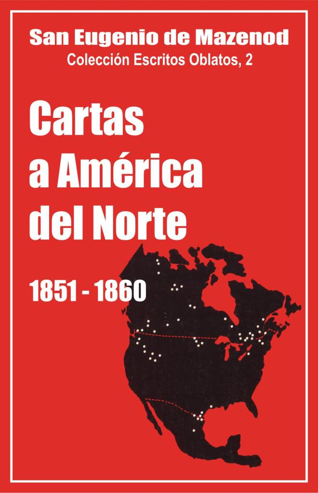

Palo Gordo
2019
Escritos Oblatos: - 01 - 02 - 03 - 04 - 05 - 06 - 07 - 08 - 09 - 10 - 11 - 12 - 13 - 14 - 15 - 16 - 17 - 18 - 19 - 20 - 21 - 22

SAN EUGENIO DE MAZENOD
Colección: Escritos Oblatos, 2
Traducción del francés por
Santiago Rebordinos omi
Postulación General O.M.I.
Roma - 1979
(Asunción 2005)
Palo Gordo
2019
1849 - 1850 - 1856 - 1857 - 1858 - 1859 - 1860 - <
137. [A Monseñor Guigues]
Feliz regreso de Mons. Guigues a Canadá, después del Capítulo General. Los Padres de Buffalo irán más bien a la diócesis de Toronto. Dejarán a la Congregación algunas propiedades y territorios en Bytown. Desafortunada administración del P. Honorat en Saguenay; misioneros que trabajan allí. Éxito de la gira del P. Laverlochère en Provenza. Mons. Allard será un buen Vicario Apostólico; debe salir para Marsella sin demora. El P. Bermond debe permanecer en su puesto.
L.J.C. et M.I.
Marsella, 10 de enero de 1851
Mi querido amigo, esperaba carta tuya para retomar nuestra correspondencia. Y he aquí tu carta del 4 de diciembre, dándome noticias de tu llegada. Sólo sabía que se habían acercado al puerto por la carta que me escribió el P. Léonard desde el barco; pero como ocurre a veces que uno es devuelto a alta mar cuando piensa que está a punto de echar el ancla, estaba esperando la carta que acabo de recibir. Esto me da mucha tranquilidad, y me he enterado con agrado que has llegado a Bytown con buena salud. No has juzgado conveniente pasar por Buffalo, como habíamos previsto, y lo que me dices de ese territorio achica mi pesar. Y ahora, sin mayor dilación, debemos tomar posesión de la misión que el Obispo de Toronto nos ofrece y aun nos presiona para que aceptemos. Le voy a escribir y le diré que te he encargado de enviarle los tres Oblatos que estaban destinados a la diócesis de Buffalo. No debe haber la menor dilación en llevar a cabo esta operación. Los Padres Amisse y Molony partirán inmediatamente con un tercero, que tú deberás elegir, y un Hno. Coadjutor, para abrir esa obra [1]. Veremos después qué podemos hacer por Buffalo. Siempre será necesario garantizar la subsistencia de nuestros Padres en cualquier lugar a donde los enviemos, y, en ese sentido, nunca te recomendaré demasiado que pienses en el futuro de la Congregación, de modo que pueda sostenerse con sus propios recursos. Siempre he insistido sobre este punto. Cuando aceptamos la misión de Bytown, antes de que se pudiera imaginar que un miembro de la Congregación llegaría a ser allí Obispo, yo había escrito una y otra vez que se comprara alguna propiedad en esa ciudad de futuro; citaba el ejemplo de los Sulpicianos en Baltimore y de otros que, a causa del encarecimiento de las propiedades que adquirieron al comienzo, se hicieron con un fondo que fue más que suficiente para sus comunidades. Basado también en este principio, te había autorizado, cuando fuiste nombrado Obispo de Bytown, a construir para la Congregación la casa que me propusiste con ese fin. No necesito decirte lo contrariado que me sentí cuando de golpe cambiaste de idea, después de todo lo que me habías hablado para obtener el consentimiento que te había dado. Ahora me haces una nueva propuesta para el colegio. Supongo que en tu zona no es posible construir durante el invierno, y por lo tanto podemos posponer la decisión hasta que puedas hablar con el P. Tempier.
Acabo de leer una carta escrita al P. Tempier que es muy interesante por los detalles que se le dan. Le hablan entre otras cosas de la visita hecha a Hamilton por nuestro P. Chevalier. Lo que la carta dice sobre ella me confirma en la decisión que te he indicado arriba. Es urgente que aprovechemos las buenas disposiciones de Mons. de Charbonnel, tanto más que, si se viera frustrado, en lugar de mostrársenos como amigo cordial, como lo ha hecho hasta ahora, tal vez se sentiría tentado a pagarnos la ingratitud, al menos con indiferencia. Las reflexiones que tú mismo haces sobre las ventajas que traería una obra más a tu alcance, y bajo la jurisdicción de un Obispo de tu provincia con el que te sería más fácil ejercer cierta influencia, me persuaden de que no dilatarás el llevar a cabo ese proyecto. Por mi parte, he recibido una carta de Saguenay que me confirma en el juicio que había hecho sobre la triste administración de nuestro buen Padre Honorat. Se está trabajando para corregir [sus errores]. El P. Durocher atribuye el mérito al Hermano Pinet, y pide con insistencia se lo deje aún con él, pues se cree amenazado de que se lo quiten. Tú juzgarás por ti mismo sobre la conveniencia de tal arreglo. El P. Durocher anticipa la objeción que yo estaba pensando hacerle. Y es, la necesidad que este buen Hermano tiene de estudiar para recibir las órdenes, pues no ha entrado a la Congregación para quedarse por siempre como hombre de negocios. El P. Durocher insiste mucho en este punto; vería como desastrosa la resolución de apartar de él al Hermano Pinet. Me he enterado con agrado que el P. Grenier anda bien y que el Padrecito Arnaud ha recuperado el entusiasmo en las misiones de los aborígenes. Su celo había decaído en la misión con el P. Laverlochère. Hay que admitir que esa misión con los aborígenes de la Bahía de Hudson supera las fuerzas de la naturaleza humana. Es necesaria una ayuda milagrosa y permanente para no sucumbir. Por eso, conociendo las disposiciones de nuestro Padre Pallier, le hice hablar con el P. Laverlochère, quien no le ha disimulado los increíbles sufrimientos de esa misión, lo cual no ha desanimado al P. Pallier. Así las cosas, he consentido en unir su tarea con la del P. Laverlochère, especialmente en la misión con los aborígenes de la Bahía de Hudson. Ahí está otro excelente oblato del que despojo a Europa. No sospechas el éxito que este buen Padre Laverlochère ha tenido aquí, en Aix y en Tolón. Es para bendecir a Dios. Habíamos escuchado aquí a todos los obispos de las misiones que han recorrido Francia. Ninguno de ellos, incluido Mons. Flaget, había obtenido un resultado semejante. ¡Hay algo divino en la sencillez de este hombre de Dios! El mismo decano de la facultad de teología de Aix dijo que uno ve en él la personificación del divino apostolado cristiano. Se llevó la palma en Aix, donde no es fácil conmoverse: sacerdotes y fieles lloraban en sus pláticas, y el Arzobispo quedó encantado. Los señores miembros de las conferencias de San Vicente de Paúl vinieron a pedirle les diera una alocución en su asamblea, y su éxito superó toda descripción. El P. Courtès me decía en una de sus cartas: "Nuestro Padre Laverlochère ha producido aún más veneración y admiración en su regreso a Aix. Su sermón en San Juan produjo muchas lágrimas y despertó la fe y el celo. Al día siguiente los hombres de las conferencias de San Vicente de Paúl tuvieron una reunión extraordinaria, en la que el Padre se llevó todos los honores y gastos. Durante al menos una hora mantuvo la atención de aquella juventud talentosa, que incluía en sus filas a magistrados, abogados, etc., con una exquisita cortesía, con una elección de anécdotas muy apropiadas al auditorio, con elevados enfoques filosóficos aptos a la vez para edificar vigorosamente y para encantar las inteligencias selectas allí presentes, etc." En otra carta anterior, me decía el P. Courtès: "La audiencia de San Salvador fue inmensa, y, repito, el efecto de sus palabras, tan simples y tan apostólicas, fue excelente. El Sr. Polge (profesor en la Facultad) me dijo poco después que había llorado escuchando y viendo el testimonio vivo del carácter divino del apostolado cristiano, en el sucesor de los pescadores de Genezaret convertido como ellos en pescador de hombres que ve renovarse en su persona los milagros de Pentecostés..." Estas reflexiones son muy justas y nuestra propia impresión no es diferente. Te he querido dar estos detalles para complacerte e invitarte a dar gracias a Dios por habernos dado un apóstol como él. ¡Qué corazón excelente tiene este Padre! No puedes creer lo que me ha costado desprenderme de él para no verlo más en este mundo. Después de esta digresión, vuelvo al tema de nuestras cartas. Debes comprender que las reflexiones que me haces sobre el tema de nuestro futuro Vicario Apostólico son superfluas. Estás repitiendo lo que ocurrió en tu propio caso. Ha sido nombrado por el Papa, ¿qué se puede decir después de esto? Por lo demás, mi conciencia está totalmente tranquila. Conozco Vicarios Apostólicos que carecen de las cualidades que el nuestro tiene. Las que te parece que le faltan, le serán provistas. Mientras tanto, sin dilación, úrgele se prepare para llegar lo antes posible, ya me han llegado las órdenes de Roma. Consuélalo lo mejor que puedas y no agraves su sufrimiento. Me preocupa tan poco lo que el Clero de Canadá o nuestros propios Padres puedan pensar o decir, como cuando sucedió tu elección. Les deseo a unos y otros todas las virtudes y demás cualidades de aquél a quien ellos menosprecian. El P. Allard ha debido de recibir mi mandato, que es sub gravi, que lo acepte y que parta inmediatamente en un buen barco. Si el P. Bermond comete la enorme falta de dejar su misión por su propia cuenta, no sólo deploro su pecado, sino que temo su acostumbrada indiscreción. Estate, pues, en guardia cuando llegue para taparle la boca. Sabes de qué estoy hablando. Esos murmuradores profesionales tienen una conciencia tan laxa que no retroceden ante ninguna detracción, expuestos como están muy a menudo a proferir calumnias allí donde creen permitirse únicamente murmuraciones que llegan hasta el pecado mortal, debido a la enormidad de las cosas que dicen y al rango de las personas. Antes de terminar, quiero decirte que he recibido una carta del P. Antoine, fechada en Plymouth, adonde su barco llegó destrozado, después de un viaje de 74 días, pasando por cinco tormentas consecutivas que le hicieron volver a Inglaterra, cuando estaban a la vista de Nueva York. Adiós, y mil bendiciones para el año nuevo y para tu vida. Un abrazo.
† C. J. Eugenio, Obispo de Marsella.
[Al margen] P. S. : Supongo que la carta que escribí al P. Taché le habrá llegado. En todo caso, te pido le repitas lo que sabes, que le he escrito para decirle que venga a ser consagrado por mí, y de aquí irá a Roma.
138. [Al P. Antoine, en Plymouth]
Gracias a Dios, porque el P. Antoine y sus compañeros han salvado sus vidas en la tormenta del Atlántico. Noticias de los PP. Marchal, Conrad y Paillier.
Marsella, 17 de enero de 1851
Mi queridísimo pequeño Padre Antoine, ¿cómo podría decirte la emoción que me produjo la carta tuya que acabo de recibir? Después de una inquietud que se prolongó durante el tiempo en que no he tenido noticias tuyas, me entero de las calamidades de tu peligrosa navegación. Evidentemente os habéis salvado solo por un milagro, pero también ¡qué gracia ha sido el valor que os ha mantenido en medio de un temporal tan grande! Yo he dado gracias a Dios ante todo por haberte salvado, pero también por haberte sostenido para gloria de tu ministerio y para el bien de aquellos a los que sólo te tenían a ti como consolador. Me hubiera gustado recibir todavía otra carta tuya antes de embarcarme para Roma. Comienzo mi viaje con este pesar. No obstante, espero que el P. Aubert te haya visitado para calmar un poco la pena que has podido sentir tú como también tus tres compañeros de infortunio. Ellos estarán menos contentos que tú, cuando haya que volver a embarcarse, pero debemos confiar que el mar acabará calmándose bajo vuestros pasos. Acaban de pasar una prueba que se parece a otras, pero no pudieron permitirse decaer cuando han visto la valentía de su padre. Agradezco al Sr. MacDonnel la calurosa acogida que les ha dado: no hubiéramos esperado menos de sus virtudes sacerdotales y de su amabilidad, y os encargo expresamente le transmitáis mi agradecimiento por ello, y saludéis afectuosamente de mi parte a los otros sacerdotes a quienes he visto al pasar por esos lugares, adonde volvería gustosamente si fuera más joven y estuviera más libre de lo que estoy. El testimonio que das acerca del Hno. Luis es muy adecuado para acelerar la fecha de su consagración perpetua. Espera para ello a que hayáis llegado a América. Después de un año de perseverancia en su quinquenio, podrá ser admitido a los votos perpetuos si así lo juzgan en la provincia a la que va a pertenecer.
Los PP. y HH. agradecen mucho tus buenos recuerdos y no te olvidan. El P. Marchal continúa desempeñándose bien en su trabajo. El P. Conrard lucha con entusiasmo e inteligencia contra el cisma introducido en Sión por los tres hermanos Baillard. El Hermano Jeanmaire sigue con su trabajo en el Seminario Mayor. El P. Paillier se unirá al P. Laverlochère para la misión de América del Norte. No se ha asustado ante el cuadro terrible que el P. Laverlochère pudo haberle pintado. Espero que no se echará para atrás ante la prueba como algún otro. Ciertamente es una prueba superior a la naturaleza, pero ¡qué fuerza inspira la gracia poderosa de Jesucristo! Es lo que prueba el P. Laverlochère, que ha correspondido a esa gracia. Adiós, mi querido pequeño Padre Antoine. Mientras escribía esta líneas, había colocado tu retrato ante mis ojos, pero cada día, mañana y tarde, te veo con otros ojos distintos a los del cuerpo ante el Divino Maestro en las oraciones que le dirijo en el altar y a los pies del tabernáculo por todos los miembros de la familia que en su munificencia me ha dado. Te bendigo a ti y a nuestros queridos hermanos cuyos sufrimientos he compartido, encomendándome más que nunca a vuestras oraciones.
† C. J. Eugenio, Obispo de Marsella. S. G
P. S: No conociendo tu dirección en Plymouth, envío mi carta al P. Aubert para que te la envíe, o te la dé si estás con él.
139. [Al P. Baudrand]
Saludos de Año Nuevo. Escribir aunque el Superior General no conteste.
[Marsella], 17 de enero de 1851
Está claro, mi querido P. Baudrand, que eres un hombre despiadado; no haces concesiones a tu pobre prójimo, por más excusable que sea. Queriendo castigarme por la tardanza de mis cartas, debes reprocharte a ti mismo el no haber sido justo, por no haber sido compasivo y caritativo. Dos de mis cartas se han perdido. ¿No te apena, mi querido hijo, tu falta de generosidad, ya que evidentemente soy inocente del crimen por el que quieres castigarme, al suspender tu correspondencia conmigo, aun en la ocasión del Año Nuevo? No obstante, te lo deseo muy feliz y pido bendiciones para ti en tu calidad de Superior de una numerosa comunidad.
140. [Al P. Durocher]
El P. Tempier está de Visitador en Canadá. Se debe confiar en él como en el Superior General.
Marsella, 17 de enero de 1851
No puedes creer lo penoso que es para mí no poder conocer personalmente a todos los miembros que Dios me ha dado en el Nuevo Mundo, y en particular a ti, mi querido padre. Envío al P. Tempier como Visitador de nuestras casas en Canadá. Se sentirán felices con este Visitador, mi primer compañero en la familia a la que pertenecemos todos. Pueden hablarle con la misma confianza que a mí; tenemos un solo corazón y una sola alma como desearía que ocurriera con cada uno de Uds. Esta ha sido siempre nuestra divisa, como la de los primeros cristianos; por haberla olvidado, muchos se han apartado del espíritu que he deseado establecer en nuestra Congregación.
141. [A Mons. Taché, Coadjutor de San Bonifacio]
Mons. de Mazenod lamenta que los Obispos de Canadá no le hayan consultado antes de nombrar Obispo a Mons. Taché. Debe acudir a Marsella para ser ordenado por el Fundador
Marsella, 19 de enero de 1851
Querido hijo, he bendecido siempre al Señor por todo el bien que realiza por medio de tu ministerio; y le ruego sin cesar que te conserve y puedas cumplir sus designios de misericordia con esos pobres aborígenes que hasta el momento han estado hundidos en la más horrible sombra de la muerte. Debo agregar, sin embargo, que no deberían haberte presentado para obispo sin antes haberme consultado y esperado mi consentimiento, como pide la Regla. No es cierto que me hubiera opuesto a una resolución que ha sido tomada solo para la mayor gloria de Dios, el honor de la Iglesia y la salvación de las almas. Yo habría estado de acuerdo con esa idea y la hubiera aplaudido, como lo estoy ahora con todo mi corazón, pero es mi deber reclamar por el olvido que se ha mostrado de un punto esencial de las Constituciones. El Obispo de Montreal conoce esto muy bien, pues le tocó pedir mi consentimiento cuando el P. Guigues fue presentado para el Obispado de Bytown. Lo repito, pues, yo hubiera consentido dar esta aprobación que se ha pasado por alto, como la doy ahora con sumo gusto, cuando ya no es necesaria, puesto que la Santa Sede ha seguido adelante y te ha nombrado Coadjutor de San Bonifacio.
Espero, sin embargo, que no se vea mal que yo insista en que vengas a recibir la consagración episcopal de mi mano. Lo mínimo que se puede pedir es que entre un hijo de mi familia y el padre de la misma se establezcan lazos y una unión sagrada que nadie podrá debilitar jamás. Podrás aprovechar esta oportunidad para identificarte con hermanos que no conoces y peregrinar a la tumba de los santos Apóstoles. No faltarán objeciones; toma este ruego que te hago como una orden...
Yo no conozco bastante la misión del Río Rojo. No debo ocultarte que me ha sido presentada con colores tan poco favorables que me he preguntado si no deberíamos retirar a nuestros hombres de allí... Ven, pues; no es mucho pedir a un hijo amado, al que estoy por confiar los más preciosos intereses de la Congregación, quiero decir la dirección de sus personas en una de las misiones más difíciles.
142. [Al P. Baudrand]
Gracias por las noticias sobre el trabajo de los Oblatos en Montreal. El Papa ha aprobado todas las normas introducidas por el último Capítulo General. Se espera siempre al P. Allard en Marsella. El P. Laverlochère ha sido nombrado misionero apostólico. El proyecto de la Iglesia de San Pedro en Montreal no es bueno.
L. J. C. et M. I.
Roma, 25 de marzo de 1851
Querido P. Baudrand, no quiero salir de Roma sin agradecerte las buenas noticias que me das sobre Canadá. Veo con gozo que vuestro celo no ha caído y que cada uno de su parte trabaja bien por la gloria de Dios y la salvación de las almas. La gente debe sentirse feliz por teneros en Montreal. Vuestras obras hablan por vosotros y responden a todas las objeciones que se habían hecho para postergar lo que hace tiempo yo estaba pidiendo. Habéis progresado mucho en la moralización del barrio abandonado donde os han colocado y veo en el breve informe del P. Garin que no os estáis limitando a evangelizar los habitantes de vuestro suburbio. Que el Señor bendiga vuestros esfuerzos más y más. Hubiera deseado tener algo más que la simple lista de las misiones y retiros que habéis dado en toda la diócesis de Montreal. Es bueno conservar al menos los rasgos característicos principales de cada misión. Eso servirá para edificación de aquellos que vendrán después de nosotros y para honra de la Congregación. Acabo de obtener la aprobación de la Santa Sede de todas las normas introducidas por el último Capítulo General. El P. Tempier, a quien voy a enviar a América como Visitador extraordinario, os informará sobre todo lo referente a este asunto importante. Él recibirá mis instrucciones para ordenar cuanto interesa a la Congregación en vuestro país. El Papa nos ha dado, además, un Breve que nos honra el cual estimulará grandemente, pienso yo, a todos nuestros miembros extendidos hoy por todo el mundo. En Propaganda no cesan de alabarlos, o al menos a la Madre que los dio a luz como hijos para la Iglesia. Hubieran deseado darnos otros Vicariatos Apostólicos que acaban de erigir; pero les rogué que por el momento se contentaran con lo que estamos haciendo en las varias misiones, a las que debemos agregar la hermosa misión de la tierra de Natal. El Sr. Obispo de Mauricio me ha dicho cosas muy consoladoras sobre esta misión que promete mucho para un futuro cercano. Estoy esperando también con impaciencia al jefe de esa misión, a nuestro P. Allard, quien, en lugar de escuchar la voz de su propia modestia, habría hecho mejor poniéndose en camino lo más pronto posible al recibir mi carta. En estos casos hay que reconocer la voluntad de Dios en las llamadas de los Superiores, y de un Superior que es nada menos que el Jefe de la Iglesia, y uno debe marchar con fe y sencillez, contando con la protección de lo alto, que nunca falta al hombre obediente que lanza su red en nombre del Maestro.
El P. Laverlochère os llegará casi al mismo tiempo que mi carta. Dile que he recibido con gran alegría la carta que me escribió desde París. El bien que este excelente Padre ha hecho en su viaje por Francia es incalculable; el Espíritu de Dios estaba con él y por eso ha hecho tanto bien por donde ha pasado; y no sólo ha conmovido profundamente los corazones de la gente sencilla, sino también a sectores de la clase alta y bien educada de la sociedad, es verdaderamente admirable. Dile que he solicitado para él al Papa las facultades de Misionero Apostólico, y además la facultad de administrar el sacramento de la Confirmación en las misiones con los aborígenes. ¡Ah! ¡si hubiera podido recorrer toda Francia! Pero ha hecho más allá de lo posible a las fuerzas humanas en el corto viaje que hizo yendo al puerto donde tenía que embarcarse, con el abnegado compañero que consiguió asociar para el difícil ministerio de la conversión de los aborígenes de la Bahía de Hudson [el P. Paillier]. Así, por respeto al atractivo de nuestros miembros, sacrificamos los intereses de nuestras misiones de Europa, donde por otra parte nuestros Padres continúan haciendo mucho bien.
Debo confesarte, querido Padre, que no me ha encantado el proyecto de vuestra iglesia. Cuando se emprende una construcción tan importante, yo hubiera preferido se hubieran consultado varios arquitectos y se eligiera entre varios proyectos presentados. Si no se sabe inventar, hay tantos modelos hermosos para reproducir. Os ruego reconsideréis este asunto y penséis con más detención antes de adoptar un proyecto. Tendría que reservarme yo este asunto por la importancia que tiene, pero la dificultad y la distancia me llevan a aceptar la decisión del Visitador que voy a enviar a América. Deberían haberme enviado también el proyecto de la casa, es la norma general. Una vez construidos los edificios, es tarde para esperar las observaciones que el Superior General pudiera hacer. Por esta vez, el Visitador me dará un informe de todo. Me siento feliz, querido P. Baudrand, por haberte podido escribir una carta tan larga, gracias a la lluvia que ha alejado de mí a los fastidiosos. No obstante, deseo decirte que el tipo de carta que has adoptado no satisface lo el deseo que tengo recibir de ti todo lo que sabes que tanto, me interesa. Te bendigo con todo el afecto de mi corazón.
† C. J. Eugenio, Obispo de Marsella.
143. [A Mons. Guigues]
El P. Laverlochère podrá administrar el sacramento de la confirmación en sus misiones. Es voluntad expresa del Papa que el P. Allard sea Vicario Apostólico de Natal.
Marsella, 18 de abril de 1851 Viernes Santo
He obtenido del Santo Padre el Papa para el P. Laverlochère permiso para administrar el sacramento de la confirmación en sus misiones con los aborígenes, y se lo comunicaba a él. Habrá partido sin conocer las facultades que le habían sido concedidas, lo cual es una gran desgracia para esos pobres neófitos que ciertamente merecen esa gracia. Creo que, una vez perdida la carta, he escrito a uno de nuestros Padres en Montreal, y le he hablado de esto. Pero ¿se considerará suficientemente autorizado el P. Laverlochère por esta información indirecta?...
Por el mismo correo he escrito al P. Allard para comunicarle la decisión de Roma. Sabes que cuando aceptó ir a Natal como un simple misionero, si lo enviaba allí, me daba en sus cartas las razones por las que consideraba legítimo rehusar ser promovido al episcopado, como corresponde al Vicariato Apostólico. Primeramente informé de ello a la S. C. de la Propaganda, la cual no ha considerado necesario atenerse a esas razones. Para evitar otra negativa posterior, hablé del tema con el mismo Santo Padre, y él no dudó en ordenarle que aceptara; que parta, pues, en nombre del Señor. Será responsable de los inconvenientes de una postergación más larga. Yo le llamo y el Papa sanciona esta misión con su autoridad suprema; ¿necesita más confirmación?
144. [Al P. Tempier, Visitador extraordinario a Canadá]
Deseos de un buen viaje
Marsella, 1 de mayo de 1851
¡Que el Señor te guarde, mi querido amigo, que te preserve de todo mal; que te bendiga en tu viaje y en todos tus proyectos! Te acompaño con el pensamiento, y con mis deseos más ardientes. ¡Qué penoso ha sido para mi corazón el momento de la separación! Para consolarme, tengo que dirigirme al Divino Maestro que inspiró y ha sostenido nuestra unión de medio siglo, por cuyo servicio sufrimos ahora esta violencia. No estás aún en la estación y ya siento la necesidad de expresarte la tristeza de mi alma. Te estoy escribiendo sin saber a dónde dirigirte estas líneas. No sé dónde te alojarás en Lyon. Por otra parte, tú viajarás más rápido que mi carta. Por lo demás, no tengo nada que comunicarte, a no ser que te cuides mucho, que no cometas imprudencias en un viaje tan largo como el que vas a emprender y que me escribas a menudo, muy a menudo. He insistido para que el P. Rouisse te acompañe hasta Inglaterra; no puedes creer lo que es ese país para un viajero que no conoce su lengua... Él te será muy útil y tú le harás bien. Durante el viaje, dale buenos consejos. Pienso que puede ser útil. Es un hecho que desde que dejó Aldenham no ha habido más conversiones, mientras que, al partir él, superaban los cien...
Adiós, mi queridísimo amigo; sin duda que, de tanto en tanto, te acordarás que no tienes contigo al compañero de tu viaje a Roma. Habla entonces con su Ángel de la Guarda, como yo rezo al tuyo, rogándole que te cuide, te conserve con buena salud y te traiga de vuelta, lleno de méritos, en menos tiempo del que hemos calculado para este largo viaje que emprendes para la gloria de Dios y el bien de la Congregación.
Te abrazo con todo mi corazón y te bendigo
145. [Al P. Tempier]
Poderes del Visitador extraordinario en Canadá
Marsella, 1 de mayo de 1851
... Te doy plenos poderes para visitar las casas y gozarás allí de todas las prerrogativas que, de acuerdo a nuestras Constituciones, están dentro de la competencia de los Visitadores. Además, como Visitador extraordinario, estás provisto de muy amplias facultades de modo que puedas llevar a cabo con todo derecho lo que creas oportuno y verdaderamente útil. Te corresponde hacer una investigación estricta sobre cosas y personas en cada casa, y considerar cuidadosamente todo lo referente a su bien, tanto temporal como espiritual.
...Nada te sea ajeno de todo lo que concierne al progreso de nuestra Congregación o puede contribuir a él en América del Norte.
Por otra parte, como el motivo que nos ha llevado a enviarte a América es también el deseo de promover la causa de la religión por medio del desarrollo de nuestra Congregación, en esto te transmito también mis poderes, aprobando cuanto puedas realizar y ratificando cuanto lleves a cabo.
Vete, pues, en nombre del Señor, amado hijo, hacia esta parte de nuestra familia que está separada de nosotros por una distancia tan grande, y a la que, acompañándola con todo el afecto de mi corazón, tengo constantemente presente e íntimamente unida a mí. Cumple fielmente por su bien el ministerio que te ha sido encomendado. Que la Santísima e Inmaculada Virgen María, nuestra queridísima Madre, te guarde permanentemente bajo su protección; que el Ángel de Dios te sea propicio también en tu ida y en tu vuelta; durante este tiempo, no cesaremos de implorar del cielo una abundante lluvia de gracias para ti.
146. [Al P. Tempier, Visitador extraordinario a Canadá]
Mons. de Mazenod ha quedado solo en Marsella para atender los asuntos de la Congregación y de la diócesis. Consejos.
[Marsella], 15 y 19 de junio de 1851
En medio de una tempestad de asuntos que me están aplastando, puedo decir que estoy solo, totalmente solo, tanto de parte de la diócesis como de la Congregación. Todo el trabajo cae sobre mí, que no estoy dispensado por ello de consagrar iglesias, visitar las parroquias y confirmar este año cerca de tres mil niños, sólo en la ciudad de Marsella, con un buen ataque de lumbago que comenzó en Mazargues y que continúa aún.
No tengo necesidad de urgirte que seas bueno y observes los modales durante las visitas, pero lo que te recomiendo es que no seas tímido. Escucha a todos, compulsa tus anotaciones para que puedas cotejarlas con lo que te van diciendo y fundamenta todo sobre una base firme, pues no será fácil volver a hacer visitas como la que estás haciendo ahora. Mándame un informe de todo, aun de las más pequeñas cosas, tanto de las inspecciones que haces como de los proyectos que elaboras.
147. [Al P. Tempier, Visitador extraordinario en Canadá]
El P. Tempier ha llegado a Montreal. Mons. Allard está en Marsella y edifica a todos. Las propiedades de los Oblatos en la diócesis de Bytown. Debe ser severo con los que critican y no obedecen. El Provincial debe ser elegido entre los PP. Baudrand y Santoni. El P. Tempier ha sido enviado a Canadá "no para aprobar sino para reformar"
Marsella, 24 de junio de 1851
Dios sea bendito, querido Tempier, ya que me he enterado que has llegado al continente. Sin duda, te queda aún un largo camino que recorrer, pero pronto estarás descansando en Montreal, donde me imagino harás una pausa bastante larga. Tienes cosas que hablar allí, y precaverte muy bien contra las seducciones y sutilezas de la persona con la que tienes que tratar. Tienes que escuchar al santo Obispo de Samaria para hacerte una idea del egoísmo y de la doblez de esa persona [2].
El santo Obispo de Samaria [Mons. Allard] está en Marsella; yo admiro su virtud y su sencillez. El se considera a sí mismo sólo como un Padre de la casa del Calvario, donde está viviendo. Pide como un favor no ser tratado con el título de Monseñor que le es debido. Va a todos los ejercicios de comunidad y lleva la humildad hasta el punto de pedir permiso al superior para visitar al P. Telmon en su habitación, antiguo salón del señor de Lander, donde lo hemos colocado para que pueda recibir las atenciones de Miette [3].
Nuestro buen P. Allard ha tomado, pues, la actitud que corresponde a un religioso que ama a su Orden y que nunca nos dará motivo para lamentar el haberlo elegido. Desearía poder decir lo mismo del otro que marcha por un camino totalmente diferente. ¿Quién hubiera podido imaginar que iba a olvidar de manera tan completa todas las condiciones de mi consentimiento para su elevación ? Tendrás por tanto que obrar con firmeza, diga lo que diga, separando sus intereses financieros de los de la Congregación. No podemos consentir que tome todos los ingresos y que se crea en regla con la Congregación porque alimenta y viste a las personas que trabajan en su diócesis. No habría cosa más bella y edificante que vivir en comunidad con los misioneros. Habría sido deber del Obispo, en lugar de apoderarse de todo y centrarlo todo en él, arreglar las cosas de manera que la existencia adecuada de los misioneros estuviera asegurada en el presente y sobre todo en el futuro. Nada ha hecho en este sentido. ¿Por qué toma toda la contribución de la Propagación de la Fe en lugar de compartirla al menos con nuestros Padres? Los Consejos suponen que es para sus antiguos hermanos lo que es un Vicario Apostólico para los Misioneros de los que es jefe.
Es absolutamente necesario que nuestros Padres tengan asegurados los ingreso con los que se alimenten, se mantengan y puedan ahorrar una parte para emergencias y como provisión para el futuro. Es obligación del Obispo arreglar las cosas de tal manera que la existencia conveniente de los misioneros esté asegurada para el presente y sobre todo para el futuro.
... Si tuvieras que tratar con hombres abnegados y dignos de confianza, no habría problema, pero ¿cómo puede uno confiar los intereses más preciosos de la Congregación a personas que no poseen su espíritu y que no han sabido adherirse a ella? Te ruego no transijas en esto, hazles sentir claramente lo ridículo, lo absurdo, lo desordenado que es pretender, en vida del Fundador, entender de forma muy distinta a la de él el espíritu y la dirección de la Sociedad. No estoy dispuesto a tolerar este tipo de oposición. Si esos Padres, tan orgullosos, tan temerarios, no se apartan de ese extravío, me veré obligado a buscar el modo de terminar con ese escándalo. Las intenciones de los unos y la conducta de los otros son igualmente censurables.
El Padre [Baudrand], que se ha manifestado indignamente contra la admisión de los Obispos en nuestra Congregación, se atrevió a decir abiertamente que hay que introducir la democracia en nuestra orden. El Padre C. parece haberse dejado seducir por estas palabras, cuando expresó que no iría a la diócesis de Toronto, si eso suponía depender de Mons. Guigues; y este buen hijo del P. Lagier buscó un pretexto, que dio a conocer a todo el clero de Canadá, para no asistir a la consagración del Obispo de Bytown.
... Se ha llevado la injusticia hasta decir que [Mons. Guigues] había hecho todo lo posible por llegar al episcopado, lo cual es una enorme calumnia, y también se le atribuye la elección del P. Allard como Vicario Apostólico para desembarazarse de él. Hay ahí tantas infamias que uno no sabría excusarlos de pecados mortales; pero esos Padres se han acostumbrado a hablar tan sin consideración de todo y a todos que no sienten ya escrúpulo de nada...
No dudaría en proponerte al P. [Baudrand] como provincial, si tuviera el espíritu de la Congregación, que es un espíritu eminentemente religioso, que incluye todo lo que yo podría decir sobre las virtudes a las que nos hemos consagrado, pero ¿cómo confiar los más preciosos intereses de la familia a alguien que, a una virtud mediocre une un espíritu de contradicción y de oposición, mostrando tan poca deferencia y respeto al jefe de la familia y a sus miembros más respetables, hasta el punto de pretender neutralizar las resoluciones tomadas conforme a las santas Reglas, que ellos observan y conocen mejor que él?
Mons. Allard reconoce que los Padres en Canadá tienen pocas relaciones personales con el Superior General, que es casi un extraño para ellos, y que se preocupan poco de integrar su espíritu, como si uno pudiera formar parte de una Congregación sin tener el espíritu de su fundador.
A pesar de los poderes que te he dado, deseo que no se tome nada como definitivo hasta que haya dado mi consentimiento. El P. Vincens insiste siempre en que el P. Santoni no sea apartado de su noviciado [4]. No obstante, si tú consideras que el P. Baudrand no puede desempeñar ese cargo, aunque pudiera temerse que el P. Santoni no lo haría mejor ¿sería necesario enviártelo? Conviene que veas a cada uno en particular, razonar bien con ellos y tratar de llevarlos a las ideas justas. Debes hacerles sentirse responsables de todo el mal que necesariamente resultaría de la falta de unidad; debes hacerles comprender que no tienen la misión de decretar, disponer o reformar según su modo de pensar, etc.
Sigue manteniéndome al tanto de todo. No obstante, antes de terminar, deseo modificar lo que te había dicho, mientras escribía esta carta, sobre las restricciones que había puesto a tus poderes. Te bastará que veas en ello el miedo que tenía de que pudieras ser débil en las resoluciones que tengas que tomar. No has sido enviado para aprobar sino para reformar. Obra con autoridad, no uses miramientos con nadie, cuando se trate de restablecer la regularidad, la obediencia, la pobreza, la subordinación.
Cuando llegue el momento, haz un acta de visita con cal y arena, bien pensada, pero estableciendo los principios. Pon como norma que cada año todos los miembros de la Congregación escriban al Superior General una carta de dirección; que todo Superior local, cada tres meses, escriba una carta dando cuenta del personal de su comunidad sin olvidar lo concerniente a él mismo; y que dos veces al año el Ecónomo provincial informe al Procurador General, pero este informe financiero debe ser hecho como es debido y en conciencia, como obligatorio, y de una manera uniforme.
Adiós; solo me queda espacio para abrazarte.
148. [Al P. Jacques Santoni]
Poderes de Provincial.
2 de julio de 1851
CARLOS JOSÉ EUGENIO DE MAZENOD, OBISPO DE MARSELLA,
Y SUPERIOR GENERAL DE LOS MISIONEROS OBLATOS
DE LA SANTÍSIMA VIRGEN MARÍA, CONCEBIDA SIN PECADO
Al muy amado y Reverendo Padre Jaime Santoni,
sacerdote de la misma Congregación.
Salud y Bendición en el Señor.
Dado que tu doctrina, tu piedad, tu prudencia y otras excelentes cualidades tuyas me son perfectamente conocidas, nos, que tenemos la responsabilidad de gobernar la Congregación de los Misioneros Oblatos de la Santísima Virgen María, hemos decidido colocarte al frente del gobierno de la Provincia de Canadá, para que puedas obrar en nuestro nombre en el seno de nuestra familia que trabaja tan activamente en esas regiones por procurar la salvación de las almas y promover la gloria del Dios Optimo y Máximo.
Esta Provincia, que incluye el Alto y Bajo Canadá, limita al Sur con los Estados Unidos de América; al Oeste y Norte se extiende, actualmente, hasta los límites de la jurisdicción de los Obispos de Canadá.
A ti, querido hijo, y a todos los interesados, damos a conocer por las presentes que te nombramos y constituimos Provincial de la mencionada región, con todas las facultades y derechos inherentes al oficio de acuerdo a nuestras Reglas y Constituciones; ordenamos a todos y cada uno de nuestros amados en Cristo, Padres y Hermanos, que pertenecen a la citada Provincia, que te reciban como el vicario al que investimos de nuestra autoridad y te muestren reverencia, amor y obediencia, pues así es como los miembros de los institutos religiosos deben honrar a su legítimo superior.
Para el buen gobierno de la Provincia, te asistirán con el título y los derechos de Consejeros [5], el R.P. Baudrand, que será tu admonitor, y los PP. Honorat, Pedro Aubert y Léonard; los dos primeros forman el consejo ordinario, mientras que los dos últimos deben ser convocados para el consejo extraordinario; el R. P. Chevalier será el Procurador de la Provincia.
En el ejercicio de tu cargo, procura obrar de acuerdo con las Reglas y Constituciones, para el bien tanto espiritual como temporal de la Provincia que te ha sido confiada. No dejes de informarme mensualmente, y si fuere necesario con más frecuencia, de los asuntos tratados por ti y de todo lo concerniente al estado de la Congregación en tu Provincia.
Vete, pues, querido hijo, bajo los auspicios de la obediencia, a la tarea que te ha sido encomendada; esfuérzate día y noche en mostrarte como buen administrador, como buen Pastor para con nuestros miembros comprometidos al servicio de Dios en esos lugares, y en cumplir de palabra y con el corazón los deberes de un padre previsor. Muéstrate pleno de solicitud, en primer lugar, por conservar entre ellos la unidad del espíritu con el vínculo de la paz, y promover sin cesar el celo y la práctica de la observancia regular; con este fin rogamos al cielo te dé una ayuda poderosa y la valiosa protección de la Bienaventurada Virgen María concebida sin pecado.
149. [Al P. Tempier, Visitador extraordinario en Canadá]
El P. Vincens quisiera transferir a l'Osier la casa de estudios de los Padres jóvenes y no dejar partir al P. Santoni Consagración de Mons. Allard. La S C. de la Propaganda ofrece el Vicariato Apostólico de Malabar. Abrir otra casa estable en la diócesis de Bytown. ¿Nombrar un Provincial o un Vice-provincial? Títulos de propiedad.
[Marsella], 19 de julio de 1851
No importa, voy a tomar la pluma, y llegaré hasta donde pueda.
Comienzo por decirte que me hacen cumplir aquí una tarea muy triste. ¿Puedes creer que, después de tanta elaboración durante tres días mortales en Consejo, compuesto por los tres Asistentes presentes en Europa, el P. Vincens, apenas llegado a l'Osier, me escribe que lo cambie todo, y llega hasta pedir que la casa de estudios que tanto trabajo y gastos nos costó establecer en Marsella, se traslade sin más ni más a l'Osier, de donde el P. Santoni y él pretenden que ese padre no debe salir, si no queremos ver que todo se derrumba?
No obstante, es necesario acabar de una vez con esa casa de estudios y hacerla funcionar en forma regular. Me gustaría que para Canadá hubiera una casa de descanso y de estudios en Longueuil.
Te cuento que consagré a Mons. Allard el pasado domingo, asistido por los Obispos de Viviers y Fréjus. El obispo de Digne, después de haber rehusado y haberme obligado a recurrir al Obispo de Frejus, llegó aún unas horas antes que él a Marsella. La ceremonia fue muy hermosa y emocionante; el Prefecto asistió a ella. Salió todo muy bien, incluso en la mesa, donde había colocado todo lo que puede caber en mi comedor, es decir 25 personas. Comprenderás que encargué a otro distinto de Vicente de preparar la comida.
Le hice presidir las Vísperas al nuevo Obispo y el P. Gondran ante cinco Obispos y un numeroso auditorio, nos predicó un hermoso sermón sobre el episcopado que elaboró durante la semana con su prodigioso talento que asombra a todos. Escribí a la Propaganda pidiendo las últimas instrucciones para el Vicario Apostólico; él emprenderá el viaje en cuanto me llegue la respuesta.
Recibí ayer una carta muy apremiante de la Propaganda para invitarme a asumir un nuevo Vicariato Apostólico de gran importancia bajo varios aspectos [Malabar]. Sería preciso poner inmediatamente a disposición de la Sagrada Congregación seis miembros, uno de los cuales sería promovido al episcopado... Agradezco mucho a la S.C. que haya pensado en nosotros, pero he hecho valer mis razones invencibles para no aceptar. Lo que sí he aceptado es el seminario mayor de Fréjus. El Obispo ha estado perfecto en todo.
... Tendrías que ver si es oportuno abrir una casa estable y de nuestra propiedad en ese lugar. Nos convendría siempre tener algunas comunidades bien abastecidas desde donde partirían los miembros para dar misiones, mejor que esos puestos dispersos aquí y allá que es necesario dejar a los sacerdotes seculares, pues es inútil vanagloriarse de que la Congregación pueda algún día encargarse de toda la diócesis de Bytown.
El tema del provincialato de Canadá ha sido muy bien discutido como para que se pueda volver a él. No conviene de ningún modo a los intereses de la Congregación, tanto en lo moral como en lo temporal, que el Obispo de Bytown sea investido de ese cargo. Que se tengan con él todas las atenciones que exige su carácter y su posición, que el Provincial no atropelle nada, que combine con él mientras los intereses de la Congregación no tengan que sufrir por ello, pero que la autoridad del Provincial sea independiente, que él actúe con las personas y con las cosas en conformidad con las Reglas. ..
Vuelvo sobre la vía media [nombrar un vice-provincial] que tú proponías con relación al Provincial. Si uno pudiera fiarse de la sinceridad de aquel que ha dado demasiados motivos en su contra sobre este punto, yo no estaría lejos de adoptar eso en cierta medida. Convendría que el vice-provincial, como tú lo concibes, tuviera una autoridad un poco más independiente, tanto sobre las cosas como sobre las personas. Si el Obispo de Bytown conserva la facultad de disponer de los fondos y de ubicar a las personas, sería exponerse a quedar en el estado actual que tanto disgusta a todos. Sería necesario reducir su provincialato casi a un título honorífico y convertirlo en un consejero necesario para el así llamado vice-provincial.
El Obispo de Samaría hace la observación de que hay muy poco cuidado con los títulos de nuestras propiedades de Bytown y Montreal. A veces se envían por correo o por recaderos, lo cual no debería hacerse. Haz que te rindan cuenta exactamente de todos esos títulos y que te den una copia para colocar en nuestros archivos de aquí; trae también el plano de la ciudad de Bytown, en el que están marcados con número todos los lotes de los que somos propietarios. Es indispensable tener ese plano aquí para juzgar las conveniencias de las adquisiciones que pudieran hacerse, pues es necesario cuidarse de dejarse llevar por una falsa delicadeza que nos impediría hacer las adquisiciones que nos conviene hacer.
... No debemos detenernos (en nuestras adquisiciones) más que cuando hayamos adquirido lo necesario para la subsistencia de los nuestros. Esto es conforme a nuestras Reglas.
150. [Al P. Tempier, Visitador extraordinario en Canadá]
Consagración de Mons. Allard que edifica a la comunidad del Calvario.
Marsella, 7 de agosto de 1851
Te habrás enterado por los periódicos de la consagración de Mons. Allard, pero lo que no dicen los periódicos es la humildad, la simplicidad, la admirable regularidad del nuevo Obispo; vive en la casa del Calvario; no he insistido a propósito en que se alojara conmigo, a donde viene cuando quiere, y donde se halla como en su casa; pero yo preveía la edificación que daría su actitud en esa comunidad; es el primero siempre en todos los ejercicios y lleva la perfección hasta pedir permiso para entrar en la habitación de un enfermo, como lo ha pedido para dar algunas estampas a sus padres; su misión y todos los sufrimientos que allí le esperan no le preocupan más que si se tratara de ir de Marsella a Aix.
151. [Al P. Ricard]
Muerte del P. Laydier en Ceilán. Obediencia a los Obispos.
Marsella, 13 de agosto de 1851
Me hablas del desánimo del hermano (Blanchet). Voy a redoblar las oraciones por él; sobre todo voy a invocar al mártir de la caridad que acaba de tomar posesión del cielo muriendo en Ceilán al servicio de los enfermos del cólera: a nuestro buen Padre Laydier, verdadero apóstol, que se ha sacrificado por sus hermanos, esos pobres insulares; nos ha sido arrebatado en seis horas, pero por una disposición admirable de la Providencia, se ha equivocado de camino y ha llegado sin sospecharlo al lugar donde se encontraba el P. Mauroit, en cuyas manos ha entregado su alma buena, después de haber recibido todos los sacramentos. Voy a transmitirte, para tu edificación y consolación, las propias palabras del P. Semeria: "El P. Leydier vio aproximarse el término de su vida, no solo con calma y serenidad, sino también con una alegría sensible; fue él mismo quien se apresuró a pedir los últimos sacramentos. El P. Mauroit y todos los presentes se impresionaron hasta llorar, cuando el enfermo recibió el santo Viático; se habría dicho que veía con los ojos del cuerpo a N. S. Jesucristo, oculto bajo los velos eucarísticos. Nuestro querido y llorado difunto conservó su conocimiento hasta el último suspiro. Durante su corta enfermedad, no hacía otra cosa que apretar contra su corazón y llevar a sus labios moribundos la cruz de su oblación, pronunciando a menudo jaculatorias amorosas a Jesús crucificado. Luego, los sentimientos que se escapaban de tanto en tanto de su boca a María Inmaculada eran totalmente los de un hijo a la augusta Madre de Dios, nuestra gloriosa Patrona y tierna Madre, como él la llamaba; finalmente, dijo él mismo que se sentía feliz de morir en el seno de la Congregación que lo había adoptado por hijo".
Aunque con toda certeza este santo predestinado no tenga necesidad de nuestros sufragios, sin embargo, debéis cumplir con los deberes que os impone la Regla, aunque sólo sea para elevarlo más alto en el cielo.
... Respeto profundo por la dignidad episcopal [6] , obediencia en lo que toca al ministerio exterior, pero independencia absoluta en lo concerniente a nuestro régimen y a nuestras propiedades.
152. [Al P. Honorat]
Mons. de Mazenod espera que la visita del P. Tempier producirá frutos y que habrá recordado a los Padres cuál es el espíritu del Fundador y de la Congregación.
[Marsella], 2 de septiembre de 1851
Es él quien me contará ahora maravillas de cuanto ha visto y de cuanto ha realizado en su memorable visita. Bendeciré a Dios por ello con el mayor afecto de mi corazón, si llego a persuadirme de que todos aquellos que Dios me ha dado están bien impregnados del espíritu religioso que debe animar a todo Misionero Oblato de María. ¡Qué no obtendríamos de la gracia del Señor que nos previene en todo lugar tan admirablemente! El P. Tempier parece contento. Yo lo estoy menos cuando pienso con qué obstinación se ha murmurado contra las decisiones y el gobierno del Superior General, olvidando, sin duda, que es el Fundador de la Congregación y, por consiguiente, era necesario consultar su espíritu en el gobierno de la Sociedad más que pretender imponerle el propio.
La costumbre de censurar en voz alta al superior local los ha colocado en ese camino tan reprensible que no estoy dispuesto a tolerar porque es subversivo de todo orden y contrario a las nociones elementales del sentido común. Sería ya demasiado que un solo sujeto se hiciera culpable de esa aberración, pero cómo no gritar cuando uno se entera que, en cierto modo, ese ha hecho escuela y que varios otros caen en el mismo error. No te acuso de esta falta, mi querido hijo, ni siquiera tenía intención de hablarte de ella al tomar la pluma. Esto ha venido con toda naturalidad al fijar mi pensamiento en los hombres que he engendrado para la vida religiosa y que pasan años enteros sin darme un signo de vida y sin pensar en beber junto a mí el espíritu que deben reproducir, si reconocen mi paternidad y la autoridad que la Iglesia me da sobre ellos. Espero que el P. Tempier, a su paso y en su visita, haya recordado los principios y fijado la conducta que habrá que seguir en adelante, de manera que no tenga que quejarme más de nadie.
153. [Al P. Verdet]
Venir a Marsella para una comunicación importante.
L. J. C. et M. I.
Marsella, 23 de septiembre de 1851
No puedo responder mejor a tu cartita, querido Padre Verdet, que llamándote inmediatamente para que vengas junto a mí. Trataremos este asunto cara a cara y pesaremos todo con el peso del santuario. Ven con tus enseres personales como si no tuvieras que volver a La Blachère, pero antes de dejar el Santuario invoca con fervor a la Santísima Virgen para que ella nos obtenga las luces que necesitamos para tomar una decisión conforme al beneplácito de Dios y a la edificación de la Iglesia, y útil para la salvación de las almas y para tu propia santificación_. Es decirte mucho en pocas palabras, sólo agregaré a ello la expresión de mi afecto paternal.
† C. J. Eugenio, obispo de Marsella.
154. [Al P. Santoni, provincial de Canadá
El P. Laverlochère es llamado a Francia por el Consejo de la Propagación de la Fe. Novicios. Mal espíritu de algunos Padres.
Marsella, 30 de septiembre de 1851
He dado la orden al P. Laverlochère de embarcarse para Francia. Lo he concertado a instancias del Consejo de la Propagación de la fe, que pagará todos los gastos de su venida, de la estadía y de la vuelta.
¿Qué pasa que tengamos tan pocos novicios en Canadá? Se dice que los jesuitas lo absorben todo. ¿Acaso no tenemos en Francia jesuitas por todas partes cerca de nosotros? ¿ Nos impide eso caminar a la par con ellos?... Es que nuestros Padres en Canadá se han desacreditado por su costumbre detestable de hacer confidencias al exterior de todas las pequeñas miserias interiores; lo cual no lo hacen los Jesuitas, que tienen también esas miserias como los otros, pero que tienen el buen espíritu de no dejarlas aparecer al exterior.
Hay Padres que tienen la manía de llevarlo todo al tribunal de su razón, juzgando a tontas y a locas, censurando en voz alta cuanto se hace, no perdonando a nadie. ¡Oh, cuánto detesto esta manera de obrar! Es un mal espíritu que ha invadido a algunos miembros de la Congregación.
155. [Al P. Faraud]
Consagración de Mons. Taché que será Vicario de las misiones del Río Rojo. El P. Bermond será pro-vicario en tanto se espera el regreso del Obispo.
L. J. C. et M. I.
Viviers, 24 de noviembre de 1851
Querido P. Faraud, por lejos que estés, sabré cómo alcanzarte. Mi corazón está tan lleno de alegría, tan dilatado por la dicha, que debe extenderse hasta ti. Fue ayer cuando impusimos las manos a nuestro excelente Padre Taché, quien, sin dejar de ser tu hermano, se ha convertido en tu padre en el orden jerárquico de la Iglesia. ¡Qué persona digna nos habéis enviado para representar vuestra misión! Todos están encantados con él, y yo, el viejo patriarca de nuestra numerosa familia, lo amo como si hubiera vivido siempre con él. Se ha mostrado desde el principio como un verdadero hijo de la familia, y la alta dignidad a la que acaba de ser elevado a pesar suyo, no cambia nada los sentimientos que profesa a la Congregación y a todos sus miembros, y especialmente a vosotros, los compañeros de sus trabajos. Lo encontraréis a su regreso tal como lo habéis conocido siempre. No tiene otro deseo que volver a unirse a vosotros. Yo hubiera deseado retrasar su salida algunos meses para darle tiempo de predicar en las principales ciudades de Francia la propagación de la fe, pero muestra demasiada repugnancia a diferir el reaparecer, según su promesa, en medio de sus aborígenes por lo que no me atrevo a insistir más. Sin embargo, nos dio ayer pruebas del éxito que deberíamos esperar de esa misión, pues sin haber sido prevenido, habiéndosele pedido subir al púlpito para decir algunas palabras de edificación al clero y al pueblo reunido en la Catedral, ha interesado durante tres cuartos de hora a todo el auditorio con un discurso improvisado que ha mostrado la medida de su verdadero talento.
El P. Bermond os contará que he hecho un Vicariato de vuestra misión del Río Rojo y sus dependencias, de la que Mons. Taché será Vicario, es decir, el superior regular. En adelante no dependeréis más de la Provincia de Canadá. Vuestro superior inmediato será el Revdmo. Vicario cuyo Consejo formaré en el Vicariato. En espera de su llegada al lugar, he nombrado como pro-vicario al P. Bermond, de él recibiréis la obediencia y con él trataréis vuestros asuntos, y el Rvdmo. Vicario, y en su ausencia el pro-vicario, se relacionará directamente conmigo en todo lo referente al Vicariato.
Adiós, querido hijo, te comunico por esta vez una doble bendición, la mía y la de vuestro nuevo Obispo Coadjutor.
† C. J. Eugenio, obispo de Marsella.
156. [A Mons. Guigues]
Consagración de Mons. Taché, que sale para Roma. Visitantes canadienses en Marsella. Enfermedad del P. Laverlochère. Regreso del P. Tempier.
L.J.C. et M. I.
Marsella, 1 de diciembre de 1851
Querido amigo, hace ya ocho días que la solemne ceremonia de la consagración de nuestro P. Taché tuvo lugar en Viviers, y estoy aún lleno de la alegría que he experimentado en ese feliz momento en el que hemos dado a la Iglesia un prelado tan excelente. Presumo que el Sr. Laroque habrá contado en Montreal los detalles de esta hermosa fiesta, yo sólo te hablo de nuestra dicha. Este joven obispo edifica a todos con su modestia, su dulzura, su regularidad perfecta, y nos ha dado la prueba de su talento en Viviers el mismo día de su consagración con una instrucción del todo improvisada que las solicitudes insistentes de todos, exceptuada la mía por mantenerme en la reserva, arrancaron de su actitud complaciente. Si no estuviera tan urgido por volver a su misión, hubiera podido suplir la falta del buen P. Laverlochère, recorriendo las principales ciudades de Francia; pero no quiere perder la salida de los barcos de la Compañía de fines de abril o comienzos de mayo y es en verdad demasiado justo que le dedique algunas semanas a su respetable madre que ha sabido hacer tan generosamente el sacrificio de este hijo querido al que no había visto desde hacía cinco años. De modo que no podré ningún obstáculo a la partida de nuestro buen Obispo, que regresará a Montreal en febrero para volver a partir con el barco de la Compañía. Después de haberme dedicado algunos días hará en primer lugar el viaje a Roma, donde no piensa quedarse mucho tiempo, a su regreso pasará unos días conmigo cuyo afecto aprecia mucho, luego irá a Londres para tratar asuntos de su misión, y desde allí alzará su vuelo hacia vuestras comarcas, pero te aseguro que dejará en mi corazón la impresión de la más dulce paternidad.
He sentido vivamente el golpe recibido por nuestro pobre Padre Laverlochère [7]; las últimas noticias que me das de él me tranquilizan un poco, pero un accidente de esa violencia tiene un alcance demasiado fuerte para la complexión de una persona como para poder alardear de verlo recuperar su primer vigor. Podemos esperar que Dios no querrá privar a las tribus aborígenes que él evangeliza de los auxilios de su ministerio. Su experiencia unida a su celo lo hacían precioso para esa sufrida misión. Que se deje cuidar bien por vuestras caritativas Religiosas para no poner obstáculos a su curación. Te ruego le expreses toda mi pena y mis más afectuosos sentimientos. No puedo escribirle porque tengo en este momento conmigo a los buenos huéspedes a los que debo mis atenciones, son Mons. el Coadjutor de Montreal, el Sr. Laroque, el Sr. Desautels y otro sacerdote cuyo nombre no recuerdo que quiere dedicarse a la instrucción de los sordomudos. Esto mismo me impide escribir también por este correo al P. Aubert y por eso mismo he tenido que tomar, contra mi costumbre, esta hoja pequeña para escribirte a ti mismo. Vamos todos a comer al Calvario, donde Mons. Prince ha dicho la Misa esta mañana en la clausura de la gran octava de la Presentación y donde el Obispo de Arath predicará después de Vísperas y dará la bendición solemne, mientras Mons. Prince irá a darla a las Huérfanas donde se encontrará con la élite de las señoritas de la ciudad que han tenido su fiesta hoy. El Obispo de Arath les ha celebrado la Misa esta mañana y les ha dado una pequeña instrucción. Como puedes ver hago todo lo que puedo para honrar en mi ciudad episcopal a mis huéspedes verdaderamente amables. ¿Cuándo tendré la dicha de hacer otro tanto contigo? ¿Me dejarás morir sin que haya tenido el consuelo de abrazarte por última vez? Si sois fieles observantes de la promesa hecha en la Consagración, tengo aún la esperanza de volver a verte, pero siempre lamentaré no haberte impuesto las manos. El P. Taché no tiene ningún pesar por la obligación que le impuse de venir a mí. ¿Por qué no he tenido la misma valentía contigo? Es un vacío en mi vida patriarcal, mi corazón sufre por ello cuantas veces lo pienso, y esta pena se ha renovado más vivamente en la bella consagración de familia que acabamos de tener.
He estado tan absorbido en asuntos desde la vuelta del P. Tempier, que apenas si ha podido darme cuenta, en general, de su visita. Lo que yo sé es que todo se ha desarrollado en forma conveniente, lo cual deseaba ardientemente. Sé siempre el protector de la Congregación como eres su hijo querido, y que todo contribuya a la gloria de Dios, al servicio de la Iglesia, a tu consuelo y a la regularidad y fidelidad a todos sus deberes de todos los miembros de la Congregación.
Te abrazo de todo corazón.
†C. J. Eugenio, ob. de Marsella.
157. [Al P. Ricard]
Sufrimientos de los misioneros del Río Rojo. Las misiones extranjeras, "es la misión de los apóstoles".
[Marsella,] 6 de diciembre de 1851
Las misiones extranjeras comparadas con nuestras misiones de Europa tienen un carácter propio de un orden superior ya que es el verdadero apostolado para anunciar la Buena Noticia a las naciones que aún no habían sido llamadas al conocimiento del verdadero Dios y de su hijo Jesucristo Nuestro Señor... Es la misión de los Apóstoles: euntes, docete omnes gentes! Es necesario que esta enseñanza de la verdad llegue a las naciones más alejadas para que sean regeneradas en las aguas del bautismo. Vosotros sois de aquellos a los que Jesucristo dirigió esas palabras confiándoos su misión como a los Apóstoles que fueron enviados para convertir a nuestros padres. Bajo este punto de vista que es verdadero, no hay nada por encima de vuestro ministerio y el de nuestros otros Padres que se agotan en las regiones glaciales por descubrir a los aborígenes a quienes tienen que salvar.
En el Río Rojo los misioneros y aun el Obispo trabajan con sus manos, como San Pablo... El P. Bermond no tuvo más recurso, durante ocho días, que un trocito de conserva salada; a los dos días esta mínima provisión se había acabado, y había que resignarse a morir de hambre cuando la Providencia le hizo ver un nido de no sé qué pájaro, cuyos huevos empollados comió nuestro P. Bermond, lo que le dio suficientes fuerzas para hacer aún diez leguas que le faltaban para llegar al albergue.
Mons. Taché pasó cinco años sin probar un bocado de pan. Es el superior regular de todo el Río Rojo y de la Bahía de Hudson, es decir de 700 leguas de largo por 500 de ancho.
158. [Al P. Santoni, provincial de Canadá]
Buen ejemplo de Mons. Taché en Marsella. El Fundador está feliz por las simpatías que el nuevo provincial inspira.
[Marsella] 16 de diciembre de 1851
Nuestro buen Mons. Taché es un hombre encantador, lo amo con todo mi afecto paternal. Aquí ha dado constantemente los mismos ejemplos de regularidad que Mons. Allard; no había nadie más puntual que ellos en los ejercicios de comunidad. Mons. Prince ha sido uno de los asistentes a la consagración. El Sr. Laroque y el Sr. Desautels, otro sacerdote y un laico han asistido también a ella.
Me siento consolado al conocer las simpatías que has inspirado; no me he equivocado, pues, al elegirte como Provincial de Canadá. No dudaba de que, aun salvaguardando los intereses de la Congregación, guardarías las debidas atenciones de las que nunca debemos dispensarnos con Monseñor.
159. [Al P. Ricard]
Expansión de la Congregación en Francia.
Marsella, 16 de diciembre de 1851
Mons. de Fréjus [C.A.J. Wicart] nos ha dado su seminario mayor y no puede contener su alegría por haber tenido esta idea; el arzobispo de Burdeos [F.F.A. Donnet] ha establecido a los nuestros en su diócesis; ya hacen ahí maravillas. El bien que se ha realizado por todas las otras partes es inmenso.
Los pedidos nos llueven de todas partes. En Lorena, es maravilloso lo que realizan con su ministerio; en el Vivarais, no hay nada que envidiar a san Francisco Regis. En una palabra, por todas partes los pasos de nuestros misioneros quedan señalados por prodigios de gracia.
160. [Al P. Pedro Aubert]
Ocupaciones incesantes del Obispo de Marsella. Escribir más a menudo para dar noticias de las misiones del Río Rojo.
L. J. C. et M. I.
Marsella, 11 de enero de 1852
Mi querido P. Aubert, estoy reducido a no tomar más que una pequeña media hoja de papel para no exponerme a prolongar contigo un encuentro tan agradable para mí que podría muy bien hacerme olvidar que mis cartas deben ser llevadas al correo antes que el correo salga. Pero me dirás tú, ¿por qué tardar tanto en escribirme? Me lo he dicho yo antes que tú, y aun lamentándome, no puedo condenarme porque no ha sido por culpa mía. Si hubiera aceptado diferirlo hasta el próximo correo, habría podido ser de otra manera; pero cuántas veces me ha sucedido ser desviado, a pesar mío, en el momento mismo en que me ponía a escribir incluso a ti. Mi posición se agrava todos los días y se vuelve más penosa por las exigencias de tantas personas que tienen asuntos conmigo. Hay que verlo para creerlo. Por mucho que comience mi jornada bien temprano; no es aún de día cuando celebro la Misa, pues bien, me esperan al pasar, los unos, y son sacerdotes, para confesarse, los otros, por mil otras cosas; pero no hay modo de desembarazarse, el servicio comienza desde ese momento y dura hasta bien avanzada la noche. La oración la hacemos sólo después de las diez. Son más de las once y media cuando voy a dormir; pues hay que rezar el Oficio. Hoy me he encerrado completamente para expedir mi correspondencia a América y Ceilán, más de quince personas han golpeado sucesivamente a mi puerta y han insistido, y han tenido que retirarse murmurando. Pero tú, mi querido amigo, que no tienes este ajetreo ¿no te reprochas el escribirme tan raramente? Sin embargo, no puedes dudar del placer que me producen tus cartas. Tendrías tantas cosas que contarme. Yo conozco muy poco lo que pasa en vuestras regiones, con todo, hay ahí una buena porción de mi querida familia, y cada uno de vosotros trabaja sin duda lo mejor posible por la gloria de Dios, la salvación de las almas y el honor de nuestra Congregación. ¡Saborearía cada línea que me hablara de vosotros y de vuestras obras! Estoy privado de este consuelo con gran pesar mío. No hay que apoyarse tanto en la correspondencia del Provincial, que no se me cuente nada aparte de eso. Pero tú, en tu calidad de superior local, en la cabecera de una diócesis donde tantos de los nuestros ejercen su celo, tú deberías tenerme bien al corriente tanto de tu gobierno como de sus trabajos. Es hora de marchar por el camino que te indico. No te atengas sólo a lo estrictamente obligatorio para los Superiores locales que es escribir al Superior General cuatro veces por año para darle cuentas de la propia gestión, escríbeme más a menudo y bien largo. No es necesario escribirme todo de un tirón, que tu carta quede en el escritorio por ocho días si es preciso, pero que me llegue llena. No me molestará que contengan tus apreciaciones personales sobre el estado de nuestra misión del Río Rojo, tu opinión bien reflexionada sobre las personas, aun las de posición elevada, y sobre las cosas. Tú tienes que estar al corriente de todo lo referente a ese país. Tu hermano que está escribiendo a mi lado, me apura pues se acerca la hora del correo, tengo que terminar. Antes recibe mis deseos de buen año y mi bendición paternal que te ruego comuniques a todos nuestros Padres a quienes bendigo junto contigo y abrazo de todo corazón.
† C. J. Eugenio, obispo de Marsella.
161. [Al P. Verdet]
El P. Juan Verdet es nombrado superior de la nueva misión de Texas.
L. J. C. et M. I.
Marsella, 14 de enero y 11 de febrero de 1852
Mi querido P. Verdet, no te he perdido de vista, aunque hayas parecido olvidarme. Me dirijo, pues, a ti hoy y no es una simple carta de cumplido.
Acabamos de designar el servicio de todas nuestras misiones. Tú has sido elegido para ser superior de uno de nuestros nuevos establecimientos. Es en un país cálido cuyo clima no será contrario a tu indisposición. Tendrías que salir de aquí la primera semana de marzo. Tendrás necesidad de estudiar el inglés.
11 de febrero
No sé qué ha pasado que esta carta ha quedado sin terminar enterrada bajo un montón de papeles. Es hora, sin embargo, de que conozcas tu destino para que en consecuencia hagas tus preparativos. Tendrás que ponerte a la cabeza de una colonia de apóstoles bien dignos de su vocación por sus virtudes y su dedicación. Como temes el clima de Marsella, será suficiente que vengas aquí la primera semana de marzo, la salida debería hacerse más o menos en esa época, de modo que puedas llegar a París y al Havre poco antes de mediados de mes. Mons. Odin, ciertamente prelado excelente y santo, ha dispuesto todo para que los nuestros que le están destinados y otros eclesiásticos que ha traído de fuera, como también las religiosas que van a establecerse en su diócesis, salgan juntos. Abriremos dos casas en Texas. Una en su ciudad episcopal, Galveston, otra sobre el Río Grande en Brownsville, donde el P. Telmon había construido ya la capilla y echado los cimientos de la residencia. Hay un bien inmenso que hacer en este país frente a México, donde la sola presencia de un buen sacerdote corrige las costumbres, y no lejos de los indígenas a quienes se llevará luego al conocimiento del verdadero Dios y de su Hijo Nuestro Señor Jesucristo. El Obispo, lo repito, es el prelado más digno que pudiera encontrarse. Será un padre para todos vosotros.
El domingo haré la ordenación de los encantadores y virtuosos sacerdotes que irán contigo [8]. El Director de los Oblatos me decía que es imposible ser religiosos más perfectos que ellos. Te felicito por tener tan buena fortuna. Era tiempo de que salieras de tu cascarón. El campo que se abre ante ti ofrece las mayores esperanzas. Se realizarán si respondes dignamente, como no lo pongo en duda, a tu vocación.
Recibe mi bendición, como expresión de mi afecto paternal.
† C. J. Eugenio, obispo de Marsella.
162. [A Mons. Provencher, obispo de San Bonifacio]
Regreso a San Bonifacio de Mons. Taché con nuevos misioneros. Enviar a los Padres de dos en dos.
[Marsella], 24 de enero de 1852
Le devuelvo al P. Taché convertido en Mons. Taché, obispo de Arath, por la consagración episcopal que recibió en la catedral de Viviers. Si tuve el consuelo, con la colaboración de los Obispos de Viviers y de Martyropolis [Mons. Guibert y Mons. Prince] de elevar a un religioso tan bueno a la alta dignidad episcopal, es Ud., Monseñor, quien tiene el mérito de esta buena y grande obra, es Ud. quien lo ha elegido y quien lo ha presentado a la Iglesia. No creo que tenga Ud. que lamentar que su querido Coadjutor haya viajado a Europa. Ha sido tan persuasivo que le concedo cuatro compañeros para ayudarle a Ud. en su difícil misión [9]. Tuve que reconocer la voluntad de Dios en todo lo que ha llevado a ese resultado. Francamente, con la persuasión que tenía de que esta misión del Río Rojo no obtendría más que pobres resultados, pensé seriamente si no sería conveniente retirar a los Oblatos... Fue entonces cuando Ud. tuvo la idea de elegir a un Oblato como Coadjutor y, como me llegó la carta con la que me advertía de esa elección, la Santa Sede fue el único juez. Si esa carta me hubiera llegado, verosímilmente mi Consejo y yo hubiéramos optado por la negativa. El Papa ha decidido de otra manera, Dios parece haberse metido en esto... En lugar de suprimir esta misión, la fortifico con cuatro nuevos miembros. Formarán, Monseñor, la corona de Ud. que es el verdadero fundador de esa misión; Ud. bendecirá a estos queridos hijos que coloco bajo su cayado, mejor aún, en su corazón; Ud. les servirá de padre en la lejanía inmensa en que se encontrarán de aquel que los había adoptado el día de su profesión religiosa.
Lo que recomiendo a Mons. Taché, su Coadjutor, es que envíe a los misioneros de dos en dos. El simple miedo a que sucediera de otro modo ha hecho desistir a varios de ellos a los que había propuesto esta misión. Es mejor visitar menos puestos que exponer a sus sacerdotes a una soledad como la que ha sufrido el P. Faraud y otros. Sobre este punto Ud. tendrá quizás que recordar esta recomendación a Mons. Taché cuyo celo devorador desearía abrazar al mismo tiempo la región inmensa aún sin explorar que es vuestro lote en el campo del Padre de familia.
163. [A los hermanos Surel y Janin] [10]
No preocuparse por el futuro. Salir de la Congregación sin permiso es apostatar.
Marsella, 12 de marzo de 1852
Habíais pedido con insistencia ser enviados a las misiones extranjeras. No esperabais sin duda llevar ahí una vida de comodidad y delicadeza. Se sabe que esta clase de misiones crucifica la naturaleza y hay mucho que sufrir en ellas. No teníais, pues, que extrañaros de encontrar en ellas muchos sufrimientos; eso es lo que excita el celo y el fervor de todos los que piden ser preferidos. Mis queridos hijos, no debéis, pues, inquietaros por eso hasta tal punto que perdáis la paz del alma. En cuanto a temer quedar sin recursos en vuestros días de ancianidad, no entiendo cómo ese temor ha podido pasar por vuestro espíritu. ¿No está obligada la Congregación a proveer a vuestras necesidades durante vuestra permanencia en la tierra, como debe procuraros los medios para ir al cielo, vuestra verdadera patria?
¿Por qué queréis que, contrariamente a vuestros votos, os autorice yo a ser propietarios? ¿El demonio de la avaricia se ha deslizado en vuestro corazón como en el de Judas?... ¿y por estos miserables intereses uno de vosotros me ha pedido dispensa de sus votos? ¿Creéis que se puede llegar a este extremo lo mismo que si se os diera permiso para ir a pasear? ¡Es un pensamiento diabólico! Agrega que, como presume que tardaré en contestar, tomará su partido antes de que le llegue mi respuesta. Sería como decirme que quiere irse al diablo. Es simplemente un pensamiento de apostasía. ¿No sabéis que por la apostasía, es decir rompiendo los lazos que os unen a la Congregación, cometéis un pecado mortal, digo más, os establecéis en un estado de pecado mortal? ¡Dios grande! Quién me hubiera dicho esto de ti cuando yo te escogí como uno de los mejores hermanos que me inspirabas la mayor confianza. ¿Qué demonio ha pasado por ahí? Entra en ti mismo, querido hermano; si hay alguna cosa que mejorar en tu posición, se hará; voy a escribir sobre esto al P. Superior; tranquilizaos y volved uno y otro al cumplimiento de todos vuestros deberes religiosos; sólo con esta condición os doy mi bendición.
164. [Al P. Santoni, provincial de Canadá]
Respuesta a las quejas del P. Santoni contra la administración general. No hay que expulsar al P. Baudrand.
[Marsella] 12 de marzo de 1852
Querido Padre, aunque la tuya sea un poco más severa de lo conveniente, no quiero enojarme por ello. Sin embargo, querría que supieras que no soy tan culpable como lo supones. Me dices bastante crudamente que cuando uno no puede hacer algo por sí mismo, hay que encargar a otro y me hablas de la desidia de mi administración, lo que suscita, dices, murmuraciones y críticas y tiene por resultado debilitar la autoridad.
Te diré que precisamente había rogado a uno de los asistentes que te escribiera y que yo mismo te había escrito bastante sucintamente, dejando a mi asistente contestar a los detalles. Ves que por ser demasiado severo se expone uno a veces a ser injusto, lo que se vuelve bastante grave cuando se trata de condenar a un superior en el ejercicio mismo de su gobierno. Te diré que al día siguiente del día en que te escribí, yo partía precipitadamente para Aix (17 de diciembre) para asistir a los últimos momentos de mi venerable madre, que pasó en efecto a mejor vida en la noche del 17 al 18 de diciembre de 1851. Confesarás que esta deplorable circunstancia merecía gracia por el atraso que tuvo lugar. No me explico por lo demás por qué mi carta no te ha llegado... Voy a responder a cada una de tus preguntas.
Me pides la expulsión del P. B[audrand] [11]. Hubiera deseado explicaciones sobre una medida tan rigurosa... Si él merece ese castigo, que es una verdadera condena a muerte, no lo rehusaré, aunque esta sentencia me cuesta siempre mucho. ¡Cuántas defecciones! ¿Adónde se ha llegado en América sobre el punto de los votos y del juramento? ¿No se diría que puede uno ser desligado por el menor capricho, con el más leve pretexto? Rompen sus lazos sagrados por su propia autoridad; salen por un primer impulso de humor; no tienen horror de la apostasía que los pone en un estado habitual de pecado mortal y hace pesar sobre ellos una temible excomunión. A pesar de eso, y en ese deplorable estado, suben al altar, son admitidos por los Obispos a ocupar cargos casi en los mismos lugares donde la Congregación que han abandonado está establecida. Hay ahí escándalos horribles. De nuestra parte, debemos guardarnos bien de facilitar esas defecciones con una condescendencia lamentable. Hay que atender a los miembros débiles, evitar romper el hilo por el que están unidos aún a la vida; en una palabra, hacer todo lo posible para no llegar a este extremo. Mi Consejo que debe pronunciarse sobre esta cuestión entra perfectamente en estas miras; así, no querría que el P. Baudrand se retirara.
... En las letanías, se distribuirán los santos por meses; se espera para ello haber recogido todos los nombres de santos patronos de los países evangelizados.
... Hemos perdido tres hermanos en un mes; son: los hermanos conversos Plottier y Favier, y el hermano escolástico Alejandro Silvy, todos murieron profesos y como ángeles. ¡Qué santa muerte la de esos tres hermanos! Se cumple la promesa de Dios.
165. Al R. P. Faraud, sacerdote Oblato de María Inmaculada, en el Río Rojo.
Envío de nuevos misioneros. Amor del Fundador por todos sus hijos.
L.J.C. et M. I.
Marsella, 1 de mayo de 1852
Querido hijo, aunque te he escrito antes de recibir tu carta tan interesante, quiero darte gracias aprovechando la ocasión de los hermanos que os envío. Van a salir en unos instantes y eso me apura mucho y me impide compartir contigo con la calma con que hubiera querido hacerlo. Me ha sido imposible preparar mi correo. He estado acorralado hasta el último momento y heme aquí forzado a acudir al correo para poder escribir a todos aquellos que tienen derecho a esperar de mí un pequeño recuerdo. Yo os había destinado cuatro compañeros y un hermano converso. Sólo partirán tres Padres, pues Mons. de Arath temió que uno de los que había elegido no fuera apropiado para vuestra misión. Los tres que quedan son excelentes. El P. Grollier está ya en Canadá adonde ha acompañado a Mons. Taché. Los otros dos van a ponerse en camino en un cuarto de hora. Literalmente son dos ángeles, no han cesado desde su entrada en la Congregación de ser modelos perfectos de regularidad y de todas las virtudes religiosas. Es imposible no amarlos; es un regalo muy hermoso que hago a vuestra misión y que envidian todas las otras misiones. Mi querido hijo, por muy lejos que estés, en el extremo del globo, tú siempre estás presente en mi corazón que se alimenta con el amor que te tengo. Créeme que ese es el sentimiento que domina en mi alma, y te pido por favor que nunca imagines, si alguna vez me ha ocurrido hacerte alguna pequeña observación que pudieras tomar como reproche, que mi estima y afecto por ti haya podido atenuarse lo más mínimo. Nunca podrás amarme una centésima parte de lo que yo te amo. Dios, que me había destinado a ser el padre de una familia numerosa, me ha hecho así dándome una participación en la inmensidad de su amor por los hombres. No te canses, pues, de escribirme. Aprovecha la ocasión que se presenta dos veces al año. Me sentiré muy feliz si me regalas dos cartas bien llenas, bien completas dos veces al año. La última tuya que he recibido poseía bien todas las cualidades que yo deseo. No te contentes con eso. De mi parte haré todo lo posible por corresponder a tu atención; y combinaré las cosas de manera que pueda hacer acto de presencia casi por todas partes en vuestra región glacial.
Adiós, queridísimo hijo, te estrecho contra mi corazón y te bendigo.
† C.J. Eugenio, obispo de Marsella.
166. [A Mons. Charbonnel, obispo de Toronto]
Pesar porque los Oblatos no han podido establecerse en la diócesis de Toronto. Reproche al prelado que acepta demasiado fácilmente a los Oblatos que abandonan el Instituto.
Marsella, 26 de julio de 1852
Muy confidencial.
Monseñor:
He sido sorprendido agradablemente al recibir una de sus cartas. Este recuerdo de su parte me ha hecho recordar el tiempo en que tenía el consuelo de verlo de vez en cuando y recoger de su boca la expresión de sentimientos de benevolencia que Ud. me concedía a mí y a la familia de la que Dios ha querido que yo fuera padre.
No es culpa mía que mis hijos no hayan podido ocuparse al servicio de la diócesis de la que Ud. es pastor. Le estaban destinados a Ud. y en la selección que tenía que hacer entre tantas propuestas diversas, me habría gustado colocarlos preferentemente bajo el patronazgo de un Prelado que me había prometido hacerles de padre.
Obstáculos aparentemente insuperables se han opuesto a que Ud. adoptase como cooperadores de su ministerio apostólico a los hijos legítimos de mi familia. Me he sentido afligido aun reconociendo que le correspondía a Ud. el poner las condiciones de su admisión.
No me habría permitido, Monseñor, dirigirle la menor observación sobre la facilidad con que Ud. recibe a los apóstatas de nuestra Congregación, pero como Ud. me habla de ellos, no puedo menos de decirle que es deplorable que hombres que se retiran de su vocación sean alentados a la apostasía al contar con la seguridad de que, al abandonar la Sociedad en la que habían jurado solemnemente permanecer hasta el último suspiro, serían recibidos con los brazos abiertos en una diócesis que les serviría de asilo, patrocinaría su desobediencia e insubordinación y les proporcionaría un alimento suficiente a su ambición: cuádruple profanación de lo que hay de más sagrado en la tierra: los votos perpetuos de religión y el juramento de perseverancia, compromisos aceptados en la presencia de Jesucristo y sellados en el mismo instante por la participación en el Cuerpo adorable.
¿Cómo, Monseñor, llama Ud. buena fortuna la introducción de tales sujetos en su diócesis y nos invita a felicitarle por ello? Monseñor, si no conociera su bondad, tomaría ese concepto como una injuria.
Dios me preserve de juzgar sus intenciones; pero tengo el derecho de condenar la conducta indigna de las personas de la Congregación de la que soy Superior.
El último de los que me habla, el P. Ryan, es un verdadero apóstol. Se ha retirado, ligado por sus votos y su juramento, no sólo sin mi autorización, sino a pesar de mi prohibición, pues no juzgué admisibles las razones que me daba para que le concediese una dispensa que no puedo dar arbitrariamente. Queda, pues, bajo el peso de todas la censuras consideradas por los cánones contra los apóstatas. Y permítame decirle que Ud. no tiene el derecho de liberarlo de esas censuras, de donde se sigue que ese desdichado está en un estado de conciencia deplorable. No tiene otro partido que tomar que volver a ponerse bajo la obediencia de sus superiores legítimos y esperar ahí las decisiones ulteriores que yo pudiera tomar en relación a él.
En cuanto a Fitz-Henry, aparentemente está más en regla. Pero ¿qué pasa con él ante Dios? ¡ A este juez clarividente no se le engaña! Cuando se han hecho en la presencia de Jesucristo, e inmediatamente antes de recibirlo, como prenda de la sinceridad de su consagración, los votos perpetuos de obediencia, de pobreza y de castidad y se ha añadido el juramento de perseverancia hasta la muerte en la Congregación con la que se compromete y que lo acepta, comprendo que se pueden tener remordimientos de haber provocado sin razones más que legítimas (y ellas son legítimas forzosamente raras veces) la dispensa de esos votos que ordinariamente no es concedida más que "ad duritiam cordis"
Se sabe muy bien, por otra parte, que en el caso en que se reconozca que no se debería haber arrancado, por así decir, esta fatal dispensa, continúa la obligación de hacer por su parte cuanto se pueda por volver a la familia a la que no se debería haber abandonado. Esto me explica los pasos que ha podido dar ante Ud. el P. Fitz-Henry, que no conozco.
Se me había dicho hace un tiempo que fue a raíz de una conversación que tuvo con Ud. cuando había pedido salir.
Estas son las espinas del oficio. Habrá que resignarse a ellas; pero uno no puede menos de deplorar la ceguera de hombres que juegan su alma tan ligeramente. Los irlandeses de los que Ud. desearía tener una comunidad son menos seguros que otros.
Acepte, Monseñor, el homenaje de mis respetuosos sentimientos.
† C. J. Eugenio, Obispo de Marsella.
167. [Al P. Verdet]
El P. Verdet se ha equivocado al reagrupar a todos los Oblatos de Texas en Galveston para ocuparse de un colegio. "Somos fundados para dar misiones".
Marsella, 2 de septiembre de 1852
Comprendo lo que tu celo ha podido inspirarte en favor de las almas pobres abandonadas, pero era necesario no hacer tantas cosas a la vez. He leído tu carta al Consejo. Ha habido una sola voz para responder que jamás se ha entendido formar un colegio en el sentido en que tú lo entiendes, cuya atención absorbería todas nuestras fuerzas en Texas. Enviamos misioneros para convertir a las almas y no para luchar en un colegio con otros establecimientos formados en otra parte y ya enraizados poderosamente. Quiénes somos nosotros en ese campo para pretender competir con un cuerpo tan rico en miembros como son los jesuitas. ¿Cómo os habéis reunido todos en Galveston, siendo así que la mitad de vosotros estaban destinados a las misiones, y pedís ayuda y hasta designáis vosotros mismos a los que desearíais que os fueran enviados?
Es necesario que se sepa bien que nuestra Congregación no es una Congregación de enseñanza, como los Jesuitas. Nosotros hemos sido fundados para dar misiones, etc. Nuestra familia es demasiado joven en la Iglesia y muy poco numerosa para que sea posible desviar a un gran número de sujetos de la vocación especial que nos distingue y ocuparlos en los colegios. Sería preciso para ello aplicarse a otros estudios diferentes de aquellos a los que deben dedicarse los misioneros para cumplir dignamente su ministerio. Solo por excepción nos hemos podido encargar de un colegio, no se puede tener otro con todas las condiciones que se exigen para asegurar el éxito de un tal establecimiento.
168. [A Mons. Guigues]
Por qué se había pensado retirar los Oblatos del Río Rojo. Carta severa al Obispo de Toronto. Esperanza de establecerse en Quebec. Varias expulsiones de la Congregación.
Marsella, 8 de octubre de 1852
Sabes que estaba a punto de abandonar el Río Rojo antes que el P. Taché fuera elegido obispo. La dificultad de corresponder con esta misión, el sistema absolutamente contrario a nuestras Reglas de enviar misioneros solos y aislados en esas regiones salvajes hasta el punto de dejar a uno más de un año sin que haya podido encontrar un sacerdote para confesarse y el poco resultado que nuestros misioneros recogen de sus trabajos y de sus sacrificios diarios eran motivos más que suficientes para retirar a nuestros Padres a fin de ocuparlos en ministerios más fructíferos y menos peligrosos.
He escrito a Mons. de Charbonnel una carta un poco severa, la ha sentido. ¿Es soportable que un Obispo abra de par en par las puertas de su diócesis a los débiles o a los descontentos de una Congregación, y que les anime así a la apostasía? Yo no podía sufrir semejante escándalo sin una justa reclamación. Me había hablado de sus bellas adquisiciones, en un tono desenvuelto como de una bagatela. He respondido muy seriamente. Pretende que ha recibido nuestros sujetos con certificados muy honorables de sus superiores. Pienso que los habrá leído mal. Yo estoy encantado de los buenos testimonios que me das de todos nuestros Padres empleados en tu diócesis.
Espero con impaciencia el éxito de las gestiones que habías hecho ante el Sr. Arzobispo de Quebec para abrir en su ciudad una comunidad de nuestros Padres. Lo que me ha informado el P. Tempier del Saguenay me hace desear ardientemente ver salir a los nuestros de allí. Han sufrido bastante. En Quebec, nuestros Padres consolidarán el bien que han hecho en los obrajes. Por otra parte me interesa que nuestras comunidades estén en las ciudades episcopales. ¿Sabes cuánto he insistido para establecernos en Montreal? Estamos en Bytown, en Buffalo, en Galveston. Estaríamos en Quebec si se hubieran seguido mis consejos; es necesario no descuidar nada para ir allí y tú eres muy indicado para empujar hacia esa conclusión.
Hay aún en el noviciado treinta novicios, pero retengo a los nuevos sacerdotes en el Calvario para hacerles hacer un año de estudios fuertes a fin de prepararlos a la predicación. Se trabaja con éxito. Podemos comprobarlo en el ejercicio que se hace de tanto en tanto.
Pero ha sido necesario despedir a Lavigne que nos comprometía con predicaciones ridículas. Es una especie de loco que reclama diez mil francos de la Congregación, pretendiendo haberlos ganado. Chaine, debido a una segunda cabezonada se ha separado de nosotros. Habrá que agregar estos nombres con el de Dunne, pícaro redomado, a los que tú ya tienes en tu lista. Por lo demás, dicho sea sin pretender consolarnos por ello, los jesuitas cuentan de esas aventuras mucho más que nosotros. Así anda el mundo, el mundo, entiendo, inspirado por el demonio.
169. [A Mons. Taché]
Agradecimiento por su carta recibida el 21 de julio y por sus sentimientos fraternales.
Marsella, 30 de noviembre de 1852
Hacía falta, querido Monseñor, nada menos que tu última carta, que he recibido con fecha del 21 de julio, para ponerme el corazón en paz. Es, desde el principio al fin, tal como yo podía desearla, es decir, llena de ese sentimiento fraterno y amistoso que tan bien responde al afecto que te profeso... Querido amigo, si unes en tu corazón el amor a la Congregación a la voluntad que tienes de procurar la gloria de Dios y la salvación de las almas, llegarás al objetivo deseado.
170. [Al P. Baudrand]
El P. Baudrand ha sido nombrado superior de la comunidad de Galveston en Texas. Que vaya cuanto antes.
Marsella, 9 de enero de 1853
Querido P. Baudrand, debería estar desanimado viéndome tan mal comprendido. Había creído haberte dado en varias ocasiones pruebas inequívocas de mi confianza y de mi amistad. Dios me ha negado el consuelo de gustar el encanto de una correspondencia de sentimientos a los que yo tiendo tal vez demasiado. No es menos cierto que no he tenido nunca otras intenciones sobre ti que utilizar tu talento y tu dedicación en los que siempre he creído. Si te escribo hoy, independientemente de las órdenes que el P. Vincens está encargado de comunicar al Padre Provincial, es para abrirte una vez más mi corazón y poner el tuyo en paz; así estará mejor dispuesto para cumplir voluntariamente cuanto la obediencia te prescriba. Nuestros jóvenes misioneros establecidos en Galveston tienen necesidad de un superior que se imponga por su experiencia y que pueda responder a la confianza que el Señor Obispo profesa a nuestros Padres. He puesto los ojos en ti para presidir esta misión naciente. Hay mucho bien que hacer, ya que nos serán confiados los que son destinados a servir a la Iglesia en el estado eclesiástico. Tú sabes que en los Estados Unidos los seminarios sirven también para instruir a los jóvenes del país y que emplean a los seminaristas para darles clases, ayudando así a los directores. Cuando estés en el lugar te entenderás con el excelente Obispo que está muy bien dispuesto en nuestro favor. Los Padres que formarán tu comunidad no te darán mucho trabajo para dirigirlos. Son excelentes religiosos, llenos del espíritu de su santo estado. No necesito decir que vivirás en el mejor entendimiento con el P. Verdet a quien he colocado a la cabeza de la colonia. Seréis cada uno superior de su comunidad, tú en Galveston y él en Brownsville. La mutua deferencia que tendréis el uno por el otro os llevará a un entendimiento por el bien de nuestra misión en Texas. Hasta nueva orden, dependerás directamente del Superior General y te relacionarás con él. Texas es un país de futuro; emplea todo tu celo y todas tus fuerzas para llegar a buenos resultados para la gloria de Dios, la salvación de las almas y el honor de nuestra Congregación, la única, creo, que sirve a esa Iglesia naciente. Te dejo con pesar, mi querido P. Baudrand, tengo tanto que escribir que me falta el tiempo. Acepta, etc...
P. S. No tardes en ir a tomar posesión de tu puesto. Es muy urgente ocupar el puesto convenido con Mons. Odin. Le escribo por este mismo correo para anunciarle tu llegada. Escribo también a los tres Padres que están en Galveston y que esperan al superior que les destino. Escribo igualmente al P. Verdet que estará así al tanto de las decisiones que ha sido urgente tomar. No hace falta decir que la caja provincial de Canadá os adelantará el dinero necesario para los gastos de tu viaje, y se le tendrá en cuenta. Pero vete, sean los que sean los compromisos que se hayan tomado en Montreal para misiones, retiros o jubileos. Les enviaré desde aquí a un Padre para reemplazarte.
171. [Al P. Verdet, en Texas]
Aceptar la dirección del seminario en Galveston. Oblatos muertos o salidos de la Congregación. Obras de la Congregación en Francia.
[Marsella] 10 de enero de 1853
Podemos encargarnos del seminario, no para formar una academia que pueda competir con los colegios de los Estados Unidos, dirigidos por los religiosos que tienen por su Instituto la misión de cumplir este ministerio, sino para formar a los eclesiásticos para el servicio de la diócesis y servirnos de ellos, como se hace en otras partes, para enseñar el latín a los alumnos jóvenes que se quieran confiar a ese establecimiento.
No sé cómo podremos responder a todos nuestros compromisos. Dios quiere su parte para el paraíso. He aquí que, golpe tras golpe, nos acaba de llevar al P. Pedro Clausset y al hermano Urbano Vacher que ha seguido de cerca al hermano Alejandro Silvy. Veréis en el necrologio que otros los habían precedido, pero no encontraréis ahí el nombre de Jorge Featherstone muerto en Inglaterra el 5 de julio y olvidado en esa lista. Perderemos también en algunos días al Hno. Winter que morirá también tan santamente como todos los otros cuyas muertes han sido de predestinados. Así se pasa de la Congregación al cielo.
¿Qué ocurrirá con los apóstatas? Tiemblo por ellos. Quisiera ocultar su vergüenza, pero es preciso que sepáis que Dunne, Walsh y Grey son del número de esos desdichados. Ipsi viderint [ellos verán].
Nuestros Oblatos continúan marchando bien y el noviciado no deja nada que desear. Nos hemos visto obligados en alguna manera a hacernos cargo de Sión donde los nuestros habían hecho ya tanto bien, preservando al país de la seducción de los Baillard. Mons. de Nancy ha encargado a los nuestros del servicio de las prisiones, lo que ocupa a una persona de manera muy útil y provee a las necesidades de la casa. Se nos solicita en Poitiers y Mons. de Orleans quisiera confiarnos un célebre santuario de la Virgen,[N.-D. de Cléry] una de las más bellas iglesias de Francia y una vivienda muy apropiada, con la persuasión de que los Oblatos de María restaurarán el honor de ese santuario, abandonado por la indiferencia y tal vez también por la falta de celo. De modo que se trabaja por todas partes en la extensión del Reino de Jesucristo y en la santificación de las almas. He pensado que estos detalles te gustarían, debemos decir todos: "omnia mea tua sunt"
Adiós, querido hijo, te doy a ti y a los tuyos mi bendición paternal con el deseo de buen año.
172. [A Mons. Odin, obispo de Galveston]
Envío del P. Baudrand como superior del seminario de Galveston.
Marsella, 11 de enero de 1853
Cuento siempre con su benevolencia para con todos mis hijos, que han venido a ser suyos, desde que los deposité con toda confianza en su seno. Yo les aconsejo dirigirse siempre directamente a Ud., con quien exclusivamente deben tratar, sin detenerse por las pequeñas contradicciones que pueden llegarles de otras partes.
Le envío al P. Baudrand para dirigir el seminario... Es uno de nuestros mejores miembros; se le echará de menos en Montreal donde ha hecho mucho bien desde que la Congregación de los Oblatos de María fue llamada a esas regiones.
173. [A Mons. Guigues]
El Fundador se fía del buen juicio del Obispo de Bytown.
[Marsella] 11 de enero de 1853
Mi querido Obispo, en cuanto a la cuestión delicada que te había planteado, tu sentimiento mantiene mi incertidumbre; sabes que siempre he hecho caso de tu buen juicio.
174. [Al P. Baudrand, superior de Galveston]
Aliento al P. Baudrand en su nueva función de superior del seminario.
Marsella, 3 de marzo de 1853
Querido P. Baudrand, ¿a quién quieres que me dirija cuando tengo un puesto de confianza y delicado que asignar? ¿Conviene enviar a personas jóvenes u hombres sin experiencia mejor que a un miembro antiguo de la familia acostumbrado al ministerio y cuya experiencia y hábito de virtudes religiosas me dan toda suerte de garantías para el éxito de la misión que estoy para confiarle? ¿Cómo podré responder a las exigencias que la divina Providencia nos impone si debiera detenerme ante los sentimientos de humildad de las personas que llamo para cumplir las funciones más importantes? Hay una sola decisión al respecto, hacer como hago. No, mi querido hijo, de ningún modo me han conmovido las razones que tu modestia y, si quieres, tu delicadeza de conciencia te hacen alegar. Para asegurarte a ti mismo, no haré más que recordarte una antigua carta tuya en la que me decías que, después de un retiro que acababas de dar en nuestra casa, habías comprendido que podías, como cualquier otro, ejercer las funciones de superior y que además creías un deber decirme que no te asustaría el cargo de maestro de novicios. Remóntate, mi querido hijo, a aquella época y recobra el mismo ánimo que no te abandonará en el momento en que precisamente la obediencia te coloca en situación de llevar a ejecución y desarrollar aquellos buenos sentimientos. La gracia de Dios acompaña siempre, ilumina y fortalece a aquel que marcha según su vocación por el camino que la obediencia le traza. Debo decirte además que no encontrarás ninguna dificultad en aquellos a cuyo frente te coloco; están animados de un espíritu excelente y pronto no seréis más que un solo hombre, y no tendréis más que un corazón: "cor unum et anima una".
En cuanto al permiso que me pides de poder, en caso de necesidad, dirigirte al Sr. Obispo para la confesión, te lo concedo de muy buen grado, solo quisiera que eso no sea tan habitual que muestre muy claramente que no quieres servirte del ministerio de tus Padres. Podrías, aunque te confieses según nuestra costumbre, conforme en esto a las leyes canónicas, con uno de tus hermanos, acudir, cuando lo creas oportuno, a Mons. Odin.
Estáte en paz, mi querido hijo, y cumple tu tarea con libertad de espíritu, con todo el celo de que eres capaz, y la confianza que debe inspirarte la certeza de que haces la voluntad de Dios al cumplir la misión que te confío en su nombre.
175. [Al P. Bermond, en San Bonifacio]
Llegada a San Bonifacio de los Padres Rémas y Vegreville. Responsabilidades del P. Bermond como anciano de la Congregación, procurador del vicariato y colaborador de Mons. Taché.
[Marsella] 5 de abril de 1853
Disfruto de la dicha que tú has experimentado a la vista de esos buenos hermanos que la divina Providencia te ha destinado como colaboradores en tu tan difícil misión. Me prosterno en espíritu ante todos vosotros cuando pienso en la entrega que os consagra a trabajos que yo diría que están casi por encima de las fuerzas humanas. ¿Cómo puede suceder que aquellos que deberían comprender mejor el inmenso sacrificio que os imponéis permanezcan insensibles a él?
Necesito, mi querido amigo, que me tengas fielmente al corriente de todo lo que interesa a vuestra misión. No me dejes nada que adivinar, háblame francamente, agrega siempre a los hechos tu propio parecer. Piensa que eres el hombre de confianza de la Congregación, cuyos intereses debes vigilar, no solo en el orden material en tu carácter de procurador vicarial, sino también en el orden moral, como el primero de los nuestros después de Mons. Taché... Es bien necesario que Mons. Provencher sepa que no es un favor el que ha hecho a la Congregación al llamarla a esas zonas horribles, sino que al contrario debe estar agradecido a la Congregación... Quisiera, mi querido hijo, que estudiases con reflexión y bajo la inspiración de Dios la posición de esa misión, el bien que se espera realizar en ella, lo que prevés acontecerá, sea a la partida de Mons. Provencher para Canadá, o a su muerte... Sea lo que sea, obra con mucha prudencia, alienta y sostén a los nuestros, sé el punto de reunión y el ángel de la paz, y si juzgas ante Dios tener que hacer alguna observación a Mons. Taché, házsela con sencillez, pero con moderación y sin exponerte a faltarle al respeto que le debes.
Adiós, queridísimo hijo, te escribo muy de prisa, pero quiero que esta carta te exprese todo el afecto paternal que siento por ti, a quien siempre he amado y amo con todo mi corazón.
176. [Al P. Santoni, provincial]
Envío a América del P. María José Royer. Viaje del P. Laverlochère a Francia.
[Marsella] 3 de mayo de 1853
Querido Padre, me estarás agradecido por haberte dado una persona tan excelente como el P. Royer. Todos sus informes, durante su noviciado, han sido perfectos; me bastó haberle visto y hablado con él unos instantes anteayer en Aix, a donde fui para la consagración del Sr. Obispo de Grenoble, para comprender que os hago un verdadero regalo. Sus buenos sentimientos, su afecto por la familia, sus modales amables, su docilidad, me han ganado el corazón, aunque mi espíritu estaba ya predispuesto a su favor. Su simple aparición en nuestras comunidades de Aix y Marsella ha causado el mismo efecto. Se va contento por el solo hecho de que la voluntad de Dios se le ha manifestado por la obediencia; no consentiría que alguien parezca estarle agradecido, como si él hubiera tenido que hacer el mínimo sacrificio. Sacarás, pues, buen partido de este excelente Padre; ama la Regla y hemos visto que se desenvuelve bien, sin afligirse por las dificultades. Me parece que encontrarás en el P. Royer al hombre que necesitas para Detroit.
Consiento el viaje del P. Laverlochère; sin embargo, no se puede admitir como principio que enviéis a Francia a todos aquellos de nuestros Padres que están afectados por una enfermedad grave. Que el P. MacDonagh permanezca donde está; no basta para retirarlo de allí que a él le guste volver a Inglaterra.
177. [Al P. Ricard]
El Prefecto de la S. C. de Propaganda invita a los Oblatos a quedar en Oregón. Los Obispos se mostrarán en adelante más flexibles; que los Padres sean también más conciliadores. Relaciones con el P. Accolti. Aprender el inglés. Atención espiritual de los Hermanos. ¿Que ha sido del P. Lempfrit? Vocaciones.
L. J. C. et M. I.
Marsella, 12 de mayo de 1853
Querido P. Ricard, por muchas maniobras que haga, nunca lograré contentar a todos. Si me quejo de tu silencio demasiado prolongado es porque sé que desgraciadamente no tienes mucho que hacer y que te sería muy fácil dedicarme unos instantes cada día para llenar las cuatro páginas de tus cartas. Pero ¿tendrás el coraje de volver el argumento contra mí, que me acuesto a media noche y me levanto a las cinco, y que no tengo a menudo durante el día un momento libre que pueda emplear a mi gusto? Para escribirte hoy he tenido que renunciar a asistir a la misa mayor, y la mitad del tiempo que deseaba dedicarte me ha sido robado, a pesar mío, por tres personas, tres sacerdotes que se han sucedido para ocuparme con sus asuntos y apartarme de ti. Dejemos estos detalles; todos saben qué tipo de vida ocupada tengo que llevar sin el menor miramiento a mi edad, en la que la gente parece no querer creer, porque Dios me conserva la salud y un vigor verdaderamente juvenil. No creas que por eso te haya olvidado a ti ni las dificultades de tu misión. He tenido siempre al corriente a la S. Congregación y han sido mis quejas y reclamos las que han llevado a los Obispos observaciones serias que han debido hacerles cambiar de actitud para con vosotros. Mi juicio sobre esto se basa menos en tus cartas que en las que recibo de Roma. No puedo dispensarme de comunicarte el contenido de ellas, al menos en parte. Ponen fin a nuestras irresoluciones. Según mis reclamos basados en las quejas que tú me das a conocer, se temió en Propaganda que quisiéramos abandonar el Oregón; Su Eminencia el Cardenal Prefecto me escribió al respecto una carta urgente y llena de consideración, que he tenido que mirar como voluntad de Dios, pues esa es la vía por la que el Jefe de la Iglesia da misión para las diversas partes del mundo donde el Evangelio ha de predicarse. Desearía tener tiempo para traducirte este precioso documento. Es una llamada a nuestro celo para no abandonar una misión que nos ha sido confiada y que quedaría desprovista de obreros si ejecutamos nuestro proyecto de abandonarla. El Cardenal me hace observar que no ha descuidado llevar a los Obispos a ideas convenientes y que parece por las últimas cartas del Arzobispo, que los prelados renuncian a ese mal concebido sistema cuyas consecuencias no habían calculado suficientemente; más aún, aprecian altamente la conservación de los Oblatos. Él cuenta con la caridad de nuestros Religiosos, tanto más cuanto que todo lleva a pensar que las dificultades que se ha debido deplorar cesarán ahora y ellos continuarán así con celo y con más facilidad un ministerio que han sabido cumplir en tiempos menos favorables. La S. Congregación apela a mi carácter de Obispo, para que juzgue la importancia del pedido que me hace, no dudando que no rehusaré dar a la Santa Sede esta prueba de diligencia por cooperar con ella en la gran tarea de la propagación de nuestra santa fe. Esas son las propias palabras de esta primera carta. Ves, querido Padre, que no había lugar a dudas; he tenido que responder que nuestra Congregación no tenía más que obedecer, no sólo las órdenes sino también los simples deseos de la Propaganda que es para nosotros el intérprete de la voluntad del Jefe de la Iglesia. Esta respuesta tan natural me ha valido inmediatamente una cata de agradecimiento que quisiera también poder traducirte. Se me repite que ha sido recomendado a los Obispos tener con las corporaciones que les ayudan en su ministerio relaciones más amistosas, pero se me pide que recomiende también a nuestros misioneros el aprovechar las mejores disposiciones actuales de los Obispos para secundarlos, ya que el bien de la misión depende del perfecto acuerdo entre prelados y misioneros. Es lo que hago con la presente. Poned, pues, dulzura y siempre el mayor respeto en las relaciones necesarias que tenéis con los prelados, lo cual no quiere decir que renunciéis a vuestros derechos legítimos, ni que os abstengáis de hacer las observaciones que creéis convenientes para el bien de la misión y el decoro de vuestra posición. Es evidente que los Obispos quieren conservaros y no rehusarán daros la posición que pidáis. Vuestra casa madre, tan cerca de Olympia, os coloca en situación de ejercer el ministerio entre los blancos. Me parece que eso no impediría que os ocuparais también de los indígenas. Estoy demasiado lejos para juzgar sobre ello, os toca a vosotros que estáis sobre el terreno juzgar esos asuntos. Veo con gusto que tus buenas relaciones con el P. Accolti continúan, consultaos sobre todo lo concerniente al interés de la misión. Hay que continuar, puesto que la S. Congregación lo pide, pero es necesario establecerse en forma conveniente, lo cual no puede seros negado. Me disgusta que no me hayas enviado una copia de la carta del P. Accolti. Esta carta me hubiera ayudado a posicionarme mejor sobre las cosas en litigio y sobre las personas con las que tengo que tratar. A menudo me hablas de un sujeto que hable inglés, pero ¿no tienes al Hno Blanchet? Él ha tenido que perfeccionarse prodigiosamente en esa lengua desde que está en comunicación íntima con los que sólo hablan el inglés. Él habría tenido también que dar clases de esa lengua a los otros Padres y a ti mismo. Mi cuñado es mucho mayor que tú, podría ser tu padre por la edad, y sin embargo ha aprendido solo el inglés. Traduce corrientemente al leer cualquier libro, y si estuviera con los ingleses hablaría también. Te digo esto porque no tenemos individuos ingleses disponibles. No hay ninguno en el noviciado y solo veo dos estudiantes de teología que son absolutamente necesarios para la misión de Inglaterra, que pide a grandes gritos ayuda y que tiene necesidad de ella. ¿Te hablaré de tus Hermanos? Verdaderamente, desde que los hiciste propietarios, han perdido la cabeza. Eran hombres sensatos, religiosos verdaderamente buenos. No comprendo ahora su lenguaje. No han comprendido que siendo religiosos, solo pueden prestar el nombre para las propiedades que se han colocado bajo su responsabilidad, y que esas tierras deben ser adquiridas para la Congregación. No, se han metido en la cabeza que esas tierras son como un patrimonio que hubieran recibido de sus padres, y que ellos son realmente propietarios hasta el punto de disponer de ellas como de un bien patrimonial. He ahí su error. Trata de hacérselo comprender sin ofenderlos pues se quejan de que se les trata muy duramente, de que se los ha convertido en esclavos, y de que no se los cuida para nada en el aspecto espiritual, lo que es grave, pues tienen en eso un derecho que no se les puede denegar, y te conjuro que proveas a ello inmediatamente para cumplir una obligación indispensable. Es preciso también moderar su trabajo, eso es también un deber de caridad y de justicia.
Si piensas que el P. Lempfrit me ha escrito, te equivocas. No sé nada de lo que hace ni qué es de él. Sería necesario, sin embargo, que tú le recuerdes su deber, pues llegarás a conocer su dirección. ¿En qué orden religiosa pasan estas cosas? Comprendo que se ha sentido humillado por haber sido engañado por los indígenas cuya docilidad él había ponderado tanto y sobre los que había escrito cosas tan maravillosas, pero este desengaño no lo dispensaba de la obediencia que debe a los superiores, en primer lugar a ti, a quien debiera haber consultado antes de abandonar la misión que tú le habías sin duda confiado, y de quien debía esperar la decisión para la nueva misión por la que suspiraba. Trata de regularizar su situación, y si ha apostatado, que lo sepamos para que podamos obrar en consecuencia. Si ese buen Padre tuviera sentido común, habría podido, marchando por la senda recta, prepararnos la entrada en California, lo que hubiera sido una escala para llegar hasta vosotros. Es lástima que tu salud te haya impedido tomar tú mismo esa iniciativa. Tal vez Dios ha permitido este atraso para darnos el tiempo de reforzarnos un poco en personal; ¡es tan larga la formación! ¡Van a salir 14 del noviciado que aún no han hecho la filosofía! No te quejes de no tener irlandeses para hablar el inglés entre vosotros; el que había enviado a Natal con el Vicario Apostólico le ha hecho la jugada abandonándolo allí, ha apostatado sin más ni más, y no es el único de esa nación. Algo se sabe en Canadá. Vosotros os habéis tranquilizado ahora, ¿no es cierto?, del miedo que siempre habéis tenido que os dejáramos morir de hambre. Espero que no obtendremos este año una asignación menor que la precedente. Te encargo especialmente que des mil saludos afectuosos a cada uno de nuestros Padres y Hermanos, los saludo a todos y los bendigo desde el fondo de mi corazón. Nuestros Padres de aquí os saludan también. Adiós.
† C. J. Eugenio, Obispo de Marsella. s.g.
178. [A los Padres Tissot y Maisonneuve, en Ile à la Crosse] [12]
Carta de aliento a los Padres que tienen dificultades con su superior.
[Junio de 1853]
Mis queridos Padres y amados hijos, ¡qué mal me han hecho vuestras cartas! ¿Cómo vosotros, los enviados de Dios, los verdaderos apóstoles de esas naciones que no han visto nunca brillar la llama de la verdad, vosotros que habéis recibido una misión tan sublime, vosotros a quienes, aun siendo todos hijos míos, venero, ante quienes me prosterno en espíritu, cómo os mostráis tan débiles para sobrellevar algunos sinsabores, para soportar algunas contradicciones, hasta el punto de estar dispuestos a dejar libre el campo al demonio en el imperio que habéis recibido de la Iglesia la misión de combatir?. Ánimo, pues, hijos míos, guardaos de sucumbir a una tentación tan grosera.
Quiero creer, mis queridos hijos, que tenéis quejas de vuestro superior... Supongo también que él habrá podido ser injusto con vosotros. ¿ Qué le hace eso a un alma verdaderamente religiosa? Es un medio que Dios le provee para crucificarse y avanzar en la perfección.
Mis queridos hijos, he releído tres veces vuestras cartas, he pesado todas las expresiones, y, os lo aseguro, me he afligido mucho, al sentiros penosamente afectados, como parece; hubiera querido no tener que hacer más que 50 leguas para ir a consolaros, pero tengo que contentarme con encomendaros a Dios y a nuestra Madre Inmaculada... No hay razón para inquietaros tanto, y sobre todo, lo que no debe pasar nunca, no había razón para faltar a vuestro deber con vuestro superior. He escrito a Mons. Taché para recomendarle que os demuestre que, si es vuestro superior, no deja de ser vuestro hermano en el afecto.
Tengo plena confianza de que, poniendo cada uno lo suyo, la paz que sólo el demonio ha podido turbar, se restablecerá. Recobrad el ánimo; escribidme lo más pronto posible para consolarme; no rechacéis las inspiraciones del Espíritu Santo, sed fieles y estaréis contentos.
Adiós, mis queridos hijos, os bendigo, os abrazo, mirando vuestros retratos en que me os mostráis tal como erais cuando me dejasteis para ir al combate...
179. [A Mons. Taché]
Agradecimiento por su carta y sus sentimientos. Quejas de algunos Padres contra el Obispo.
[Marsella] 1 de junio de 1853
No sabría expresarte el placer que me ha hecho experimentar la sola vista de tu escritura; más aún cuando he leído con avidez esa buena carta que esperaba con tanta impaciencia. Los sentimientos que me expresas en ella responden tan bien a los que yo había concebido para contigo; disipan alguna pena que mi corazón que tanto te ama habría podido experimentar por lo que hubiera podido tomar como una falta de correspondencia a un afecto tan vivo y tan profundo. Tranquilizado en ese punto, me siento más cómodo para hablarte, en cualquier encuentro, con sencillez... No puedo excusar las faltas de obediencia cometidas contigo. Debo, no obstante, exponerte con afectuosa franqueza las quejas alegadas contra ti [13]. No puedo dispensarme de hacer observaciones a esos Padres y de manifestarles la pena por todo lo que ha pasado.
180. [Al P. Santoni, provincial]
El P. Honorat puede ser procurador provincial .
[Marsella] 8 de agosto de 1853
Consiento de muy buena gana que nuestro buen Padre Honorat sea procurador provincial. Este querido Padre, que vería con malos ojos que no le hablara con una franqueza muy amigable, sabe muy bien cuáles han sido siempre mis aprensiones respecto a la gran facilidad que él tiene para gastar... Te recomiendo, pues, a ti, querido P. Provincial, no dejarle por completo la llave cuya cerradura controle.
... Cuando la caja provincial se ve obligada a ayudar a las casas de la Provincia, eso no es un préstamo. ¿Para qué, ya que, por otra parte, cada casa debe entregar lo superfluo a esa caja?
181. [Al P. Baudrand, superior en Galveston]
No se enviarán por el momento Padres a Texas. Formar las dos casas de manera que se mantenga la regularidad. Muerte del P. Dalton en Inglaterra. Prudencia durante la epidemia.
[Marsella] 27-30 de octubre de 1853
Tendréis que esforzaros por arreglaros con lo que tenéis, y para ello es necesario que tengáis tan buena opinión de vosotros mismos y de vuestra habilidad como yo la tengo y otros también. No se puede tener todo a medida del deseo desde el comienzo; el hombre de corazón se muestra en las dificultades, superando los obstáculos. No es maravilla actuar bien cuando no se carece de nada y se tiene todo a pedir de boca. Tened, pues, buen ánimo, se obtiene el éxito cuando se quiere de veras. Entretanto, trabajaremos por formar buenas personas, pero de momento no tenemos en Europa personal disponible apto para ser empleado en Texas, como vosotros querríais. Sería de desear que vuestras dos casas de Galveston y de Brownsville pudieran ser establecidas en forma regular. Yo determinaré definitivamente quiénes serán los consejeros de las dos casas y el procurador de cada una de ellas. Entre tanto, os recomiendo la estricta observancia de cuanto está prescrito por la Regla para mantener la regularidad y el buen espíritu en vuestras Comunidades. Os han debido enviar mi carta circular del 2 de agosto pasado, que deberá ser leída y releída en todas nuestras casas.
Siempre tenemos alguna pérdida que deplorar. El P. Dalton acaba de sernos quitado en Inglaterra con una muerte bien precoz. Este Padre joven ha ido al cielo como aquellos que le han precedido, pero lo echamos mucho de menos. Yo contaba con su admirable dedicación, de la que ya había dado pruebas. Son grandes sacrificios que Dios nos impone. Debéis ofrecerle los sufragios que la Regla prescribe.
Por favor, escribidme lo más pronto posible para tranquilizarme. Sé lo que son las epidemias, yo, que fui alcanzado por una en los primeros años de mi ministerio. Era el tifus de las cárceles; todos los que fueron atacados por él murieron, excepto yo, a quien Dios no quiso, a pesar de que había pedido, desde que era sacerdote, todos los días en la Misa, morir de esa muerte. Estaba solo entonces, podía hacer ese voto; guardaos bien vosotros de hacer lo mismo, pues ya no os pertenecéis. Rezamos aquí todos los días que Dios os conserve [14]. Adiós, mi querido hijo, os bendigo a todos con todo el afecto de mi corazón.
182. [Al P. d'Herbonnez]
Poca esperanza de convertir a los indios. ¿No sería mejor ir a California? No dejar a los Padres solos en las misiones.
[Marsella] 11 de noviembre de 1853
Aunque sólo te escribiera dos líneas, querido P. D'Herbonnez, me sentiría contento, te bastarán para saber que tus cartas producen en mí siempre gran placer y que me ponen más contento cuanto más largas son. Nunca me falta el tiempo para leer las cartas que me llegan de las misiones, ¡ojalá encontrase también tan fácilmente el tiempo para contestarlas!. Haces bien hablándome con toda franqueza del estado de cosas en Oregón. El P. Ricard nunca me ha halagado sobre este punto. Solo que él estaba demasiado preocupado por el miedo de morir de hambre y esa era precisamente la cosa que no me inquietaba, ya que los fondos de la Propagación de la fe nunca nos faltarán. Lo que me aflige es la poca esperanza que nos dan estos desdichados indígenas. Es la experiencia que acaban de tener los jesuitas de la poca solidez de la conversión hasta de aquellos que habían llegado a ser bautizados. ¿Vale la pena sacrificar tantos buenos misioneros para no conseguir ahí casi nada?: pues ¿qué es lo que me cuentas del ministerio del P. Chirouse y del P. Pandosy? ¿qué es lo que se va a hacer en Nesqually? Así, ya estaba decidido a abandonar esa misión, pero he aquí que el P. Ricard me hace reflexionar, si abandonamos no quedan sacerdotes seculares en estos lugares, casi todos los sacerdotes seculares se han ido. Habría que esperar, pues, que ellos volvieran para reemplazaros. Si ciertamente no podemos gloriarnos de producir más frutos entre los indígenas, ¡oh, es de verdad una raza maldita!. Continúa escribiéndome y comunicándome tus observaciones. No estoy tampoco yo sin inquietudes sobre esa vida nómada y aislada de nuestros Padres jóvenes Chirouse y Pandosy, nunca he comprendido que nuestros Padres permaneciesen tanto tiempo separados, tengo como esencial que nuestros misioneros vayan de dos en dos, el aislamiento sólo puede ser tolerado raramente y momentáneamente. ¿Qué piensas de la misión de California? Algunas palabras también sobre este punto. Es allí adonde, según lo que se me decía del bien que se podría hacer, yo proponía haceros descender al abandonar el Oregón.
183. [Al P. Santoni, provincial]
Reproches. Debe continuar como provincial. Por este título debe dar el ejemplo de total sumisión al Superior General y ejecutar fielmente lo decidido.
Marsella, 24 de noviembre de 1853
Reverendo Padre, [15] la carta que acabas de dirigirme me ha afligido profundamente... Dejo de lado lo que hay de doloroso personalmente para mí corazón... sobre lo que no puedo ceder, es respecto al deber de mi cargo que me obliga a indicar lo inconveniente y lo irregular de tu proceder sin ejemplo en una orden religiosa, desde que existen en la Iglesia... ¿Dónde ha visto que en una orden religiosa se dé la dimisión de las funciones confiadas en virtud de la santa obediencia?... ¿Qué pasará si se pesan ante Dios, según el peso del santuario, los motivos que alegas para dimitir de tu cargo?... No quiero llegar a ese extremo de llevarte al juicio de Dios, estoy demasiado seguro de provocar ahí tu condenación...
Te atreves a dar como razón tu poco acuerdo conmigo... Lee nuestras santas Reglas sobre la obediencia... no se trata de acuerdo... este pretendido acuerdo no es admisible con relación a ningún superior. ¿Qué será, pues, tratándose del Superior General?... Aunque tuvieras la sabiduría trascendente que hay que suponer crees poseer para ponerte tú mismo en oposición, como lo haces, al no poder entenderte con tu superior legítimo, te falta algo indispensable y es la gracia de estado... Para terminar, en religión no se trata de acuerdo, sólo se conoce la obediencia... Te prescribo, pues, en virtud de la santa obediencia que continúes sirviendo a la Congregación en ese cargo de Provincial.
Te recomiendo volver a leer con atención mi carta circular del mes de agosto pasado que recuerda precisamente lo que debe ser un provincial y lo que son efectivamente los provinciales en todas la Órdenes bien reguladas. Así, tengo aquí al Provincial de la Provincia del Piamonte de la Orden de los jesuitas... Le he preguntado sobre las relaciones de los Provinciales con su General. ¡Oh, qué lejos estamos nosotros, nosotros que acabamos de nacer, de la regularidad de los mecanismos de ese cuerpo antiguo que ha sabido mantenerse en todo su vigor! Todo converge hacia el jefe, en una dependencia total; ni les pasa siquiera por la mente sustraer la menor de las cosas. Escriben todas las semanas al General directamente para informarle de los mínimos detalles, no de lo que han hecho, sino de lo que se proponen hacer, esperando en todo la dirección motriz del General. Cuando temen que, por motivos de gran ocupación del General, la respuesta tardará mucho, no se permiten murmurar; menos aún piensan en hacer reproches a su superior; se contentan con escribir a su asistente para hacerle saber que han sometido a su General tal asunto, y que le ruegan se lo recuerde, etc...
Repróchate haberme obligado a escribirte bajo la impresión de deber de estado; si tuviera que hacer a menudo cartas parecidas a ésta, se me habría enterrado bien pronto...
La bendición para ti y para todos los tuyos.
184. [A Mons. M. Blanchet, obispo de Nesqually]
Reglamento concerniente a los bienes de la diócesis y los bienes de la Congregación. Esperanza de mejor acuerdo en el futuro, por el bien de las almas.
[Marsella, diciembre de 1853]
He recibido a tiempo la carta que me ha dirigido con la que había preparado para el Rdo. Padre Ricard en la que se encuentran los diversos puntos de discusión entre Su Excelencia y ese Padre, puestos los unos frente a los otros. No creo que sea necesario entrar ahora en la apreciación detallada de las razones aportadas a favor o en contra. Lamento sinceramente que este tipo de desavenencias entre Ud. y los Oblatos de María de Oregón haya durado tanto tiempo, le haya causado a Ud. esas molestias y haya impedido en parte hacer el bien que se hubiera podido haber hecho en un país donde las necesidades de la religión son tan grandes. Me animo a esperar que en el futuro no se renovarán tales inconvenientes. Ya antes de haber recibido sus reclamos me había decidido a no retirar a nuestros Padres de Oregón. En este sentido había respondido a las instancias que me había hecho sobre este punto la S. Congregación de la Propaganda. En el mismo sentido había escrito también al P. Ricard el verano pasado. En lo referente a las relaciones de los Oblatos con su Excelencia y los otros Prelados de Oregón, en el orden temporal, de acuerdo a lo que Ud. dice en los papeles que me ha enviado y según su carta al P. Ricard, no veo que en adelante pueda haber dificultades serias. Los Oblatos continuarán haciendo sus pedidos de ayuda a la Propagación de la fe, independientemente de las de los Obispos. Estas asignaciones servirán ante todo para sus gastos de alimentación y mantenimiento, y luego para mantenimiento de la casa central que los Obispos reconocen debe existir en cada diócesis como propiedad exclusiva de la Congregación de María Inmaculada. Los puestos que nuestros Padres ocupen en Oregón, fuera de la casa principal de que acabo de hablar, bajo cualquier título que sean erigidos, misión o parroquia, pertenecen de derecho a la diócesis. Las propiedades adheridas a esos puestos no pertenecen a nuestra Congregación, ella sólo se servirá del usufructo, y si ella decide retirarse, queda todo para la diócesis, tanto los inmuebles como los muebles de la iglesia y de la casa parroquial, de los que debe haber siempre un inventario en el que conste lo que los Padres han encontrado al llegar y lo que dejan al partir. Lo cual no impide que si los Padres han comprado alguna cosa con otro dinero diferente del de la misión o parroquia, por ejemplo con el fruto de sus ahorros, les corresponda su propiedad y puedan disponer de esos bienes en consecuencia. Así explicadas y convenidas las cosas, me parece no hay lugar para ningún malentendido, y entonces los Oblatos de María podrán entregarse con todo el ardor que les inspira el celo a las diferentes obras del ministerio apostólico y en especial al establecimiento de la fe entre los indígenas.
A fin de dar a nuestros Padres de Oregón un poco más de facilidad para alcanzar un objetivo tan deseable, he prometido al Rdo. P. Ricard la ayuda de algunos obreros nuevos que me propongo enviar a vuestras regiones alejadas para la próxima primavera.
Acepte, Monseñor, etc...
† C. J. Eugenio, obispo de Marsella.
185. [Al P. Ricard, en Oregón] [16]
Muerte de los PP. Dalton y Baudrand. Aliento al Hno Blanchet.
[Marsella, diciembre de 1853]
... mayores servicios a la Iglesia. He aquí dos más que han ido a tomar posesión de la gloria. El primero se llama Dalton, joven irlandés a quien yo había ordenado sacerdote en julio del 52. Apenas vuelto a Inglaterra ha muerto víctima de su celo por la conversión de sus compatriotas. Era su vocación especial. Ardía con el deseo de hacerles el bien y estaba también muy unido a la Congregación. Habló de ella hasta el fin con amor y gratitud . La otra pérdida es inmensa. Es el P. Baudrand que nos ha sido arrebatado por la fiebre amarilla después de solo cuatro días de enfermedad. Ha muerto también muy santamente, pero qué falta nos hacía. Estaba al frente de la comunidad y del seminario de Galveston en Texas. Ya antiguo en la Congregación tenía mucha experiencia del santo ministerio y gran talento, hablaba bien inglés.
No tenéis más que aplicarles los sufragios de las indulgencias. En cuanto a las misas, ya he formado yo la intención, no tenéis ya que aplicarlas; pero rogad a Dios que me dé la fuerza para soportar la amarga tristeza que me hacen sentir todas esas pérdidas tan crueles para mi corazón.
Te he enviado por dos correos consecutivos la Carta Circular que he dirigido a toda la Congregación, dala a conocer a todos nuestros Padres. Veréis en el cuadro anexo a la carta la división de nuestras Provincias y Vicariatos; así tendréis una idea justa del estado actual de la Congregación, y comprenderéis si tenemos necesidad de que Dios nos envíe vocaciones. Le agradezco que nos haya dado en tu región al buen Padre Jayol, temo mucho no tenga imitadores en un país tan desprovisto de sacerdotes. ¿Pero en qué piensa el querido Blanchet? ¿Cómo la visión de tantas y tan urgentes necesidades no da un poco de energía a su alma? Es suficiente querer, con la gracia de Dios se superarán obstáculos más grandes todavía ¿no lo vemos nosotros diariamente en nuestro ministerio? Qué pena que un hijo tan amable, a quien amo tan tiernamente y por cuya santificación daría mi sangre, se tumbe así y no quiera caminar. No puedo hacerme a esta idea, me parece que es imposible que un hombre, que un religioso tan bueno, tan lleno de buenas cualidades y de virtudes verdaderas no se diga de una vez por todas: ‘quiero: no me faltará la gracia de Dios’; lo estrecho contra mi corazón, lo bendigo como a ti y a todos nuestros Padres.
† C. J. Eugenio, obispo de Marsella, s. g.
186. [Al P. Pedro Aubert, superior de Bytown] [17]
El P. Santoni, descontento de las decisiones del Superior General, ha escrito una carta poco digna de un antiguo maestro de novicios.
[Marsella, 5 de diciembre de 1853]
Y puesto que te hablo de él, no debo disimularte lo descontento y hasta herido que he quedado por la carta que me ha escrito y de la que veo por tu carta que te había informado. Habrías debido insistir fuertemente ante él para disuadirlo de permitirse una tal calaverada. ¿Cómo andaríamos si, a cada descontento, uno se dejara llevar del humor y decidiera abandonar su puesto?
Me he visto obligado a escribirle una carta un poco severa, porque se había desviado demasiado tanto de la obediencia como del respeto que me debe. El defecto de ese buen Padre es de ser un tanto autosuficiente y demasiado creído. Tiene la debilidad de imaginarse que sabe más que sus maestros. Entonces toda observación que contraría sus puntos de vista le parece una ofensa. Es para dar lástima. Esta vez, se sintió humillado porque, a pesar de sus resistencias, se mantuvo lo que se había decidido muy sabiamente, y él se mosqueó, y no contento con desmandarse escribiéndome como lo ha hecho, tuvo la impudencia de comunicar a otros su descontento; cosa muy censurable y excesivamente desplazada.
Ha llegado hasta hablarte de su falta de acuerdo conmigo; es una impertinencia que rechina en religión, donde sólo debe conocerse la obediencia. Pero este pobre Padre, acostumbrado desde joven a dominar y echado a perder sin duda por los halagos que le han podido hacer por su gestión, ha perdido de vista que su autoridad no era más que el reflejo de la autoridad superior, de la que debía ser solo el eco. Tanto peor para él si no sabe plegar su razón bajo la autoridad legítima que no le debe rendir cuenta de las resoluciones y a la que la conciencia le obliga a obedecer. Es el abecé de la vida religiosa y yo me asombro cada vez más de que un religioso, encargado, durante tantos años, de enseñar esto a los otros, haya sabido tan poco hacerse la aplicación a sí mismo. Tanto es así que esto me produce un gran fastidio, y se me ahorrarían tales tristezas si se tuvieran en el corazón los sentimientos que se deben a mi paternidad.
187. [Al P. Lempfrit, en California] [18]
El P. Lempfrit, expulsado de la Congregación por su conducta escandalosa, es invitado a volver a la Cartuja de donde no debería jamás haber salido.
Marsella, 17 de diciembre de 1853
... No me queda nada que agregar a esta triste conversación que recomendarte tengas piedad de tu alma. Pobre sacerdote, vuelve a esa soledad de la Cartuja de donde nunca deberías haber salido, o bien vete a encerrarte en algún monasterio de la Trapa donde puedas hacer penitencia por el resto de tus días y reparar así, cuanto sea posible, los pecados de los que has tenido la desgracia de hacerte culpable en el ejercicio de un ministerio para el que no estabas hecho.
188. Rev. Fr. Ricard, St Joseph’s House, Olympia, Washington territory, North America, Via Liverpool and New York.
Paso del P. Accolti, s.j., por Marsella. Envío de dos Padres. El P. Ricard irá a fundar una misión en California: el P. D'Herbomez lo remplazará en Oregón.
Marsella, 7 de marzo de 1854
Esperaba para escribirte, mi querido P. Ricard, el paso tan esperado del P. Accolti. He aquí que finalmente ha llegado. Sólo ha pasado dos días en Marsella, hoy va a Roma, pero me creí en la obligación de ofrecerle todas las atenciones posibles. No sabré decirte cuánto me ha agradado este Padre. No pude menos de testimoniárselo, expresándole al mismo tiempo mi vivo agradecimiento por la amistad de la que os ha dado tantas pruebas. Lo he invitado a comer con algunos de nuestros Padres y hemos conversado largamente juntos sobre todo lo que os interesa. Él me ha puesto bien al corriente de todo, pero se ha indignado por la propuesta que os ha hecho el Sr. Broillet. Piensa reprochárselo cuando vuelva. No lo hubiera creído capaz de prestarse a tal asechanza. Sobre ese punto me decía que no entendía tampoco por qué hace tiempo vosotros habíais consentido en ceder la mitad de vuestro ‘claim’ [opción o derecho de explotación de un terreno] puesto que todo os correspondía a vosotros como Valamet [una localidad] es de ellos y él se lo prueba vendiéndolo. Iba a enviaros a los dos oblatos que he podido, con gran dificultad, designar para vuestra misión [19]. Hago el sábado una ordenación para ellos, pero como me ha asegurado el P. Accolti que se propone regresar en el mes de mayo, prefiero esperarlo para que ellos hagan el viaje con él, pasando por Nicaragua, pues es demasiado largo ir a dar la vuelta por el Cabo de Hornos.
He aquí lo que se ha convenido en relación a nuestras misiones con el P. Accolti. Su pensamiento es que hace falta que no tardemos más en ir a establecernos en California, lo que me hace lamentar mucho que no os hayáis decidido a bajar con él a esa región cuando os lo propuso. Ahora estaríamos ya bien establecidos, y el Obispo [Mons. Alemany, de San Francisco] no habría tenido ocasión de formarse malas impresiones por las locuras de ese infame Lempfrit que nos ha deshonrado en esos lugares. Pero, al decir del P. Accolti, estamos aún a tiempo y él se encargará de disipar todas las nubes que han podido levantarse en el espíritu del Prelado. Entonces he aquí lo que conviene hacer. Al regreso del P. Accolti, bajarás con él a California para establecerte allí con uno de los Padres que voy a enviaros al que el P Accolti podrá dejar en San Francisco al pasar para dirigirse a Oregón, donde irá a terminar algunos asuntos. Tú conservarás el superiorato de todas las misiones, pero entregarás al P. d'Herbomez el superiorato del Oregón como vice-vicario dependiendo siempre de tu gobierno. Espero, como el P. Accolti, que tu salud se mejore con el clima de California que es mucho más suave.
189. [Al P. Pedro Aubert]
La sentencia de expulsión del P. Mac Donagh es enviada al P. Provincial. El P. Molloy será retirado de la provincia para ir a ayudar al P. Ricard en California. ¿Qué pasa que no hay vocaciones en Canadá?
Marsella, 28 de marzo de 1854
¿No has podido sacar buen partido de ese desdichado Macdonagh? Hay motivo para horrorizarse de esa nación. Yo no podía en conciencia concederle una dispensa [20], no conviene ese término, quiero decir que no podía atenerme a las malas razones que él me daba para que yo lo aplastara con una dispensa, la mayor de las desgracias que puede ocurrir a un Religioso indigno que quiere romper los vínculos que ha profesado de por vida con el juramento. Parece que todos vosotros habéis pensado como vuestro Provincial, que se ha portado de manera tal que merece la expulsión. Dada esta sentencia, yo no tengo más dificultad, pero siempre me pesa dar el último golpe que asegura, según toda apariencia, su reprobación. Envío el fatal documento al Provincial. Así podrá unirse al colegio de los Judas. Vosotros contáis con cuatro de esa nación en América quienes, unidos a otros cuatro irlandeses y a un inglés en Inglaterra, suman nueve apóstatas o el equivalente. ¡Es horrible! [21]
Escribo al Provincial para prevenirle de que destino al P. Molloy a California adonde bajará el P. Ricard. Esa misión se integra con la de Oregón. Es necesario absolutamente un inglés al P. Ricard; es una cosa reconocida y no hay observación que hacer sobre ella. Uno de los dos Padres que estaban destinados para Oregón se quedará en el lugar del P. Molloy en Canadá. Os ruego a todos encarecidamente que nunca pongáis trabas a las disposiciones que estoy obligado a tomar para el servicio general de la Congregación; vosotros comprendéis su conveniencia, aunque eso cueste algunas molestias parciales. Solo podré por el momento agregar un miembro al reemplazante del P. Molloy. Pero ¿es concebible que en un país católico como Canadá sea necesario hacer venir sin cesar a sujetos de fuera? ¿Qué pasa que no hay vocaciones entre tantos buenos cristianos? Cada provincia en un país católico debería abastecerse a sí misma. Y en vuestro colegio de Bytown, dirigido por los nuestros, ¡ni un alumno entra con nosotros! Es increíble. El mismo Oregón nos ha dado un sacerdote[Fr. Jayol] y Texas, dos [B. Duperry y J.P. de Lustrac]. Apenas hemos aparecido en Escocia y un excelente sacerdote se ha desprendido de allí para venir a nuestro noviciado de Sicklinghall [W. Bennet]. En Canadá, nadie, nadie absolutamente se mueve; por el contrario, nuestros miembros se funden y apostatan ahí. Rezad, pues, con un poco más de fervor en las letanías de mediodía y sobre todo en la misa...
190. [Al P. Santoni, provincial de Canadá] [22]
Dolor causado por los Oblatos infieles a su vocación.
[Marsella, 28] de marzo de 1854
¡Otro traidor que hay que expulsar! ¡Ay, esa es la cruz más pesada que puedo llevar, la llaga más punzante y que sangra siempre! No me resigno a una infidelidad semejante... Los llamo a todos esos indignos al tribunal de Dios que sabrá revisar bien la sentencia forzada que se nos arranca aquí abajo... ¡Pero es cosa horrible tener conciencias de ese temple! No deploraré jamás bastante una desgracia semejante para él. Hay que lamentar soberanamente que no lo haya comprendido... Pertenece ya a la sociedad de Judas.
191. [Al P. Verdet, superior en Brownsville]
Consultar a menudo a su Consejo. Regularidad. Poderes del P. Verdet como superior y maestro de novicios.
[Marsella] 4 de mayo de 1854
No puedes dejar a tus hermanos afuera de tus resoluciones sean las que sean. Nadie en la Congregación tiene el poder de obrar según sus propias inspiraciones, sin consultar a los que forman su Consejo. No es necesario siempre seguir el parecer de los otros, pero es necesario consultarlos; y cuando no se está de acuerdo conviene, aun en las cosas que serían atribución del superior, consultar al superior mayor, por miedo a fiarse demasiado del propio parecer y crearse ilusiones sobre la oportunidad o la conveniencia.
Sigue las prescripciones de la Regla para que no sufra, por culpa tuya, la disciplina regular. Sé el primero en dar ejemplo de regularidad y fidelidad en todo.
Cuanto más gozas de mi confianza, tanto más debes hacer tu gobierno suave y fácil para mantener en todo la paz del alma y el contento.
Puedes recibir los novicios sin mi autorización previa; cuando llegue la época de la oblación, me los presentarás a tiempo... Sin embargo, después de haber consultado tu Consejo, cuando estás convencido de que el sujeto será admitido por mí, antes de haber recibido mi respuesta, puedes recibirle los votos, y el novicio quedará realmente comprometido con la Congregación; sólo que es necesario entonces que él sepa que la Congregación no quedará comprometida con él más que por el hecho del consentimiento del Superior General; esto facilitará tu actuación.
192. [Al P. Bermond, en San Bonifacio]
Envío del P. Grandin. Respeto, caridad, buen entendimiento con Mons. Taché. El P. Rey continúa la carta dando las noticias de la Congregación. Mons. de Mazenod "sólo vive por el corazón".
[Marsella] 26 de mayo de 1854
Te envío al excelente Padre Grandin; tiene todas las virtudes y cualidades para ser un buen misionero; y parte con tanta abnegación y buena voluntad que es imposible que Dios no se sirva de él para hacer el bien en la misión a la que su bondad le llama... Para misiones tan difíciles y penosas sólo enviaría a alguien que no se interese por ellas; no sería prudente; yo las propongo al celo de nuestros Padres, y espero que me las pidan. Esta vez se ha presentado sólo el P. Grandin, sin temer el rigor del frío.
Veo vuestra misión como la más penosa de todas... Es por eso la que más granjea mi afecto. Sufro por vuestras privaciones más de lo que podéis creer. Quisiera poder aliviaros de cualquier manera. Admiro el heroísmo de vuestros sacrificios, con mayor razón por tratarse de vosotros, que soportáis tantas molestias, que me habéis animado a no retiraros de una región donde lucháis solos contra el demonio de la infidelidad y de la herejía. Espero que el hombre de la discordia que fue a juntarse con vosotros habrá sido totalmente rechazado. Cómo no temer la sentencia de Nuestro Señor: "Omnis domus contra se divisa...?" Es necesario que cada uno ponga algo de su parte.
Te aseguro que no se pueden tener mejores sentimientos que los expresados por Mons. Taché en todas sus cartas. Replica victoriosamente a todos los reproches que no se le han ahorrado bastante y lo hace en términos admirables de humildad y caridad. Me es imposible dejar de reconocer que se han cometido errores graves con él. No sabrás recomendar bastante a nuestros Padres deponer todo prejuicio, vivir en perfecta armonía con su superior que tiene doblemente derecho a su respeto. Sería afligirme mucho persistir en un alejamiento de corazón que no sería excusable ante Dios.
El nombramiento de Mons. Taché al episcopado ha sido providencial, pues yo estaba a punto de abandonar esa misión... el nombramiento de uno de los nuestros al episcopado ha afiliado en cierto modo esa misión a la Congregación... Sólo con dificultades casi insuperables se puede hacer el bien en las misiones gobernadas por Obispos extraños a los misioneros. Los Jesuitas tuvieron que retirarse del Oregón por ese motivo... y nosotros lo hubiéramos hecho también sin las instancias de la Propaganda. Los Jesuitas tampoco rechazan hoy el que se elija entre ellos a los Vicarios Apostólicos de sus misiones. No se deben temer tales episcopados.
El P. Rey no omitirá dejar de lado a su santo Tomás para darte algunos detalles interesantes sobre la Congregación de la que podría ser el historiador. Trabaja mucho; yo no puedo estar más satisfecho de su conducta en todo; te lo digo con satisfacción, porque no he olvidado que Dios se ha servido de ti para enriquecer con él a la Congregación.
Hablo a menudo de ti con el P. Rey; él podrá decirte que te amo; puedo repetírtelo. ¿Me responderás tú alguna vez que me pagas con la misma moneda? Sería demasiada dicha para mí que sólo vivo por el corazón.
193. [A los Oblatos de la diócesis de San Bonifacio]
Quejas porque los misioneros escriben muy poco. El Fundador no vivirá mucho tiempo pero continuará en sus hijos. Consejos de caridad, de fidelidad a las Reglas, etc.
L. J. C. et M. I.
Marsella, 26 de mayo de 1854
A mis queridos hijos, los Misioneros Oblatos de M. I. en la diócesis de San Bonifacio.
Quisiera tener cuatro manos para escribir al mismo tiempo a todos mis queridos Padres a los que me sentiría feliz de dar un testimonio de mi amor paternal, al menos de tanto en tanto. Saben cuánto los amo y que están presentes sin cesar en mi memoria como viven en mi corazón que la edad no podrá enfriar. Rezo por ellos dos veces al día sin contar el "pro fratribus nostris absentibus" de las letanías que recitamos también cada día. ¡Oh, no! la distancia no separa más que los cuerpos, el espíritu y el corazón la franquean fácilmente. Pero os conjuro, no me dejéis sin cartas de vuestra parte. Cuántos correos que no me traen nada. Por el último sólo he recibido una carta del P. Remas; ¿es que los otros no han podido aprovechar? Dos veces por año, es muy poca cosa; ¿qué pasa, entonces, cuando se dejan pasar los años? Pensad que ellos son criminales para mí. Recibo cada primero de agosto una herida incurable. No importa, tendré el consuelo de dejar detrás de mí una falange de buenos misioneros que emplean su vida en la extensión del Reino de Jesucristo, y en trenzarse una corona para la gloria. No podréis creer la alegría que me produce este pensamiento. Siento que continuaré viviendo en vosotros, que continuaré mereciendo por vuestras obras. La muerte que se aproxima para mí será dulce. Vosotros sois todos jóvenes y otros seguirán vuestras huellas; sed, pues, benditos, mis queridos hijos a quienes amo con un afecto tan tierno. Vivid para Dios y para la Iglesia, para la santificación de esos pobres infieles, para la Congregación que honráis, como respuesta al bien que ella os ha hecho al acogeros en su seno. Vivid bien unidos, "cor unum et anima una". Releed sin cesar vuestras santas Reglas. Os santificaréis por la fidelidad en observarlas. Imbuíos del respeto que debéis a vuestro superior que representa doblemente para vosotros a la persona de Jesucristo, vuestro Maestro. Deponed todo pensamiento que os lleve a relajar los vínculos que deben uniros. Recordad que "Deus caritas est".
Me gustaría continuar conversando con vosotros, pero me es necesario partir, debo ir a dormir a Allauch y continuar así mi visita pastoral y el que tiene que llevaros mi carta se pondrá en camino pasado mañana. No importa, encontraréis en estas pocas líneas la expresión de mi afecto paternal y los deseos sinceros que tengo de vuestra santificación, de vuestra dicha y también de vuestra salud por la que me intereso más que por la mía propia. Os estrecho a todos contra mi corazón y os bendigo con toda la efusión de mi alma.
† C. J. Eugenio, obispo de Marsella, Sup. Gen.
P. S. Aceptad, mis queridos hijos, esta carta común, me ha sido imposible escribiros a cada uno.
194. [A Mons. Taché]
Agradecimiento por la última carta enviada. Afecto. Envío "de un ángel en la persona del P. Grandin".
Marsella, 28 de mayo de 1854
Tu última carta me ha hecho tanto bien... Quisiera, si fuera posible, recibir otras semejantes cada mes. Si supieras lo feliz que me siento porque las mías han satisfecho a tu corazón. Convéncete que no hay afecto comparable al que me une a ti a quien estoy unido por tantos lazos. Paso varias veces al día ante el retrato que me muestra muy bien tus rasgos y lo saludo siempre con un acto de amor dirigido a aquel a quien representa. Y así estás siempre presente conmigo, igual que en el santo sacrificio y en la oración de la tarde.
Te envío un ángel en la persona del P. Grandin; tal vez lo reconocerás; lo viste en el noviciado y te fijaste en él. Con alegría se consagra a vuestra penosa misión; es un alma generosa, tal como las necesitáis. Hubiera deseado agregarle un compañero de su calibre, pero aquel en el que había puesto los ojos teme espantosamente el frío. Hubiera sido necesario hacerle violencia, mientras que va de buen grado a Ceilán. Sabes que para las misiones lejanas y penosas, me siento obligado a consultar el atractivo de nuestros miembros; sería exponerlos a muchos desengaños obrar de otra manera.
195. [A Mons. Guigues]
Mons. Taché tiene buenos principios y buenos sentimientos, sus misioneros deberían seguirlo. Quejas contra Mons. Guigues que escribe poco.
[Marsella] 15 de junio de 1854
Las últimas cartas de Mons. Taché son admirables en principios y en sentimientos. No puedo menos de temer que nuestros misioneros hayan sido demasiado predispuestos contra él y hasta injustos... Sé que Mons. Taché es muy impresionable; ha podido enojarse por un instante contra todos nosotros; pero si ha modificado sus ideas, si se muestra digno hijo de la Congregación, como es imposible dudarlo, ¿por qué nuestros Padres vacilan en adherirse a él en su doble carácter de obispo y superior?
Decididamente, querido Obispo, los correos se han interrumpido entre el Alto Canadá y Marsella. ¿Quién podrá recordar la fecha de tu última carta? Las mías reclaman en vano una respuesta. Hay que contentarse con agradecer a Dios al menos que te encuentras bien, al conocer de rebote noticias tuyas. No te escribo hoy para hacerte pasar vergüenza. He querido aprovechar algunas horas de soledad que me he procurado en el seminario para mostrarte que mi corazón es tan sólido como mi mano, la cual, como puedes ver, no tiembla aún. Sin embargo, en menos de dos meses voy a cumplir 72 años. No obstante llevo este peso sobre mis espaldas, aunque no lo sienta, pues Dios me ha preservado hasta el presente de todo achaque. Pero si tú te acostumbras a no escribirme más que una vez al año, es de temer que no pueda recibir tus cartas por mucho tiempo. No quisiera sentirme forzado a mencionar la gran diferencia entre la correspondencia del Obispo de Viviers y la tuya, exactamente en la misma posición frente a mí...
196. [Al P. Pedro Aubert, superior en Bytown]
Quejas contra los hijos que no escriben a su padre, como el P. Gaudet. Laxitud de los Padres de Buffalo.
Marsella, 17 de junio de 1854
¿Qué decir de otros como el P. Gaudet que dejan pasar varios años sin darme señales de vida? ¿Habrá que sacar la consecuencia aflictiva de que solo hay que contar con el afecto y el reconocimiento de un muy escaso número de personas? Eso no debería suponerse en una familia como la nuestra, sobre todo durante la vida del padre que os ha engendrado a todos a la vida de perfección en la familia santa cuyo ornamento sois, y os ha comunicado a la mayoría de vosotros el sacerdocio por la imposición de manos, es decir que tenéis de mí lo que hace vuestra gloria y asegura vuestra dicha. Yo siento estas cosas, por eso soy más sensible que otros al olvido en que se tienen con demasiada frecuencia.
En cuanto al desánimo de los Padres que pertenecen a la casa de Buffalo, es una laxitud que quisiera poder disimularme. Cuando se encuentran las dificultades es precisamente cuando uno debe esforzarse más por tratar de conseguir aquello de lo que uno está encargado. Pregunta qué se piensa de los soldados que huyen ante el enemigo. Uno muere en su puesto; tales son las leyes del honor. ¿Obligarán menos las de la religión?
197. [Al P. Santoni, provincial de Canadá]
La Congregación no está gobernada según el régimen parlamentario. El Fundador se propone cambiara los provinciales y los superiores según las normas de la Regla.
[Marsella] 26 de junio de 1854
Quiero hacerte una observación sobre la manera como me comunicas los asuntos y como parece también que los tratas en Consejo. Eso se asemeja demasiado al régimen parlamentario. Ahora bien, no es ese el gobierno que he establecido en la Congregación. Te ruego no perder de vista esta observación.
Vuelves a insistir en el pedido de ser remplazado en tu cargo de Provincial... La razón del término de tres años que, según las Reglas, es la duración del provincialato, tiene un valor real que merece consideración. Te confieso también que deseo sinceramente poder ejecutar esta renovación regular, tanto de los provinciales como de los superiores locales de la Congregación; pero sabes que, dado el estado en que se encuentran nuestras provincias y casas, la cosa no es fácil.
198. [Al P. Baudre]
El P. Baudre es nombrado superior de la comunidad de Galveston.
[Marsella] 23 de agosto de 1854
Mi querido P. Baudre, nombrándote superior de nuestra comunidad de Galveston, al salir de tu noviciado, en el mismo momento de tu oblación, te doy una gran muestra de confianza. Esta confianza está fundada en el testimonio que se me ha dado de tus virtudes, de tu celo por la gloria de Dios y por la salvación de las almas, de tu adhesión a la Congregación, de tu respeto y deferencia por tus superiores, de tu caridad para con los hermanos, y de la disposición en que estás de consagrarte enteramente a las obras que te serán confiadas por la obediencia.
199. [Al P. Vignole, en Galveston]
Envío del P. Baudre como superior de Galveston. ¿Quién puede ser ecónomo de la casa?
[Marsella] 23 de agosto de 1854
Acudo también esta vez en vuestro auxilio enviándoos al P. Baudre como superior. Este querido Padre no es antiguo en la Congregación, pero es antiguo en el sacerdocio y en el ejercicio del santo ministerio. Por otra parte, está lleno de celo y de abnegación; parte con el deseo de vivir con vosotros en la unión más íntima de la caridad fraterna. Es el hombre que vosotros necesitabais. Lo hago acompañar con un excelente Hermano que os será muy útil en vuestro establecimiento [Hno Lucien Bodart].
Para erigiros como casa, nombro al P. Baudre superior local de nuestra comunidad de Galveston, a ti primer asesor y al P. Parisot segundo asesor. El primer asesor será el admonitor del superior. No nombro Padre espiritual porque, al ser sólo tres, tendréis el poder de confesaros mutuamente. Pero si, como confío, el P. Verdet os cede uno de los Padres que están en Brownsville, entonces el más antiguo de vosotros será el Padre espiritual. Tengo necesidad de consultarte para saber quién de vosotros deber ser procurador o ecónomo. Quisiera dar la preferencia al que tú consideres más preciso, más económico. Es una pregunta seria que te hago y a la que te ruego respondas categóricamente lo más pronto posible, es decir, a vuelta de correo. Francamente, no conozco tu parecer sobre este punto; tengo, pues, necesidad de remitirme en ello a tu conciencia. Me dirás al mismo tiempo quién juzgas que está más preparado para esa delicada función entre aquellos de los nuestros que residen en Brownsville.
200. [Al P. Verdet, superior de Brownsville]
Fidelidad a las Reglas. Formación de los aspirantes.
Marsella, 24 de agosto de 1854
Te reitero la recomendación que te había hecho de ser el primero en dar ejemplo de la más exacta disciplina y de fidelidad a todas las prescripciones de la Regla. Vuelve a leer atentamente el capítulo de los superiores locales y adapta a él tu conducta, tanto respecto a tu persona, como en lo relacionado con los otros. Así no descuides las conferencias teológicas y ten puntualmente tus Consejos. No pierdas de vista que, aunque eres superior, no debes emprender nada, decidir nada sin el parecer de tus asesores y que, en los informes que me envíes, deberás explicarme por qué en tal ocasión creíste deber obrar en oposición a su parecer, teniendo que decidir sin poder consultarme. Son reglas de una sabia administración, que por lo demás tienen fuerza de ley entre nosotros.
Deseo muy vivamente que veas aumentar el número de tus aspirantes; lo que te recomiendo es iniciarlos bien en los principios y en la práctica de la vida religiosa. Renuncia a sí mismo, indiferencia por todo, abnegación, obediencia, vida interior, regularidad, estima de la vocación, etc.
201. [A Mons. Blanchet, Obispo de Nesqually]
El P. D'Herbomez será el vice-superior de la misión y se mantendrá en contacto con el Obispo.
[Marsella] 12 de septiembre de 1854
... No voy a tratar de nuevo el asunto sobre el que llegamos ya a un acuerdo. No había dudado nunca de la rectitud de sus sentimientos y de la equidad que debía presidir todas sus decisiones. Una vez que se han determinado perfectamente los diversos intereses, ya no hay que temer que surja la menor desavenencia entre Su Excelencia y el P. Ricard. No le parecerá mal, pues, que deje a ese buen Padre en su puesto. Después de todo lo que pasó, no me sería fácil encontrar entre nuestros veteranos a uno que lo quiera remplazar, y me he puesto como ley no enviar a las misiones lejanas y tan difíciles más que a hombres de buena voluntad que me lo pidan como una gracia. Sin embargo, he encontrado una manera de entrar en parte en sus puntos de vista, sin llamar al P. Ricard, que está tan debilitado que moriría en el camino. Nombraré un vice-superior que lo descargará de una parte de la responsabilidad, quien se relacionará con Ud. si le parece bien. Este Padre está ya en esos lugares. Está lleno de virtudes y ha adquirido experiencia de las misiones. Es el P. D'Herbomez, cuyos méritos ha tenido Ud. ya ocasión de conocer. Pronto otros dos misioneros se unirán a sus hermanos, van acompañados de un Hermano. Es todo lo que he podido hacer por el Oregón este año. Me ha sido imposible responder a los deseos de Mons. Demers. Las relaciones que ha tenido durante su larga estadía en Europa con las diversas corporaciones religiosas le facilitarán el medio de obtener de ellas algunas personas.
Acepte, Monseñor...
202. Al señor Obispo de Montreal, en la Minerva, Roma [23]
Alegría de poder volver a ver muy pronto a Mons. Bourget. Entregar las cartas de los Oblatos de Canadá al doméstico de Mons. de Mazenod.
Desde el Quirinal, el 17 de noviembre de 1854
Muy estimado Monseñor, me hubiera apresurado a ir a su encuentro esta mañana para abrazarlo de nuevo, si el tiempo horrible que hace no me lo hubiera impedido. Sin embargo, no tardaré en darme el gusto de conversar largamente con Ud. No será esta tarde porque he sido invitado a ir a oficiar pontificalmente en las primeras Vísperas de la dedicación en San Pedro.
Sin embargo, tengo muchos deseos de recibir noticias de mi querida familia espiritual. Le envío, pues, a mi doméstico a quien le ruego a Ud. que le entregue las cartas que ha tenido la bondad de traer a Roma.
Acepte, mi querido Monseñor, la expresión de la alegría que siento al verle después de tantos años de ausencia, y la nueva seguridad de mi respetuosa adhesión.
† C. J. Eugenio, obispo de Marsella.
203. [A Mons. Taché]
Alegría por recibir las cartas de Mons. Taché. Los Padres Remas y Grandin. Sólo se envía a misión a los que lo piden.
[Roma] 29 de noviembre de 1854
He recibido tu carta, mi bueno, mi querido Señor, hijo, hermano y amigo. ¿Cómo expresarte la emoción que me hacen sentir tus admirables cartas? Habría que ser testigo de ello. No sé cuál es el sentimiento que domina en este momento mi corazón; lo que siento es una mezcla de lo más dulce, de lo más afectuoso, de lo más consolador que existe para el corazón de un padre. Para despertar el celo apostólico, hemos hecho copiar tu carta para que sea leída en el noviciado.
No te canses de escribirme, querido amigo, y no temas nunca ser largo. Cuando he terminado de leer tus cartas, vuelvo a empezar.
Lo que me dices del P. Remas me ha consolado mucho. Es muy virtuoso; ha sido una lástima que la dificultad de aprender las lenguas, que no termina de superar, te haya privado de un misionero tan abnegado. Me siento, pues, muy contento de que hayas reconsiderado tu primer juicio sobre él, al que me hubiera costado mucho atenerme.
El excelente P. Grandin debe estar a tu lado, es un verdadero santo y un hombre muy abnegado, como os hace falta.
La práctica de los Jesuitas para las misiones extranjeras es enviar a los que lo piden y aún hay que discernir la verdadera voluntad de una simple veleidad. Es muy duro equivocarse. Lo hemos experimentado en la tierra de Natal, misión infinitamente menos penosa que la vuestra. Ha sido necesario expulsar a uno de los compañeros de Mons. Allard, otro me atormenta para que lo retire de allí. Son almas flojas e infieles a la gracia; pero eso no quita que introduzcan el desorden en nuestras filas. Si he quedado edificado de vuestros trabajos, he sentido pena al ver que tus misioneros no van siempre de a dos como tanto he recomendado; es entonces preferible tener menos misiones.
204. [Al P. Ricard, en Oregón]
Precisiones sobre el reglamento relativo a los bienes de los Oblatos en Oregón.
Marsella, 20 de febrero de 1855
Muy querido P. Ricard:
Tu carta del 20 de octubre pasado y la del R. P. d'Herbomez, que me ha llegado por el mismo correo, no me habían causado gran impresión a primera vista, ya que, aunque me probaba bastante claramente que el Sr. Obispo de Nesqually está lejos de adoptar lo que yo había decidido en mi carta de diciembre de 1853 respecto a vuestras relaciones de intereses temporales con los Obispos de Oregón, sin embargo, como de hecho os dejaba libre posesión de todos vuestros bienes, tanto en vuestro establecimiento principal de Olympia como en los otros lugares donde los Padres han hecho adquisiciones, no creía necesario meterme de nuevo en esas cuestiones desagradables. Por otra parte, esperaba para responderos otra carta vuestra que me anunciara la llegada a San José de los dos Padres y el Hermano que os había enviado, y en la que me hablarais también de todo lo concerniente a nuestros establecimientos y a nuestra Congregación en la región que habitáis. Estaba en eso, cuando he recibido sólo anteayer tu carta de comienzos de diciembre pasado, acompañada de la copia de la nota que Mons. Brouillet os ha dirigido de parte del Obispo de Nesqually. Os confieso que esta lectura ha producido en mí una impresión de contrariedad y de disgusto que no sabría expresar. ¿Cómo es posible que se dé tal desentendimiento respecto al sentido de los arreglos que yo había propuesto en mis cartas de 1853? ¿De qué modo hay que construir las frases, si unas condiciones tan claramente expresadas como aquellas a las que estoy aludiendo, han podido ser interpretadas en un sentido tan contrario al que yo quería transmitir al escribirlas? Pero al menos ¿deberían suponerse tales absurdos y contradicciones en un hombre a quien ciertamente no se le hace tanto honor al reconocerle una dosis ordinaria de sentido común y de juicio? y lo que más me despechaba es que no solamente el Obispo de Nesqually y su Vicario General sino también tú y los miembros de tu Consejo hayáis admitido una interpretación tal de mis palabras y que estuvierais dispuestos en consecuencia a ceder vuestras propiedades a la diócesis. Que el obispo y los suyos hayan buscado tergiversar mis intenciones en relación a las cuestiones en litigio, se concibe, es su interés y es fácil ilusionarse cuando uno se persuade que actúa buscando el bien y aun cumpliendo un deber de conciencia. Pero que vosotros, a quienes la defensa de los intereses que os han sido confiados debía poneros naturalmente en guardia, hayáis sido tan simples que hayáis renunciado a vuestra propia evidencia en el modo de entender los arreglos que yo quería establecer como regla a seguir en adelante en vuestras relaciones de orden temporal con los Obispos de Oregón, y que adoptando su interpretación, o mejor su pretensión, hayáis estado dispuestos a hacer el sacrificio de vuestros derechos, eso no es concebible. ¿Cómo habéis podido suponer por un solo instante que yo os impondría a la fuerza y en virtud de mi alta autoridad, renunciar a lo que os pertenece, cuando habéis visto en una de mis cartas que os reprochaba vivamente haber cedido algo de vuestras tierras a la diócesis, porque había creído comprender que habíais obrado así, en una ocasión, por una o dos frases de vuestra correspondencia? ¿No es evidente, remontándonos a las primeras cartas que he escrito sobre los puntos en litigio, que he mantenido siempre clara y formalmente vuestros derechos de propiedad, tanto sobre las tierras que habéis recibido del Gobierno en vuestro carácter de ciudadanos americanos como sobre otros bienes muebles o inmuebles que habéis podido adquirir con el fruto de vuestros ahorros? Por tanto, si en las cartas donde los arreglos en cuestión estaban formulados, había una distinción, respecto a los derechos de propiedad, entre el establecimiento principal en cada diócesis y los simples puestos (misiones o parroquias) que estaban confiados a nuestros Padres por los Obispos, esta distinción no podía tener un efecto retroactivo, no podía anular los derechos existentes, regía para el futuro, y la prueba incontestable es que los verbos en los mensajes que estoy tratando de recordar aquí están en futuro, y aun son usadas varias veces las palabras "para el futuro", "en adelante". Pero, para que no haya más lugar a malentendidos y confusiones sobre mis verdaderas intenciones, las formularé de nuevo y habrá que interpretar lo que he escrito o hecho escribir sobre esta materia de acuerdo a la presente declaración. 1- Los bienes que los Oblatos de María han adquirido en el Oregón, tanto muebles como inmuebles, ya por concesión del gobierno americano, ya por su propia industria, por sus ahorros, o por cualquier tipo de donaciones, les pertenecen como propios y no pueden ser reivindicados por la autoridad diocesana y aún menos por ningún particular de cualquier condición que sea. 2- Los Oblatos de María en Oregón deben tener los mismos derechos en el orden temporal que tienen en las otras misiones extranjeras y en los países de Europa donde están establecidos; ahora bien, se les reconoce en todas partes el derecho de propiedad sobre los bienes tanto muebles como inmuebles que han adquirido por los diversos medios arriba indicados en el n. 1. 3- Por tanto, cuando se ha dicho que las tierras y las construcciones, sean capillas o casas parroquiales y los objetos que las amueblan en los puestos de misión, no les pertenecen sino que permanecen propiedad de la diócesis, eso no debe aplicarse más que a las misiones ya formadas por los Obispos o a formarse a expensas de la diócesis, a las que los Oblatos hayan sido llamados por la administración diocesana. 4- El modo adoptado hasta ahora para proveer a los gastos de mantenimiento y alimentación de los Oblatos de María en Oregón, y a los gastos inherentes al mantenimiento de sus misiones ya formadas, se continuará sin que los Obispos puedan introducir ningún tipo de cambio sin un acuerdo con el Superior General o su apoderado. 5- Los Oblatos de María no son "regulares" en el sentido que el derecho canónico da a esta expresión, son simplemente religiosos, y forman no una orden en sentido propio, sino una simple Congregación, su voto de pobreza es un voto simple que no les quita el derecho de poseer como particulares y mucho menos como corporación. Por consiguiente, sería un error invocar contra ellos el título de regulares, para restringir o anular su capacidad o poder de poseer y de hacer actos de propiedad.
He ahí, querido Padre, artículos bien claros y que responden, pienso, a las necesidades de vuestra situación frente a los Obispos del Oregón. Habrá que hacérselos conocer para que no puedan pretender alegar ignorancia. Con todo, soy del mismo parecer que tú, que solo tenéis que manteneros a la defensiva y que es mejor que permanezcáis antes que abandonar ese pobre país. Yo adoptaré también con gusto la decisión que tú y el P. d'Herbomez habéis sugerido en vuestras últimas cartas, que sería que os limitarais por el momento al establecimiento de San José de Olympia y a las dos misiones de Yakima y Cayouses, distribuyendo vuestro personal en ellas según el plan convenido. Haréis allí todo el bien posible, nuestra Congregación se fortalecerá allí y se desarrollará esperando tiempos mejores de expansión y emprendiendo otras misiones. Nosotros continuaremos entonces encargándonos de procurarles la ayuda necesaria por medio de la Propagación de la fe. Y a este propósito os recuerdo que, aunque sea probable que los Consejos os concedan la asignación que he pedido para vosotros, y que podáis contar con quince mil francos, no es conveniente aún que saquéis de nuestro fondo, sino esperar que os hayamos anunciado positivamente la cosa cuando se nos comunique oficialmente desde Lyon, lo que tendrá lugar hacia fines de marzo próximo.
Adiós, mi querido P. Ricard, sólo me queda espacio para decirte que os abrazo y bendigo a todos, desde el fondo de mi corazón, incluyendo a los recién llegados, de los que estoy esperando noticias.
† C. J. Eugenio, obispo de Marsella, Sup. Gen.
205. [Al P. Maisonneuve]
Agradecimiento por su carta del 23 de septiembre que tranquiliza al Fundador sobre las buenas disposiciones del P. Maisonneuve ante el Superior General y Mons. Taché.
L. J. C. et M. I.
Marsella, 1 de marzo de 1855
Tengo aún algunos minutos, mi querido P. Maisonneuve, los aprovecho para agradecerte la carta que me has dirigido el 23 de septiembre pasado. Es un consuelo del que estaba privado desde hace bastante tiempo, lo que me hace apreciarlo en su justo valor. Esta carta contiene, por otra parte, demasiadas cosas satisfactorias como para no experimentar con ella una verdadera alegría. Cuántas veces me había dicho que te había alejado de mí demasiado pronto, que si te hubiera dejado el tiempo necesario para conocerme mejor me habrías amado bastante para ahorrarme muchas tristezas; habrías tenido bastante confianza en mí para consultarme en tus dudas, para buscar en mí el alivio a tus penas. Por ello también era necesario que te mantuvieras en relación con aquel a quien deberías reconocer como tu padre, más aún que como tu superior. Pero no, a falta de haber alimentado en ti ese sentimiento que me era debido por tantos títulos, has preferido buscar por otra parte tus inspiraciones. No era este el medio para encontrar la paz de tu alma y la felicidad. Lo has aprendido por experiencia. No te hago reproches, mi querido hijo, son simples observaciones que me dicta mi corazón, que sólo sabría inspirarme pensamientos de amor y de tierno afecto hacia ti. Estaba afligido al verte marchar por un camino que te hacía perder el mérito de tantos sacrificios, una gran parte de la recompensa que Dios sólo concede bajo ciertas condiciones. He sufrido mucho, créemelo, lo hubieras comprendido mejor si me hubieras conocido bien. Te repito, pues, con felicidad que tu carta ha disipado todos mis temores, me ha colmado de alegría cuando leía los sentimientos que expresas. Te manifiestas como yo deseo; Dios te bendecirá y tu ministerio será fructífero. Escríbeme de tanto en tanto, o mejor, aprovecha todas las ocasiones para escribirme. Sabes que no puedo permanecer extraño al bien que haces. Si supieras con cuánta frecuencia me paso hablando de ti y de tus hermanos, y siempre con el sentimiento de admiración por vuestra abnegación y de compasión por las privaciones y los sufrimientos que soportáis. Vuestra misión es la que más conmueve mi corazón, precisamente por la dificultad de vuestros trabajos. He sentido, es cierto, la pena de que te he hablado más arriba, porque me parecía que la caridad que debía reinar entre vosotros estaba herida, pero hoy me tranquilizo totalmente, la paz renacerá, porque la caridad ha recobrado sus derechos. Tu carta, las del Obispo, etc., me dan seguridad; y ya que cito a tu Obispo, debo decirte que sus cartas no encierran ninguna queja, y que él hubiera podido leértelas antes de enviármelas. Que se disipen, pues, todas tus preocupaciones; amaos cordialmente, y no pierdas de vista que él es doblemente tu superior, es más de lo necesario para que sea tu padre y madre y mi representante.
Adiós, mi querido amigo te escribo aceleradamente, pues esperan mi carta para no perder el correo. Créeme que quedo atrás de todo lo que desearía expresarte de afecto totalmente paternal. Adiós, te abrazo y te bendigo.
† C. J. Eugenio, obispo de Marsella, s. g.
206. [Al P. Baudre, superior de Galveston]
Muerte de varios Padres. Mons. Odin es demasiado exigente. No hay ningún Padre disponible para las misiones este año. Apertura del colegio. Ayuda de la Propagación de la fe y pensión de los seminaristas. Felicitaciones por su respeto y su firmeza para con el Obispo. El Hno Bodard permanece coadjutor.
Marsella, 14 de marzo de 1855
Mi querido Padre Baudre:
Si he diferido hasta ahora él escribirte, es que esperaba haber recibido todos los informes que necesitaba para fundamentar mi juicio sobre nuestro establecimiento de Galveston y responder de una manera precisa a las preguntas contenidas en tus diferentes cartas que he recibido cada una a su tiempo. Como, por otra parte, sabía que, en el intervalo, habías tenido que recibir una carta del R. P. Aubert que se ha cruzado con la tuya última del mes de enero, pensaba que ella te daría un poco de paciencia para esperar la mía.
Antes de responder a los diversos puntos de tus cartas, quiero expresarte, mi querido P. Baudre, toda la satisfacción que me ha causado el saber ante todo que habías llegado felizmente a tu destino, y luego que tanto tú como nuestros Padres y Hermanos de Galveston continuáis gozando de buena salud, a pesar de la fiebre amarilla que, según parece, hace frecuentes visitas a Texas. ¡Ojalá que hubiéramos escapado también en Brownsville a los golpes de esas crueles epidemias! Por desgracia, no ha sido así y sabes la pérdida que hemos sufrido en la persona del P. Duperray, a quien una muerte prematura nos ha arrebatado, cuando apenas comenzaba una carrera que hubiera llenado muy bien para la mayor gloria de Dios... Desgraciadamente no es la única pérdida de este género que tenemos desde comienzos de año, han muerto ya dos Padres, el uno profesor en el seminario mayor de Romans [el P. Casimiro Chauvet] , y el otro, el P. Pasqualini, de la casa de Vico en Córcega; tenemos aún otro, el P. Rossi de esta casa, a quien los médicos han desahuciado, y finalmente, el P. Amisse, superior de Liverpool, a quien nos han enviado aquí para cambiar de aire y cuya salud no ofrece muchas esperanzas. Con todo esto ¿cómo proveer a los establecimientos de la Congregación en países extranjeros las personas que piden, y sobre todo cómo suministrarles las personas que tengan tales y tales cualidades particulares? En este sentido, Mons. Odin me parece muy exigente al pedir no solamente que le reemplace las personas que la muerte se lleva sino que le dé lo que no tengo. Ciertamente no se puso tan difícil, cuando a su regreso de Roma, hace tres años, insistió tan fuertemente para tenernos con él, que yo terminé por concederle algunos de los nuestros. Encuentro muy poco delicada, por no decir otra cosa, su conducta contigo cuando llegaste a Galveston, y has obrado muy bien ateniéndote a la obediencia que recibiste de mí, sin dejarte desanimar por la recepción poco agradable que te hizo el Prelado ni por los planes poco convenientes a los que quería personalmente llevarte. Él habría deseado un superior que conociera el inglés, no discuto que eso hubiera sido preferible; pero era preciso también que eso estuviera en mi poder; y a falta de esta condición, él debía creer que aquel a quien yo enviaba tenía también varias otras cualidades para merecer ser aceptado con agradecimiento. En fin, estáis en marcha, el colegio está abierto, vuestros cursos caminan y tenéis ya en total más de sesenta alumnos. Realmente es un muy buen comienzo y dudo que en sus comienzos los colegios, aun los más florecientes de Estados Unidos, hayan podido reunir un número parecido de escolares. Para asegurar el éxito completo de vuestra obra me pides dos cosas:
1° que te envíe dos sujetos que sepan bien inglés, para que así puedas prescindir de la ayuda de profesores extraños a la Congregación. No hay duda que en principio es un verdadero inconveniente tener esos profesores y que por consiguiente sea necesario buscar reemplazarlos por personas que nos pertenecen. Pero dónde encontrar esos sujetos, sobre todo si es necesario que sean ingleses o irlandeses. Tenemos todas las dificultades del mundo para proveer a nuestra Provincia de Inglaterra los Padres que le faltan para hacer marchar sus establecimientos. ¿Se les pueden retirar personas cuando necesitarían un número mayor para enfrentar sus propias necesidades? No me pidas, pues, lo que no está en mi poder concederte. Digo esto no sólo en relación a los Padres ingleses o irlandeses; sino también a cualesquiera otros Padres sean los que sean. No puedo daros ninguno este año. Tratad de hacer marchar vuestro colegio con los elementos que tenéis en vuestras manos y que os son suficientes por el momento. Pienso, sin embargo, que el P. Parisot tiene demasiado trabajo; es necesario buscar los medios para aliviarlo; por ello has hecho muy bien en insistir ante el P. Verdet para que os envíe al P. Olivier que ha sido designado para formar parte de vuestra comunidad. Yo le diré una palabra de mi parte en la carta que voy a escribirle para que ponga en camino inmediatamente a ese Padre hacia Galveston, suponiendo que lo tiene aún consigo.
2° En cuanto a la ayuda pecuniaria que os ha sido prometida, tengo una respuesta más satisfactoria que darte, vuestra asignación para el ejercicio del año 1854 es de unos veinte mil francos, hecha la deducción de vuestra contribución a la caja general para los gastos de educación de los Oblatos y de los Novicios. De esta suma, cinco mil francos son para Brownsville y quince mil para Galveston. Me parece que es precisamente lo que habéis pedido. Como el Consejo de Lyon solo hace el cierre de sus cuentas en este mes, y sólo entonces nos hace llegar la cantidad de lo que ha sido asignado por la Propagación de la fe a nuestras misiones extranjeras, es necesario esperar aún algunos días para enviaros la porción que os corresponde. Cuando le sea posible, el Procurador General os dirigirá una letra de crédito sobre Nueva Orleáns por medio de la cual se os pagarán los quince mil francos. Tengo también que decirte unas palabras sobre lo relativo a la pensión de los seminaristas que Mons. Odin quería haceros aceptar y que vosotros habéis hecho bien en no aceptar. Cien piastras por alumno es evidentemente muy poco para un país como los Estados Unidos donde el dinero tiene menos valor que en Francia. El asunto se comprende tan bien en ese sentido, que Mons. Timon en las convenciones con nuestros Padres para su colegio de Buffalo se comprometió a dar 130 piastras por seminarista y aún ha reconocido que no era suficiente y ha subido a 150, con facultad de emplearlas para el colegio. Mons. de Galveston no puede encontrar mal que vosotros pidáis otro tanto, o 125, para los alumnos que él mismo os confíe. Luego, me parece es muy minucioso y mezquino por esas diversas entregas que el Prelado quisiera imponeros por los seminaristas a los que dedicáis un poco de tiempo al servicio del Colegio. Dejad de lado ese sistema de una hora o dos horas por día, es mejor requerir solo un pequeño número de seminaristas e imponerles un servicio más serio, la mitad de su tiempo, por ejemplo, y entonces sería la mitad de su pensión lo que dejaríais a Mons. Odin. Si os quedan alumnos durante las vacaciones, todos sin exceptuar los de la diócesis deben pagar tanto por mes al prorrateo de la pensión anual.
Finalmente debo terminar esta larga conversación contigo, mi querido P. Baudre, expresándote mi aprobación sobre la línea de conducta que has mantenido en el cumplimiento de tu misión y en particular en tus relaciones con el Sr. Obispo de Galveston. Veo con gusto que sabes unir al respeto debido al carácter episcopal, la firmeza en defender los intereses de la Congregación que representas. Tu manera de obrar en la gestión de esos intereses y en la dirección de tu obra me prueba también que he hecho una buena elección al designarte como superior. Ánimo, pues, querido Padre, y no te extrañes de encontrar dificultades. Es así como son marcadas las obras que Dios bendice las cuales por tanto tarde o temprano llegarán a tener éxito. Sólo me queda lugar para decirte que te amo y te bendigo desde el fondo de mi corazón.
† C. J. Eugenio, obispo de Marsella.
P. S. Será necesario que te ocupes inmediatamente en preparar una nota sobre vuestras necesidades y vuestros gastos extraordinarios, que nos harás llegar por el correo más próximo la cual servirá de base al pedido que debemos hacer a vuestro favor a los consejos de la Propagación de la fe, para el ejercicio del presente año (1855).
Que el Hno Bodart no insista para hacerte consentir en retomar sus estudios, contra la decisión tomada el año pasado en mi Consejo. Esta decisión se basa en motivos examinados maduramente y discutidos con seriedad. Este Hermano debe atenerse a ello y estar contento de cumplir la voluntad de Dios en la condición en que se le ha puesto con su consentimiento.
207. [Al P. Chevalier, superior en Buffalo]
Reproches al P. Chevalier que no fue sincero al pedir sin cesar dinero a la administración gen. para su establecimiento de Buffalo que habrá que dejar.
Marsella, 28 de mayo de 1855
Reverendo Padre:
Tus dos cartas de fines de abril, que nos ha traído el último correo de América, me han causado la más penosa impresión, no tanto por la triste noticia de la ruina inminente de nuestro establecimiento en Buffalo, como por las reflexiones que inevitablemente han producido y por la dolorosa conclusión a la que nos han llevado. Es evidente que tu conducta con nosotros en todo este asunto de la adquisición hecha en Buffalo no ha sido franca ni, mucho menos aún, conforme al espíritu religioso; evidentemente nos has engañado y nosotros nos hemos dejado engañar por la confianza demasiado grande que te habíamos dado. Es la convicción a que nos hemos visto forzados a llegar, al examinar la marcha que has seguido desde el comienzo de este desgraciado asunto. En efecto, primero sólo pedías un préstamo de dinero para hacer frente al pago del primer año, con la promesa formal de pagar los intereses. Pero cuando el pago del año siguiente se aproximó, fue preciso también darte con qué satisfacerlo, y, para mejor comprometernos, supiste volver a asegurarnos que era por última vez y colocarnos ante la perspectiva de perder por una expropiación forzosa todas las ventajas ya adquiridas de ese establecimiento y la suma ya desembolsada por el terreno. Llega el tercer año, la misma táctica de tu parte, con una insistencia muy particular para que no se te abandonara en esa horrible posición que según dices es el resultado de circunstancias del todo ajenas a tu voluntad. La cosa empezaba a ponerse seria, era un poco violento obligarnos así, para no perder el dinero ya dado, a encargarnos aún del pago en cuestión. Sin embargo, antes que arriesgarlo todo, se terminó por consentir en ir todavía en tu ayuda por esta vez. Pero el R. P. Tempier, que está más especialmente encargado de relacionarse contigo, cuida de recomendar que no se use el crédito que te abre, si encuentras sobre el terreno o en otra parte la suma que necesitas. Y tú, en contra de una voluntad tan formalmente expresada, tomas de un lado el dinero que nuestros Padres de Montreal han tomado prestado para sacarte del apuro, y por otra, embolsas la suma para la que el P. Tempier te había dado el crédito. El esfuerzo que habías hecho para obtener esa ayuda, tanto de Montreal como de Marsella, debería haberte hecho comprender que no deberías contar más ni con una ni con otra para los pagos que harías en adelante. Deberías haber pensado entonces en tomar tú mismo los medios para ponerte al abrigo del terrible riesgo de la expropiación, a falta del pago en el tiempo debido. He ahí lo que el simple sentido común te mandaba hacer. Pero no, la táctica seguida hasta entonces te había resultado demasiado bien, y has encontrado más fácil probar aún otra vez. Te habías dormido todo el resto del año pasado y los primeros meses de éste en una seguridad perfecta respecto a tus compromisos con el propietario del terreno de Buffalo, cuando de golpe un grito de alarma, como el que arranca un accidente funesto que se había podido prever, es lanzado por ti y nos es transmitido por una carta que no nos deja tiempo para hacerte llegar una respuesta, más que casi en la víspera del día en que habías de hacer tu pago. Evidentemente querrías seguir tu sistema de engaño y obligarnos aún a suministrar la suma necesaria por miedo a las consecuencias que se seguirían si no pudieras pagar. Pero hemos sido engañados bastante y demasiado tiempo por esa táctica tan poco leal y sobre todo tan indigna de un religioso. He ahí por qué el R. P. Tempier en mi nombre y en nombre de mi Consejo te ha manifestado que no contarás más con nosotros para tus pagos venideros y que tú mismo tienes que salir de apuros. ¿De quién es la culpa si esta comunicación se te hace en un momento demasiado cercano al vencimiento del primero de mayo corriente, de quién es la culpa si encontrándote al descubierto te ves reducido a recurrir a medios extremos, a expedientes ruinosos para disminuir al menos los efectos de la espantosa catástrofe con que ha sido golpeado nuestro establecimiento de Buffalo? Para salvar alguna cosa de ese gran desastre y evitar a la Congregación la desgracia de la pérdida total de los adelantos que se te han hecho, hemos decidido hacer un último esfuerzo. El P. Santoni recibirá un crédito por la suma que te es necesaria en este momento, irá él mismo al lugar para librar la propiedad por medio del pago, se pondrá además de acuerdo contigo para ver lo que hay que hacer en julio próximo y se ocupará al mismo tiempo de todos los arreglos que hacer y de las medidas que tomar ya por los intereses de la Congregación, ya por el bien particular de vuestra comunidad de Buffalo, como también por la suerte futura del establecimiento mismo. Termino bendiciéndoos a todos, pues no puedo olvidar que soy vuestro padre.
† C. J. Eugenio, obispo de Marsella.
208. [Al P. Santoni, provincial de Canadá]
Envío de dinero para arreglar "la situación desesperada de nuestro establecimiento en Buffalo".
Marsella, 29 de mayo de 1855
Reverendo Padre:
Tú conoces sin duda en este momento cuál es la situación desesperada de nuestro establecimiento de Buffalo, cuyo superior no ha podido colocarse en situación de afrontar el pago del mes de mayo. En esta cruel situación extrema esperamos, sin embargo, habrá logrado hacer valer legalmente su oposición a la expropiación forzosa y habrá obtenido la demora que concede la ley en tales circunstancias. A fin de ahorrar un desastre tan grande a vuestra provincia, no hay ningún sacrificio al que no debamos resignarnos. Por ello acabamos de pedir prestados los once mil francos necesarios para satisfacer al acreedor. Te encargo a ti de retirar esa suma y de hacerla llegar a destino. El R. P. Tempier te hace abrir con este fin por el Sr. Dromel de nuestra ciudad un crédito sobre la casa Jazigi y Goddard en Boston. No tienes, pues, más que escribir a esos Señores, al recibir mi carta, para decirles que M. Tempier te ha autorizado a sacar de ellos la suma de once mil francos según el crédito que te ha sido abierto por M Dromel su corresponsal de Marsella, que les ha avisado de ello, que se sirvan indicarte el modo más simple para retirar esa suma. Una vez esté a tu disposición ese valor, debes ir a Buffalo para arreglar el triste asunto de esa casa. Harás el pago exigido por el acreedor, subirás un poco la moral de la comunidad de nuestros Padres y tratarás de poner las cosas en el mejor orden posible para que se pueda llegar a las vacaciones. De aquí allá tendremos tiempo para examinar lo que conviene hacer posteriormente y tomar una decisión final respecto a nuestro establecimiento de Buffalo.
Termino esta carta bendiciéndoos a todos con todo mi corazón, así como os amo.
† C. J. Eugenio, obispo de Marsella.
209. [A Mons. Guigues]
Establecimiento de una casa y de una parroquia oblatas en Bytown. Proyecto de fundación en la Bahía de Hudson. Envío de dos Padres al Río Rojo. El P. Bermond hace daño a Mons. Taché.
Montolivet, cerca de Marsella, 2 de junio de 1855
Mi querido amigo:
Esperaba para escribirte a tener una decisión que comunicarte sobre el importante asunto del establecimiento de los Oblatos de María Inmaculada en tu diócesis. La cuestión ha sido puesta varias veces sobre el tapete y examinada bajo todos los puntos de vista. Lo más embarazoso era la divergencia absoluta de las opiniones del Obispo y de los Oblatos. Era necesario salvaguardar los justos derechos del Pastor y no olvidar que al haber sido formada la diócesis realmente por los Oblatos, éstos merecían atenciones para que no se hiciera imposible su situación. Creo que hemos llegado a conseguirlo. Tú lo juzgaras por ti mismo por la copia que inserto bajo el pliego de mi carta al R.P. Provincial. Como mi decisión no es conforme a los deseos de ellos, no espero que los Padres queden contentos con ella. Te tocará suavizarles la pena con las facilidades y las ayudas que les darás para la construcción de su iglesia y de su casa, y combinando las cosas de manera que no les sean quitados todos los Canadienses. Agradezco a Dios todas las bendiciones que derrama sobre ti y sobre tu diócesis. Has hecho mucho bien, pero te queda por hacer demasiado para que pienses en un descanso que sólo te está reservado en el cielo.
Cuando la prosperidad siempre creciente de tu clero te permita retirar a los Oblatos a su casa central de Bytown, entonces podrán dedicarse más especialmente al ejercicio de las misiones, continuar haciendo exclusivamente el servicio de los obrajes y formar más tarde una colonia para secundar el proyecto de que me hablas de establecerlos de manera estable hacia la Bahía de Hudson para hacer su ministerio más útil a los indígenas a los que evangelizan. Yo estoy contento de saber que el P. Grenier ha logrado bien reemplazar al P. Laverclochère. Este último está casi curado de los achaques que había contraído en esas regiones tan frías y tan húmedas.
Me dispongo a enviar dos sujetos más a Mons. Taché para obviar el gran inconveniente de dejar a nuestros Padres aislados a una distancia tan grande unos de otros. Ya he remediado este inconveniente en el Oregón; insisto mucho para que este aislamiento no se dé en ninguna parte. Pero el celo de este buen Obispo le impulsa a extender siempre más sus conquistas de la fe; así, al multiplicar los puestos, da con dificultad compañeros a nuestros misioneros. Las cartas que me escribe son todas encantadoras. He hecho todo lo que he podido por acercar a él a todos nuestros misioneros, inspirándoles la confianza que él merece. Es asombroso ver hasta qué punto se habían dejado llevar por prejuicios que no pueden menos de ser funestísimos. No te disimularé que creo que el P. Bermond es incurable. El último Padre que he enviado, que es un perfecto religioso, me escribía que si no le hubiera advertido, como lo hice, contra todo lo que pudieran insinuarle de contrario al respeto y a la confianza que debía tener para con su primer superior y su Obispo, se hubiera dejado atrapar en la trampa. A este respecto te diré que encuentro esta disposición tan grave que si no cambia estaría dispuesto a retirar a ese P. Bermond de esa misión, a pesar de la experiencia que ha adquirido y de su conocimiento de las lenguas. ¿Qué piensas tú? Dame tu parecer sobre esto así como sobre todo lo que pueda interesar a la gloria de Dios, el bien de las almas y el honor de la Congregación, donde quiera que puedas extender tu mirada. No temas ser indiscreto. Yo sacaré mi provecho de tus advertencias y no te comprometeré nunca.
No nos hemos enterado de la grave enfermedad del R. P. Aubert sino después de su curación. Solo faltaba esa noticia para aplastarme. Yo tenía aquí a su hermano en situación extrema y la muerte azotaba con golpes redoblados por todas partes entre nosotros. Adiós, mi querido amigo, al menos hoy he podido escribirte algunas líneas descansadamente. He venido a Montolivet para conferir aquí las órdenes menores a tres de nuestros Oblatos a los que quiero elevar más alto en la ordenación general de fin de año. Me he detenido en esta nueva casa central de nuestra Congregación para mandar mi correspondencia a nuestras diversas misiones. No hay lugar alguno que no reclame ayuda, ¿cómo hacer? Es necesario que nos den tiempo para formar a los sujetos. Por el momento son bastante numerosos, pero poco avanzados en sus estudios teológicos. Por lo demás todo camina en Marsella, y es edificante y conmovedor ver a esta juventud en acción.
Aquí hay una campana que me llama, te dejo para obedecerle, pero antes quiero renovarte la seguridad de mis sentimientos más respetuosos y abrazarte con todo mi corazón.
† C. J. Eugenio, obispo de Marsella.
210. [A Mons. Taché]
Feliz al saber que los Padres comprenden y siguen más a su Obispo. Envío de dos Padres. Ayuda del Consejo de la Propagación de la fe.
Montolivet, cerca de Marsella, 2 de junio de 1855
Mi muy querido amigo:
Estoy desolado al ver por todas tus cartas que no has recibido ninguna de mis respuestas. No me explico esa mala suerte, pero siento por ello una verdadera tristeza al pensar lo afligido que debes estar por el pretendido olvido de mi parte. Sería muy culpable, mi querido amigo, no digo si te olvidara, lo que es imposible, sino simplemente si pusiera el menor atraso en responder a las emotivas expresiones de tu amistad. Muy lejos de eso. Estoy conmovido hasta el fondo del alma y nunca podría expresarte bastante mi agradecimiento ni darte a conocer el sentimiento que me inspira tu afecto por mí, en respuesta a la ternura que siento por ti. Esto te explicará por qué doy tanta importancia a todo lo que te concierne. Me siento feliz por las bendiciones que el Señor derrama, por así decirlo, sobre todos tus pasos, nada me causa más placer que el enterarme del buen efecto de tu presencia sobre la mayoría de aquellos que habían ignorado la rectitud de tus intenciones y los nobles sentimientos que te han animado siempre. He admirado tu dulzura, tu generosidad en circunstancias en que habrías tenido motivo justo de queja y has tenido la caridad de no hacérmelo ver. Este proceder generoso no se le ha escapado al excelente Padre joven que he enviado últimamente. Yo desearía tener mucho de su temple [el P. Grandin]. Espero que su ejemplo tendrá alguna influencia sobre los más antiguos que él, que se habían dejado engañar sobre el modo de considerar sus deberes frente a ti. Tu última carta me ha consolado mucho sobre este punto. Me atrevo a esperar que todas las nubes se disiparán cada vez más, y que en adelante todo seguirá en orden. Sin embargo, no me dejes en la ignorancia de nada. Quisiera poder satisfacer todas tus necesidades, pero me faltan los medios. Veo que tu celo te lleva a hacer siempre nuevas conquistas, ¿cómo proveer a tantos nuevos establecimientos? Tenemos pocos miembros disponibles y vuestra misión se presenta tan difícil, como lo es en verdad, que es necesario esperar que una entrega generosa inspirada por la gracia de Dios lleve a los sujetos a ofrecerse a sí mismos, para enviároslos. Otra dificultad que encuentro son los estudios que, sin embargo, hay que procurar que hagan los que muestran atracción por las misiones más penosas. Sabes que se presentan pocos sacerdotes al noviciado. Lo más que tenemos son tres. Por lo tanto hay que disponer de los Oblatos jóvenes poco avanzados en las órdenes y que apenas comienzan su teología. He ahí lo que retrasa y da tiempo a los superiores de todas nuestras misiones para que reiteren sus pedidos. He venido hoy a Montolivet donde se encuentra nuestra comunidad de Oblatos para ordenar diácono a un oblato que os está destinado, al que haré sacerdote en la ordenación del fin de año escolar que será el 24 de este mes. Ya no es un niño, tiene más de 30 años, goza de buena salud y no teme al frío. Entre sus cualidades hay que contar un magnífico timbre de voz que no puedo dejar de echar de menos para nuestras misiones francesas. Me propongo darle un compañero, hombre maduro también y de buena voluntad. Cuando le expresé algún temor de que su salud no fuera suficiente fuerte para soportar las fatigas de una misión tan penosa como la del Río Rojo, me respondió que desde que estaba en l'Osier no ha hecho llamar al médico nunca ni ha recurrido al enfermero. Este es sacerdote desde hace dos años. He ahí los dos que os destino si nada imprevisto se opone [24]. Te había escrito desde Roma que convenía hicieses tu pedido a la Propagación de la fe, independientemente del que hacemos por nuestra cuenta para los Oblatos que trabajan en tu diócesis. Sin embargo, ante el temor de que mi carta no te llegara a tiempo para que pudieras hacer tu pedido en tiempo útil, nos hemos encargado de hacer un pedido en tu nombre; suponiendo que tú hayas escrito, no hay gran inconveniente en que el pedido haya llegado de los dos lados, eso probará mejor aún la necesidad que tienes de ello. Nos hemos atrevido a pedir para ti un poco más de veinte mil francos, en previsión de cualquier sustracción que siempre hace el Consejo de la Propagación de la fe.
Los dos misioneros que os enviaremos, ciertamente no podrán pasar más que por las praderas. Será necesario que yo escriba al P. Bermond para que procure encontrarlos. Este Padre nos ha recomendado hacer así para que los Padres que dirigimos a San Bonifacio no se expongan a ser asesinados por los indios salvajes que recorren esas praderas. Hay un inconveniente que tu comprendes como yo en hacer que los recién llegados vayan a San Bonifacio no estando tú allí, ¿qué hacer? Si hay otra dirección que dar, házmelo saber: por esta vez ya no estamos a tiempo para ello.
Haré con ellos como hice con el P. Grandin, quiero decir que los instruiré para prevenirlos contra toda prevención injusta. Tengo buena esperanza de que esta precaución resultará como resultó para el P. Grandin. Hubiera querido aprovechar el resto del papel, pero los Oblatos me esperan en su sala para escuchar algunas palabras mías. Te dejo, pues, con pesar, y termino brevemente abrazándote con todo mi corazón, bendigo a todos nuestros Padres a los que hubiera deseado escribir, pero el tiempo me falta y el correo sale mañana.
† C. J. Eugenio, obispo de Marsella.
211. [A los Padres del Río Rojo]
Felicitaciones por su generosidad, invitación a la caridad fraterna y a la colaboración con el Obispo. Cualidades del P. Lestanc.
Marsella, 28 de junio de 1855
Mis muy queridos hijos:
Tuve que dejar partir a nuestro querido Padre Lestanc sin entregarle la carta que hubiera querido escribiros, pero su partida ha sido tan rápida y yo había estado tan enfermo los días que precedieron, que me ha sido imposible realizar mi proyecto. Me avisan hoy que si me apuro a correr detrás de él antes de que se embarque, mi carta podrá aún alcanzarle en el Havre. No dudo en tomar en seguida la pluma, pero no teniendo tiempo suficiente para escribir a cada uno de vosotros, como me inspiraría mi corazón, me contentaré con expresaros mis sentimientos en una circular que os ruego os comuniquéis. Espero que no pase con ella como con la última que os envié, que me he enterado no os ha llegado, con mucho pesar mío. Tengo de vosotros una opinión demasiado buena para poner en duda que estáis siempre dispuestos a recibir de buen grado todo lo que mi alma, que está unida a vosotros con tantos lazos y que os quiere tan tiernamente, me inspira deciros, ya sea para felicitaros por el bien que hacéis, ya sea para daros los consejos que tenéis derecho a esperar de mí, sea la que sea la distancia que nos separa. ¡Dios sabe cuánto cuesta a mi corazón vivir lejos de vosotros! ¡Me siento tan feliz cuando veo a mis hijos en torno a mí! Es un sentimiento natural que Dios me da para hacer más meritorio el sacrificio que se me impone de separarme de vosotros. ¿Pero no he sido yo quien os ha engendrado en la Iglesia por la imposición de las manos? De alguna manera yo pongo el sello a vuestra vocación apostólica. Salís de mi seno para volar a la conquista de las almas y, se puede muy bien decir, de las almas más abandonadas, pues ¿ puede haberlas más abandonadas que las de esos pobres indígenas a las que Dios por privilegio inapreciable nos ha llamado a evangelizar? No ignoro por qué sacrificios, por qué privaciones, por qué tormentos tenéis que pasar para obtener los resultados que os proponéis, y eso pesa muy fuerte en mi corazón, pero también ¡qué mérito tendréis ante Dios cuando, fieles a vuestra vocación, os hacéis instrumentos de sus misericordias para esos pobres infieles que vosotros arrancáis al demonio que había hecho de ellos su presa, y así extendéis el Reino de Jesucristo hasta los confines de la tierra! No me sorprende que las consolaciones que el Señor os hace gustar en el ejercicio de vuestro sublime ministerio colmen vuestras almas de alegría y os compensen por todas las penas. El solo relato que me hacéis de ello me llena de agradecimiento hacia Dios y suaviza las penas que sufro con relación a vosotros que estáis presentes sin cesar en mi pensamiento y cuyos trabajos aprecio tanto. Quisiera, para aliviaros, poder enviaros un gran número de obreros, a falta de ello, estoy contento de asociaros un pequeño número digno en todos los aspectos de seguir vuestras huellas. El que os va a llevar esta carta merece, como los que le han precedido, toda vuestra confianza. Es un perfecto religioso, lleno de celo y de fervor. Comprende que sería una locura entregarse a un ministerio tan duro para la naturaleza y exponerse a perder el fruto y todo el mérito de ello, no viviendo como un verdadero y santo religioso. Para esto solo hace falta impregnarse del espíritu del código sagrado que la Iglesia ha puesto en nuestras manos como regla de nuestra conducta. Que cada uno haga de él el tema habitual de su estudio y de su meditación, y la paz, la unión, la caridad harán las delicias de vuestra vida. Mis queridos hijos, no sabría recomendaros bastante el respeto a la autoridad de aquel a quien Dios ha designado para el gobierno espiritual de la región donde ejercéis vuestro celo; felicitaos porque él es también vuestro superior regular; vuestra obediencia tendrá así una doble sanción. Que no haya más de esos pequeños conflictos que sólo conducen a comprometer gravemente el bien que debéis hacer en un perfecto acuerdo de puntos de vista y sentimientos. Si leéis las cartas del Prelado, admiraréis la belleza de carácter que en ellas manifiesta. Ni una palabra de queja sobre las cosas que debieron, hace tiempo, afectarle más profundamente. Me hace el elogio de cada uno de vosotros, y parece persuadido de que no queda ningún rastro del pasado y que camináis todos por la buena senda, llenos de buena voluntad y de dedicación. Comprendéis que nada en el mundo podía causarme más placer. No sabría recomendaros bastante que os mantengáis en estos sentimientos. Es la única manera para lograr cumplir dignamente vuestra santa misión.
El P. Lestanc os pondrá al corriente de cuanto interesa a nuestra querida Congregación. He escrito al Provincial de Canadá que le agregue un oblato tomado de los que habían partido de Europa para las misiones entre infieles; su elección no puede hacerse más que conforme a mis deseos. Sabéis que soy para vosotros un padre tierno y afectuoso que no cesa de implorar para vosotros todas las bendiciones del cielo y que os bendice de su parte estrechándoos contra su corazón.
† C. J. Eugenio, obispo de Marsella.
212. [Al P. Santoni, provincial de Canadá]
Decisión de abandonar el colegio de Buffalo. Deudas de la provincia causadas por la construcción de la casa próxima a la iglesia San Pedro en Montreal. Pesar porque el Provincial no le ha dado un compañero al P. Lestanc. Los Padres deben dar a la caja general el tercio de los honorarios de las misas.
Marsella, 9 de octubre de 1855
Mi Reverendo y muy querido Padre:
He querido esperar, para responder a tu carta de fin de julio pasado, a reunir el Consejo de mis asistentes para hacerles partícipes de la situación crítica en que se encuentra nuestro establecimiento de Buffalo, y tener su parecer sobre la decisión que conviene tomar. Es cierto que es ya un tema casi juzgado y aun concluido por el hecho de la resolución que vosotros habéis creído deber tomar de renunciar a la obra del colegio, y sobre todo por la comunicación que habéis hecho de esa resolución a Mons. Timón, de un lado, y al R. P. Chevalier, del otro. Fue preciso que juzgarais muy graves las dificultades y muy urgente la solución para concluir así ese asunto. Ahora, en el punto en que están las cosas, y después que el Obispo de Bytown consultado por vosotros, se ha pronunciado en favor de la decisión del Consejo Provincial, ¿qué actitud podemos tomar nosotros aquí? Evidentemente, aceptar los hechos cumplidos, a menos que se nos probara que vuestra determinación no deba ser sancionada. Falta por saber si el obispo de Buffalo aceptará vuestros puntos de vista respecto a la separación del seminario del colegio que vosotros abandonáis, y si, al no tener más que los recursos del seminario y tal vez también los de la iglesia atendida por la comunidad, nuestros Padres de Buffalo no quedarán reducidos a hacer en parte la guerra a sus expensas. Ese establecimiento está, pues, lejos aún de parecerme asentado sobre bases sólidas. Y no me habéis dicho cómo se hará para hacer los otros pagos que nuestros Padres quedan a deber aún al propietario que les vendió el terreno. ¿Se ocupan al menos en vender algún lote de ese mismo terreno? Para poder enfrentar, con el dinero que se retire de ahí, los pagos de que acabo de hablar y evitar así el extremo funesto al que nos hemos visto reducidos este año. En tu primera carta dame, pues, algún detalle sobre este punto y dame a conocer de qué manera está compuesto el personal de esa casa. Veo en un pasaje de tu carta y por lo que el Obispo de Bytown me dice en la suya que os habéis encargado de su colegio. Presumo, sin embargo, que no veis esto como la ejecución del proyecto de hace mucho tiempo de abrir un establecimiento en Bytown que sea nuestro, hablando con propiedad. No hemos entendido aquí cómo y por qué razones no os habéis atenido a la decisión que os había comunicado, después de haber deliberado con mi Consejo, sobre el local más conveniente a elegir en la ciudad para colocar ahí el establecimiento dicho. A propósito de Bytown, el Obispo acaba de escribirme que le habéis reclamado el reembolso de las sumas adeudadas por él o por su iglesia a la Congregación de los Oblatos. Él se ha visto obligado a no reparar en medios para cubrir una parte de esas deudas. En cuanto a la de 1600 luises proveniente del dinero dado por la Congregación para la construcción de la catedral, declara no poder acceder a vuestro pedido, primeramente porque no sabe donde hallar una suma tal para la época bastante próxima en que debería dárosla, y después, debido al destino especial de esta suma dada en otro tiempo para el establecimiento de los Oblatos en Bytown mismo, pues no sería justo desviarla a otro fin. Entiendo que en la posición molesta en que os habéis metido por la construcción de vuestra casa, inmediatamente después de la de la hermosa iglesia de San Pedro, tratéis de juntar el dinero de todas partes; pero no es necesario para ello agotar los recursos de todas las otras casas de la provincia. Aún menos fundamento tenéis para volver a la carga buscando eximiros de una medida general, cuya aplicación ha sido aceptada por todas partes en la Congregación, en vista de las razones mayores que la determinaron. Te ruego, pues, Reverendo Padre, que dejes de insistir en semejante exención que no puede seros concedida, y piensa solo en adelante en cumplir lo mandado de buen grado cuando el Procurador general se dirija a vuestra caja provincial para la contribución del tercio de las misas que todavía debéis.
El excelente P. Lestanc ha partido sólo de entre los nuestros para el Río Rojo. Felizmente se ha encontrado con el Sr. Thibault, sacerdote canadiense que volvía a esas regiones indígenas, con el que ha tenido la suerte de viajar hasta San Bonifacio. ¿Tan difícil te ha sido encontrarle un compañero entre nuestros Padres del lugar, este año que la reducción de personal en Buffalo y el abandono de una o dos misiones en la diócesis de Bytown parecía poner en vuestras manos algunos miembros disponibles? Por lo demás, esto solo era un cambio y no un sacrificio que yo pedía a vuestra provincia, ya que el P. Sabon había recibido su obediencia para Canadá, en reemplazo del misionero que os tomaba para Mons. Taché. Pensad si éste quedará contento cuando, en lugar de dos sacerdotes de la Congregación que le había prometido, sólo va a recibir uno, siendo que él deseaba cuatro. Hubieras hecho bien en reflexionar sobre todas estas consideraciones y en tratar de entrar un poco más en mis puntos de vista y mis deseos; entonces, quizás, hubieras terminado por no encontrar imposible la ejecución del plan que te había dado a conocer respecto al envío de obreros apostólicos al Río Rojo. En cuanto al P. Sabon, no era tiempo ya de darle una contraorden; presumo, pues, que os llegará en el primer barco que desde las costas de África navegue hacia los Estados Unidos.
Veo que estoy llegando al final de mi papel, no te doy noticias sobre lo que hacemos. Recibirás, en la primera ocasión, el boletín impreso sobre la Congregación referente al año en curso y ahí encontrarás bastantes detalles interesantes. El R. P. Bellon ha sido encargado de la segunda Provincia de Francia, reemplazando al R. P. Vincens, a quien he llamado a Marsella para cumplir las funciones de Asistente General.
Adiós, mi queridísimo P. Santoni, os bendigo a todos desde lo profundo de mi corazón.
† C. J. Eugenio, obispo de Marsella.
213. [A Mons. Guigues]
Es necesario absolutamente que los Oblatos tengan una casa y una iglesia en Bytown. Trabajar en apaciguar los espíritus de los Padres de la Provincia contra el Obispo que se preocupa demasiado por los intereses de la diócesis. ¿No debería ser retirado de San Bonifacio el P. Bermond? Mons. Taché desea un coadjutor oblato.
Montolivet, 8 de noviembre de 1855
No hubiera creído nunca, mi querido Obispo, encontrar tantas dificultades en el cumplimiento de la cosa más justa, más razonable y más deseable, me estoy refiriendo al establecimiento de los Misioneros Oblatos de María en Bytown. Extrañado por un atraso que no me explicaba, me he dirigido tanto al Obispo como a los Misioneros. De ahí ha surgido la propuesta de varios proyectos. He discutido con mi Consejo esos diversos proyectos y nos hemos detenido en el que parecía más ventajoso y más conforme a la justicia. Hemos rechazado la ciudad alta porque nuestros misioneros aseguran que no se obtendrá ningún bien de ahí; hemos creído que no era conveniente acercarnos demasiado a la iglesia catedral para no crear una competencia enojosa, sólo nos quedaba, pues, adherirnos a la propuesta de construir la iglesia un poco más abajo, pero siempre dentro de la zona habitada de la ciudad. En cuanto a la pretensión de los misioneros de separar las lenguas en esas dos iglesias de modo que en la catedral sólo se predique en lengua inglesa, dejando sólo a los misioneros el uso de la lengua francesa en su iglesia, ha sido imposible aceptarla porque la encontramos contraria a los derechos imprescriptibles del primer pastor al que no ser puede imponer la prohibición de instruir a su pueblo como él quiera.
Al obrar así hemos dejado descontentos tanto al obispo como a los misioneros. A éstos en tal grado que los hizo poner el grito en el cielo y declarar que era mejor retirarse que consentir en ese proyecto realmente impracticable y ruinoso, o al menos, dejar las cosas en el estado actual con el riesgo de no establecerse nunca en una diócesis formada por los misioneros, cuyos servicios y dedicación se olvidan demasiado. Uno de ellos me escribe en estos términos: "El Obispo de Bytown debe comprender que, después de haberle dejado durante tres años todos nuestros ingresos, de haberle creado las mejores parroquias de la diócesis, y haberle formado todo su clero, con algunas raras excepciones, el honor y la gratitud le imponen el deber de parecer ocuparse de nosotros". Para rechazar nuestra decisión se nos responde: "Dudo mucho que se
comprenda bien nuestra propuesta por medio de cartas. Dos horas de conversación habrían mostrado claro como el día que nuestro plan era el único realizable. No hemos creído, pues, conveniente adoptar el término medio porque es mejor mantener el statu quo que lanzarse a una empresa riesgosa, o por mejor decir, ruinosa y que además nos hubiera hecho el hazmerreír del Canadá..."
¿Qué se puede oponer a tales convicciones? Vale más esperar el momento no lejano en que podamos entendernos verbalmente, quiero decir durante el Capítulo al que te invito personalmente a asistir.
En cuanto al conflicto surgido sobre los 1600 luises, hemos dado a conocer nuestro sentir de que esa suma debe ser reservada para el establecimiento de los Misioneros Oblatos en Bytown, pues no entra en mi espíritu que ese establecimiento pueda ser indefinidamente postergado. Te presento mis excusas por la incorrección que el buen P. Honorat ha cometido contigo en el ardor de sus preocupaciones y me he reído mucho del gran paraguas de que te sirves en los momentos de tormentas, sin embargo no puedo consolarme al ver que se mantiene ese desacuerdo, esa especie de desconfianza en todos esos buenos Padres que se obstinan en no reconocer y por consiguiente en no hacer justicia a tus buenas intenciones. Se sabe que eres muy diestro, muy fino, se ha pensado algún tiempo tener motivo para quejarse de ti, se ha imaginado que tú te burlabas de la Congregación y de sus miembros, etc., etc. Ellos se han quedado con eso y veo con pena que obran siempre desde ese pensamiento, con circunspección y cierta desconfianza. Haz lo posible, mi querido amigo, por curar esa llaga de su corazón, por disipar ese error de su espíritu. Yo que no comparto esas prevenciones, me aflijo por ese estado de cosas y te conjuro hagas de tu parte todo lo posible para que se termine. Pareciera que desde tu punto de vista, desde que eres obispo, te has preocupado demasiado, o bien te has atenido demasiado a lo que veías como estricta justicia, mientras que los Oblatos creían tener títulos para esperar favores de ti. Sé, pues, generoso con ellos mostrándote como su verdadero protector.
Recibo cartas sumamente satisfactorias de Mons. Taché. Creo no haber trabajado en vano por granjearle de nuevo los espíritus que una táctica imperdonable del P. Bermond le había substraído. He adoctrinado tan bien a los últimos misioneros que he enviado al Río Rojo que han sido inaccesibles a las prevenciones que este Padre no temía insinuarles desde el momento de su llegada. Sobre este punto quiero consultarte como ya lo he hecho respecto a esa misión. ¿No piensas que sería conveniente retirar a ese Padre Bermond a quien veo como verdadera piedra de escándalo? Su conducta en relación al excelente Obispo es para mí indigna. Todas sus críticas tienen, a mi juicio, carácter de calumnias. Mons. Taché ha sido admirable en sabiduría, en moderación, en generosidad, hallo su conducta heroica. ¿Conviene dejar precisamente en la capital de su diócesis a un hombre que se hace como centro de oposición, censurando sin contención tanto las acciones como las intenciones supuestas de un prelado más misionero que él mismo y, no temo decirlo, más adherido que él a la Congregación y a su jefe?
Supongo que estás al corriente de lo que pasa en esa misión, he ahí por qué deseo que me des a conocer tu sentimiento antes de que proponga mis propias ideas al Obispo de San Bonifacio. Se lo acusa de ser más canadiense que Oblato, pero aparte de que todas sus cartas desmienten esa injusta inculpación, este generoso Obispo me presiona para que le presente a un Oblato para hacerlo su coadjutor, siempre dispuesto a reservar para sí la parte más difícil de su muy difícil misión. Sobre este punto delicado, tengo necesidad de tus consejos. Si debemos guardar la misión, lo que me parece cosa decidida, yo abundaría en el sentido del Obispo, que es escogerse un coadjutor entre sus hermanos. La cosa me parece tanto más necesaria cuanto que al ser imposible que la Congregación provea a todas las necesidades de esas inmensas regiones, el Obispo se verá obligado a llamar a los Jesuitas o a otros en su ayuda. Él me consulta sobre ello y yo no podría ante Dios apartarle de ese plan aunque vea en ello algún inconveniente. Pero entonces estamos expuestos a ver surgir un obispo tomado de fuera de la Congregación, y la experiencia del Oregón, y aun de Canadá, nos prueba qué trabajo tienen los miembros de una Congregación en entenderse con Obispos tomados de fuera de su seno. Son esas las dificultades que han decidido a los Jesuitas, a pesar de la letra y el espíritu de su Regla, a consentir que los Vicarios Apostólicos de los países que ellos evangelizan sean tomados de su Orden. Todas las Congregaciones coinciden en eso, las Misiones Extranjeras, los Maristas y las otras Sociedades a las que han confiado misiones, tienen generalmente todas por superiores de esas misiones a Obispos que les pertenecen. Se siente en Roma la necesidad de ello, por eso se ha destinado a nuestro P. Semeria a ser el coadjutor del Vicario Apostólico de Jaffna y la Propaganda obra en consecuencia para todas las misiones...
† C. J. Eugenio, obispo de Marsella, Sup. G.
214. [A Mons. M. Blanchet]
Invitación a los sacerdotes Brassard a venir a hospedarse en el Obispado. Ninguna noticia de los Padres de Oregón.
[Marsella], 4 de enero de 1856.
Monseñor:
Me apresuro a agradecerle la intervención que su caridad le ha inspirado respecto a los Srs. Brassard. No quiero recriminar, aunque tendría algunas razones para quejarme de que me hayan juzgado bastante mal, al creer posible que yo no hubiera olvidado las pequeñas diferencias que tuvieron lugar hace un siglo con algunos de nuestros Padres muy respetables. Si me hubieran juzgado mejor y hubieran venido con toda confianza a recibir hospitalidad en mi casa, habrían reconocido que sólo recordaba las bondades que el párroco de Longueuil había tenido con nuestros Padres a su llegada a la parroquia. Él habría encontrado en la sede que ocupo y desde donde tengo el honor de escribirle en este momento, el retrato que me envió espontáneamente, en cuyos rasgos sólo veo al sacerdote respetable, al buen Pastor y al amigo benévolo. Para abreviar, le ruego también, Monseñor, que diga al Sr. Brassard que sólo puede reparar el mal que me ha hecho viniendo a pasar unos días conmigo en el obispado. No hace falta decir que su hermano me hará el mismo honor.
No he tenido noticias del Oregón desde que Ud. pasó por Marsella. Así no me siento todavía muy tranquilo sobre la suerte de nuestros pobres misioneros. Quiero persuadirme que habrán llegado a tiempo para sustraerse del peligro que les amenazaba. Si los indígenas fueran capaces de apreciar la dedicación, tomarían en cuenta que los misioneros hayan permanecido entre ellos para el servicio de los cristianos de su raza; pero ¿cómo preciarse de encontrar ese sentimiento en ellos?
Aprovecho la ocasión, Monseñor, para expresarle mis deseos de un feliz año y el homenaje de mis respetuosos sentimientos.
+ C. J. Eugenio, obispo de Marsella.
215. [Al P. Santoni, provincial de Canadá]
Tener confianza con Mons. Guigues y no estar prevenido contra él. Él remitirá los 1.600 L que debe a la provincia y ofrece a la Congregación dos establecimientos en Bytown. Hacer trabajar al P. Laverlochére en misiones menos alejadas y menos duras.
[Marsella], 20 de enero de 1856.
Después de haber recibido tu última carta, con fecha del 23 de diciembre pasado, he reunido mi Consejo para tratar con él el grave asunto cuya solución te urge tener lo más pronto posible. Se ha leído atentamente en esa reunión tanto tu carta como la carta más larga del R. P. Honorat sobre el mismo tema. Esta última es un verdadero recordatorio, y tengo que decir que el asunto está ahí muy bien expuesto, tus razones presentadas con fuerza y claridad y tu causa hábilmente defendida. Después de una madura deliberación cuya base estaba provista por tus cartas y por las de Mons. Guigues sobre la materia, examinados atentamente los argumentos aportados por una y otra parte, pesadas y discutidas seriamente las razones a favor y en contra, he aquí la conclusión a que hemos llegado y la determinación a la que creemos es necesario atenerse. Evidentemente no se puede admitir la idea de una ruptura con el Obispo de Bytown, aún menos se puede convertir eso en un motivo que deba ser invocado a favor vuestro. El buen entendimiento y la unión de los Oblatos con ese prelado que gusta reconocerse aún como su hermano, implica consecuencias tan grandes para los intereses de la Congregación en Canadá y para el bien de las almas, que es preferible sacrificarlo todo antes que romperla. Pero felizmente no hemos llegado a tal extremo. Mons. Guigues no tiene la pretensión de quitaros ningún derecho ni de obligaros a hacerle sacrificio alguno en el sentido que nosotros lo entendemos. Y es llevar el asunto mucho más allá de sus verdaderos límites plantearlo en los términos en que vosotros lo hacéis. Comprendo hasta cierto punto que el modo como parece haber obrado con vosotros en lo relacionado con los intereses materiales haya creado cierta prevención contra él y que os creáis plenamente autorizados para desconfiar de las medidas que toma y de los proyectos que propone. Estoy de acuerdo en que él se ha sobrepasado un poco en la idea de que era el Obispo de Bytown, en detrimento de otra consideración que debía recordarle los lazos que le unen a la Congregación y de ahí que lo que ha dado de más a la diócesis sea lo que ha dado de menos a nuestra obra particular. He ahí lo que podríamos reprocharle con bastante fundamento, y es lo que yo no he dejado de hacerle observar en mis cartas. Pero acusarle de que no quiere hacer nada por los Oblatos en su diócesis y, lo que es más, de que intenta hasta arrebatarles sus derechos legítimos de propiedad y de que por tanto obra de manera injusta en lo referente al dinero, ciertamente es ir demasiado lejos. Veo con pena que estos prejuicios contra Mons. Guigues han llegado a un grado tal que será difícil disiparlos. Y sin embargo es un gran inconveniente que debemos tratar todos de hacer que desaparezca, en ello vamos a trabajar lo más eficazmente que podamos, pidiendo vuestra cooperación franca y total para esa obra. He creído necesario comunicarte estas reflexiones antes de decirte cuál es el arreglo a que hemos llegado aquí para terminar el desacuerdo que existe entre el Obispo de Bytown y vosotros sobre el tema de los 1.600 luises, cuyo reembolso reclamáis actualmente y él os rehúsa. El problema para vosotros se reduce a esto. Tenéis derecho a esa suma, contabais con obtenerla ahora de acuerdo al compromiso formal de quienes se reconocen vuestros acreedores, en fin teníais una necesidad extrema de ella para cubrir vuestros compromisos, por lo que pedís os sea reembolsada. Lo esencial para vosotros es obtener esa suma y lo más pronto posible. Que pertenezca inmediatamente a la provincia o a la casa de Bytown en particular, que deba ser dedicada a tal uso exclusivo o que sea dejada a libre disposición para emplearla en lo que juzguéis más urgente y conforme a vuestros intereses, son asuntos secundarios que no es indispensable resolver para llegar al resultado que os corresponde. Lo esencial para vosotros, repito, es cobrar lo antes posible los 1.600 luises. Ahora bien, he aquí como llegaremos a ello. Voy a escribir por el mismo correo a Mons. Guigues. Le expondré vuestra situación, y le manifestaré que mi intención es que esa suma, que reconoce pertenecer a la Congregación, sea puesta por el momento a vuestra disposición. Si no la tiene aún en sus manos, o si la ha usado y comprometido para obras diocesanas, é se ocupará luego de obtener una suma equivalente por medio de un préstamo o de otra manera que juzgue más conveniente. Habremos obtenido en definitiva el fin esencial, vosotros recibiréis el dinero, del que tenéis tanta necesidad, saldréis del apuro en que os encontráis, podréis hacer frente a vuestros compromisos con los acreedores a quienes tenéis que pagar, y eso sin veros obligados a cargar sobre vosotros otras responsabilidades y sin contraer nuevas obligaciones. Preveo que esta determinación va a contrariar a ese buen Obispo; pero trataré de que se avenga a consentir en ello sin demasiado mala gana. Es una prueba de que no le doy esa confianza ilimitada que me reprocháis, y de que no soy tan fácil para seguir su parecer como pretendéis. Me queda aún una palabra que decirte sobre otro plan que quiere proponemos para nuestro establecimiento en su ciudad episcopal. Me ha escrito que te hablará él mismo directamente para que puedas examinarlo e informarme de tus observaciones antes de que el asunto me sea enviado oficialmente por él.
Le respondo que obrará bien siguiendo ese plan; es, pues, probable que no tarde en escribirte al respecto. Pero te ruego, querido Padre, que al examinar el plan que va a proponerte depongas toda prevención y no te dejes influenciar por ninguno de esos prejuicios que exponen a nuestro espíritu a caer en el error, haciéndole mirar las cosas bajo un punto de vista falso. Después de este examen imparcial y concienzudo, discutirás el asunto con tu Consejo y me enviarás luego el informe de vuestra deliberación para que nosotros juzguemos aquí la cuestión en última instancia y podamos tomar una decisión final.
El R. R Laverlochére ha tomado bastante tiempo para ir de Marsella a Liverpool. Creíamos que había llegado ya a América, cuando hemos sabido por nuestros Padres de Inglaterra que esperaba la partida próxima de un barco americano para embarcarse. A estas horas, debe estar ya entre vosotros. Pienso como tú que no estará ya en condiciones de retomar todas las misiones de los indígenas que había atendido antes de su enfermedad. Aunque haya recuperado alguna fuerza, no tiene suficiente para un trabajo semejante; pero quizás podrá encargarse de aquellas que están menos alejadas y son menos penosas, te toca a ti examinar y decidir lo que deba hacer.
Termino agradeciéndote tus buenos deseos y los de nuestros Padres de Canadá para conmigo, con motivo del Año Nuevo. Ruego cada día al Señor derrame sobre vosotros sus bendiciones más abundantes y te conceda a ti en particular las gracias que reclama tu cargo.
Os abrazo a todos desde lo hondo del corazón y os bendigo.
+ C. J. Eugenio, obispo de Marsella.
216. [A Mons. Guigues]
El proyecto de dar a los Oblatos el colegio y la iglesia de San José parece aceptable para la Congregación. Es preciso remitir a la provincia de Canadá los 1600 L. que le pertenecen y tratar de recobrar la confianza de los Padres.
[Marsella], 20 de enero de 1856.
Querido Monseñor y amigo: iba a responder a tu carta del mes de noviembre pasado, cuando he recibido de nuestros Padres de Montreal reclamaciones tales, sobre el tema de los 1.600 luises que debe a nuestra Congregación la Iglesia de Bytown, que no he creído poder dispensarme de hacerlos materia de un examen serio, lo que me ha obligado a diferir un poco mi respuesta de hoy, por no haber podido tener el Consejo con mis asistentes más que estos días últimos. Comenzaré por el asunto que es el objeto principal de tu carta, quiero decir el nuevo proyecto que propones para el establecimiento de los Oblatos de María en Bytown. Ese proyecto me agrada bastante, me parece conciliar a la vez, los intereses de la diócesis y los de la Congregación; las condiciones respecto a los Oblatos son ventajosas, al colocarlos en situación de cumplir los dos fines principales de su Instituto y creándoles recursos pecuniarios suficientes para hacerlos independientes y ponerlos en una situación respetable. Los intereses de la diócesis se logran también, ya que, por medio de un gasto hecho una vez y que no deja ninguna carga a los Obispos que vengan después, aseguras a tu ciudad episcopal los servicios de una comunidad de obreros capaces y dedicados y provees al mismo tiempo a la buena educación de la juventud católica de la diócesis y a la formación de un clero indígena que por su piedad y su instrucción esté en condiciones de ayudar al primer pastor a cultivar dignamente el vasto campo confiado a su solicitud. No pongo, pues, en duda de ninguna manera que debamos acogemos al plan que nos propones. Tal es también el parecer unánime de mi Consejo al que he sometido por dos veces ese plan compartiéndoles la carta en la que está expresado con mucha claridad y en todos sus detalles. Puedes, pues, dar curso a la idea de trabajar inmediatamente en su ejecución siguiendo el proceso que me indicas, que consistirá primero en pedir el parecer de dos Obispos amigos en tu provincia eclesiástica y luego hacerme la propuesta oficial por medio de una carta de la que procurarás enviar una copia al R. P. Santoni, para que pueda presentamos sus observaciones. No creo que nuestros Padres de Canadá tengan dificultad alguna seria para aceptar el proyecto, cuando vean la diferencia profunda que existe entre éste y los otros dos que se habían presentado el año pasado y que habían sido rechazados tan fuertemente. Pero antes de tratar con ellos este nuevo asunto, nos es necesario terminar otro sobre el cual no es tan fácil llevarlos a compartir tu punto de vista, cuya solución, sin embargo, es urgente y de graves consecuencias para ellos, me refiero al desacuerdo que ha surgido entre vosotros con relación al pago de los 1.600 luises debidos por la catedral a los Oblatos de Canadá. Te decía en mi última carta que había escrito sobre el tema al R. P. Santoni, que, conforme a tu parecer, mi intención era dedicar esa suma para el establecimiento de Bytown. Pero esta respuesta desbarata todos sus cálculos y los coloca en un gran aprieto. El P. Santoni me escribe que si no reciben esta suma, todo está perdido, y me envía al mismo tiempo una especie de informe bastante largo del P. Honorat para probar la legitimidad de sus reclamaciones.
Te confieso, mi querido amigo, después de haber leído atentamente ese informe y haber examinado seriamente el problema, que me parece muy difícil rechazar los derechos a esas reclamaciones tan fuertes y tan bien apoyadas. Pues al fin, dicho sea entre nosotros, los 1.000 luises y los 600 de los intereses que han producido, pertenecen a la Congregación en general, y más particularmente a la Provincia de Canadá. Es lo que tu predecesor y tú mismo habéis reconocido formalmente; por otra parte nuestros Padres de Montreal contaban con el reembolso de esa suma para el momento al que estamos llegando, ya que había al respecto un compromiso de tu predecesor y de tu propia mano. ¿Puede uno discutirles el derecho a ser pagados en el plazo pactado, sobre todo cuando invocan la necesidad en que están de cumplir los compromisos que han creído poder contraer en vista de ese reembolso de su crédito sobre Bytown? Es cierto que en virtud de una decisión suprema yo podría neutralizar el derecho que invocan y hacer que la suma en cuestión sólo pueda aplicarse al establecimiento proyectado en Bytown; pero francamente no creo deba recurrir a este acto de fuerza mayor. Estoy convencido que al imponer así por la fuerza una medida que contraría tan vivamente a nuestros Padres de Canadá, me expondría a irritar más los espíritus y a volverlos completamente contra ti. Soy del parecer que es mejor llegar a algún modo de conciliación y ese es también el sentimiento de todos los miembros de mi Consejo. He aquí la decisión a que conviene atenerse: Si no has podido juntar aún los 1.600 luises debidos a los Oblatos para que los guarden en reserva, o si los has comprometido para las compras y construcciones de que me hablas, trata enseguida de conseguir esta suma, sea por un préstamo sea de cualquiera otra manera. Espero que no encontrarás demasiada dificultad para conseguirlo. Una vez tengas este dinero a tu disposición, lo remitirás al Procurador Provincial con el compromiso firmado por escrito por él y por el P. Santoni de pagar esa suma, la mitad a fines de 1858 y la otra mitad a fines de 1860, para que se emplee en el establecimiento de los Oblatos en Bytown de la manera que se convenga más tarde entre nosotros. Si nos hubiera sido posible, habríamos preferido ahorrarte la molestia de este arreglo facilitándote el dinero que hay que pedir prestado; pero las cargas enormes que pesan sobre la Congregación en Francia y los grandes gastos que necesita la construcción de nuestra casa principal en Montolivet, no nos permiten hacer la menor cosa para los establecimientos de otras provincias. Me consuelo con el pensamiento de que este acto de buena voluntad de tu parte producirá un resultado feliz en nuestros Padres y contribuirá a hacer caer algunos prejuicios a los que poco antes hice alusión. Adiós, mi queridísimo Obispo y amigo, termino abrazándote con todo mi corazón.
+ C. J. Eugenio, obispo de Marsella.
217. [Al P. Baudre, superior de Galveston]
Envío del P. J.B.H. Naughten. Dar noticias sobre todo de los recorridos apostólicos de los Padres. Observancia de la Regla.
[Marsella], 28 de febrero de 1856.
Querido P. Baudre, ves que nunca hay que desanimarse. Te envío el refuerzo que me pides. Para ello me ha sido necesario desviar al P. Naughten de la misión a la que estaba destinado; no importa, este Padre es para ti ahora. No sabría decirte lo satisfecho y edificado que he quedado por su conducta durante la estadía bastante larga que ha pasado en Marsella. Es un hombre que tiene buen carácter y que será muy sensible a la confianza que le muestres. No dudo que vivirás en perfecta unión con él. Os consultaréis mutuamente en todo lo que interesa a la Congregación en vuestra región, y sobre todo para llevar la prosperidad a vuestro colegio, ya que es una de las obras principales que nos han sido confiadas en Galveston. Confieso que si hubiera podido creer que nos iba a dar tantos trastornos, no me hubiera encargado de él; pero hoy ya no es tiempo de dar marcha atrás, una vez hechos tantos gastos en los edificios, etc. Escribo a Mons. de Galveston, aprovechando la ocasión del P. Naughten, para hacerle observar que debe dar protección a los Oblatos de María Inmaculada, con tanto mayor razón cuanto que éstos tienen por adversario a su Vicario General.
Transmite a nuestros Padres de Galveston todo el afecto que les tengo. No me es fácil siempre escribir en medio de las molestias de toda clase que se renuevan sin cesar en tomo a mí, pero que ellos por su parte no se cansen por eso de escribirme de tanto en tanto; leo sus cartas con indecible gozo. Deseo mucho recibir los informes de las giras apostólicas que se han hecho de tiempo en tiempo; sabes cuánto me interesa todo lo referente a las misiones que son el fin principal de nuestro Instituto. Si se realiza alguna conversión en Galveston por el ministerio de los nuestros, me gustaría también conocerla; mantenedme siempre al corriente de todo lo que hacéis por la gloria de Dios y la salvación de las almas.
No tengo necesidad de exhortarte a hacer observar la Regla puntualmente. No descuides cuanto está prescrito a los superiores para mantener la disciplina en las comunidades que les están confiadas, la culpa, las conferencias, la dirección, etc. En nuestros seminarios como en nuestras otras casas se encuentra tiempo para todo. La observancia de las Reglas es la que os distingue de los sacerdotes que no son religiosos, etc.
218. [A Mons. Odin, obispo de Galveston]
Envío del P. Naughten. Los Oblatos de Texas cuentan con la protección del Obispo, tanto más que "no tienen la dicha de agradar" a su Vicario General.
[Marsella], 28 de febrero de 1856.
Estaba esperando tener una ocasión para escribirle después de un silencio tan prolongado. Aprovecho la que me ofrece la salida del R. R Naughten quien se dirige a Galveston para reforzar la casa de nuestros misioneros. Encomiendo muy insistentemente a la bondad de Ud. a este buen religioso. Tenga a bien considerar, Monseñor, que nuestros Padres Oblatos de María Inmaculada, al no tener la dicha de agradar a vuestro Sr. Vicario General, tienen necesidad de contar con vuestra protección y vuestros sentimientos paternales. Que tengan al menos este consuelo para compensarles por el sacrificio que la obediencia les impone de abandonar su patria, su familia y sus amigos para dedicarse al servicio de una diócesis extranjera. No sucede con ellos como con los sacerdotes libres que van a una misión que les agrada según sus ideas, su gusto o tal vez sus cálculos más o menos desinteresados. Ud. sabe, Monseñor, que los Religiosos van donde la obediencia les manda ir sin ningún interés personal y únicamente buscando la gloria de Dios; por consiguiente tienen derecho a la franca protección de los Obispos que los emplean al servicio de sus diócesis. Es lo que reclamo a favor de ellos. Ya han sucumbido dos de entre ellos. Son los únicos que han muerto desde que nuestros misioneros evangelizan América. Si Texas es un país malsano, que al menos sea hospitalario y que los herederos y hermanos de los que han sacrificado sus vidas en el ejercicio de su celo en ese país puedan, imitando su dedicación, vivir en paz ahí y sin contradicciones. Permítame, pues, que insista, Monseñor, en colocar a nuestros misioneros bajo la protección inmediata de vuestra paternidad de quien serán siempre los hijos más sumisos y más devotos.
Acepte el homenaje de mis respetuosos sentimientos.
+C. J. Eugenio, obispo de Marsella.
219. [Al P. Aubert, superior en Bytown]
Afecto. Buen espíritu de los Padres en el Capítulo General. Colaborar con Mons. Guigues, nombrado provincial.
LJ.C. et M.I.
[St. Louis, cerca de Marsella], 2 de septiembre de 1856.
Mi querido hijo: A punto de irme a Notre-Dame de l’Osier para participar en el bicentenario que se va a celebrar ahí dentro de unos días, he venido a pasar el día en St. Louis para tener la libertad de escribir algunas cartas a la porción de la familia separada de mí por el Océano. Tengo poco tiempo, y aún acaban de quitarme una parte sin piedad. No importa, no me impedirán expresarte, mi querido hijo, los sentimientos de afecto que he alimentado por ti en mi corazón. Sabes que dos veces por día os tengo presentes. No hay distancia cuando uno habla de los suyos en presencia de Nuestro Señor. Ese es uno de mis grandes consuelos. Sin embargo, ha sido una privación para mí no verte en la hermosa reunión que ha congregado en tomo a mí a tan gran número de mis hijos. Casi había contado contigo, lo que me ha hecho más sensible tu ausencia.
Tu hermano te habrá contado cómo han pasado las cosas. Verdaderamente el Espíritu de Dios ha animado constantemente a todos los miembros del Capítulo. Cada uno se ha mostrado entregado al bien general, hecha abstracción de toda consideración personal. Estoy contento al poderte afirmar que Mons. Guigues ha estado perfecto, me he sentido encantado con él y todos nuestros Padres han compartido mi sentimiento. Te toca ahora disponer los espíritus de aquellos que no han renunciado a los prejuicios que su conducta bien apreciada por todos nosotros debe hacer cesar. La confianza que le hemos manifestado al nombrarlo provincial producirá un buen efecto en Canadá donde se juzgará por eso lo unidos que están los miembros de nuestra Congregación. No necesito recomendarte que continúes viviendo con él en perfecta armonía. Tú eres de los más antiguos de la familia, debes ser ejemplo de todas las virtudes religiosas; Dios te ha dado un excelente carácter, sobrenaturaliza todas tus acciones para obtener la recompensa de ellas.
Adiós, mi querido hijo, recibe como una prenda de mi afecto paternal las bendiciones que te doy de todo corazón.
C. J. Eugenio, obispo de Marsella Sup. Gen.
220. [A Mons. Eugenio Guigues, obispo de Bytown]
Poderes de Provincial.
CARLOS JOSÉ EUGENIO DE MAZENOD, OBISPO DE MARSELLA, SUPERIOR GENERAL DE LA CONGREGACIÓN DE LOS OBLATOS DE LA SANTÍSIMA E INMACULADA VIRGEN MARÍA
AL REVERENDÍSIMO Y MUY AMADO EUGENIO GUIGUES, DE LA MISMA CONGREGACIÓN, OBISPO DE BYTOWN
SALUD EN EL SEÑOR
Siéndonos perfectamente conocidas tus excelentes cualidades y, además, tu amor y dedicación a nuestra Congregación, nos, a quien toca gobernar la así llamada Congregación dé los Oblatos, hemos decidido encargarte del gobierno de nuestra Provincia Canadiense en América Septentrional, para que actúes en lugar nuestro en el seno de nuestra familia religiosa, donde ella trabaja de una manera tan digna de elogios procurando la salvación de las almas y promoviendo la gloria de Dios.
Esa Provincia comprende cuatro casas, a saber: la casa en la ciudad de Montreal, la casa de Bytown, la casa en la ciudad de Quebec y la casa de Buffalo en los Estados Unidos de América; además, varias residencias dependientes de esas casas, entre ellas, las de Plattsburgh y de Burlington en los mencionados Estados de América.
Que se dé, pues, a conocer a Ti y a todos los afectados, que, por las presentes te nombramos y constituimos Provincial de dicha Provincia con todas las facultades y derechos inherentes a este cargo según las Reglas y Constituciones, sobre todo según lo que prescribe el párrafo VII, Cap. I de la 3ª Parte. Ordenamos a todos y a cada uno, amados en Cristo, Padres y Hermanos pertenecientes a dicha Provincia, que te reciban como vicario depositario de nuestra autoridad, y te testimonien la reverencia, el amor y la obediencia con que los miembros en los Institutos religiosos deben honrar a su superior legítimo.
Para el buen gobierno de la Provincia te ayudarán con el título y los derechos de consejeros: 1.- El R.P. Pedro Aubert, que será tu admonitor y te reemplazará en los actos de tu cargo que a veces, por estar impedido, no puedas cumplir; 2.- El R.P. Tabaret; 3.- El R.P. Honorat; 4.- El R.P. Durocher; constituyendo los dos primeros tu Consejo ordinario, debiendo ser llamados los dos últimos para el Consejo extraordinario. El P. Dandurand será el Procurador de la Provincia.
Aplícate en la conducción de tu Provincia a obrar en todo según las Reglas y Constituciones para el bien tanto espiritual como temporal de las cosas y personas; no omitas damos cuenta por carta y en detalle de cuanto se refiere al estado de la Provincia Canadiense.
Nos queda recomendarte una cosa, a saber: que te esfuerces por cumplir de corazón, de palabra y obra, los deberes de un buen pastor y de un Padre previsor con relación a los miembros de nuestra Congregación colocados bajo tu gobierno, lleno siempre de solicitud para mantener entre ellos la unidad del espíritu con el vínculo de la paz, y para promover incesantemente la práctica de la observancia regular.
Dado en Marsella, con nuestra firma y sello y con la firma del Secretario General de la Congregación, el treinta de agosto, del año del Señor 1856.
+ Carlos José Eugenio, obispo de Marsella, Sup. Gen.
Por mandato del Revdmo. Padre General,
C. Aubert, Secretario.
221. [A los Padres Bernard y Sallaz, en América]
Alegría al recibir una carta del P. Bernard, quien no escribía hace tiempo. Agradecimiento por sus retratos. Amistades.
L. J. C. et M. I.
[San Luis, cerca de Marsella], 2 de septiembre de 1856.
Cómo no tener como un milagro el recibir una carta de este querido P. Bernard que me había olvidado hace tantos años, como si no supiera cuánto lo amo, y la pena que su silencio obstinado me causaba. Felizmente el buen Padre Sallaz ha ido a despertarlo y ha resultado de ahí la amable idea de una encantadora carta común, y para colmar la medida, la idea aún más amable de enviarme sus retratos. Tenía ya el del P. Bernard armado con un bastón que lo representaba como un hombre temible. Esta vez lo veo aparecer apoyado en un buen hermano que le anima a presentarse ante mí para obtener el perdón por la tristeza que me había causado haciéndome creer que no pensaba más en mí que le llevo siempre presente en mi corazón. Habéis acertado, mis queridos hijos, mi pensamiento se ha calmado al poner los ojos sobre esos rostros amables que me reflejan tan bien la bondad de mis amados hijos. Si, mi querido P. Bernard, incluso tu figura que han querido hacer áspera te muestra a mis ojos tal como eres en mi corazón, excelente y muy amado. Mira, querido Padre Sallaz, qué sagaz has sido. He ahí lo que ha producido tu consejo fraterno; a mi vez yo beso vuestro retrato para testimoniaros mi agradecimiento.
Me queda sólo tiempo para abrazaros.
Adiós, mis querido hijos, os bendigo.
+ C. J. Eugenio, obispo de Marsella, Sup. Gen.
222. [Al P. Antoine, en América]
Fiesta del bicentenario de N. S. de l’Osier. 32 novicios. Presencia de Mons. Bruillard. Afecto a todos los Oblatos. Escribir más a menudo.
LJ.C. et M. I.
[N. D. de l’Osier], 15 de septiembre de 1856.
Antes de subir al coche, mi querido P. Antoine, para dejar este bendito santuario, quiero al menos dedicarte un pequeño saludo. No tuve tiempo de escribirte al salir de Marsella, y aquí me he visto al instante rodeado de una inmensa familia, y en el centro de una innumerable población venida de todas las partes del Delfinado para celebrar la gran fiesta del bicentenario de la aparición de la Stma. Virgen de l’Osier. He tenido que ver y escuchar en particular a nuestros treinta y dos novicios de coro y a los Hermanos conversos, sin contar a los Padres que tenían que hablar conmigo. No faltaron los oficios solemnes en esta hermosa octava. El respeto y el reconocimiento me han llevado a Grenoble junto al venerable patriarca Mons. De Bruillard que entraba, el día de mi visita, en sus noventa y dos años, lleno de salud, de frescura de espíritu y de ferviente piedad. Pero, en medio de todas esas ocupaciones, mi querido Padre Antoine estaba siempre presente en mi pensamiento y me decía sin cesar: ¿cuándo podré escribirle para expresarle todo el afecto que le tengo? ¿Partirá el P. Honorat sin que le entregue al menos algunas líneas? He llegado así al momento de mi partida.
Por una vez he pedido gracia, y aunque haya gente en tomo a mí, cada uno para decirme una palabra, estoy sordo, y me ocupo sólo de ti, mi querido hijo, a quien no tengo el consuelo de ver ni de abrazar como puedo hacerlo con tus hermanos que me rodean. Felizmente la distancia no podrá debilitar el sentimiento; y así, mi querido hijo, mi corazón te ama como si te viera. Lo que te pido es que no me dejes tanto tiempo privado de tus noticias, es un sacrificio demasiado grande para mí, no te digo que me escribas todos los días, pero cuatro o al menos dos cartas por año no te cansarían demasiado y encantarías a tu anciano padre que tanto se interesa siempre por todo lo que haces y lo que se refiere a ti.
No hay modo de sobreponerse al ruido que hay en mi derredor; termino, pues abrazándote y bendiciéndote de todo corazón.
+ C. J. Eugenio, obispo de Marsella, Sup. Gen.
P.S.: No quiero olvidarme de saludar afectuosamente a tu querido compañero coadjutor, aunque haya sido menos amable que tú no dándome signos de vida.
223. [Al P. Léonard, en Montreal]
Alegría por estar entre los novicios. No hay aún en Canadá. ¿No podría el P. Leonard hacer lo que logró hacer tan bien en Francia hace diez años?
L. J. C. et M. I.
[N. D. de l’Osier], 15 de septiembre de 1856.
¿Sería posible, P. Léonard, que no entregara una cartita para ti a nuestro querido Obispo Provincial? Me parece que te he escrito al salir de Marsella, pero he escrito tanto que podría creer haber realizado todo lo proyectado sin haberlo logrado. En la duda prefiero que me tomes por uno que chochea y que recibas do cartas mías antes que acusarme de un olvido que, aunque involuntario, no dejaría de ser muy desagradable para mí, que no sería culpable.
El P. Honorat te dirá, mi querido Padre, cuánto hemos hablado de ti. Es un gran consuelo en la ausencia conversar sobre los que uno ama. Nuestro querido P. Honorat suplirá de viva voz lo que no podré yo decirte hoy debido al apuro en que me encuentro entre estos buenos jóvenes que tienen todos algo que decirme. ¡Oh, qué contento estarías si vieras a esta juventud tan fervorosa y tan bien dispuesta! Avergonzarías a tus canadienses que no dan ni un sujeto a vuestro noviciado. Sin embargo, es un país católico que debería proveer a sus necesidades. Sería tiempo ya de que Francia no tenga que seguir empobreciéndose para sostener vuestro contingente en detrimento de las misiones que no tienen indígenas que ofrecer. Tú que has sido tan persuasivo en nuestros lugares y cuya palabra ha atraído a muchos novicios, ¿no podrías despertar a esos hombres apáticos que deben tener, sin embargo, un corazón como nosotros? A la vista de lo que haces en San Pedro, de lo que hacen nuestros Padres en toda la diócesis, de las maravillas que la gracia obra por el ministerio de nuestros Padres en las misiones, ¿cómo no sienten latir su corazón?
No me conceden el gusto de decirte cuanto quisiera. Vienen para llevarme al Convento, sólo me queda tiempo para comer un bocado sobre la marcha para salir al campo, a Valencia, a donde sólo podremos llegar bien avanzada la noche. Adiós, pues, mi queridísimo Padre Léonard, conserva siempre tu buena salud y tu amable alegría, no me olvides ante Dios; te bendigo y te abrazo de todo corazón.
+ C. J. Eugenio, obispo de Marsella, Sup. Gen.
P.S.: El P. Honorat te rendirá cuenta de todas nuestras operaciones. Todo ha pasado admirablemente bien.
224. [Al P. Ricard]
El P. Ricard es llamado a Europa. Celo del P. Pandosy cuya misión no ha sido totalmente destruida. Mantener a los Padres en Olympia, durante algunos meses, para permitirles fortalecerse en la vida religiosa. El P. d’Herbomez es nombrado visitador extraordinario en Oregón.
[Marsella], 15 de noviembre de 1856.
Mi muy querido Padre Ricard:
Hemos recibido a su tiempo tus varias cartas desde que se te ha expedido la circular relativa a la convocación del Capítulo General. Contesto hoy a tu última, fechada el 29 de agosto pasado, que nos ha llegado aquí a comienzos del corriente, lo que me lleva a la conclusión de que el correo para llegar del Oregón a Europa tarda alrededor de dos meses y que por consiguiente recibiréis mi carta hacia mediados de enero próximo. El R. R Aubert te decía en algunas líneas que te ha escrito últimamente que hemos llegado decididamente a la resolución de llamarte a Francia y que esta medida no tardaría en ser puesta en ejecución. Te confirmo yo mismo hoy esta noticia y por consiguiente te aviso que vayas haciendo los preparativos. Al anunciarte el llamado a nuestros cuarteles, no tengo necesidad de explicarte extensamente los motivos que nos han llevado a esta determinación. El estado cada vez peor de tu salud que te coloca en la imposibilidad de cumplir los deberes ligados a tu cargo con relación a las misiones de nuestra Sociedad en Oregón, sin contar las dificultades personales que tienes para entenderte con los Obispos, eso es suficiente y de sobra para que creamos deber tomar esa decisión que, por otra parte, sería ya un hecho cumplido si por un malentendido del correo tu carta de convocación al Capítulo General no hubiera tenido que sufrir un atraso de un mes, lo cual ha sido la causa de que no la hayas recibido a tiempo.
Antes de abandonar Oregón dejarás arregladas todas las cosas tanto en relación a las misiones como a vuestra comunidad. Veo por la carta del R Pandosy que no habrá tantas dificultades para sacar su misión de la ruina en la que la creíamos sepultada para mucho tiempo. Este excelente misionero se ha mostrado admirable en esas enojosas circunstancias y rudas pruebas que ha encontrado. Comunícale de mi parte lo satisfecho que estoy por su conducta y sus sentimientos. Ya que la divina Providencia lo pone en el camino y le facilita los medios, es necesario que trabaje con todas sus fuerzas para reconstruir la misión de los yakimas.
No hay que decirte que no debes dejar de dirigir al gobierno un pedido formal para obtener una indemnización proporcional a las pérdidas que vuestras misiones han sufrido a consecuencia de la guerra con los indígenas, y eso tanto para la misión del P. Pandosy como para la del P. Chirouse. En cuanto a esta última soy de la opinión que no hay que apurarse demasiado en retomarla, primero porque las cosas están lejos de estar restablecidas ahí sobre la base de una paz sólida y duradera, y también porque hay que aprovechar esta suspensión forzada de los trabajos apostólicos en esa parte del campo confiado a nuestros Padres de Oregón, a fin de ofrecerles los beneficios de la vida comunitaria al menos durante algún tiempo y así proveerles el modo de fortalecerse en el espíritu interior y en la práctica de los deberes del hombre religioso. Ahora bien, sabemos que el buen P. Chirouse tiene necesidad de todo eso, y presumo que el P. Richard su compañero no se encontrará tan perfecto que no necesite también renovarse un poco en el camino de la perfección esencial a nuestra santa vocación. Vas a colocarlos, pues, a los dos en la misión de Olympia donde los dejarás al menos hasta el retomo de la buena estación. De aquí a allá tendremos tiempo de entendemos para determinar su destino ulterior. He dicho que antes de partir hay que proveer igualmente a tu reemplazo y al buen gobierno de la comunidad. No encuentro otro que pueda encargarse convenientemente del superiorato de la casa de Olympia y de la administración de todo el Vicariato fuera del R.P. d’Herbomez. Lo nombro, pues, a él en tu lugar, aún no con el título regular de Vicario de las misiones, sino con el de Visitador extraordinario, cuyos poderes deben durar hasta su revocación. Le escribo a este efecto por el mismo correo y le explico la naturaleza y la amplitud de los poderes que le serán conferidos por el encargo que recibirá de mí.
En cuanto a ti, mi querido Padre, no tardarás demasiado en ponerte en camino para tu viaje que harás por la ruta de California y del golfo de México como la más directa. No obstante, si temes exponerte a la fatiga de un viaje tal antes de la primavera, puedes esperar hasta después de Pascua. Pero es de desear que estés aquí al menos durante el mes de junio, pues sólo después de haberte escuchado y haber recibido de ti todos los informes necesarios, podremos hacer las combinaciones definitivas para la administración del Vicariato del Oregón y enviar ahí alguna ayuda en personas si es posible, lo que se debería hacer durante el verano.
Te bendigo afectuosamente y a todos nuestros Padres cuyo recuerdo llevo cada día al santo altar.
+ C.J. Eugenio, obispo de Marsella, Sup. Gen.
225. [Al P. d’Herbomez, en Oregón]
El P. Ricardes llamado a Francia a causa de su salud. El P. D’Herbomez es nombrado Visitador extraordinario. Poderes y responsabilidades.
[Marsella], 15 de noviembre de 1856.
Sabes, sin duda, que, desde hace algún tiempo, se trataba de llamar al P. Ricard a Francia. La salud de este buen Padre no le permite cumplir suficientemente las funciones inherentes a su cargo en Oregón y, al ser entonces su presencia casi inútil en esas regiones lejanas, no hay razón para dejarlo ahí por más tiempo. La época del Capítulo General me había parecido una ocasión favorable para realizar este proyecto, y por eso mismo el R.P. Ricard había sido convocado especialmente. Pero, al no haberse cumplido eso a causa de un contratiempo involuntario, no hemos creído deber renunciar a ese proyecto de retomo del R.P. Vicario de nuestras misiones de Oregón. En el Consejo de mis asistentes se volvió a plantear el tema y, después de haber deliberado maduramente, por unanimidad se tomó la resolución de llamar a ese Padre a Europa cuando pueda venir.
Como consecuencia, acabo de escribirle para que tome sus medidas y haga todos los preparativos para la partida y que procure ponerse en camino al menos en seguida después de Pascua. Pero al retirar al R. P. Ricard del Oregón, hay que designar a alguien que le reemplace al menos temporalmente para mantener el buen orden en lo espiritual y velar por los intereses materiales de la Congregación en el país. Ahora bien, te anuncio que para esto yo he puesto los ojos en ti, te nombro y te constituyo por la presente superior de nuestros establecimientos de Oregón, no con el título ordinario de Vicario de nuestras misiones, sino con el de Visitador extraordinario. Tus poderes deberán durar hasta el momento en que, después de amplios informes, podamos constituir definitivamente la administración de nuestro Vicariato de Oregón, es decir, "usque ad revocationem. Al interior de la comunidad tendrás todos los derechos y poderes inherentes al cargo de superior local; con relación a los Padres que misionan a los indígenas gozarás de todas las facultades concedidas por nuestras Reglas a los vicarios de misión, tendrás igualmente pleno poder de tratar con los Obispos de la Provincia. Sin embargo, no tomarás otras misiones que la del P. Pandosy y la del P. Chirouse si ves que es necesario restablecerlas en algún tiempo.
Además, en tu calidad de Visitador harás la visita canónica:
1.- De la casa principal de San José de Olympia, conforme a lo que está prescrito en el párrafo de nuestras Reglas titulado "de Visitatoríbus", consecuentemente tendrás cuidado de examinarlo todo en los menores detalles, tanto en lo espiritual como en lo temporal y harás rendir una cuenta exacta a cada uno de los miembros de la comunidad presentes en la casa de todo lo que les concierne y de las observaciones que hayan hecho tanto sobre las personas como sobre las cosas, luego no dejarás de hacer un acta o proceso verbal por escrito que contenga el conjunto de las actuaciones de esta visita. 2.- Tratarás de hacer también una visita similar al establecimiento de los Yakimas dirigido por el P. Pandosy, y si graves obstáculos te impiden hacerla, exigirás de ese Padre que te envíe un informe circunstanciado sobre todo lo relacionado con esa misión, las personas y las cosas. Todas estas operaciones deberán ser realizadas antes de la partida del P. Ricard a fin de que puedas aprovechar la ocasión de su regreso a Europa para hacemos llegar los escritos oficiales que deben contener el informe. Tienes ahí una misión importante que cumplir, me apoyo para ello con confianza en tu celo y en tu buen espíritu, mis oraciones no te faltarán para obtener de Dios las gracias especiales de las que vas a tener necesidad.
Te saludo y te bendigo afectuosamente.
+ C.J. Eugenio, obispo de Marsella, Sup. Gen.
226. [A Mons. Guigues, provincial de Canadá]
Feliz regreso de Mons. Guigues a Bytown. Muerte del P. Verdet. Conducta indigna de algunos Padres de Montreal donde el P. Baudre es nombrado superior. Abandono del establecimiento de Burlington, fundado sin la autorización del Superior General. Tristeza a causa de numerosas defecciones.
[Marsella], 27 de noviembre de 1856.
Mi queridísimo obispo:
He tardado un poco en escribirte porque esperaba una segunda carta tuya que me parece me anunciabas. Temo por otra parte que encuentres mi silencio un poco largo, por lo que no difiero más en primer lugar felicitarme por tu feliz viaje, pues en adelante temblaré siempre cuando os sepa en el mar. ¡Qué horrible desgracia ese naufragio que nos ha arrebatado a un sujeto tan excelente como era nuestro bueno y lamentado P. Verdet! Son pérdidas irreparables. Hay que reconocer que el buen Dios somete nuestra resignación a pruebas crueles cuando, recorriendo de una parte la lista de nuestros muertos y de otra la de tantos miserables apóstatas, vemos que se nos quitan tantos miembros excelentes mientras que esos miserables andan bien. No me permito decir esto para murmurar contra los decretos de la divina Providencia que recompensa a sus elegidos cuando quiere, pero es una observación que me arranca el dolor por la pérdida de los nuestros y la tristeza al verme reducido a la imposibilidad de satisfacer todas las cargas que el Señor nos impone.
Apruebo todas las disposiciones que te has visto obligado a tomar al llegar a Canadá. ¡Qué golpe para ese pobre P. Honorat! [25]
Pero también ¿cómo hombres serios han podido permitirse engañar como lo han hecho en sus cartas? es una indigna superchería que nos ha inducido a todos al error. Y, ya que estoy en el capítulo de esos engañadores, te hago notar la mala y malísima broma que se han permitido con el buen P. [Gaudet] a quien han embaucado de una manera indecente. No han temido meterme en el juego suponiendo una carta mía que daba a este excelente Padre un destino en el que yo nunca había pensado. He concluido que esos Padres, me refiero al P. Rouge y al P. Lagier, no son más que atolondrados que no tienen las primeras nociones de la dignidad de su carácter y de los deberes de su vocación. Yo lo recomiendo especialmente a tu atención, haciéndote saber si lo ignoras, que el P. Rouge se olvida hasta el punto de celebrar la misa con una precipitación escandalosa que prueba la ausencia de toda piedad y aun de religión; si el informe no era exagerado no lo exculparía de pecado por el simple hecho de irreverencia en esa temible acción que debería ser para nosotros el centro del mayor fervor. Parece que la independencia en que ha vivido durante el superiorato del P. Santoni (quien él mismo era tan informal en la administración del sacramento de la penitencia que administraba a modo de aspersión) le ha llevado a esa falta de devoción y a ese desorden, que es muy serio a mis ojos. Tendrás que examinar si no sería oportuno llamarlo ante ti para hacer un retiro serio que le haga entrar en sí mismo y volver al camino. Puedes decirles lo que si hace falta les diré yo mismo, que tú no estás solamente encargado de administrar la Provincia, sino que debes cumplir un deber de conciencia para con todos los miembros de la Congregación, vigilando su conducta y manteniéndolos en la práctica de las virtudes religiosas y la exacta observancia de las Reglas. Con semejantes hombres no hay que disimular que no le será fácil al P. Baudre ejercer su cargo de superior. Tendrás que animarlo y manifestar a todos los miembros de la comunidad que deben ponerse seriamente a observar la Regla. Yo no escribiré a ese Padre hasta que me hayas dado a conocer que lo has instalado en su puesto. Al colocarlo, manifiéstale para que se sienta cómodo que tiene que cumplir todos los deberes de su cargo poniendo en práctica cuanto la Regla prescribe a los superiores locales, y comprometiéndolo a que te rinda cuenta fielmente de la gestión tanto en lo espiritual como en lo temporal. Todo depende de los comienzos, es necesario desde el principio arrancar los abusos por orden superior.
No había otra decisión que tomar que la que tú has tomado para Burlington. Yo aplicaré aquí el mismo principio que tú has recordado acerca del R Honorat. El Padre Santoni se había instalado en una independencia tan culpable como ridícula. Se veía como un superior investido de una autoridad sin límites en la provincia cuyos derechos debía mantener contra todos, aun contra el Superior General. Era un género de aberración inconcebible que lo había cegado hasta el punto de emitir seriamente el principio subversivo. ¿Qué ha sucedido? Que ha fundado por su propia autoridad, sin consultarme siquiera, esos dos establecimientos de Plattsburgh y Burlington, y he ahí que el "nisi Dominus aedificaverit", etc., se verifica con Burlington, ¡Dios quiera que no pase lo mismo con Plattsburgh! ,
No hubiera querido que hablases en el Consejo de la defección del pobre P. Coopman. Llamo defección al simple pedido que se ha atrevido a hacerme. Espero que puedas hacer volver a ese pobre descarriado a su deber. ¡Ignoro lo que ha podido llevarlo a un extremo tal! ¿Ha hecho alguna locura? ¿Se ha comprometido? O bien esta desgraciada idea no le ha venido más que como consecuencia de sus infidelidades a la Regla y de la tibieza que se sigue de ello. No sé si te habrá mostrado la carta que le he escrito. Era apropiada para hacerle entrar en sí mismo, si le queda un poco de fe. Era un hijo encantador cuando lo envié a Canadá. Si se lo hubiera cuidado más no hubiera caído tan bajo como para romper los compromisos perpetuos y violar un juramento solemne hecho a Dios, pues en último análisis eso es esa disposición de querer salir de la Congregación. Yo me he pronunciado sobre ello, los veo a todos como apóstatas y no hay uno al que crea poder dar la absolución sin pecado, y con el riesgo o mejor dicho con la seguridad de mantenerlos en una falsa conciencia. Al examinarlos a todos, unos tras otros, no encuentro uno que tenga una razón válida para salir de la Congregación. Me han forzado la mano todos, sea alegando razones insuficientes, sea actuando de modo que deban ser expulsados. Pero los espero ante el juicio de Dios.
"Deus non irridetur". Pueden contar con ello, por mucha ilusión que puedan hacerse. Me causan aun más horror que compasión. No hay que sorprenderse si, traidores con Dios como son, faltan a todos los deberes de justicia con la Congregación que los ha alimentado, vestido y educado durante muchos años y olvidan todos los deberes de agradecimiento y aún de respeto hacia aquel que los había adoptado. No sabría calificar a estos miserables a quienes algunos han cometido el error de tratarlos con más consideración de la debida, ya que no merecen más que desprecio, y al obrar de otra manera uno tiene que reprocharse no haber inspirado bastante horror por la indignidad de su conducta y haber dado a entender que, después de todo, se puede apostatar sin demasiado daño para la bolsa o la reputación. Yo no doy ese ejemplo. Acaba de llegar aquí uno de esos malvados fatuos llamado Molinari [salido en 1848], No le permito celebrar la misa en mi diócesis. ¿Sabes lo que se ha atrevido a escribirme? Me ha escrito si yo creía que haría más honor a la Congregación haciéndose protestante. "Abissus abissum invocat". Hubiera podido responderle: "perditio tua ex te, serve nequam".
Adiós, mi queridísimo, te abrazo con todo el corazón y saludo afectuosamente a todos nuestros Padres. Hubiera querido poder escribir al buen P. Aubert con motivo de la pérdida que acaba de tener. Te ruego le hagas presente el pésame de mi parte. Como cae de su peso he ofrecido el santo Sacrificio por su padre.
He leído mi carta a nuestros Padres del Consejo; para descargo de mi conciencia debo decirte que aun aprobando el abandono de
Burlington, habrían preferido que hubieras tenido nuestra aprobación
+ CJ. Eugenio, obispo de Marsella,Sup. Gen
227. A Mons. Guigues, provincial de Canadá.
Se ha recibido su acta de visita. Cartas de los Obispos de Burlington y de Filadelfia, el primero para quejarse por la partida de los Oblatos, el segundo para proponerles su seminario. Arrepentimiento del P. Honorat; falta de educación del P. Lagier. Renovar la vida religiosa para tener vocaciones. La crisis del P. Coopman parece haber pasado. Subvención de la provincia a la caja general. El P. Naughten en Bytown.
[Marsella], 20 de enero de 1857.
Mi queridísimo amigo,
He recibido a tiempo con un gran placer la carta que contenía tu acta de visita. Encargué al P. Aubert que acusara recibo de ella a su hermano, previendo la imposibilidad en que me hallaría con motivo del Año Nuevo de encontrar media hora libre para comunicarme contigo. Me da contento decirte que he aprobado totalmente las medidas que tomaste. Me congratulo y te felicito porque has llevado a algunos espíritus bastante tercos a pensamientos razonables. Habían tenido mala escuela. El P. Santoni no era hombre para darles ideas justas sobre el deber de una justa subordinación. El Sr. Obispo de Burlington ha reclamado por la decisión que has tomado con relación a él, ha apelado de alguna manera a la justicia, ha enviado una copia de su acuerdo con el P. Santoni. Mantuve tu palabra en la respuesta que le he enviado. No hay que volver ya sobre este asunto. El Obispo de Filadelfia había escrito por su parte para proponemos tomar su seminario. Según lo que había podido escribirle el P. Chevalier, veía la cosa muy factible. Sin duda que hubiera sido ventajoso acceder a las condiciones que el Obispo ofrecía, pero le he respondido que por el momento no estábamos en condiciones de acceder a su invitación, y que si más tarde se pudiera hacer, sería contigo con quien debería tratar este asunto. El buen P. Honorat me ha escrito una larga carta en la que me cuenta la historia de su contratiempo. He admirado su moderación y he sentido muy vivamente la pena por la tristeza que ha tenido que experimentar cuando le han refregado cruelmente los ojos. El P. Lagier le ha escrito sobre ese punto una carta indecente y grosera. Pensaba que la falta de educación se habría corregido más durante tantos años de ministerio y de relaciones en el mundo.
Sería tiempo de que la caridad y las atenciones mutuas se aclimatasen entre nuestros Padres. No sufriríamos entonces la confusión de no ver llegar a nosotros ni un sujeto en tanto que se presentan diariamente a los jesuítas que honran más a su Instituto que los nuestros al nuestro. ¿Acaso un país católico como Canadá no debería proveer el alimento suficiente para perpetuar el servicio de los nuestros en su país? No es la magnificencia de la vivienda que se ha hecho con grandes gastos la que atraerá candidatos hacia nosotros. Son las virtudes religiosas, el buen espíritu, la unión, la estima mutua, etc. Yo hago también responsables a nuestros Padres de este alejamiento en que se nos tiene. Será necesario tiempo y una gran reforma en los malos hábitos contraídos para ganar la confianza. Te conjuro les prediques sobre este punto. ¿Qué es un solo y único novicio en una Congregación extendida desde hace tantos años en todo Canadá y varias diócesis de Estados Unidos? A este propósito te diré que el novicio ha sido aceptado. No me dices con precisión la fecha de su oblación; tengo necesidad de conocer el día para darle su número, pues se han realizado varias oblaciones en el espacio de algunos meses.
Estoy feliz al saber que tus buenas palabras, unidas a la carta que he escrito al P. Coopman, han producido buen efecto en su espíritu. Yo quedé singularmente afectado por el estado en que había caído. Era un hijo encantador cuando lo envié a Canadá; mi corazón sufría al verlo perderse. Agradezco a Dios la gracia que le ha dado, pues la infidelidad a los compromisos contraídos ante Dios para toda la vida es un signo de reprobación. Que nuestros apóstatas no se hagan ilusiones sobre ello. Me parece muy molesto que estés dispuesto a recibirlos en tu diócesis. Los. hombres que han traicionado sus compromisos con Dios no merecen ninguna confianza, y se obra mal al tratarlos como si no tuvieran nada que reprocharse; una conducta más severa y estricta tal vez habría detenido esa epidemia sacrílega. Hay Obispos que lo comprenden. El de Montpellier ha rechazado sin misericordia a ese indigno Berthuel, protestando que no quería en su diócesis apóstatas, por más que hubieran arrancado dispensa a sus superiores. Yo he quedado bastante estomagado por la repugnancia que han mostrado todos nuestros Padres por la decisión del Capítulo General en relación a la subvención que todas las provincias deben dar a la caja general. Es una nueva prueba del poco espíritu de familia que los anima; llega hasta hacerlos injustos. ¿Qué Congregación no tributa a la casa central? Y eso a menudo sólo es para el mantenimiento del General y de su Consejo, y de la casa que habitan, lo que no impide que todas las Provincias provean de un contingente considerable, mientras que entre nosotros es para proveer a la educación y al mantenimiento de nuestros noviciados y de nuestros escolasticados cuyos miembros se distribuyen luego en todas las regiones evangelizadas por la Congregación. ¡Es indigno! Detesto también ese hábito de quejarse sin razón de una infinidad de cosas, como si cada miembro fuera llamado entre nosotros a gobernar la Congregación. Que se persuadan de una vez por todas que tenemos más espíritu y más experiencia y sobre todo más gracias de estado que esos indignos murmuradores. No acepto de ningún modo el reproche banal de que no soy puntual en responder las cartas que nos han sido dirigidas. Nuestros registros dan fe de lo contrario respecto a cualquier asunto por poco importante que sea. ¿Quién podría, por otra parte, contar las cartas que escribo durante el año por otros temas que no tienen que ver con los asuntos de gobierno?
No respondo más que una palabra sobre el P. Naughten. Sé que es irlandés, pero he estado sumamente contento de él durante el año que ha pasado aquí. Lo he puesto, por así decir, en todas las situaciones; él se prestaba a todo de muy buena gana. Daba asiduamente clases de inglés a nuestros escolásticos a quienes iba a instruir a Montolivet con una diligencia y un celo extraordinarios. Visitaba asiduamente las prisiones y los hospitales, donde ha obtenido un número considerable de conversiones de herejes a quienes ha llevado a la verdadera fe. Yo lo encontraba siempre riendo y de buen humor, con disponibilidad para ir donde la obediencia lo enviara, listo para partir a Ceilán. Fue preciso hacerlo pasar a Galveston donde se pedía con mucha instancia uno de los nuestros que hablara el inglés. Allí se encontró una piedra de tropiezo. Yo no ponía en duda que los mismos inconvenientes no se iban a encontrar en Bytown precisamente por tu presencia, y que tú sacarías partido doblemente de su buena voluntad, tanto para el colegio como para la parroquia. Parece que tú simplemente no has querido hacer la prueba solamente con él. ¿Qué puedo hacer yo? ¡Ah, Lafontaine tiene razón! Es difícil contentar a todos y al propio padre. Sin embargo hay que sacar partido de lo que se tiene.
228. A mi querido hijo el R. P. Faraud, sacerdote Misionero Oblato de María Inmaculada. ,
Afecto. Mons. De Mazenod no olvida a sus misioneros. Visita de Mons. Taché y del P. Garin.
L. J. C. et M. I.
[París], 6 de marzo de 1857.
Mi querido Padre Faraud:
Cómo jactarse de llegar hasta ti en esas regiones polares donde habitas. Siempre tengo miedo que tu celo te lleve más allá de la atmósfera y que sea necesario ir a buscarte en alguna de las estrellas más brillantes. No estarías allí más solo de lo que has estado por largo tiempo en las orillas de tu mar glacial. Cuántas veces, sin embargo, yo estaba contigo en espíritu. Te costaría creerlo, si te dijera que eso era todos los días ante el Santísimo Sacramento y siempre con nueva pena al saberte en esa cruel situación. Rogaba a Dios, por quien te sacrificas, que fuera tu todo, te asistiera y te preservara.
Pero no, esto no ocurrirá en adelante, mejor alguna misión menos, pero que siempre estéis dos. Mons. Taché entiende esto igual que yo y mirando al futuro ciertamente encontrará una solución.
Mi querido hijo, no me escribes frecuentemente y no tienes la misma excusa que yo para hacerte perdonar el silencio. Ay, tú tienes mucho tiempo para ti, mientras que a mí no me dejan respirar. He tenido el consuelo de ver a Mons. Taché y al P. Garin. Si me fuera dado veros a todos pasar junto a mí. Con qué alegría os estrecharía contra mi corazón. Lo sentirías palpitar a pesar de lo anciano que soy. ¡Oh, no he envejecido en eso! Me encontrarías aún lleno de ese afecto que te he tenido y que me acompañará hasta la tumba, en la que no entrará con mis restos mortales, siguiendo a mi alma ante Dios en cuya presencia no tendré que repudiar un amor tan justo y conforme a su santa Voluntad. Mi querido hijo, vivamos de tal modo que podamos reencontramos en el seno de ese Dios tan bueno; que los méritos de tu penoso apostolado suplan la debilidad de mis servicios; sé fiel a tu Regla, reza por mí y recibe mi bendición con mi abrazo más afectuoso.
+ C.J. Eugenio, obispo de Marsella, Sup. Gen.
229. Para el Padre Lacombe, sacerdote.
Lamenta no conocerlo. Pruebas. Mons. De Mazenod está cerca de sus hijos en presencia del S. Sacramento. Admiración por el valor y los trabajos de los misioneros.
L. J. C. et M. I.
[París], 6 de marzo de 1857.
Tengo mucho interés en escribirte unas líneas al mismo tiempo que escribo a todos los nuestros, pero me siento embarazado en cuanto al trato que debo darte. Quisiera poder llamarte con el dulce
nombre de hijo, lo que conozco de ti me lo hace desear, y me atrevo a decir que si hubieras podido ver de cerca al padre y a sus hijos reunidos en tomo a él, tanto durante el Capítulo como en nuestras casas donde se hallan reunidos un gran número de los nuestros, hubieras encontrado aliento a tu celo, causa determinante de tu vocación. Conozco las pruebas a que has estado sometido, pero tu buen espíritu y tu piedad han sabido distinguir lo que viene de la imperfección del hombre, del fondo de los principios y del valor de la obra. ¡Ojalá hubieras podido acompañar a tu buen Obispo a Europa! Pero está tan lejos. La ausencia de un misionero tan experimentado como tú presenta tan grandes inconvenientes que comprendo la casi imposibilidad de un desplazamiento. No puedes creer cuánto me preocupo ante Dios por nuestros queridos misioneros del Río Rojo. Es el único medio que tengo para acercarme a ellos. Allí, en presencia de Jesucristo ante el Santísimo Sacramento, me parece que os veo, que os Joco. Debe suceder a menudo que de vuestra parte estáis en su presencia. Entonces nos encontramos en ese centro vivo que nos sirve de comunicación. Y vuestros sufrimientos y vuestros trabajos tan penosos ¿no crees que son el tema frecuente de mis conversaciones y de mi admiración? Mons. Taché podrá contártelo. El os transmitirá al mismo tiempo la expresión de los sentimientos que Dios me inspira para contigo y que me complazco en repetírtelos al mismo tiempo que te doy mi bendición.
+ C.J. Eugenio, obispo de Marsella, S. G.
230. Para el querido Padre Maisonneuve, sacerdote, Misionero Oblato de M. I.
Los misioneros del Río Rojo compran verdaderamente las almas al precio de su sangre. Dos de los Padres designados para las misiones del Norte están enfermos. Mons. Taché ha visitado las casas oblatas de Francia.
L. J. C. et M. I.
[París], 13 de marzo de 1857.
No dejaré escapar, mi queridísimo hijo, la hermosa ocasión del paso de Mons. Taché sin escribirte al menos algunas líneas. No correré el riesgo esta vez de que mi carta se extravíe, como ha ocurrido más de una vez con el correo. Hemos descubierto que las cartas eran arrojadas a la basura cuando no estaban con franqueo. Esta dificultad para corresponder con mis hijos es una de las cosas que más me entristecen, pues una de las más grandes alegrías es recibir vuestras cartas; el menor detalle de cuanto se refiere a vosotros me interesa y me conmueve. ¿Cómo sería insensible a los sufrimientos que soportáis para extender el Reino de Jesucristo y para responder a esta hermosa vocación que os ha llamado a la misión más meritoria que conozco? Vosotros compráis las almas al precio de vuestra sangre, vosotros sois los primeros apóstoles de esas almas que Dios quiere salvar por medio de vuestro ministerio. Si no hubierais ido a buscarlas hasta los extremos de la tierra, ¿qué sería de ellas? Entiendo que el consuelo de ver entrar por vuestros cuidados a tantas almas hechas a imagen de Dios en el redil de Jesucristo es una gran compensación de todas vuestras penas, un indecible consuelo; es lo que sostiene vuestro entusiasmo y, puedo decíroslo, suaviza mi pena de estar separado de vosotros.
Hubiera querido proveer generosamente a las necesidades de vuestra misión, pero parece hecho a propósito que dos de los que os destinaba han caído enfermos hasta tal punto que temo no puedan acompañar a vuestro Sr. Obispo y Vicario. Estoy muy contrariado sobre todo por el R Bouquillon que hubiera sido una gran ayuda [26]. Como me encuentro en París no he podido aún hallar un reemplazante. Porque quiero para vuestra misión un hombre fuerte y de buena voluntad. Insisto mucho también que seáis dos en vuestras misiones pues las grandes distancias de vuestras residencias hacen casi imposibles las comunicaciones entre vosotros y me preocupa vuestro aislamiento; es sin duda el caso de rogar al Dueño de la mies que envíe obreros a su viña; pues no todos los misioneros son adecuados para una misión como la vuestra. Mons. Taché encontrará la forma de haceros llegar noticias de Europa; ha visto de cerca nuestras casas que, gracias a Dios, nos dan grandes consuelos exceptuando la salud de algunos que nos preocupa. He sabido con alegría que te has curado perfectamente. Que Dios te conserve una salud tan necesaria para tus penosos trabajos. Son los deseos que formulo cada día para ti. Hoy añado, abrazándote, mi bendición paternal.
+ CJ. Eugenio, obispo de Marsella, S.G.
231. [AI P. Végreville]
Mons. de Mazenod no lo olvida ante el Santísimo Sacramento, esta "cita deliciosa ", este "centro común en el que uno se encuentra cada día Noticias de los noviciados y escolasticados. Enfermedad del P. Amisse. Escribir más a menudo y continuar las conquistas contra el infierno.
L. J. C. et M. I.
[París], 25 de marzo de 1857.
Querido P. Végreville:
Estoy contento de tener una ocasión para escribirte. Dada la distancia a que estamos no es fácil llegar a ti. Sin embargo, me intereso mucho por poder comunicarme de tanto en tanto con mis queridos hijos. Vosotros lo sois por varios títulos, amadísimo hijo, y lo tengo siempre presente ante el Señor. Es un consuelo muy grande tener un centro común donde encontrarse cada día. Qué cita deliciosa ese altar donde se ofrece la santa víctima, ese tabernáculo a donde vamos cada día a adorar a Jesucristo y a hablar con él de lo que nos interesa. Le hablo de ti con la efusión de mi corazón; le hablo de todos los otros hijos que su bondad me ha dado; le pido te conserve en los sentimientos de la perfección religiosa de la que has dado ejemplo durante el noviciado y escolasticado. Le ruego te mantenga en la santa humildad en medio de los prodigios de celo, de mortificación, de caridad que tu ministerio tan penoso te da tan a menudo la ocasión de hacer. Le suplico también te conserve la salud para que puedas seguir respondiendo por largo tiempo a tu sublime vocación procurando la gloria de Dios y la salvación de las almas, de esas pobres almas tan abandonadas que sólo pueden ser salvadas por vosotros, servidores abnegados que no tenéis otra mira en este mundo. Por eso, cuál será vuestra recompensa, sólo Dios puede medirla.
¿Me será permitido, mi querido hijo, pedirte un favor? Es que aproveches dos ocasiones que tienes durante el año para escribirme, no algunas líneas, sino una larga carta bien llena en las cuatro caras del papel. Todo lo que puedas decirme sobre vuestras misiones, los menores detalles, me interesan mucho. Lo que se refiere a ti personalmente me resultará igualmente precioso. Yo, aunque excesivamente ocupado, más ocupado sin duda alguna de lo que corresponde a mi edad, haré lo posible por contestarte de mi parte.
Sabrás con agrado que hemos abierto un segundo noviciado en Francia. Lo hemos establecido en Nancy. El Sr. Obispo de Quimper nos ha confiado su seminario mayor que nos proveerá de buenos sujetos. Quiere establecer una casa con misioneros de los nuestros para evangelizar a sus buenos bretones. Nuestro escolasticado de Montolivet próximo a Marsella está bien provisto con buenos sujetos ya oblatos que continúan ahí sus estudios de teología. Tenemos ahora una casa en Irlanda con la que cuento para proveemos en algunos años de personas que sabrán la lengua inglesa necesaria en casi todas nuestras misiones. Seríamos demasiado felices, humanamente hablando, si Dios no nos impusiera crueles sacrificios, llevándonos sujetos excelentes que hubieran hecho mucho bien en los diversos ministerios de nuestro Instituto. ¡Ay!, estamos también en vísperas de perder a ese perfecto P. Amisse que has conocido muy bien. ¡Qué modelo de perfección! ¡Qué edificación da en l’Osier entre esos novicios ya tan fervorosos! ¡Pero qué dolor perder a tan buen hermano! Sé que va a tomar posesión de la gloria y nos ayudará con su protección ante Dios.
Eso nos ayuda a soportar con resignación nuestra dolorosa separación.
Querido hijo, trabajemos todos, en la medida de nuestras fuerzas, por extender el Reino de Jesucristo. La parte que te ha tocado, si es la más penosa, será también la más meritoria. Tenme al corriente de las conquistas que hagáis contra el infierno. Vosotros lo atacáis donde él se ha atrincherado; pero el poder de la cruz lo puede todo contra las legiones infernales; combatid con confianza, venceréis, y pronto esos pobres indígenas regenerados en las aguas del bautismo y establecidos en los diversos puntos de vuestro inmenso Vicariato serán vuestra gloria y vuestro gran consuelo.
Adiós, queridísimo hijo, en medio de un barullo que se siente en tomo a mí, me he mantenido en diálogo contigo. Siento en ello una satisfacción que será, espero, compartida por ti. Sólo me queda abrazarte y bendecirte con todo mi corazón.
+C.J. Eugenio, obispo de Marsella, Sup. Gen.
232. [A Mons. Guigues, provincial de Canadá]
Peligro de la carta del P. Baúdre publicada en el Univers, por sus juicios sobre los Canadienses.
[Marsella], 6 de mayo de 1857.
Mi querido Monseñor, si tuviera tiempo de leer los periódicos, no habría esperado a hoy para enterarme de la inconcebible indiscreción del pariente o del amigo a quien el P. Baudre ha dirigido una carta muy censurable que ha sido publicada en el Univers. No sabría expresarte la pena que siento al conocer un despropósito semejante. Consideraba al P. Baudre una persona más juiciosa y reservada. Con qué derecho se permite juzgar a toda una nación por el encuentro con algunos individuos cuyas acciones tal vez ha apreciado mal. Acaba de llegar a un país y he ahí que se pronuncia con una ligereza imperdonable sobre el carácter, las costumbres, los sentimientos de sus habitantes y hace la confidencia de sus impresiones poco reflexionadas a un amigo o a un pariente indiscreto, tan poco juicioso como él, que no teme hacer públicas las observaciones que debería haber corregido considerándolas evidentemente efecto de un prejuicio ridículo y muy ofensivo para una nación a la que estimamos, a la que amamos y cuyas excelentes cualidades hemos destacado muy a menudo. Te encargo muy expresamente, mi querido Monseñor, que hagas al P. Baudre los reproches que merece. Estoy persuadido que habrá comprendido su falta, cuando haya caído en sus manos el desdichado periódico al que se ha hecho depositario y propagador de su indiscreción. Pero ¿qué pensarán y qué dirán en Montreal y en todo Canadá?
Yo quisiera cubrir con mi voz esta tonta comunicación y hacer oír por todas partes que desaprobamos abiertamente las palabras y los juicios falsos emitidos tan ligeramente por este buen Padre que no es excusable por no haber podido prever que su corresponsal sería tan insensato que publicara lo que debería haber ocultado por el honor de su amigo cuya ligereza y poca reflexión él revelaba.
233. [A Mons. Taché, obispo de San Bonifacio]
Envío del Hno. Isidoro Clut en lugar del P. Bouquillon que se va al cielo.
[Marsella], 22 de mayo de 1857.
Querido Obispo, escribo estos dos renglones bien deprisa. Estoy apurado por la hora del tren que me llevará a Aix. Sin embargo, me es imposible dejar partir al excelente Hermano que os envío sin entregarle un trozo de carta. Ayer, aún no sabía cómo hacer para reemplazar al P. Bouquillon que está fuera de sí como para viajar sólo a la patria celestial. Sobrevinieron, por otra parte, dificultades graves para impedir la partida del P. Frain [27]. Verdaderamente, estaba desolado, me veía en un momento en que no tenía a nadie para enviaros, cuando Dios me inspiró el modo de superar el obstáculo que había aparecido de parte del P. Frain, bien contra su voluntad, hay que decirlo; por otra parte, me vino la inspiración de dirigirme al excelente Hno. Clut, cuya dedicación yo conocía. Es un sujeto perfecto que se ha llenado de alegría cuando lo he llamado. No se consideraba aún idóneo para las misiones, ya que no es subdiácono y tiene que hacer todavía un año de teología; pero es de edad madura. Ha nacido el 11 de febrero de 1832. Si no hubiera sido necesario hacerlo partir inmediatamente para no hacerle perder la salida de Liverpool, yo lo habría ordenado subdiácono, diácono y sacerdote en tres semanas; pero no se puede esperar. Presumo que tienes abundantes privilegios'. Como superior de los Misioneros Oblatos podrás presentarlo al Sr. Obispo de San Bonifacio para que ordene a este oblato con dispensa del intersticio cuando lo crea oportuno. Te aconsejo no diferir hacerlo sacerdote. Es un religioso sólidamente virtuoso, que no descuidará terminar sus estudios teológicos siendo sacerdote. Está dotado de muy buen espíritu. Lo he prevenido contra las insinuaciones que podría encontrar. Ha comprendido la cosa perfectamente. Estarás contento con él. Será un tesoro para vuestra misión. No puedo agregar nada más si no quiero perder el tren.
Adiós, querido amigo, he recibido tu carta sólo ayer, bien atrasada para mi gusto. Te abrazo de todo corazón. Si me amas no me hagas languidecer anhelando tus cartas.
+ C.J. Eugenio, obispo de Marsella, Sup. Gen.
Apenas tengas alguna noticia de Roma, comunícamela enseguida.
234. [Al P. Faraud]
Agradecimiento por "el admirable relato" sobre la Misión de la Natividad. Reconocimiento y acción de gracias por las maravillas de la gracia. Virtudes del P. Grandin. Prevenciones del P. Grollier contra Mons. Taché. Invitación a la caridad fraterna. Envío de misioneros.
L. J. C. et M. I.
[St. Louis, próximo a Marsella], 28 de mayo de 1857.
Acabo de leer, mi querido hijo y muy amado P. Faraud, todo entero con el más vivo interés y una atención sostenida, el admirable relato que me has dirigido sobre la Misión de la Natividad el 6 de diciembre pasado. Cómo expresarte todos los sentimientos que ha hecho nacer en mi alma. Tuve ante todo que agradecerle a Dios su asistencia continua y las maravillas que se ha dignado obrar por tu ministerio. Y luego te he estrechado contra mi corazón, conmovido hasta las lágrimas por todo lo que has tenido que sufrir por conquistar esas almas para Jesucristo que te ha revestido de su poder y sostenido con su gracia en medio de tantas dificultades. Pero también qué recompensa ya en este mundo al considerar los prodigios obrados en virtud de tu ministerio. Hay que remontarse hasta la primera predicación de San Pedro para encontrar algo semejante. Apóstol como él, enviado para anunciar la Buena Noticia a esas naciones indígenas, el primero en hablarles de Dios, en darles a conocer al Salvador Jesús, en mostrarles el camino que conduce a la salvación, en regenerarlos en las santas aguas del Bautismo, hay que prosternarse ante ti, tan privilegiado eres entre tus hermanos en la Iglesia de Dios al ser elegido para obrar esos milagros. Yo te he seguido con ansiedad en ese penoso viaje. Sólo he tomado contigo un pequeño descanso en casa de ese buen Beaulieu cuya familia has consolado tanto.
Pero fue en Fort donde me he encontrado verdaderamente a gusto a pesar de la dificultad del burgués que se arregló mejor de lo que yo esperaba a causa de la jugada verdaderamente digna de un enviado de Dios que tú le has hecho.
Confieso, mi querido hijo, que he quedado aturdido por lo que la gracia de Jesucristo ha obrado en l'Ile Orignal, y aunque no he podido representarme bastante la topografía de los lugares, ni explicarme cómo en un punto dado todos los indígenas llegaban unos tras otros, yo me mezclaba con este auditorio atento que sabía aprovechar tan bien tus instrucciones y poner en práctica tus buenos consejos. Comprendo cómo desaparecen y se borran todas las fatigas, todas las penas, todas las privaciones ante tales resultados. ¿Quién de entre vosotros no daría cien veces su vida para obtener cosas semejantes? Sin ti ¿qué pasaría con todas esas almas que, con todo, han recibido de Dios el germen de la predestinación que te ha sido concedido desarrollar? ¡Es encantador! En verdad no puedo contener el transporte de mi reconocimiento y de mi admiración.
Ya no me sorprende, mi querido hijo, que el infierno a quien robas su presa se levante contra ti. No te dejes abatir. Que sepa que no has acabado tu obra y que le preparas otras derrotas. Dios, de quien eres el ministro, está contigo, no temas. Supera con valor esa tristeza de que me hablas, es involuntaria, únela a la tristeza de nuestro Señor en el huerto de los Olivos. Es necesario, mi querido hijo, que alguna pena atempere tu alegría. Es justo que de tanto en tanto experimentes consuelos, pero hay que pagarlos con las tribulaciones y las penas, es lo que llamamos los dolores del parto.
La única cosa en la que insisto como esencial es que no te dejen ya solo como lo has estado por muy largo tiempo. Confiesa que cuando se tiene al buen P. Grandin como compañero uno debe sentirse a gusto. ¡Qué virtuoso misionero! ¡qué buen espíritu! ¡qué excelente religioso! Sin duda, los otros Padres nuestros son también buenos, pero por lo que me dices comprendo que algunos no se ocupan bastante en corregir los defectos de su carácter. El P. Grollier tendría que cuidarse más. Tendría que decirse que, siendo más nuevo que tú en esa difícil misión, debería pedirte consejos antes que contrariarte. Si le escribiera quisiera decirle que reflexione antes de juzgar. Evidentemente se ha equivocado en sus apreciaciones sobre la conducta y sentimientos de Mons. Taché. No sabría censurar bastante los prejuicios a los que tanto él como otros se han dejado llevar contra este prelado al que se debe doblemente respeto y obediencia en su doble carácter de Obispo diocesano y Vicario de nuestro Vicariato. Os conjuro a todos, queridos hijos, que viváis en la más perfecta unión, primero entre vosotros y con Mons. Taché que es también uno de los nuestros y además el Ordinario del lugar y vuestro superior regular. Sería absurdo tener la pretensión de imponerle la dirección que él debería seguir en el gobierno de su diócesis. Sólo debe dar cuenta a Dios de sus resoluciones. Toda murmuración en este sentido es una falta sobre la que me doy cuenta se ha pasado demasiado ligeramente. Veo con gusto que has sabido preservarte de esta especie de arrastre que no era más que la cizaña sembrada por el hombre enemigo en el campo del padre de familia.
Desconfiad todos de los embustes del demonio que tiembla por la guerra que le hacéis en nombre del Señor. Este espíritu malo os teme de tal manera que estuvo a punto de ponerme en la imposibilidad de enviaros la ayuda que os había preparado. Gracias a Dios he podido burlar su trama, y recibiréis un refuerzo que os hará estar más cómodos. Son muy buenos los misioneros que han partido ya de Francia y van a embarcarse en Inglaterra, unos en un barco de la Compañía, otros para el Canadá [28].
Adiós, mi querido hijo, te abrazo y te bendigo con todo mi corazón.
+ C. J. Eugenio, obispo de Marsella, Sup. Gen.
235. [A Mons. Odin, obispo de Galveston],
Los Oblatos deben renunciar a la dirección del colegio de Galveston; esta obra no corresponde a los fines del Instituto. Agradecimiento a Mons. Odin por su bondad para con los Padres. Dos de ellos pueden permanecer temporalmente en el colegio; los otros irán a Brownville.
[Marsella], 20 de junio de 1857.
Monseñor:
Su carta del 15 de mayo que he recibido hace algunos días me pone en un verdadero aprieto. Me da a conocer que a Ud. le contraría que nuestros Padres no sigan encargados del Colegio de
Galveston, y por otra parte, veo que es imposible que continúen con esa obra en las condiciones en que se encuentran. No es que ellos tengan queja alguna de Su Excelencia, pues son los primeros en hacer justicia a la bondad con la que Ud. les ha tratado siempre y a la generosidad que ha demostrado procurándoles todos los medios, económicos y otros, para ayudarles a llevar adelante la empresa del colegio de Galveston. Me alegro, Monseñor, de que me haya dado la oportunidad de expresarle los sentimientos de esos Padres para con Ud., que son de un afecto respetuoso a vuestra persona y un sincero agradecimiento por todas vuestras bondades, sentimientos que, por otra parte, yo trato de inspirar a todos mis hijos y que tienen que caracterizar a los Oblatos de María, en cualquier parte a donde Dios los envía y la confianza de los Obispos los llama. Pero la dificultad no está ahí, viene por desgracia de una causa independiente de la voluntad de los hombres, que ni Ud. ni nuestros Padres pueden hacer desaparecer. La dificultad reside toda ella en la naturaleza misma de la obra en la que trabajan los Oblatos de María establecidos en vuestra ciudad episcopal. Parece que el colegio de Galveston no es y no será por mucho tiempo más que una escuela comercial en la que los alumnos que estudian el latín y que sobre todo se destinan a la carrera eclesiástica son un número pequeño. Ahora bien, para dar las clases ordinarias en esa institución no es necesario emplear a sacerdotes cuyo celo podría ser mejor utilizado al servicio de las almas en una zona donde la viña del Señor carece de obreros. Una Congregación religiosa compuesta por simples hermanos educadores sería suficiente. Ante tal situación no es de extrañar que nuestros Padres hayan tenido la idea de retirarse de ahí y que hayan terminado por hacerlo como una resolución cuya consecuencia sería su dedicación a un ministerio más conforme a su vocación. Pues Ud. no ignora sin duda, Monseñor, que la educación misma de los eclesiásticos es solo un fin secundario del Instituto de los Oblatos de María, y que la instrucción de los laicos en las ciencias humanas les es totalmente extraña.
Este es el punto de vista desde el que nuestros Padres de Galveston juzgan su posición en el colegio; en este sentido me han escrito ya desde años precedentes. Pero no he querido ceder tan fácilmente, he pensado que era necesario darse un tiempo para juzgar el verdadero estado de las cosas y no exponemos a lamentos o reproches merecidos justamente. La experiencia de este último año ha probado que el juicio dado por los Padres de Galveston sobre el colegio estaba suficientemente fundamentado, y su repugnancia a continuar ese ministerio ha llegado a tal punto que no le encuentro remedio. He ahí como están las cosas y en semejante situación no creo que haya otra solución que ponemos de acuerdo para que el cambio que habrá que hacer se haga con los menores inconvenientes posibles para el colegio de Galveston. Al llamar a otros profesores, por ejemplo a los hermanos de las escuelas cristianas, y al confiarles el establecimiento que administrarán bajo su riesgo y responsabilidad, Ud. puede, si lo ve necesario, reservarse el derecho de mantener ahí uno o dos sacerdotes para el servicio religioso de la casa y aun para la dirección general de todo el establecimiento. Para probarle nuestra buena voluntad, consiento en que dos de nuestros Padres permanezcan provisoriamente para eso en el colegio, uno encargado más especialmente de esa obra y otro para ayudarle y estar al mismo tiempo a vuestra disposición para diversos pequeños servicios que podría hacer en la ciudad o alrededores. Los otros Padres que están actualmente en Galveston irían a Brownsville a reunirse con sus hermanos y fortalecer así esa comunidad que estaría entonces en condiciones de extender más sus trabajos apostólicos.
Ud. ve, Monseñor, que aun cediendo a la necesidad que me obliga a descargamos de vuestro colegio, pongo todos los medios para evitar las consecuencias enojosas de esta medida y para que, por otra parte, tenga un resultado útil para vuestra diócesis facilitándole un número mayor de obreros dedicados al santo ministerio. Por el mismo motivo de disminuirle la pena causada por esa medida, no hago ninguna reclamación por los sacrificios que la Congregación ha debido imponerse desde que asumió el colegio, y por toda compensación o indemnización monetaria me remito enteramente a su espíritu de justicia y generosidad, abandonando de nuestra parte todas las sumas que hemos obtenido de la Propagación de la fe para la construcción del colegio.
Reciba... etc.
+ C. J. Eugenio, obispo de Marsella.
236. [Al P. Gaudet, Superior en Galveston]
Los Padres pueden abandonar el colegio en las condiciones y según la forma indicada a Mons. Odin. Obediencia de los Padres y Hermanos. Consejos de prudencia y delicadeza en las entrevistas con el obispo.
[Marsella], 23 de junio de 1857.
Querido Padre Gaudet:
Como respuesta a tus últimas cartas te comunico que hemos terminado por ceder a tus reclamaciones y a las de nuestros Padres de Galveston en relación al colegio. Pero el día que decidíamos en Consejo este asunto importante he aquí que llega una carta de Mons. Odin quien, después de una larga enumeración de cuanto ha hecho por nuestro establecimiento en Galveston, me conjura que no me preste al proyecto que sospecha tenéis de abandonar el colegio. Comprendes que ante estas instancias del Obispo, que ve esta medida como la ruina de ese establecimiento, nos hemos visto en un aprieto. En fin, después de haber reflexionado seriamente sobre ello, hemos llegado a la decisión que encontrarás expuesta bastante ampliamente en la carta que acabo de escribir a Mons. Odin, cuya copia te mando en hoja aparte. Era difícil no concederle nada a este buen Obispo con el que debemos tener algunas atenciones, y, por otra parte, ¿podríamos abandonar el colegio de tal modo que caiga enteramente en manos de simples Hermanos? Hemos pensado que no. Ha sido, pues, decidido que dos de los Padres del colegio permanecerán ahí provisoriamente, lo que, según nuestro parecer, quiere decir un año más. Esos dos Padres son los Padres Parisot y
Vignole, este último para ocuparse más especialmente de esa obra y el primero para ayudar a su hermano en eso y dedicarse al ministerio de la predicación tanto en la ciudad como en otras localidades donde haya que dar misiones y retiros. El Hno. Mac Grath deberá ser enviado, al comenzar las vacaciones, a Canadá donde se lo necesita para el año próximo en el colegio de Bytown. En cuanto a ti y al P. Lustrac, estáis destinados a Brownsville, donde deberéis presentaros al terminar todo lo referente a la transmisión del colegio a manos de los Hermanos de las Escuelas Cristianas. Al llegar a Brownsville encontrarás una nota mía que te dirá lo que tienes que hacer ahí. Veo por tu carta de dirección que preferirías ser retirado de Texas, pero no es posible por este año; es necesario, pues, me des esta prueba de tu buena voluntad, aceptando esta misión en un clima que no nos conviene. El próximo año, cuando los Padres Parisot y Vignole puedan ir a fortalecer la comunidad de Brownsville, se podrá también más fácilmente colocarte en otro lugar, si la cosa se hace necesaria. Nos queda disponer de los Hermanos conversos. Enviarás uno a Brownsville y el otro, si no es útil a los Padres de Galveston, podrá destinarse a Canadá en compañía del Hno. Mac Grath. Nos contentaremos por el momento, en compensación de los sacrificios hechos por la Congregación, con los 800 dólares de los que hablas, más los 1.000 que esperas ahorrar desde ahora hasta las vacaciones y en fin los muebles y otros objetos que podáis retirar del colegio. Probablemente el Obispo, cuando pueda hacerlo, nos dará aún algo más como indemnización.
Ahora sólo me queda, mi querido P. Gaudet, recomendarte prestar mucha atención al modo como vas a concluir el asunto del colegio de Galveston con Mons. Odin. Sin duda debes atenerte fundamentalmente a la resolución que hemos tomado aquí y que está expresada también bastante claramente tanto en la carta enviada al Obispo como en la tuya. Pero es necesario también que en cuanto a las formas solo des lugar a elogios de parte de ese digno Obispo, que quedará ya bastante contrariado por nuestra determinación. No necesito insistir al respecto, ni decirte más sobre otros temas por hoy.
+ C. J. Eugenio, obispo de Marsella, Sup. Gen.
237. [A Mons. Guigues, provincial de Canadá]
Dispensa de votos del P. Ryan. Conviene establecer a los Oblatos en un puesto fijo en la Bahía de Hudson. Los Padres encargados del colegio de Bytown deberán terminar los trabajos a cuenta de la Congregación. Proyecto del juniorado. El P. Pallier con los Trapenses. Caja provincial. Éxito de las misiones en Buffalo. Padres Naughten y Coopman. P. Baudre.
[Marsella], 23 de junio de 1857.
Respondo a tu carta del 15 de mayo, que contenía el informe de vuestro último Consejo extraordinario de la Provincia de Canadá, y para proceder con más orden lo hago siguiendo los artículos de esta carta, uno tras otro.
1. Encontrarás aquí adjunto el certificado de dispensa que me has pedido para ese Ryan a quien hemos cometido el error de admitir en la Congregación, el cual después de haber sido educado a nuestra costa piensa solo piensa pagamos lo que nos debe exigiéndonos una prueba de que no nos pertenece más.
2. La medida tomada por Mons. el Obispo de Albany sobre nuestros Padres de Plattsburgh a los que prohíbe atender las confesiones de los Irlandeses, me parece tener un carácter odioso de restricción que debe seros suficiente para reclamar que no se lleve a ejecución.
3. El proyecto de establecer a nuestros Padres en un lugar fijo con los indígenas de la Bahía de Hudson, en lugar de enviarlos cada año con grandes gastos para pasar allí unas semanas, me parece muy adecuado para asegurar el bien de la religión en esas regiones pobres. Será necesario, pues, hacer todo lo posible para llevarlo a buen puerto.
4. Es del todo justo que los Oblatos de Canadá asuman el deber de terminar los trabajos que están a su cargo en lo referente a la iglesia y el colegio donde están establecidos en Bytown. Es uno de los artículos de la convención que se realizó entre nosotros el año pasado.
5. Toda idea que tenga por fin procuramos vocaciones tendrá siempre mi total aprobación. Veo, pues, con agrado que os ocupéis también en Canadá de un plan de juniorado donde formaréis a algunos alumnos, que convertiréis después en novicios para la Congregación, pero es inútil que os dirijáis a la caja general para los gastos de esta obra. Toca a cada Provincia proveer a ello mediante los recursos adquiridos para ese fin. Así se practica en Inglaterra donde nuestros Padres han creado un juniorado, donde ya hay de ocho a diez niños. En cuanto a los dos Oblatos que pediríais para ir a aprender inglés en América, si mantenéis esto absolutamente, se os podrían dar. Pero seria más natural enviarlos para ello a Inglaterra, donde Canadá pagaría su pensión y desde donde, después de uno o dos años, os serían enviados.
6. El envío del P. Paillier a la misión de los indígenas de Labrador no podrá tener ya influencia en su determinación de ir a probar una vida más retirada y austera. Sus cartas me prueban que esta resolución data de hace tiempo y si la respuesta que le he dado no lo hace desistir, será necesario terminar por permitirle seguir esta idea.
7. He mandado escribir al P. Casenave por medio del P. Aubert a quien, por otra parte, acababa de dirigirse él insistiendo en su envío a las misiones indígenas. La carta muy explícita y razonada con bastante amplitud será suficiente, lo espero, para hacer renunciar al Padre en cuestión a un ministerio que ciertamente le conviene mucho menos que aquel al que puedes dedicarlo en Canadá donde será fácil ocuparlo sobre todo para la predicación en la que puede desempeñarse bien.
8. Los arreglos que habéis decidido en el Consejo Provincial con relación a la parte que cada casa debe asumir en los gastos comunes de toda la Provincia, tales como los gastos de viajes de los Oblatos enviados desde Europa, etc., y para crear algunos recursos para la caja provincial, me parece es lo que podéis hacer por el momento en esta materia; más tarde, cuando la casa de Montreal haya cubierto una parte de las deudas que le quedan, y la de Bytown ande bien en sus cuentas, la caja provincial podrá sin esfuerzo obtener un ingreso bastante considerable sólo con la entrega de los excedentes de las cajas locales, como se hace en nuestras Provincias de Francia.
9. Me he sentido a gusto al ver, por lo que me dices en tu carta, que las noticias que ya habíamos conocido aquí por los periódicos americanos sobre el éxito de las misiones de nuestros Padres de Buffalo, no son una exageración. Pero la reflexión que toca al P. Naughten no puede menos de causarme pena. Conocía a este oblato como bastante lleno de sí mismo y muy imperfecto en cuanto a su carácter, pero, por otra parte, me parecía tener algunas cualidades buenas, entre ellas el celo por las almas, el amor al trabajo y una sincera adhesión a la Congregación. Sobre todo no sospechaba de él en el aspecto al que tus palabras parecen hacer alusión sobre él. Yo habría deseado algo más detallado que esa frase, sus superiores necesitan seguirlo más de cerca y vigilarlo en todos los aspectos. En cuanto al pobre Coopman es enojoso verdaderamente que este hijo se haya descompuesto así, yo tendría cierta idea de llamarlo a Francia, donde podríamos más fácilmente ayudarle a levantarse. ¿Qué piensas de esto?
10. En cuanto a los Oblatos ingleses a enviaros para el colegio de Bytown, el R. P. Aubert me había informado ya de la carta de su hermano quien últimamente hacía este pedido en nombre del Consejo Provincial de Canadá. Pero tú sabes bien, y todos lo saben, que no es fácil encontrar personas que estén en condiciones de enseñar en inglés. Te quejas de que no hemos mantenido el año pasado la promesa de concederos un profesor para esta lengua. Pero ¿es culpa nuestra que el P. Naughten no os haya convenido? y, por otra parte, ¿no lo habéis reemplazado en Bytown con un Padre traído de Buffalo adonde habría sido necesario devolverlo si no hubierais tenido al P. Naughten a vuestra disposición? Y ese P. Trudeau ¿no es tan inglés como francés? Sin embargo, podríamos, gracias a una combinación adoptada por Texas, daros un Oblato escolástico, irlandés de origen, uno de los profesores del colegio de Galveston. Voy a escribir al P. Gaudet, quien no lo necesitará ya el año próximo, para que os lo envíe durante las vacaciones. A propósito del P. Gaudet, es mi deber aludir a una insinuación contenida al fin de tu carta, y que me ha chocado particularmente. Ese Padre del que, entre paréntesis, no puedo estar satisfecho, te ha escrito, dices, que si hubiera sabido, al salir el P. Baudre para Montreal que fue allí para ser superior, te hubiera prevenido que no tenía las cualidades y que todos pensaban así en Galveston. Y, añade, que parece difícil que no lo hubieran pensado igual en Francia. Lo que significa, en otros términos, que te hemos dado por superior de Montreal a un hombre que sabíamos muy bien que no era capaz de cumplir esas funciones. Eso es demasiado fuerte. Pues bien, debo decirte que esta suposición injuriosa no solamente es falsa, sino que era imposible para nosotros juzgar de manera diferente al P. Baudre de como lo hemos hecho. En primer lugar, su correspondencia y su manera de manejar los asuntos difíciles de Galveston nos probaban que estaba lejos de faltarle capacidad, luego el testimonio de sus hermanos y hasta de Mons. Odin agregaba un peso tal a esas presunciones favorables que nos era permitido creer que podía ser puesto al frente de una de nuestras comunidades de Canadá. Por otra parte, ¿está demostrado que si hubiera tenido que obrar con personas razonables no lo habría hecho bien?
+ C. J. Eugenio, obispo de Marsella.
238. [Al P. Bermond, Visitador en Oregón]
El P. Bermond es nombrado Visitador de Oregón. Aunque ha sido llamado de San Bonifacio, no se cuenta menos con él para otras responsabilidades. El P. Casimiro Aubert agrega los detalles sobre lo que se espera del visitador.
[Marsella], 9 de septiembre de 1857.
Querido P. Bermond, me reservaba el escribirte un poco largo sobre la misión que te confío. Comprenderás su importancia y tengo la confianza de que la cumplirás con celo y perspicacia. No me dejan tiempo para escribir, pues a la vuelta del viaje que acabo de hacer a Inglaterra, encuentro muchos asuntos atrasados y personas apuradas. El P. Aubert que conoce mis ideas se explicará contigo en mi nombre [29]. He querido, sin embargo, decirte yo mismo que si ha sido necesario llamarte de San Bonifacio, no por eso se deja de contar contigo para concurrir a otra parte por la gloria de Dios, el servicio de la Iglesia y el bien de la Congregación. La elección que hago de ti para esta nueva misión te prueba mis sentimientos, y las esperanzas que pongo en la visita que vas a emprender. Me escribirás cuando hayas recibido tu destino y cuando hayas llegado, aunque solo tengas que darme noticias de tu viaje. Después me darás a conocer tus esperanzas, tus apreciaciones y tus actuaciones.
Adiós, querido P. Bermond, te saludo afectuosamente y te bendigo con todo mi corazón
+ C. J. Eugenio, obispo de Marsella, Sup. Gen.
239. [AI P. Honorat, superior de Bytown].
Agradecimiento por el informe de las actividades de los Padres y Hermanos de la Provincia. No hay vocaciones aún en Canadá. Padres Casanave y Rouge. Egoísmo de los Padres de Canadá que no quieren contribuir a los gastos generales de la Congregación cuando han construido en Montreal "la iglesia más hermosa de Canadá y una casa acorde a esta magnificencia ".
[Marsella], 9 de octubre de 1857.
Querido P. Honorat, acabo de leer con agrado el informe de tu Provincia que has tenido la amabilidad de transcribirme de tu propia mano. Cuántas veces al leer me he detenido para dar gracias a Dios por las bendiciones que derrama sobre el ministerio de nuestros Padres en toda la extensión de vuestra inmensa provincia. Tales maravillas ¿no tocarán algún día el corazón de vuestros canadienses y se obstinarán siempre en no querer contribuir a tanto bien viniendo a unirse a nosotros bajo la bandera de la Virgen Inmaculada que nos protege de una manera tan sensible? En Inglaterra, durante el viaje que acabo de hacer allí, he impuesto el hábito al décimo novicio y he traído conmigo a tres escolásticos profesos, y los canadienses sólo saben hacerse jesuítas, aunque los jesuítas no hacen la décima parte del bien que vosotros hacéis ante los ojos de los pueblos de vuestras comarcas. Esto me sobrepasa.
9 de noviembre.
Continúo mi carta comenzada hace un mes. Estaba asombrándome de que un país tan católico no os dé material con que alimentar vuestro noviciado. Es desolador porque me cuesta mucho encontrar sujetos para enviar a un país católico, pues todas las vocaciones de los que consienten voluntariamente en dejar el suelo de la patria se dirigen a las misiones entre infieles. Tenéis al P. Casenave quien se aflige por haber sido engañado, por lo que dice, al habérsele dejado en Canadá cuando suspiraba por las misiones entre infieles. No digo que tenga razón, pero la realidad es así. Voy a escribirle para animarlo un poco, tanto más que recuerdo que hizo mucho bien en Quebec. Habría deseado se me dieran algunos detalles más concretos de Montreal. Me habría gustado saber dónde han colocado al P. Rouge y que no me dejaran ignorar cuál es el motivo por el que al fin decidieron retirarlo de Montreal donde desde hace tanto tiempo no era edificante. No hubiera deseado saber como de rebote, por así decirlo, que ese pobre Padre pasaba ocho o quince días sin celebrar la misa, a no ser el domingo. Son cosas exorbitantes que no se deben dejar que ignore el Superior General.
11 nov.
¡Cosa increíble! Acabo de descubrir una carta del Obispo de Bytown que no había leído. Su fecha me explica este enigma. Ha debido de llegar antes que yo volviera de mi viaje o durante alguna de mis ausencias. Lo que importa es que acabo de leer en esta carta una parte de las cosas que deseaba conocer. Sin embargo, no se comunica aún adonde han mandado al P. Rouge a quien veía con mucha pena descarriarse y perjudicar a los otros con sus malos ejemplos.
14 nov.
Acabo de recibir una carta de Mons. Guigues que responde más o menos a todos mis interrogantes. No quemaré por eso una carta en la que estoy trabajando hace un mes. Ella te mostrará al menos cuál es mi solicitud en todo lo que interesa a nuestra Congregación. Pero hay razones para preocuparse al ver la repugnancia que tiene esa Provincia de Canadá para contribuir a las necesidades urgentes de nuestras casas del noviciado y escolasticado. Tenéis siempre buenas razones para negaros a proveer lo que el deber y muy justos sentimientos deberían llevaros a ofrecer de corazón. Se formarán aquí los sujetos con grandes gastos y vosotros no pondréis nada. ¿Por qué habéis llegado a la posición en que os encontráis? ¿Qué necesidad había de que os dierais la satisfacción de construir la iglesia más hermosa de Canadá y una casa proporcionada a tanta magnificencia? Había que calcular mejor vuestros medios y no lanzaros todos en un malestar de los más penosos por satisfacer ese capricho de vuestra vanidad. Aceptad ahora imponeros algunos sacrificios antes que apartaros de todas las cargas en las que toda la Congregación debe participar por el bien general de la familia. No sabría cómo expresaros mi descontento por esta suerte de egoísmo que ha reinado siempre en Canadá. Rivalizáis por ver quién concentra mejor todo el interés sobre vosotros. Antes que privar a nuestras casas de educación de las ayudas necesarias, ¿por qué no hacéis como los jesuitas, por qué no pedís una asignación a la Propagación de la fe para que os ayude a pagar vuestras deudas? Y aún pedís numerosos sujetos estando como estáis en vuestra Provincia. ¿No ha sido nada haberos enviado hombres como el P. Baudre y el P. Casenave? ¿Y el P. Naughten tan útil en su patria?. Pero no: sería necesario vaciar toda la Congregación en Canadá y no tendríais aún bastante. Veis que estoy enojado. Reconoced que merecéis que os regañe.
No por eso os amo menos y os bendigo.
+ C. J. Eugenio, obispo de Marsella.
240. [A Mons. Guigues, Provincial de Canadá]
Noticias sobre la visita del Fundador a Inglaterra, Escocia e Irlanda. Siempre falta de vocaciones oblatas en Canadá. El P. Grandin será coadjutor de Mons. Taché. Numerosas ocupaciones del obispo de Marsella.
[Marsella], 16 de octubre de 1857.
Mi buen Obispo:
Hace mucho tiempo que no he tenido el consuelo de escribirte. A medida que avanzo tengo menos tiempo disponible. Sólo a hurtadillas puedo trazar algunas líneas, así que he tomado la decisión de encargar al P. Aubert de contestar los asuntos del exterior. No hay que creer por ello que estoy exento de preocupaciones y de correspondencias. ¡Ay! tengo que mantener a menudo algunas bien tristes y bien pesadas. Se trata sobre todo de las relaciones con ciertos personajes que carecen del sentido del honor, de delicadeza y aun diría de conciencia. Se trata entonces de cartas repugnantes, fastidiosas, que excitarían la indignación si no conviniera contenerse para no causarse perjuicios donde uno tiene mil veces razón. Cuatro páginas bien razonadas para responder a una mala conducta, a una injusticia, no son suficientes para llevar a la verdad, te contestan con una coartada o con una sinrazón. Hay que volver a empezar pero sin mayor éxito contra los prejuicios o las iniquidades. Me toca a mí la tarea de sacar las castañas del fuego. Me resigno a ello, pero concluyo siempre con un mayor desprecio de los hombres sin exceptuar a algunos que deberían inspirar otros sentimientos [ 30].
Después de esta conversación, quiero agradecerte todos los detalles que me ofreces en tus buenas cartas. Las últimas que he recibido son ya un poco atrasadas, pero las he leído con mucho gusto a la vuelta de mi largo viaje. Sabes que esta vez he llegado hasta Escocia e Irlanda. Estoy muy satisfecho del progreso y del bien que hace nuestra Congregación en los tres Reinos. El noviciado ubicado en Sicklinghall cuenta con 10 novicios y he retirado de ahí a tres escolásticos que acaban de hacer los votos. Hay además en aquella casa un pequeño juniorado. Los diarios te habrán dado a conocer lo que hay en Leeds. Los Católicos han hecho actualmente una suscripción para construir una casa a nuestros Padres. En Escocia Mons. Hope construyó una hermosa iglesia en Galashiels que será atendida por nuestros Padres. En Dublín los nuestros han sido acogidos con bombo y platillos y me afirman que dentro de poco su linda iglesia de madera se transformará en una hermosa iglesia de mampostería. Parece que en Liverpool se construirá también pronto una iglesia diferente de esa miserable casucha que tu conoces. Espero que Irlanda nos dará vocaciones. Quedará sólo vuestro Canadá, viejo país católico, que no pagará su contingente, y, sin embargo, ¡necesitáis muchos para atender a todas vuestras obras! Pase que Europa provea a los países infieles, a Oregón, a los Cafres, a Ceilán, al Río Rojo, pero Canadá debería autoabastecerse. ¿Cuándo tendré noticias de que hay alguno en el noviciado? Si el país fuera estéril para todos asumiría mi partido con menos dolor, pero se alimenta el* noviciado de los jesuítas, mientras que el nuestro está desierto. Sin embargo, los nuestros no se cansan de hacer el bien por todo el Canadá. Es cierto que los jesuítas sacan partido de sus colegios. Su vocación es ésa, como la nuestra es dar misiones.
No quiero dejar de decirte que estoy muy satisfecho del informe que el P. Honorat me ha hecho llegar. Lo he leído con mucho placer, y por esa lectura me he afligido más, al ver cómo tantos servicios, tanta dedicación, tocan tan poco a las almas de aquellos que aman la gloria de Dios y la salvación de sus hermanos.
Presumo que debes conocer en este momento que la Santa Sede ha concedido el coadjutor que vosotros habéis pedido para el Obispo de San Bonifacio. El Prefecto de la Congregación de la Propaganda me ha informado de ello, pero me pide precisar los nombres del Elegido, pues algunos documentos lo llaman Vital y otros Justino. He respondido que mis notas le dan los dos nombres. Sin embargo he mandado escribir al párroco de su pueblo natal, pero aún no he recibido la respuesta. Probablemente en Roma se contentarán con mis informes y me enviarán las cartas apostólicas antes que ese buen párroco se haya movido. Me gustaría que nuestro nuevo prelado viniera a ser consagrado por mí. Encontrará aquí su provecho y el de la misión, pues le equiparemos convenientemente. Mons. Taché me había dicho hace tiempo que era más fácil venir a Europa que bajar directamente a Canadá. Es bastante que tú te me hayas escapado, cuando yo me hubiera sentido muy feliz si hubiera podido imponerte las manos. No me consuelo por no habértelo exigido imperiosamente.
Hace tanto tiempo que el Obispo de San Bonifacio no me escribe que no sé dónde encontrarlo. Es posible que yo esté un poco atrasado con él, pero ¿cómo no entender mi posición y no tener en cuenta mi buena voluntad, aunque haya que escribirme seis cartas para tener una respuesta? ¿No saben que no me dejan tiempo para respirar en una ciudad de trescientas mil almas y con tantos Oblatos que vienen sin cesar a plantearme asuntos?
Me considero muy feliz, mi querido amigo, por haber podido comunicarme contigo algunos instantes, la precipitación de mi pluma te mostrará el miedo que tenía de ser molestado.
Adiós, te abrazo con todo mi corazón.
Mis saludos afectuosos para todos.
+ C. J. Eugenio, obispo de Marsella.
241. [A Mons. Taché, Obispo de San Bonifacio]
El P. Bermond se cree sacrificado siempre y no le ha gustado su nombramiento para Oregón. ¡El P. Végreville esperaba ser obispo! En Roma, han elegido al P. Grandin, quien deberá venir para ser consagrado en Francia.
[Marsella], 7 de noviembre de 1857.
Espero ser disculpado, mi muy querido Obispo, por escribirte en una hoja pequeña como ésta. Estoy aplastado más que nunca por asuntos y preocupaciones. No me dejan tiempo para respirar. Sin embargo, de una manera o de otra, es necesario que atienda mi correspondencia con todos aquellos de los nuestros que reclaman mi respuesta. Pero, mi querido amigo, ¿cómo contentarte con estas medias hojas que no satisfacen mi apetito más que en parte? Sea lo que sea estoy contento de recibir noticias tuyas y te ruego no imagines nunca que pueda haber asuntos en el mundo que me hagan sentir largos tus escritos. Me das a conocer que estás en camino hacia tu diócesis, y yo pensaba que esperabas en Canadá el momento del Consejo de tu Provincia. Has visto en Montreal, antes de partir, al P. Bermond, quien sin duda no ha debido de mostrarse muy amable contigo, como no lo ha estado conmigo en la carta que me ha escrito. Se considera siempre un ser sacrificado, y aunque me había pedido él mismo que lo cambiara de San Bonifacio, se queja amargamente por mi decisión. El encargo importante y de confianza que le había confiado, lo ve como una nueva afrenta y vejación. Lo cual me anuncia de antemano que será en vano haber tomado esa decisión. Y para quitarme la idea de que podría hacerse a ese clima y a esa clase de ministerio, toma la precaución de recordarme que es una misión temporal de la que se retirará cuando la haya cumplido. Ni siquiera me deja la esperanza de éxito. No he encontrado nunca un corazón más amargado que el suyo. En lugar de hacer justicia y reconocer, por ejemplo, que la oposición que había mostrado contra ti exigía de mi parte los consejos que debí darles a los misioneros que envié a esos lugares para vivir ahí y trabajar bajo tu jurisdicción, se irrita y responde con el peor resentimiento a mis sabias e inevitables precauciones: es una gran cruz para mí y no es la única. Es justo que yo sufra penas en compensación por los grandes consuelos que Dios me da por otros lados. No te sorprendas, mi querido amigo, de que tengas que beber la misma copa que yo. Tú tienes consuelos, hace falta que tengas penas. Todo está en soportarlas con valor y resignación.
He recibido una carta encantadora del Padre nuevo Lacombe: se considera feliz por haberse consagrado a Dios en la sociedad de su divina madre. Su carta me ha causado grandísimo placer. ¿Qué decirte del P. Végreville? Es una locura deplorable que habría que tratar de curar con exorcismos de la Iglesia. Sólo el demonio ha podido enturbiar así un alma que se había mostrado tan fervorosa. Tal vez el conocer la elección que ha hecho el Jefe de la Iglesia, que le quita toda esperanza de llegar a esa dignidad que tiene la ceguera de no considerar una enorme carga, le hará renunciar a esa extravagancia. Pero, lo repito, pienso que habría que emplear el remedio eficaz de los exorcismos de la Iglesia.
He recibido de Roma información de la elección de tu coadjutor. El P. Grandin ha sido nombrado por el Papa a pedido de la Sagrada Congregación. Estaban indecisos solamente sobre su nombre de bautismo, porque se le llamaba Vidal en algunos documentos y Justino en otros. He comprobado en mis notas que lleva ambos nombres, pero para mayor seguridad he escrito al párroco de la parroquia donde nació. Ocurre que hay dos parroquias con el mismo nombre y el párroco al que he escrito no ha contestado porque aparentemente no le corresponde. Hemos tomado entonces la decisión de escribir al secretario de la diócesis. Espero la respuesta.
No te parecerá mal, pienso, que yo llame al nuevo prelado para consagrarlo. Su aparición en Europa y Francia causará muy buen efecto, lo equiparemos aquí de pies a cabeza y hará más fácilmente algún reclutamiento para vuestra misión. Sabes que la considero tan difícil que espero a que me hagan el pedido de ir allá para darles la obediencia. Creo, pues, que el encuentro con el P. Grandin y todo lo que él pueda decir despertará en algunas almas elegidas el deseo de ir a compartir vuestros trabajos. Conviene, por otra parte, que mientras viva el Fundador de la Congregación que es obispo, los Obispos de la familia salgan, por así decir, de su seno. Escribo en este sentido al P. Grandin, procura facilitarle la ejecución de ese proyecto. Sabes que el Consejo de la Santa Infancia os ha concedido 3.000 francos. Presumo que nos los pasarán a Marsella con otra suma semejante para Mons. Semeria para que os los transfiramos. Una hermosa carta edificante de parte vuestra a los Anales de la Propagación de la fe haría mucho bien a vuestra obra. Sabes lo que conviene para que esos Señores inserten una carta en su colección, hace falta que sea como tú sabes hacerlo. Para mí no hace falta tanta formalidad, escríbeme, pues, lo más a menudo que puedas. No omitas ningún detalle sobre las cosas y sobre las personas. Aquí hemos pasado grandes tribulaciones y experimentado grandes injusticias. Los jesuitas han venido sin delicadeza a ocupar nuestro lugar en Romans; el nuevo Obispo de Valence se acomodó a ello. Se echan en cara unos a otros este tipo de iniquidad. De hecho son igualmente culpables de esta injusticia.
Adiós, mi buen obispo, etc.
+ C. J. Eugenio, obispo de Marsella.
242. [A Mons. Guigues, provincial de Canadá]
Estado del establecimiento de Plattsburgh. Falta de espíritu religioso en muchos Padres de Canadá. El P. Rouge. Proyecto de confiar a los Oblatos la iglesia de los Irlandeses de Quebec. No se puede contar con oblatos de Europa. No se puede exceptuar a la Provincia de Canadá de una contribución a la caja general, pero se propondrá un reglamento especial.
[Marsella], 24 de noviembre de 1857.
Mi querido Monseñor, el P. Aubert ha debido de acusar recibo de tu carta datada el 22 de octubre pasado, a la cual yo me proponía responder detalladamente. Es lo que voy a hacer ahora. Me ha gustado lo que me cuentas de tu visita a nuestros Padres de
Plattsburgh. Esta obra, según parece, está asentada sobre una base sólida, nuestros misioneros hacen el bien ahí, no les faltan los recursos temporales y sus intereses materiales están garantizados ahí, en cuanto pueden estarlo en ese país, gracias a las precauciones que has tomado al hipotecar las sumas que les deben sobre la propiedad y haciendo reconocer todo por el consejo de fabricantes. En cuanto al personal encargado del servicio de la iglesia, es ciertamente de desear verlo aumentar en número para que esa residencia termine siendo una casa regularmente constituida. Pero ¿cómo responder a tantas necesidades de ese género? Lamento, frente a tal situación, que hayas tenido que retirar de Plattsburgh al P. Bemard que estaba actuando bien como misionero. No he recibido aún de él la carta que me anuncias, a la cual te prevengo por adelantado que no estoy dispuesto a responder afirmativamente. ¿Es necesario que los sujetos emprendan un viaje a Europa y atraviesen el océano para tomar un poco de descanso y restablecer su salud cuando tienen en el lugar todo lo que hace falta para obtener el mismo resultado?
Pero lo que me causa más pena es ver, por todo lo que ocurre en Canadá, la poca virtud de demasiados miembros de esa Provincia. Sin contar a aquel de quien acabamos de hablar, ni al P. Garin a quien has destinado en su lugar, y del que, te confieso, quedé poco satisfecho, durante su última estadía en Francia, ¿qué pasa con el P. Rouge a quien te has visto forzado a despojarlo de su cargo de ecónomo, que le ha servido de pretexto para tantas irregularidades en su conducta?, y al calificar así su modo de vida, no digo bastante, pues si creo lo que me dicen de él, es un verdadero escándalo, que no se debería haber tolerado, no digo meses enteros, sino una sola semana. ¿Qué puede decirse del religioso que no sigue ningún punto de la Regla, qué del sacerdote que apenas celebra la Misa el domingo y algunos días cada tanto? Francamente, mi querido amigo, deberías haberme informado antes de tal estado de cosas, si lo sabías, y no puedo suponer que se te haya dejado en la ignorancia de ello. ¿Qué vas a hacer ahora con ese sujeto?
Comprendo que te sientas en aprietos; pero dudo mucho de que el retiro que iba a hacer a Montreal, cuando me escribiste, le haya hecho el bien que tú estabas esperando. Lo deseo, pero sería una especie de milagro que Dios no hace frecuentemente a favor de las almas que han aprovechado tan poco las gracias tan abundantes de su vocación. Es desolador que tengamos en la Congregación tales personas que no hacen más que neutralizar el bien adentro y producir fuera un mal efecto que es muy difícil disimular.
Vamos ahora a los otros dos asuntos importantes sobre los cuales esperas mi respuesta. 1. La aceptación del servicio de la iglesia de los irlandeses en Quebec. He leído la carta de Monseñor el Coadjutor en la que te hace oficialmente la propuesta y las reflexiones con que acompañáis la copia de esa carta. No es difícil comprender las ventajas de la posición que beneficiaría a nuestros Padres de Quebec. Pero no es tan fácil encontrar el modo de cumplir la condición respecto a los oblatos necesarios para ese establecimiento. Tengo que comenzar diciéndote que no debéis contar con nosotros para ello. Pues ¿dónde conseguir oblatos irlandeses? ¡Aparentemente en la provincia de Inglaterra! Ahora bien no solamente no está en condiciones de daros un Padre formado que pueda ser superior de la casa de Quebec, sino que ni siquiera podrá ceder ningún oblato, pues todo su personal le es necesario para sus obras locales que están padeciendo por falta de mayor número de obreros. Así que si no creéis poder aceptar sin recurrir a nosotros para obtener las personas, es un asunto concluido; excusaos por el momento, aunque dejando entrever que más tarde os sería menos difícil responder a la propuesta que os acaban de hacer. Pero me parece que en rigor podrías llegar, incluso con los elementos que ahí tenéis, a una combinación que os facilitaría la aceptación del establecimiento propuesto. Pues, en definitiva, no es precisamente el número de personas lo que os falta en Quebec, sino la calidad, pues solo se trata de cambiar un establecimiento (San Salvador), donde tenéis ya cinco oblatos, por otro (los irlandeses) que solo necesita cuatro. ¿No podrías desplazar de las otras casas de la provincia uno o dos Padres irlandeses que reemplazarías con un número igual tomado de Quebec o de otras partes? uno de ellos, el P. Naughten, por ejemplo, sería párroco de los Irlandeses, pero no sería superior de la casa en la que convendría tener siempre por cabeza a un hombre sólido. Dejo todo esto a tu consideración, expresándote la pena de ver perder una ocasión tan buena de establecemos ventajosamente en Quebec, por no haber sabido hacer un esfuerzo extraordinario y pasar algunas molestias que solo serían temporales, pues más tarde, cuando nuestra Provincia de Inglaterra se haya desarrollado, habrá que esperar que podremos sacar de ella recursos para nuestras misiones extranjeras, ya que todos nos piden oblatos que hablen inglés. He ahí el medio adecuado para conseguir algunos, y no el plan que tú sugieres de que os enviemos Oblatos franceses con un director encargado de ellos. Si estuvieras en nuestro lugar comprenderías fácilmente que ese plan no es realizable.
2. Una palabra finalmente sobre vuestro pedido de exención de la contribución de las provincias a la caja general. Ya he expresado, al escribir al P. Honorat, lo desplazada que está la insistencia de vuestra provincia en querer ser dispensada de una carga a la que está sometida toda la Congregación, aun nuestras misiones extranjeras que sólo viven de limosnas. Sin embargo, como vosotros hacéis valer razones especiales tomadas de una posición excepcional, no he querido trataros según las reglas ordinarias. He decidido, pues, que nos atendríamos en este asunto a un término medio que concilie a la vez las necesidades particulares de la casa de Montreal con los reclamos y derechos justos de la caja general. El P. Fabre, procurador de la Congregación, os explicará este arreglo en una carta que os escribirá pronto para ajustar las cuentas con vuestra provincia a fines del corriente año.
Termino esta carta totalmente de negocios abrazándote con todo mi corazón.
+ C. J. Eugenio, obispo de Marsella.
243. [A Mons. Guigues, provincial de Canadá]
Reproches a los Padres de América que arruinan a la Congregación haciendo construcciones que no pueden pagar. Deudas en Buffalo y en Montreal. Mons. de Mazenod, a título personal, presta el dinero necesario a Buffalo.
[Marsella], 16 de diciembre de 1857.
¿Cuándo terminará ese juego y esa profesión de engaños a que nos estáis sometiendo desde hace demasiado tiempo? ¿Se ha visto alguna vez en algún país del mundo, si no es al parecer en América, tratar los negocios de esa manera? Siempre hay que estar comenzando de nuevo.
En vísperas de ser expropiados, os lanzáis sobre nosotros para arrancamos lo que no tenemos, y siempre es para sacaros del abismo que vosotros mismos os habéis cavado. Necesitáis 40.000 francos que queréis reducir a 30.000 para no ser despojados de lo que habéis comprado a tan alto precio. Pero ¿dónde encontrar tan enorme suma? No en Bytown, donde no habéis podido encontrar para satisfacer un primer pago de 2.500, y habéis incurrido en gastos legales que deberíais haber evitado. Tampoco será en Montreal, donde se ha cometido la imprudencia de construir una iglesia y un convento sin tener medios para pagar. Y así hay que recurrir, sin más ni más a Marsella, como si en este país se fabricara la moneda falsa. ¿Podéis ignorar qué deudas gravan sobre la Congregación? Se han mostrado durante el Capítulo y desde entonces nos hemos visto obligados aún a pedir prestadas sumas considerables, 80.000 francos de una sola vez, lo que eleva la cifra de la deuda a más de 350.000 francos, pues es necesario diariamente proveer a la alimentación y al sostenimiento de dos noviciados y de un escolasticado muy numeroso sin que vosotros os preocupéis de ayudar a tan enorme gasto que debería ser sostenido por toda la Congregación. En Marsella solo se presta bajo hipoteca; la Congregación gravada como está no encontrará quien le preste ni un céntimo. Será necesario, por tanto, que sea yo mismo personalmente quien haga, desde mi posición, la triste figura de tomar prestado, poniendo mis propiedades como hipoteca. Y eso contra mi gusto, a pesar mío, desaprobando en cuanto es posible, desde el comienzo, todas las operaciones de Buffalo que han sido mal planeadas y desastrosas. Comprendo que el P. Santoni haya querido hace un tiempo renunciar a ese establecimiento. Había juzgado bien lo que había que pensar de las utopías del P. Chevalier, quien todo lo veía bien, y por sus malas combinaciones nos precipita en este abismo. Perderlo todo sin recurso y eso por tercera vez, si no se encuentran inmediatamente las sumas considerables que pide con un grito de angustia. Y aun más, hay que precaverse para no hacerle la más mínima observación, el más legítimo reproche. Se atrae uno su mal humor, su enojo y algo peor. Por eso, no es a él a quien dirijo esta carta. Tampoco la dirijo directamente al obispo de Bytown. Es una queja que llevo conmigo y como una protesta contra la mala administración en general de una provincia que debería aprovechar sus recursos para ayudar al corazón de la Congregación, y que no ha hecho nunca nada por este centro común, absorbiendo todo en sus gastos locos que la ponen en un apuro en el que no debería estar metida teniendo un poco de previsión. ¿Era necesario tener la pretensión de construir una iglesia que fuera la más bella de Canadá y una casa donde nada faltara a la sorpresa, para esta última, si no ya al escándalo de muchas personas bien sensatas? ¿No habría sido mejor ser un poco menos arrogantes e imponerse el deber de proveer a sus hermanos con qué alimentarse? No, se han preocupado tan poco de las necesidades de éstos que no se cuidan de pasar algunas retribuciones de Misas, que faltan en Marsella y abundan en Canadá. Sabrán encontrarlas para pasarlas a Córcega con una especie de cálculo ventajoso, especie de comercio que desapruebo fuertemente.
Finalmente, sea lo que sea de mi descontento, he encargado al notario de conseguirme los 30.000 francos, de los que se tiene tanta necesidad en Buffalo. Él no conseguirá esta suma más que a intereses muy elevados, no me sorprenderá que se pida más del 6%. En cuanto al modo de hacer llegar esta suma sin el riesgo de comprometerla, la cosa no ha sido fácil. Hemos terminado escribiendo a la Compañía de Hudson en Londres para saber si nos quiere ofrecer un crédito en Montreal. Podréis entonces tomar de mi cuenta hasta la cantidad de 30.000 francos si fueran necesarios. Se entiende que os está prohibido darle otro destino a ese dinero y que si, durante el intervalo podéis conseguir algún recurso para pagar la deuda, no hagáis uso de mi crédito.
Bien entendido que es solo un préstamo, esto me molesta y me contraría en extremo, pienso que era suficiente haber dado de lo mío en vida más de 200.000 francos a la Congregación y quisiera esperaran mi muerte para recibir lo restante.
Repito que esta carta no va dirigida personalmente al Obispo de Bytown, que será quien la reciba. Es una queja general que me siento autorizado a hacer contra la mala administración de las casas de la Provincia.
C. J. Eugenio, obispo de Marsella. Sup. Gen.
244. [A Mons. Grandin, Obispo de Satala] [31]
El P. Grandin es nombrado Obispo de Satala. Que acepte serenamente su nombramiento; es la voluntad de Dios. Mons. de Mazenod lo espera en Francia para consagrarlo; su paso podrá despertar vocaciones.
[Marsella], 8 de enero de 1858.
Una pequeña carta a nuestro muy querido P. Grandin que ha llegado a ser por voluntad de Dios y la de su representante en la tierra Obispo de Satala in partibus infidelium. Infieles por infieles, el Papa te dispensa de ocuparte de aquellos que habitan la parte de Asia donde se encuentra tu diócesis para consagrarte totalmente a la santificación y ante todo a la conversión de aquellos a los que has ido a buscar en los hielos de América del Norte. Te veo desde aquí prosternarte rostro en tierra, derramar lágrimas, rechazar en la expresión de tu humildad la corona pontifical que va a ser colocada sobre tu cabeza. Tranquilízate, ella te es impuesta por la obediencia, y, por otra parte, ella se asemejará para ti, en medio de los penosos trabajos de tu ministerio, a la corona de espinas del Salvador más que a la diadema de los Emperadores de este mundo. Eres Obispo por la voluntad del Jefe de la Iglesia y la mía, la gracia y la asistencia de Dios te está asegurada. El episcopado ha venido a ser para ti el camino de la salvación, por él te santificarás más y santificarás más a otros, el fruto de tu ministerio será cada vez más abundante, levántate de tu abatimiento, y alégrate en el Señor, pues el episcopado que llega así a ti, es verdaderamente para ti el bonum opus de que habla el Apóstol en sus admirables cartas.
Esto en relación a ti; ahora lo que me toca a mí. Sabes que es un privilegio de mi paternidad imponer las manos a cuantos de mis hijos han sido elegidos por el Señor en nuestra querida familia. Consiguientemente he escrito a nuestro querido y amado Obispo de San Bonifacio que yo revindicaba este privilegio y le rogaba quisiera conceder a mi vejez patriarcal el sacrificio de la alegría que él mismo sin duda sentiría al comunicarte el Espíritu Santo que él recibió de mí en su tiempo.
Cuento, pues, con este consuelo tanto más cuanto que siempre he oído decir que sería tan fácil venir a Francia desde tu región como a Canadá. Por otra parte te prepararemos aquí tu ajuar episcopal y te mostraremos a todos aquellos que vacilan aún en abrazar el servicio tan penoso de las misiones del Río Rojo. Tu paso valdrá sin duda una buena redada. No rehúses, pues, acudir a mis deseos a no ser ante una imposibilidad absoluta que no debo prever ni temer. Te escribo en una especie de duplicata. Mons. Taché está encargado de hacerte llegar esta carta por temor de que la que te he dirigido por Montreal no haya llegado a tiempo para el correo que sale de Lachine.
Adiós, mi querido Obispo de Satala, pero siempre mi amadísimo hijo con cuyas oraciones cuento con seguridad y por el cual yo rezo aún más especialmente desde que Roma me ha hecho saber que estaba asociado a nuestro colegio apostólico por la aprobación del Santo Padre, y en la espera del hermoso día en que me será concedido imponerle las manos y consagrarlo en el orden de los Pontífices, le abrazo en la espera con todo mi corazón.
C. J. Eugenio, obispo de Marsella, Sup. Gen.
245. [A Mons. Taché, obispo de San Bonifacio]
El P. Grandin es nombrado obispo de Satala, y no Salata; error en el Breve. Ventajas de dejarlo venir a Francia para la consagración. Bendición del monumento a la Inmaculada Concepción en Marsella. Interés de Mons. de Mazenod por las misiones del Río Rojo.
[Marsella], 8 de enero de 1858.
Mi querido Obispo, sé que has salido de Montreal. Te dirijo, pues, mi carta a San Bonifacio, ante todo para desearte un año bueno y santo, lleno de méritos y de todas las bendiciones de Dios. Te hago conocer inmediatamente que finalmente los breves apostólicos para la elección de nuestro P. Grandin al episcopado han salido de Roma, por lo que me escribe el Cardenal Bamabó, fechados el 11 de diciembre. Había sido prevenido por ese mismo Cardenal de que el Papa había nombrado al P. Grandin como tu coadjutor, pero estábamos esperando la expedición de los breves por las dudas sobre los verdaderos nombres de bautismo. Tuve que darlos a conocer según mis notas. El Cardenal me anuncia que siguiendo la costumbre los breves han sido enviados al Arzobispo de Quebec, quien está encargado de hacerlos llegar a su destino. Presumo que tiene uno para ti y otro para el elegido a quien se le da el título in partibus de obispo de Salata (Salatense). Así está en la carta del Cardenal, que me indica que esa sede se encuentra en la provincia, o si quieres en la metrópoli de Sebaste. Ahora bien, verificando en los libros especiales que poseo, he reconocido que hay un error en el nombre. No es Salata la que se encuentra en la metrópoli de Sebaste, sino Satala. Te lo digo anticipadamente para que si se ha cometido en los breves el mismo error que se encuentra en la carta del Cardenal Prefecto, lo rectifiques no preconizando al nuevo elegido bajo el nombre de obispo de Salata, sino más bien bajo el de Satala. Escribo a Roma para informar del error cometido.
No te sorprenderás, querido amigo, de que yo insista en que me concedas el consuelo de consagrar al nuevo Obispo, es un privilegio de mi patriarcado que reivindico con confianza. Tú me concederás esa alegría, ¿no es cierto? Vuestra misión no perderá nada con ello pues nosotros equiparemos aquí a nuestro nuevo Obispo de pies a cabeza, y su presencia producirá el mejor fruto en su país. A la sola noticia llegada aquí de este nombramiento precioso para ellos, me han escrito no sé cuantas cartas y se disputan ya la dicha de ofrecerle cuanto él pueda necesitar. [32]
Su presencia hará surgir ciertamente algunas vocaciones y quedarás resarcido por el sacrificio que hayas hecho. Inserto bajo tu pliego una cartita para este querido elegido, házsela llegar por favor por alguno de los medios a tu disposición. Escribo también por Montreal, pero temo no alcanzar el correo de invierno. No es por mi culpa, esperaba me comunicaran de Roma la entrega de los breves para saber qué nombre darle. Me equivoqué, debería haber escrito cuando me anunciaron su elección y sin duda hubiera llegado a tiempo para el correo que sale de Lachine, me han dicho, al comenzar el invierno.
Es como para ti, querido amigo, cuántas veces he querido escribirte, pero ha sido necesario para ello el permiso de todos los que tiran de mí por todas partes y se vuelven tanto más exigentes cuanto las obras y las ceremonias se multiplican cada día como nuestra inmensa población que se eleva hoy a trescientas mil almas. Hubiera sido bueno ver esa población el gran día de la fiesta de la Inmaculada Concepción; yo había elegido ese día para inaugurar la estatua de la Stma. Virgen que colocamos sobre una hermosa columna de mármol de Carrara. 12.000 personas participaron en la procesión, 250.000 se colocaron a lo largo del recorrido para verla pasar, unos y otros en el más profundo recogimiento. Celebré la misa al aire libre al pie de la Santa Estatua. 200.000 almas asistieron a esta hermosa misa. En el momento de la consagración se hubiera escuchado volar una mosca. Se puede decir que en ese momento el cielo y la tierra estaban en adoración, pues el sol lanzaba sus rayos a través del cielo más puro que se puede imaginar como para rendir homenaje a su modo al adorable Salvador a quien mantuve elevado en un santo transporte por más de un minuto entre el cielo y la tierra para que recibiera la adoración de todos los cristianos prosternados y de algún modo de la naturaleza entera. Pero ¿qué hago? Me dejo llevar a hablarte de lo que hacemos, mientras que debería presionarte para que me hables de todo lo que vosotros hacéis y hacen los vuestros en esas comarcas infieles. Créeme que tengo un gran interés por vuestro importante ministerio. Cuento, por así decirlo, todos vuestros pasos. Me asocio a todas vuestras obras, comparto en espíritu todos vuestros sufrimientos que quisiera poder aliviar sin quitaros el mérito.
Piensa que espero con impaciencia noticias de tu llegada a San Bonifacio, sin duda habrás encontrado más gente reunida de la que esperabas. Parece que los últimos misioneros han llegado demasiado tarde para seguir viaje a lie á la Crosse. Sabrás sacar un bien de ese contratiempo. Podrás instruirlos y ponerlos al corriente del trabajo que les distribuirás y estarán mejor dispuestos para desempeñarse bien cuando los envíes a su lugar.
Adiós, querido obispo, te abrazo de todo corazón.
+ C. J. Eugenio, obispo de Marsella.
246. [AI P. Pedro Aubert, superior de Montreal]
Ocupaciones del Obispo de Marsella. Quejas contra los superiores que no han dado a conocer al Superior General las faltas graves a la regularidad de muchos Padres de Montreal. El Fundador quiere saberlo todo para tomar medidas severas.
[Marsella], 20 de abril de 1858.
Querido P. Aubert, un corazón me basta para amar a todos los hijos que Dios me ha dado; pero necesitaría tener diez manos para decírselo. Lo siento, me lo reprocho: no os he escrito tan frecuentemente como debería, pero ¿cómo hacerlo? Juzga tú mismo por el solo relato que voy a hacerte del empleo de mi jomada. Domingo próximo, a las seis de la mañana, iré a la iglesia de los jesuítas donde me encontraré con un millar de hombres reunidos. Comenzaré administrando el sacramento de la Confirmación a un número bastante grande de retardatarios. Luego ofreceré el Santo Sacrificio en el que todos esos hombres van a comulgar. Esta comunión será la Pascua para muchos de ellos. Al bajar del altar, correré a toda prisa a la iglesia de St. Cannat para encontrarme con la procesión que se hace por la fiesta de San Marcos y asistir a la misa solemne de la Estación. Volveré con la procesión a la Catedral provisoria, la iglesia de San Martín, y asistiré ahí a la misa solemne del domingo. Será hora de venir a comer al obispado. Al último bocado, tengo que ir para asistir a las vísperas en St. Cannat con motivo de una fiesta que se celebra ahí, después de vísperas el sermón, y después la Bendición del Santísimo Sacramento. Esto me llevará hasta las 6, cuando tendré que volver a la iglesia de los jesuitas para la clausura del retiro de los hombres a quienes he dado la comunión de mañana. No saldré de allí hasta las nueve. He ahí el partido que se saca de mí en mi ciudad de 300.000 almas. Y no pienses que me dan descanso los otros días. Sin embargo, es necesario también que me ocupe, acaso más de lo que debería, de los asuntos de la Congregación. Hay para ello días fijos en los que trabajo con tu hermano, y otros con mi consejo; pero son pocos los días en que no tenga que escribir a alguno de esta querida familia extendida hoy en tantos lugares.
Pero, me dirás, mi tumo no llega a menudo. Estoy de acuerdo y gimo por ello, confesando también que tú no me provocas apenas. No será sin embargo por no tener cosas de que conversar. ¡Ay! Tendrías ciertamente más que decirme de lo que me dices. ¿Por qué no hay una correspondencia precisa y regular como lo exigiría el deber? ¿Crees que no me resulta muy penoso conocer de alguna manera de rebote los desórdenes escandalosos que han ocurrido en la comunidad de Montreal y en otras partes sin que haya sabido nada por la vía regular de los superiores que me han ocultado siempre el estado de las cosas? [33] El escándalo probablemente era conocido por toda la ciudad y yo no sabía nada. ¡ Ah!, no me extraña nada que nadie se presente para entrar al noviciado, aunque estéis en un país católico y en medio de un clero numeroso. ¿Quién querría asociarse a hombres descarriados que cantan la marsellesa, se enorgullecen de su rebelión y transforman su casa en grosero cuerpo de guardia donde se bebe y juega una gran parte de la noche, donde se traman los proyectos más indignos, donde se pisotean los deberes de la vida religiosa, del sacerdocio, de la gratitud, de la piedad filial? Estas monstruosidades causan horror, pero ¿debía ignorarlas yo? ¿No era necesario consultarme para saber qué remedio era necesario poner a tales desórdenes? ¡Ah!, mi querido P. Aubert, esos son dolores que penetran el alma, sobre todo cuando uno piensa que ciertos sujetos que os hemos enviado, llenos de buena voluntad, animados de santo celo, hombres religiosos como el P. [nombre borrado] y otros se han extraviado en esa cloaca hasta convertirse en piedra de escándalo para los otros. Te ruego encarecidamente me informes de una manera positiva sobre todos estos hechos. No me interesan generalidades. Sino un informe exacto y concienzudo de cada persona en particular y de las enormidades de las que se acusa a varios. No me hables solamente del estado actual tal como tú lo puedes suponer, sino remóntate más lejos hasta la revolución, a la fase llamada republicana, cuando se cantaba la marsellesa y se solicitaban firmas para el cisma. Dado que el Provincial me ha hecho ignorar estas infamias, te intimo me instruyas a fondo sobre esa época de demencia, aunque debas ocupar ocho páginas con tu letra. Conozco mucho sobre el particular, pero tal vez no bastante para juzgar la excesiva gravedad del mal. No puedo menos de pensar que personas que han podido caer en desvíos parecidos ante el anuncio de resoluciones tomadas a raíz de un Capítulo
General por el Superior General y su Consejo, estaban ya bien gangrenadas. Quiero conocer, pues, lo que eran ya antes de esa época, pues se ha cometido el error de no dármelo a conocer cuando han venido al Capítulo General. Quiero creer que no se los conocía como tan malos. No te contentes en el informe que te pido, y para el que te doy comisión expresa, con indicarme las personas con la letra inicial de su nombre. Podría equivocarme y deseo no cometer error. Conoces por experiencia lo que se gana al aislarse del centro y del jefe de familia, para la orientación de las personas y comunidades de toda una provincia. Convéncete bien que la savia parte de la raíz y pasa por el tronco del árbol para llegar a las ramas y producir frutos. ¿Qué ha acontecido? En la juventud más vigorosa de una Congregación naciente se ha caído, en Canadá, en la decrepitud de la edad más avanzada, precursora de la muerte de las Sociedades. Que cuanto hay de bueno entre vosotros se reanime y os esforcéis por volver a dar vida a todos esos cadáveres cuyo hedor siento desde aquí. Si no se puede esperar nada de ellos, que se me informe para tenerlo en cuenta. Te lo impongo como deber de conciencia. Comunícate directamente conmigo. Adiós, mi querido hijo, comprenderás por esta carta lo afectado que estoy. Te bendigo y te abrazo con todo mi corazón.
+ C. J. Eugenio, obispo de Marsella, Sup. Gen.
247. [Al P. Gaudet, en Brownsville]
El P. Gaudet escribe muy poco; el afecto del padre permanece, sin embargo, siempre vivo, aun cuando el corazón sufre.
[Marsella], 20 de abril de 1858.
Debo, mi querido hijo, un inmenso agradecimiento al Sr. Cura de Matamoros [34] que me ha procurado la dulce satisfacción de recibir una de tus cartas. Si supieras el placer que me producen, tal vez no serías tan avaro. Y sin embargo te quejas de mí. Hasta llegas a preguntarme si me has disgustado, atribuyendo mi silencio a algún descontento. No, mi querido hijo, no tengo nada que reprocharte a no ser el descuidarme demasiado, y haber pasado años enteros sin procurarme la dulce satisfacción de una pequeña conversación. Pero por esta clase de faltas, sufre solo el corazón, y no disminuye la estima ni siquiera el afecto, cuando se es padre como lo soy yo, para con el hijo olvidadizo que no se da cuenta del mal que hace a su padre al no darle casi nunca señales de vida.
El P. Aubert ha tenido que escribirte para tratar algunos asuntos contigo; no te hablaré de ellos. Esta carta es solo para probarte y repetirte que eres siempre muy querido para mi corazón, que te quiero tiernamente y que, aunque me queje un poco, te perdono tus negligencias para conmigo. Finalmente te bendigo y te abrazo como buen padre.
+ C. J. Eugenio, obispo de Marsella, Sup. Gen.
P.D.: Olvidaba decirte, querido P. Gaudet, que he recibido tu cartita y la del Párroco de Matamoros para Roma; pero los 150 francos que me enviabas, no estaban ahí.
248. [AI P. Vignole] [35]
Amistad. Por sus ocupaciones, el Fundador no puede escribir a menudo a cada uno de sus hijos, pero están siempre presentes en su mente y en su corazón.
[Marsella], 20 de abril de 1858.
Mi querido Padre Vignole, quisiera pagar todas mis deudas, pero ¿cómo lograrlo? Es necesario por tanto que mis hijos, contando como deben con mi afecto paternal inviolable, se digan a sí mismos que están presentes cada día en mi espíritu y en mi corazón, y que no pueden darme mayor gusto que comunicándome alguna vez y si fuera posible a menudo noticias suyas, que leo sus cartas con una satisfacción indecible, pero que no me es posible siempre responder como lo desearía y en el momento que convendría. Pasado ese momento, se acumulan infinidad de otras cartas, y se multiplican los deberes de distinta índole. Hay que pensar en todo y reconozco cada día que, a pesar de mi buena voluntad, un solo hombre no alcanza. Comienzo mi jomada a las cinco de la mañana y solo la termino hacia la medianoche. Felizmente, a pesar de mis 76 años, Dios me conserva una salud a toda prueba y una actividad que la edad aún no ha reducido.
+ C. J. Eugenio, obispo de Marsella.
249. A Mons. Guigues, provincial de Canadá]
Asignaciones para Plattsburgh. Deuda del Colegio de Bytown. El P. Tabaret desea otros Padres en el colegio. Basilianos en Hamilton. Padres Naughten y Bourassa. Cartas de los Padres del Río Rojo, están todos felices por el nombramiento del P. Grandin como Coadjutor de Mons. Taché.
[Marsella], 24 de abril de 1858.
Mi querido Obispo, me fue imposible responder desde París a tu carta del 28 de enero. La recibí muy tarde y precisamente en el momento en que iba a estar más ocupado, estando a punto de dejar el Senado y París. Llegado a Marsella, me encontré ocupado con las funciones de semana santa y Pascua. Puedo asegurarte que no se me perdonan mis atrasos, necesito nada menos que la admirable salud que Dios quiere conservarme para poder dar abasto al trabajo que me toca cada día. No estoy dispensado por ello de cumplir lo que hay de más urgente en mi correspondencia que se extiende como sabes a las cuatro partes del mundo. La carta que dirijo al P. Aubert me dispensa de entrar contigo en los penosos detalles que han motivado mi profundo dolor.
27 de abril. Acabo de recibir tu carta del 8 de este mes, me voy a dar prisa responderla, ya que creo que el correo sale esta tarde. Consiento de buen grado a la propuesta que me haces sobre tu Consejo Provincial. Comprendo el inconveniente que se presenta de confiar los secretos de familia a hombres indiscretos que no han perdido el hábito de tratar sus asuntos en la plaza pública.
Aunque debíamos retener de la asignación que hemos pedido para Plattsburgh lo que la Provincia de Canadá debe a la caja general, no se podrán quejar de que se les hace una injusticia ya que la Provincia se obligará a restituir a Plattsburgh lo que exceda su propia deuda.
Me parece que no hay nada sorpresivo en que te hayas impuesto una deuda por la construcción del colegio. ¿No es un establecimiento diocesano? ¿Y para quién quedará? Los Obispos que te sucedan dentro de más de medio siglo, si es del agrado de Dios conservarte aún como yo lo suplico, se sentirán felices de que te hayas molestado por dejarles ese hermoso colegio que ellos aprovecharán. Encuentro al P. Tabaret demasiado escrupuloso. Uno realiza su trabajo en todas las cosas como puede con los medios que se tienen. Es una ilusión enojosa intentar la perfección. Hay puntos fuertes y débiles en todas partes. La diferencia es que entre nosotros existe la costumbre de quejarse demasiado fuerte y rebajarse, mientras que en otras partes se tiene el talento de hacerse valer. ¿A quién hablas de los basilianos? ¿No tenemos ante los ojos sus pobres establecimientos? No presumo que hayan dado lo mejor que tenían para Hamilton. En todo caso, puedes quedar sin pesares. Ellos quedarían agotados haciendo ese esfuerzo. Pienso que tú tienes más de lo que ellos pudieran darte. Queda, pues, sin escrúpulos y sin remordimientos.
Lo que me dices del P. Naughten me aflige; hemos estado muy contentos con él todo el tiempo que ha pasado aquí. Si en el país donde hay que hablar el inglés no podemos utilizar a los ingleses, es tener mala suerte. No me convenzo de que no se rinda a las sabias observaciones que tú puedas hacerle. Siempre ha tomado bien todo lo que yo le he dicho. Tú tienes demasiada habilidad para no encontrar la fibra que puede tocar su corazón y llamarlo a su deber.
En cuanto al P. Bourassa, me siento desolado por su persistencia por salirse del arca, y quiera Dios que no tenga un naufragio completo. Es siempre una infidelidad grande llegar al punto donde se encuentra. He aflojado la correa cuanto he podido, pero ¿le aprovechará esta condescendencia para mantenerse en su vocación y no ha consumado ya en su corazón la apostasía de la que he querido salvarlo?
Qué responsabilidad pesará en él, si como tú dices, tú solo puedes reemplazarlo imperfectamente en el servicio de los obrajes. ¡Estos soldados flojos no piensan nunca en la muerte! Ese redde rationem villicationis tuae ¿no les asusta? ¡Qué conciencias cauterizadas! Que Dios los ilumine para salvarlos...
Estaba muy feliz porque me habían dejado tiempo para entretenerme unos instantes contigo, pero he aquí que entran en mi habitación a pesar de la consigna. Felizmente he llegado al final de mi hoja, ¡pero tenía aún tantas cosas que decirte! Solamente una más que te agradará mucho ciertamente. He recibido cartas de todos nuestros misioneros (excepto dos) del Río Rojo y también del buen Obispo. Todas estas cartas son encantadoras por el buen espíritu que manifiestan. Están todos encantados por la elección del coadjutor, el único que no se imagina aún lo que le cae encima. He recibido también cartas de todos sus condiscípulos de Mans, hoy sacerdotes, quienes exaltan las cualidades y las virtudes de este santo misionero. ¡Dios sea bendito!
Adiós, querido Obispo, te abrazó tiernamente y saludo afectuosamente a todos nuestros Padres.
+ C. J. Eugenio, obispo de Marsella.
250. [Al P. Rouge, en Montreal]
Mons. de Mazenod es misericordioso para con sus hijos, pero no concede la dispensa de votos al P. Rouge, quien debe, por obediencia, ir a Marsella.
[Marsella], 8 de julio de 1858.
Querido Padre Rouge, he leído con la mayor atención y la más profunda aflicción, el escrito que me envías con fecha del 18 de junio. ¿Cómo te has decidido, mi querido hijo, a meter tan adentro el puñal en el corazón de aquel a quien, sin embargo, llamas varias veces tu padre? ¿No temes ser injusto, dejándote llevar de un resentimiento que procede de falsas suposiciones, de rumores, de informes mentirosos? Si me amaras, como dices, ¿habrías debido vivir tanto tiempo bajo el peso de una preocupación abrumadora y dejarme ignorar una pena que me era tan fácil disipar? ¿Es que un padre deja de amar a su hijo porque se cree obligado a hacerle algún reproche? ¿Qué hago yo? Si tuviera que repetir todos los puntos de tu relación, haría un escrito más largo que el que tú me has enviado. Me limitaré, pues, a decirte que, por lo que a mí se refiere, nada es verdadero, a no ser la pena, la tristeza, el dolor de verte en ese estado de exasperación que te lleva por un camino falso y te expone a perder tu alma. Tú sientes, mi querido hijo, que yo nunca me haré culpable hasta el punto de colaborar a esa horrible desgracia. Me pides la dispensa de los votos; es una gran falta haber llegado a esa idea. Los compromisos que has contraído solemnemente ante Dios ¿no deben perdurar toda tu vida? ¿No has hecho el juramento?
Usque ad mortem perseveraturum, étc. ¿Podrá uno burlarse de Dios y de lo más sagrado que hay después de los sacramentos en nuestra santa religión? ¿Es porque ves apóstatas a tu alrededor, por lo que te sientes tentado a ser uno de ellos? ¡Dios te libre, mi querido hijo!, hay demasiado amor para contigo en mi corazón, aunque me ultrajes dudando de ello, para querer asesinarte; por otra parte, me mataría a mí mismo al prevaricar de ese modo. ¿Tengo el poder de dar una dispensa de esa clase sin motivos canónicos? ¿Adonde iríamos, si bastara experimentar algún descontento, haber llegado probablemente por culpa propia a sentir pesado el yugo santo de la religión, para querer romper los lazos que nos unen a Dios en la Congregación, adonde la misericordia del Señor nos ha llamado, que es la depositaría de nuestros votos y juramentos, que nos ha adoptado basada en la fe de esos juramentos y a la que de modo irrevocable pertenecemos? No, querido hijo, eso no puede ser.
Tu posición ha llegado a ser penosa y desagradable en el lugar donde te encuentras, pero hay modo de remediarla. Toda la tierra es nuestra, diría yo, en cierto sentido, es decir que por todas partes donde hay una casa de la Congregación, estarás en tu casa; sobre todo estarás en tu casa y en tu centro, cuando estés cerca de mí, si es preciso, para que aprendas a conocerme mejor y a recibir de mi propia boca la expresión de los sentimientos verdaderos que has desconocido. Mano a mano conmigo, apoyado en mi corazón paternal, sabrás decirme si yo soy para ti lo que debo ser, es decir, el padre más amante, más afectuoso, déjame agregar, más misericordioso, pues tengo algo que perdonarte.
Ven, pues, mi querido hijo, cuanto antes, cerca de mí. No es una simple invitación la que te hago, es una verdadera obediencia que te expreso en virtud de la santa obediencia. Parte en cuanto recibas mi carta, y dirígete a Marsella; quiero ser la primera persona que veas. Ven, pues, directamente al obispado o al campo desde donde te escribo. Junto a mí te aclimatarás de nuevo en las regiones que dejaste hace tiempo y donde retomarás tu primer fervor y todos tus buenos hábitos.
Esperando el momento de abrazarte, te bendigo.
251. [A Mons. Bourget, obispo de Montreal] [36]
Rechazar al P. Rouge en su diócesis si ese Padre deja la Congregación. Dolores que le causan los Padres de Canadá; en todos los otros lugares los Oblatos son buenos Religiosos.
[Marsella], 14 de julio de 1858.
Monseñor,
Permítame reanudar con Ud. una correspondencia interrumpida hace demasiado tiempo sobre la situación de mi familia que yo había colocado bajo su protección paternal, cuando decidió llamarla a su lado. Me ha venido varias veces a la mente escribirle para afianzar el juicio que tenía que emitir sobre varias cosas que se me presentaban bajo un aspecto inquietante. Me parecía que la distancia había aflojado algunos lazos que nunca se debilitan impunemente. De ahí el escándalo de varias apostasías, pues ése es el carácter de ciertas dispensas forzadas que necesita la expulsión provocada por una conducta reprensible. ¡Esas apostasías son un gran mal! Pero he dicho a Mons. Charbonnel y al mismo Mons. Guigues que ellas han sido alentadas de algún modo por la facilidad que han dado para recibir a esos infieles en sus diócesis. ¡Oh! Cuánto amo a ese santo Arzobispo de Valence, que convocó un día a su palacio a todos los monjes secularizados que se encontraban en su diócesis para notificarles que volvieran a sus conventos. Ante el rechazo de varios de ellos que se creían seguros por la secularización que habían extorsionado, les mandó ir a buscar fortuna a otra parte. Le pido, pues, como gracia, Monseñor, que no dé esperanza a aquellos miembros nuestros que, caídos en el relajamiento y volviéndose ciegos en cuanto al valor de sus compromisos sagrados hechos para toda la vida y confirmados por juramento, piden una dispensa que yo en conciencia no puedo conceder, que no les dé esperanza, dije, de ser recibidos en su diócesis. Lo que me lleva a dirigirle este ruego, se lo digo en toda confianza, es la petición que acaba de hacerme uno de nuestros miembros, de concederle dispensa de sus votos. Y ¿por qué? Porque ha perdido el espíritu de su estado en ocupaciones extrañas que lo han absorbido y lo han convertido en un mal religioso. Esta dispensa no puedo darla sin prevaricación, no la concederé, pues. En respuesta a esa petición culpable, envío a ese sujeto una obediencia para que vuelva a mi lado a fortalecerse. Aunque mi carta sea muy paternal, temo que este pobre hijo se obstine en el mal camino en que se encuentra, y no obedezca mi mandato que obliga, sin embargo, bajo pena de pecado mortal. Venga en mi ayuda, Monseñor, y si este pobre hijo se dirige a Ud. para ser admitido en su diócesis, hágale sentir la enormidad de su falta y anímele a no temer venir a reposar en el regazo de su padre. No se detenga ante sus quejas injustas, son excesivamente exageradas y la mayor parte recaerían sobre él, si se fueran a discutir. ¡Ay, Monseñor, lo digo con dolor y un dolor muy profundo: nuestros Padres de Canadá no se parecen a sus hermanos de Europa! En Francia y en Inglaterra, edifican a todo el mundo. Así que no doy abasto a los pedidos de los Obispos que nos llaman. Estoy rodeado de santos, literalmente, y Dios bendice por todas partes su santo ministerio con la conversión y santificación de las almas. La paz reina en todas nuestras comunidades, hay estima mutua y se respeta a quienes Dios ha puesto al frente del gobierno de los otros. ¡Qué diferencia en Canadá! Sería demasiado largo si le confiara todas las penas que me causan; un espíritu crítico e independiente ha entrado al menos en Montreal. Da pena ver cómo juzgan a sus superiores; yo no niego que haya algunos oblatos buenos, pero hay cabecillas que mantienen un espíritu muy malo y uno de ellos es el que mando venir.
Ud. sabe, Monseñor, con qué confianza he actuado siempre con Ud. desde el principio. Por favor, corresponda conmigo expresándome, con llaneza, su sentimiento sobre todo lo que sepa acerca de nuestros Padres. Es sobre todo la casa de Montreal y quien de ella sale lo que más me preocupa. Si hay oblatos que haya que retirar, no me echaré para atrás. Lo que temo, es enviar oblatos a ese hogar donde más de uno ha perdido ahí el buen espíritu que tenía cuando llegó.
Perdóneme, querido Monseñor, esta explosión de mi corazón, Ud. reconoce en este abandono al hombre que se ha identificado siempre con Ud., que ha coincidido con sus puntos de vista y que jamás ha cesado de amarle con todo el corazón.
+ C. J. Eugenio, obispo de Marsella.
252. [A Mons. Guigues, provincial de Canadá]
Panfleto del P. Rouge que pide la dispensa de sus votos. Los Obispos han aceptado demasiado fácilmente a los religiosos infieles. El P. Rouge anuncia otras salidas de la Congregación.
[Marsella], 16 de julio de 1858.
Mi querido Obispo, ¿he calculado bien o mal? Esperaba para escribirte haber recibido una nueva carta tuya. Hoy por fuerza no puedo esperar más. Debo informarte que he recibido un verdadero panfleto del P. Rouge que he leído muy atentamente y que me ha obligado a responderle a vuelta de correo para enviarle una obediencia que le llama a mi lado. No es lo que él pedía. Todo lo contrario, la conclusión de su largo escrito de 26 páginas era el pedido de la dispensa de sus votos. Como, gracias a Dios, no tengo la conciencia tan laxa como esos señores que se creen autorizados a pedir dispensa cuando, por infidelidad a sus deberes, han llegado a perder el gusto a su vocación, me he cuidado bien de acceder a una petición tan culpable. Haciendo, pues, abstracción de todas las indignidades que encierra su relación, le he dirigido una carta muy paternal indicándole la obediencia que le doy para que venga a mi lado. Estos pobres hijos han perdido de vista de tal manera sus más estrictos deberes que puedo temer que éste rehúse obedecer a un mandato que obliga, sin embargo, bajo pena de pecado mortal. He escrito, pues, a Mons. de Montreal para prevenirle de modo que evite dar a ese Padre la esperanza de ser recibido en su diócesis. Tendríamos que deplorar menos apostasías si los Obispos, incluido tú, no hubieran cometido el error de ofrecer asilo en sus diócesis a hombres a los que tendrían que devolver a sus comunidades o expulsar de sus diócesis. He citado a Mons. Bourget el ejemplo de un santo Arzobispo de Valence que echó de su diócesis a todos los monjes secularizados que rehusaron volver a sus conventos y aquellas secularizaciones eran, por otra parte, más legítimas que las dispensas forzadas provocadas por la falta de conducta de esas personas. El P. Rouge me anuncia que no será él solo quien abandone la Congregación, lo que le lleva a pedir a Dios que me lleve pronto de este mundo para ahorrarme la tristeza de ver bajar a la tumba antes de mí a la Provincia de Canadá. No hablo del panfleto en el que todos vosotros salís muy bien adornados, más tarde te lo daré a conocer.
De ahí deduzco que cierta carta que me ha sido escrita y que di a conocer al P. Aubert de Montreal para que te la comunicara, no era tan exagerada como ese Padre supuso.
Estoy tan apurado que me veo forzado a detenerme aquí por el momento. Creo que nuestro P. Aubert ha debido de escribir a su hermano. No voy a cerrar la carta hasta que lo haya visto para saber si tiene alguna cosa que decirte.
Te abrazo, terminando aquí.
+ C. J. Eugenio, obispo de Marsella, Sup. Gen.
253. [Al P. Gaudet en Brownsville]
Convalecencia del P. Gaudet. Pedido de detalles sobre Matamoros, Ntra Sra del Refugio y San Antonio. El P. Tabaret está en Europa y ha obtenido seis Padres para el colegio de Bytown. Saludos.
[Marsella], 28 de agosto de 1858.
Tu carta del 3 de este mes me ha llegado precisamente hoy, día de tu fiesta. He cumplido en el acto el encargo que me dabas, aunque a decir verdad no fuera necesario pues diariamente estás presente en mi pensamiento, en mis pobres oraciones, en la Misa y de tarde ante el Santísimo Sacramento. Esta vez me has dado la ocasión de agradecer a Dios por tu restablecimiento. Me ha afectado penosamente saber que has estado enfermo por tanto tiempo. No tengas ningún escrúpulo, mi querido hijo, en proporcionarte un ordinario de acuerdo a tus necesidades, nadie tiene que molestarse por ello, tú lo harías para cualquier otro si tuviera necesidad. Es preciso ante todo que cuides tu salud.
Apruebo los preparativos que has hecho para Matamoros. Es una misión perpetua que se orienta al servicio de las almas y a su conversión. Solo que no quisiera que dejarais solo a un Padre en ese ministerio, es necesario que sean siempre al menos dos y que esos dos sigan exactamente la Regla, de otro modo el que esté solo se debilitaría y perdería el hábito de la vida religiosa. Por eso insistiría en que conserven frecuentes relaciones con su comunidad de Brownsville, y en que acudan allí a hacer su retiro del mes y su dirección con el superior.
Hubiera querido que me dieses algunos detalles sobre lo que llamáis Ntra Sra del Refugio. ¿Es un santuario? ¿Cuáles son vuestros proyectos? ¿Quisierais estableceros más tarde preferentemente en Monterrey? Hubiera querido que el Obispo de esa diócesis [Mons. T. Amat] pasara por Marsella y se quedara algunos días conmigo. Me habría comunicado los proyectos que pudiera tener para nosotros. Entre tanto habéis hecho muy bien ocupándoos de la salvación de los matamoranos y aprovechando las buenas disposiciones del párroco [Sr. Em. Musquiz] que veo con gusto no se parece a su predecesor. No me dices nada de San Antonio, me parece que deseáis ese lugar. ¿Podría el Obispo hacer algo mejor que dároslo? ¡Cuándo se persuadirán esos buenos obispos de que la mayoría de los sacerdotes o eclesiásticos que vienen a buscar a Europa no tienen otra vocación que el deseo de ganar dinero o de crearse una posición! Eso debería haber determinado a Mons. Odin a estableceros en San Antonio. Veo, ya sea por tu carta del 6 de junio, ya por la del P. Parisot, que ese lugar sería muy importante para nosotros. ¿No convendría presionar un poco al Obispo? El bien que nuestros dos Padres han hecho en los seis meses que han permanecido ahí prueba lo que se podría obtener del ministerio de los nuestros.
Me decías en esa carta del 6 que esperabais poder cubrir vuestra iglesia para julio. No me dices si en efecto habéis podido estableceros ahí. Es una gran cosa tomar posesión del edificio; los adornos se van haciendo de a poco. Es la casa la que desearía ver en estado de recibiros pronto: me parece que con los fondos que os hemos anunciado estaréis en condiciones de hacer avanzar vuestra tarea. ¿No os debían aún algo las Religiosas?
No os han engañado al deciros que el P. Tabaret había sido enviado a Europa para reclutar sujetos. Va a volver con una pequeña colonia, sacrificio inmenso que he debido hacer para no dejar perecer el colegio de Bytown [37]. Es una necesidad, pero sabes la repugnancia que he sentido siempre para ésa clase de establecimientos. No hay más que leer la Regla primitiva. He cedido para América porque se dice que lo exige el servicio de la Iglesia del país.
Hubiera deseado escribir algunas líneas a nuestros queridos Padres, pero no te das una idea de las ocupaciones que me han venido. Cada día surgen nuevos asuntos. ¿No voy a verme obligado a hacer dos ordenaciones seguidas para proveer a las necesidades de nuestras misiones? Sin embargo había ordenado 8 sacerdotes de los nuestros en la ordenación del fin de año escolar. No podemos dar abasto al inmenso trabajo que se nos impone y cuando uno piensa que es Francia la que debe proveer a todas esas necesidades, hay motivo para inquietarse. No me consuelo al pensar que un país católico como es Canadá no dé vocaciones para poder prescindir de reclutarlas en Francia. Al contrario he ahí que enviarles 4 oblatos. Felizmente son para Bytown. No tendría el valor de enviarlos a Montreal, tanto temo el mal espíritu que reina en esa casa. He llamado al P. Rouge, quien pronto, espero, vendrá junto a mí. Aún hay otros que tendrían necesidad de fortalecerse al lado de su padre a quien han olvidado demasiado. Me acusan, sin embargo, de estar prevenido contra ellos. Dios sabe si tengo que reprocharme el no amarlos. Te encargo expresamente de decir mil cosas agradables a todos y a cada uno de nuestros Padres. Me propongo siempre escribirles, pero hay que pensar en tantas cosas que verdaderamente a menudo no sé a qué lado volverme. En este instante viene un jovencito de 19 años a molestarme. Apenas pude hoy, 16 de septiembre retomar la carta comenzada el 28 de agosto.
Termino, pues, rápidamente bendiciéndoos a todos.
C. J. Eugenio, obispo de Marsella, Sup. Gen.
254. [Al P. R. Olivier en Texas]
Hay que enviar informes sobre sus actividades para preparar los Anales de la Congregación. Importancia de la misión de Matamoros. Mons. de Mazenod es el decano por edad de los sacerdotes de la diócesis y de todos los Oblatos.
L. J. C. et M. I.
[St.-Louis, cerca de Marsella], 16 de septiembre de 1858.
Queridísimo hijo, he rogado al P. Gaudet que les diga a todos mil cosas afectuosas, pero ya que me dejan un momento tranquilo, aprovecho rápidamente para decirte directamente cuánto te quiero.
Habría querido poder preciarme de tener bastante tiempo para escribiros a cada uno en particular, pero estoy seguro que no habré llegado aún al fin de esta página y algún indiscreto se habrá presentado para molestarme. Por mucho que me haya refugiado en el campo, está tan cerca de Marsella y hay tantas facilidades para llegar que estoy continuamente a merced de la gente. ¿Lo dije? En el mismo instante en que te escribo estas líneas alguien golpea a la puerta. Felizmente es uno de los nuestros: de lo contrario estaría dispuesto a enojarme. Es el querido P. Balain que viene de la Blachére a donde había ido a pasar una parte de sus vacaciones trabajando por la salvación de las almas. He tenido la ventaja de hablar de casi todos vosotros, a quienes él ha conocido. Le ha seguido el P. Brun, después el P. Aubert, de modo que henos aquí en familia para ocupamos de vosotros. No hemos olvidado tampoco al P. Lustrac; hemos conversado sobre vuestras misiones aunque deseando que todos vosotros nos deis cuenta más en detalle de ellas. Pensad que esos relatos deben servir para hacer los Anales de la Congregación y que, entre tanto, su lectura nos encanta y nos edifica. No creáis que ese tiempo sea perdido. Sabed, pues, reservaros algunos instantes para hacer este trabajito. Los jesuítas no lo omiten. Así pueden, cada trimestre, litografiar los diversos relatos que reciben y distribuirlos en sus diversas casas.
De acuerdo a lo que me ha escrito el P. Parisot, cómo me gustaría veros en San Antonio. Solamente insisto mucho en que no hagáis más obras de las que vuestras fuerzas pueden soportar. Me he sentido, sin embargo, muy a gusto al veros cumpliendo el servicio de Matamoros. Qué bien no va a producir en un país tan escandalizado por la conducta del antiguo párroco de Matamoros la presencia de religiosos celosos que, viviendo ellos mismos santamente, ponen todo su empeño en instruir y convertir las almas. Es esa, mis queridos hijos, una magnífica misión que atraerá sobre vosotros y sobre nosotros las más abundantes bendiciones divinas. He venido a Marsella a terminar mi cartita, a donde vinimos a rendir los últimos deberes al Sr. de Lander que acaba de terminar su larga carrera. Por lo mismo me he convertido en el decano en edad de mi diócesis, como lo soy de la Congregación desde la muerte del bueno y llorado P. Mié. Eso quiere decir que me acerco a mi término; recuérdalo ante Dios.
Te bendigo con toda mi alma.
+ C. J. Eugenio, obispo de Marsella.
255. [A Mons. Guigues, provincial de Canadá]
El fundador ha llamado a algunos Padres poco ejemplares de Canadá; son reemplazados con 5 buenos oblatos. ¿Cuándo se bastará Canadá?
[Marsella], octubre de 1858.
Mi queridísimo Obispo,
Me encuentro atrapado por el tiempo sin darme cuenta, de forma que solo tengo unos minutos para escribirte si quiero aprovechar el correo que sale esta noche para llegar a Liverpool a la salida del barco. Necesito explicarte este enigma. He tenido que escribir quince cartas para entregarlas a los misioneros que acaban de partir para Ceilán. Me encuentro en San Luis y el P. Aubert me envía un expreso para recordarme que el momento fatal ha llegado, ya que es de noche y hay que mandar al correo esta noche misma la carta que él sabe yo proyectaba escribirte.
Has debido de recibir la obediencia para los sujetos (mi carta es sólo para ti) de los que te libero [38]. Como recambio te envío hombres de los que podrás sacar el mejor partido. Dios sabe lo que he tenido que hacer para darte personal de esa calidad. Me ha sido necesario despoblar dos casas importantes, un seminario y un noviciado, y ocasionar bastantes descontentos. No entre los que parten quienes, por el contrario, son admirables en obediencia y dedicación, sino entre aquellos que, con razón, se sienten contrariados por la elección que he hecho en su detrimento. He pasado por encima de toda consideración para darte satisfacción, pero en nombre de Dios espero que estéis contentos y sepáis agradecer los sacrificios que hemos tenido que imponemos. No hay nada más cansador que escuchar solo quejas y murmuraciones aun cuando uno se agota por contentar a la gente. No hay que perder de vista que somos aún una familia joven en la Iglesia, y que con dificultad podemos dar abasto al trabajo que se nos confía. Si fuéramos tan antiguos como los jesuítas y tuviéramos tantos miembros, créeme que no esperaríamos vuestros reclamos para enviaros personal; pero en esta situación, hay que hacer un vacío en otra parte para daros a vosotros. Cuando pienso que no he podido enviar más que dos oblatos a la gran misión de Ceilán y que os envío a vosotros cinco, siendo así que un país católico como Canadá debería proveemos en cantidad... ¡Bendito sea Dios! El expreso viene a retirar mi carta, termino reiterándote la expresión de mi tierno afecto.
P. D.: Me desquitaré otra vez de la brevedad de la presente.
256. [A Mons. Grandin, obispo nombrado de Satala].
El nombramiento del P. Grandin es la voluntad de Dios; que llegue, pues, lo antes posible para hacerse consagrar obispo antes que el Fundador se muera. Todos se alegran por su nombramiento.
[Marsella], octubre de 1858.
Mi querido hijo, me siento siempre en gran apuro cuando tengo que hacerte llegar mis cartas. Sólo el P. Aubert puede orientarme, y cuando no está conmigo me desanimo. Sin embargo habría querido que recibieras a tiempo la invitación que te hacía de venir a hacerte consagrar por mí cuanto antes. Justamente estaba impaciente por imponerte las manos, me había reservado este consuelo al escribir a Mons. Taché, aun sintiendo el sacrificio que le imponía. He aquí que recibo tu carta del 22 de julio en respuesta a la que te había escrito para anunciarte la elección que el Santo Padre había hecho de ti para ser Coadjutor de San Bonifacio. ¿Por qué, me he dicho, no me llega él en lugar de su carta? Los barcos que han traído su misiva se habrían hecho cargo de su persona y tú no habrías perdido esta ocasión para responder a mi llamada.
No se trata de recriminar, eres debida y legítimamente Obispo elegido de Satala y Coadjutor de Mons. Taché, ya no es cuestión de volver sobre ello, y aunque eso te lleve a humillarte más, no tengo ningún pesar de haberte presentado a la Santa Sede. Ciertamente, al hacerte obispo, no he aligerado tu carga, he cumplido con un deber de mi cargo y he usado mi derecho, que todos lo sepan bien, y si algo había que pudiera inspirarme disgusto y aun desprecio era el saber que hay alguien que no aplauda mis resoluciones y sea tan temerario que tenga otro parecer y otros sentimientos distintos de los míos.
Tranquilízate sobre la opinión de los que te conocen. Confúndete más bien ante Dios por la unanimidad de los sufragios, yo diría también, de los transportes de alegría de todos tus compatriotas. Tus antiguos superiores y tus condiscípulos se alegran por tu elevación. Quieren todos colaborar para preparar tu equipo de obispo, han llegado hasta pedirme una cosa imposible, que te consagrara en el mismo país.
La misión no perderá nada por tu viaje a Europa. No tendrá nada que pagar para tu equipamiento. Pero este enorme atraso me contraría tanto como ellos. Habría deseado que no me hicieran correr ese riesgo a mi edad. Es una consideración que se debería hacer. Tengo 77 años, a esta edad ¿puede uno prometerse un año de vida?
Para castigarte por no haberme escrito más que unas líneas, a pesar de mis recomendaciones, y no haberme dado ningún detalle de tus trabajos, lo cual es imperdonable, no te escribiré por mi parte más que estas dos páginas. Es cierto que tengo una excusa que tú no tienes, y es tener que escribir al mismo tiempo a un gran número de los nuestros. Te conjuro, para terminar, no esperes a que haya muerto para obedecer a mi llamado.
Te abrazo de todo corazón y te bendigo.
257. [A Mons. Taché, obispo de San Bonifacio]
Crecimiento rápido de la población de Marsella y de las ocupaciones del Obispo. Otros dos Oblatos muertos en Texas. Es necesario contentarse con los oblatos enviados a la misión, aunque no sean todos perfectos. Mons. Grandin se hace esperar. Admisión a los votos. Enviar los informes sobre los Padres y sobre los trabajos.
[Marsella], 15 de noviembre de 1858.
Mi muy querido Obispo, nunca me harás tantos reproches como me hago yo mismo por el atraso de mi correspondencia contigo. Sin embargo me excusarías con bondad si pudieras decirte cuántas veces me ocurre suspirar por ti y ser desviado, no sabría decirte cómo, de expresártelo como desearía por escrito. El hecho es que las exigencias se vuelven cada día más abundantes. Imagínate que nuestra población ha aumentado este año en treinta y cinco mil almas, y que tenemos solo en la municipalidad de Marsella trescientas cincuenta mil almas. Juzga por ello el aumento del trabajo en una ciudad donde se multiplican las obras y por consiguiente las funciones en que el Obispo tiene siempre que aparecer. ¡Y esta puerta que hay que tener siempre abierta, con gran detrimento de mi descanso y de mi tiempo! De todos modos eso no quita que deba concluir que estoy muy atrasado contigo, y sin embargo, no puedo menos de decirte que no es falta de buena voluntad. ¿Podrías dudar de ello, mi querido amigo? ¡No sabes cuánto se preocupa mi corazón sin cesar por ti personalmente y por nuestros Padres de tu tan difícil misión! Una sola cosa me consuela, y es que al menos todos vosotros gozáis de buena salud en ese clima y ese régimen que me hace tiritar, mientras que nuestra misión de Texas nos ha devorado ya cinco preciosos miembros, y que en el mismo momento en que te escribo, estoy aún bajo el peso de los más grandes temores por los que quedan en el campo de batalla luchando contra la epidemia que diezma esas regiones. El P. Gaudet mismo ha sido alcanzado y aunque me ha escrito dos líneas en la carta del P. Parisot que me anunciaba la muerte del P. Lustrac y de un hermano, no estaba aún fuera de peligro, y no he recibido más cartas después.
La última carta tuya que he recibido es del mes de junio. No tengo el valor de reprochártelo, pero en tu soledad, en comparación con mi posición, confesarás que tendría razón para decirte algo.
El P. Frain me ha escrito con fecha del mes de agosto. Quisiera escribirle algunas líneas, pero cómo hacer para llegar a él, colocaré mi billete en tu sobre. Qué quieres, mi querido amigo, que te diga respecto a tus observaciones sobre algunos de los misioneros que te envío. No es fácil encontrar la perfección. Vista la gran dificultad para encontrar a hombres de buena voluntad para entregarse a trabajos tan enormemente penosos, me considero feliz cuando se presenta alguno que, lejos de asustarse, desea consagrarse a ellos. Los tomo entonces como son cuando los creo virtuosos y abnegados. Es sabio de mi parte como de la tuya contentarse con ello. Suponiendo que les falte alguna cosa, la adquirirán con un poco de práctica; la buena voluntad ayudada con el auxilio divino, colaborará mucho en ello. No pidamos lo imposible.
Yo habría estado muy satisfecho, no te lo disimulo, si en lugar de recibir una carta de Mons. Grandin, hubiera visto llegar su persona. Independientemente de la satisfacción que reclamo para mí, te he dicho que la misión saldrá beneficiada, vistas las disposiciones de la gente para con él en su pueblo y en otras partes. ¿Cuándo, pues, me lo vas a enviar?, no olvides mi edad y que no hay que tentar a Dios.
El P. Fabre no acepta tus reproches, pretende estar en regla contigo. Hay, pues, algún malentendido.
Has hecho bien en recibir los votos del Hermano al que has juzgado digno de hacerlos; en ese caso, cuando ha terminado el noviciado y has pedido su admisión, considerando sus buenas disposiciones, y has recibido los votos del novicio, éste por el hecho mismo de su profesión queda ligado a la Congregación, hasta la respuesta del Superior General, y la Congregación queda sólo ligada por el consentimiento del Superior General. Actúa según esta norma.
He perdido la ocasión de la salida de los últimos Padres que te he enviado, para dar señales de vida a todos nuestros misioneros de tu Vicariato. Trataré de suplirlo poco a poco. Es porque me distraen a cada instante. Por ejemplo, ayer me obligaron a dejar la pluma para ir a presidir una comisión para asuntos importantes de mi diócesis. En este momento en que te escribo hoy, tengo que dejarla para ir a recibir una profesión religiosa, lo que me ocupará toda la mañana en ese convento. Y así todos los días. Te dejo, pues, trataré de terminar mi carta durante el día.
Se pierde el hilo de las ideas con estas interrupciones. Quería, sin embargo, decirte que tu carta del mes de marzo me había gustado mucho por el juicio que me das sobre cada uno de nuestros misioneros. Eso me posibilita el insinuar suavemente lo que conviene, cuando tengo ocasión de escribirles. Lo que deseo también es obtener algunos detalles sobre los trabajos de ellos y los tuyos. Es un informe de regla, pero que no puede menos de ser ventajoso para vuestra misión en el espíritu de aquellos de los nuestros que no se asustan ante las dificultades, con tal que se logre la conversión de las almas. Si consideras oportuno presentar vuestra misión a la atención e interés de los fieles, solo tú puedes encargarte de la exposición de los hechos, indicando la situación de los lugares, etc.
Adiós, mi querido Obispo, te estrecho contra mi corazón y bendigo a todos nuestros Padres.
+ C. J. Eugenio, obispo de Marsella.
258. [A los Padres Maisonneuve y Tissot]
Escribir más a menudo. Sus trabajos son admirables. Fidelidad a la Regla. Todos los Oblatos del mundo están unidos por la oración y en la presencia del Simo Sacramento. Éxito de la actividad de los Oblatos por todas partes. Envío de otros tres misioneros. Canadá debería proveer otros miembros como el P. Lacombe.
L. J. C. et M. I.
[Marsella], 24 de noviembre de 1858.
Queridos Padres Maisonneuve y Tissot, ¿no podríais arrancar una pluma de esos hermosos pájaros que vuestra habilidad de cazadores os proporciona para fabricar un instrumento del que podríais serviros para darme algunas noticias? ¿Podríais creer que yo soporto con indiferencia estar privado de ellas por tanto tiempo? Habríais olvidado entonces lo que no he cesado de ser para vosotros. Haríais mal tomándome como modelo para vuestra correspondencia conmigo. Comprendéis que desde mi posición es del todo imposible que yo corresponda carta por carta con todos los misioneros que deben ponerse en contacto conmigo. Debe ser suficiente para vosotros estar seguros de que yo nunca me siento más feliz que cuando recibo cartas de mis queridos hijos, pero no sería justo que no me perdonarais por no haber respondido exactamente a la carta que me hayáis escrito. Vuestro buen espíritu os dirá que me sentiré feliz cuando por tres de vuestras cartas yo pueda escribiros una, y me tendréis en cuenta mi buena voluntad equitativamente presumida para las otras. Tenéis, por otra parte, tantas cosas interesantes que contarme. El menor detalle de vuestros trabajos me transporta. Lo que hacéis es admirable ante mis ojos, siendo hecho por vosotros que sois mis hijos y que obráis con miras tan elevadas y tan meritorias a los ojos de Dios. Lo único que os recomiendo es no descuidar vuestra santa Regla. A cualquier distancia que estéis del centro de la Congregación, pensad que debéis vivir de la vida de la familia a la que pertenecéis. Es consolador en las extremidades de la tierra donde os encontráis, pensar que vivís la misma vida y en comunión íntima con vuestros hermanos extendidos por toda la superficie del globo. Estáis en los antípodas de Ceilán, pues bien, allí tenéis hermanos unidos a vosotros trabajando por vosotros como vosotros trabajáis por ellos, que repiten cada día esta hermosa oración: Dios, que eres caridad, concede a los que de ti han nacido, etc. soportarse mutuamente con afecto sincero, etc. llevar las cargas los unos de los otros con sincero amor, etc. Haz que tus siervos, reunidos en tu nombre y partícipes del mismo pan, se sientan estrechamente unidos emulándose en caridad y buenas obras, etc. Acuérdate de tu Congregación que has poseído desde el principio. Oremos por nuestros hermanos ausentes. Salva a tus siervos, etc. Elevamos al cielo las mismas oraciones, estamos animados por los mismos sentimientos. Estáis presentes ante nosotros como si os viéramos. ¿No tenemos una cita común ante el altar durante el sacrificio y cada vez que nos ponemos en la presencia de Nuestro Señor?
Necesito que me digáis que estáis bien de salud, a pesar del rigor de vuestro clima, que sois compensados de vuestras penas con las bendiciones que Dios derrama sobre vuestro ministerio. Algunos detalles al respecto me encantarían y edificarían a cuantos se los comunique. No temáis ser minuciosos en ese campo. Interesa todo lo que viene de vosotros y se refiere además a la gloria de Dios y a la salvación de las almas.
Os hablaba de vuestro clima que me hace tiritar cuando pienso en él... pues bien, es un gran consuelo para mí ver que lo habéis soportado sin daño, mientras sufro al informarme de que Texas acaba de devorar a otros dos de los nuestros, un Padre y un Hermano, lo que eleva a cinco las víctimas de aquel horrible clima. Los últimos como los primeros, lo sé, han muerto como Santos, siempre se muere así en la Congregación, pero si así ganan el cielo triunfalmente, la pérdida no es por eso menos sensible para nosotros, y tengo necesidad, yo personalmente, de que roguéis todos para obtenerme una perfecta resignación a tan crueles dolores. Quisiera al escribiros daros algunas noticias un poco más alegres. Os diré, pues, que las misiones dadas por nuestros Padres son innumerables y que Dios los ha colmado de bendiciones por todas partes. No se conoce ni una que no haya tenido pleno éxito por la gracia de Dios. En Inglaterra y también en Ceilán se ha seguido el método que seguimos en Francia y se han recogido los mismo frutos. No se da abasto al trabajo, menos aún a los pedidos que nos hacen varios Obispos para obtener misioneros con puesto fijo en sus diócesis. Solo hemos cedido a las insistencias apremiantes y reiteradas del señor Obispo de Autun que ha ofrecido a la Congregación un establecimiento muy conveniente. Por otra parte es necesario que nos extendamos para obtener vocaciones; la Saboya del P. Tissot no nos da ya nada. Sin embargo Suiza, su vecina, reclama nuestro auxilio, del que tiene gran necesidad. Os he enviado también dos Padres y un hermano. Si Canadá, en lugar de estrujamos, viera nacer algunas vocaciones, me seria más fácil ayudaros más poderosamente, pero para poder acceder a lo que pretenden, en Canadá, serles absolutamente necesario para poder funcionar, he tenido que desmontar uno de nuestros noviciados y uno de nuestros seminarios. ¡Dios quiera que algún otro sacerdote canadiense quiera seguir el ejemplo de nuestro querido Padre Lacombe! ¡Con qué gusto lo recibiría!
He resistido bien contra todas las molestias que se han sucedido desde que tomé la pluma para escribiros; heme aquí, pues, llegado al fin de mi papel. Me queda justo lugar para abrazaros y bendeciros.
+ C. J. Eugenio, obispo de Marsella.
259. [Al P. Faraud]
Escribir más a menudo. ¿ Dónde está el P. Grollier? Noticias de los Oblatos de Texas, de Ceilán y de Francia. Muchas muertes.
L. J. C. et M. I.
[Marsella], 26 de noviembre de 1858.
Mi querido P. Faraud, cómo llegar hasta ti. Me pierdo en esos hielos donde no tengo brújula para guiarme. Sin embargo quisiera probarte que aún no estoy muerto, a pesar de lo viejo que soy, y que no ceso de amarte mientras estoy en la tierra como te amaré mientras viva. Pero permíteme decirte, mi querido hijo, que una carta tuya de tanto en tanto, colmándome de alegría y de consuelo, me serviría de guía para encontrarte en esos desiertos. Estoy de acuerdo en que no eres el único culpable de un olvido del que mi corazón se queja, y por eso me siento más apenado. Así el buen P. Grollier no me ha dado más señales de vida desde hace un siglo. ¿Está cerca de ti o a quinientas leguas?, no lo sé.. Yo quisiera también acudir a su recuerdo. ¡Oh, no!, vosotros no respondéis al amor que os tengo, mis queridos hijos, tenéis tantas razones para explicaros el atraso de mis cartas, aunque sólo fuera la dificultad de encontrar el momento para no fallar ese correo único en seis meses, con todas las preocupaciones que me apartan tan a menudo de lo que me interesaría en primer lugar. Pero vosotros, vosotros siempre conocéis el momento exacto en que va a pasar ese correo por el lugar en que habitáis, ¿por qué no aprovecharlo para darme vuestras noticias y tenerme al corriente de lo que hacéis?
Acabo de enviaros una pequeña ayuda. Si no hubiera tenido que proveer a tantas necesidades al mismo tiempo, habría intentado dar más, pero la muerte no ha perdonado a otras misiones como, gracias a Dios, a la vuestra. He aquí el quinto miembro que perdemos en Texas, y Dios quiera que el primer correo que espero con impaciencia, me tranquilice sobre la salud del P. Gaudet que estaba muy comprometida.
En Ceilán que está, como sabéis, en vuestras antípodas, hemos perdido tres. Son vacíos difíciles de llenar y, sin embargo, hay que atenderlos. Por eso he rehusado tres Vicariatos Apostólicos de los que la Propaganda quería encargamos. No podemos dar abasto a nuestros compromisos. En Francia estamos obligados a no rechazarlo siempre todo, pues tenemos necesidad de extendemos para atraer candidatos que alimenten nuestros noviciados. ¿Qué llegaríamos a ser sin eso? Con esta idea hemos abierto un establecimiento en la diócesis de Autun, es una red que echamos en esa parte de Francia donde somos desconocidos. No descuidemos por ello de rezar sin cesar al Dominum messis ut mittat operarios in vineam suam. Hay que rezar también a Dios que no nos quite luego a los que nos envía, aun cuando los encuentre maduros para el cielo. Hemos perdido, golpe tras golpe, en dos años, cinco de nuestros oblatos jóvenes, a cual más santo. Son pérdidas enormes. Algunos de ellos hubieran sido sin duda para vosotros.
Adiós, mi querido hijo, aunque muy lejos te bendigo y te abrazo con todo mi corazón.
+ C. J. Eugenio, obispo de Marsella, Sup. G.
260. [Al R. P. Gaudet, superior de Brownsville]
Grito de dolor ante la noticia de la muerte del P. Lustrac y del Hno J. M. Garcías. Enfermedad del P. Gaudet.
[Marsella], 26 de noviembre de 1858.
¡Qué rayo, mis queridos hijos! No estoy hecho para esta clase de desgracias y siento que nunca me haré a ello. Era ya demasiado la pérdida del querido Padre de Lustrac y de ese pobre Hermano, tengo que quedarme hasta vuestra primera carta bajo el peso abrumador de la amenaza a la existencia de nuestro buen Padre Gaudet. No estaba ni siquiera convaleciente el día que tomó la precaución de agregar dos líneas de su mano a la carta del P. Parisot para suavizar un poco el golpe que comprendía bien que me iba a aterrar. Pero ¿qué pasa con él desde entonces? ¿Procurará decírmelo por el primer correo? ¿Estos días de espera van a parecerme largos! En nombre de Dios, tranquilízame cuanto antes. Las horas son días para mi corazón, y los días semanas.
Cruel misión de Texas, qué horribles heridas infliges a mi alma. He aquí la quinta víctima que tu devoras, ¿y qué pasa, lo repito, con la sexta que has alcanzado con tus golpes feroces? ¡Dios mío!, perdóname este grito de dolor. No pretendo murmurar contra las disposiciones de tu Providencia, sé, tengo más que la confianza, la seguridad que sólo llamas a aquellos que nos quitas para recompensarlos con una beatitud eterna, pero este corazón que me has dado tan sensible, tan amante ¿puede no ser desgarrado por una separación tan precoz?
Por otra parte cómo satisfacer la tarea que nos has impuesto si tomas para el cielo los instrumentos que yo empleo para procurar tu gloria y la salvación de las almas que tú quieres salvar por nuestro ministerio.
Excusad vosotros mismos, mis queridos hijos, mi debilidad, debería quizás mostrarme más generoso, soportar con más valor la mayor de las pruebas que Dios pueda imponerme. Me parece que me costaría poco si se tratase de mí solo, pero no puedo menos de gemir cuando aquellos que Dios me ha dado, me son quitados en lo más fuerte del combate, estoy tentado de decir, antes de tiempo, si eso no ofendiera a Dios, que es, sin embargo, lo confieso, el dueño de nuestras vidas y de los acontecimientos; por eso me reprocharía grandemente este grito de mi dolor, si nunca me fuera permitido contemplar a nuestro divino Salvador en el Huerto de los Olivos pidiendo a su Padre celeste que apartara de él el cáliz del que iba a abrevarse.
Adiós, mis queridos hijos, que el Señor Jesús nuestro Maestro os guarde y os bendiga. Amén.
+ C. J. Eugenio, obispo de Marsella. Sup. Gen.
261. [Al P. Bermond, Visitador en Oregón]
Se necesitará tiempo antes que S. C. de Propaganda acepte la idea de un Vicariato apostólico confiado a los Oblatos en Vancouver. El Consejo general aprueba los proyectos del Visitador, pero éste debe permanecer en el lugar; se lo nombrará pronto Vicario de las Misiones.
[Marsella], 20 de diciembre de 1858.
¿Crees, mi querido amigo, que en Roma se marcha tan rápido como entre tus Indígenas? No son días ni semanas ni meses, hacen falta años para llegar. ¿Has visto el tiempo que hizo falta para adjudicar a la Congregación el Vicariato de Jaffnapatam? Se reconocía la conveniencia de la cosa, pero la ejecución se hacía esperar y sin embargo el principio se había aceptado y por dos veces me encontré circunstancialmente en los lugares para tratar de viva voz el asunto que yo conocía mejor que ese del que te ocupas tú. Ten, pues, paciencia y no te desanimes por lentitudes inevitables. Aquí no hay que disimular que tendré mucho trabajo para persuadir, por escrito, a que se establezca un nuevo Vicariato Apostólico en las regiones donde la Propaganda se arrepiente de haber hecho demasiados Obispos. Tendría que poder tratar este asunto de viva voz para esperar tener éxito: ahora bien, tú ves que a la edad de 77 años no me será fácil emprender un viaje como el de Roma. Hay que contentarse, pues, con tratar oficialmente por escrito este asunto como todos los otros. Confieso también que para ello no tengo suficientes documentos para hacer valer tu tesis, y combatir los prejuicios que no dejarán de oponerme cuando presione más el botón.
He podido introducirme ante todo por la buena voluntad que hemos mostrado al responder a la invitación que la Propaganda nos había hecho de acudir en ayuda del Obispo de Vancouver. No sé si sabes que yo había rehusado al principio aceptar esa misión, por falta de personal. Ahora que habéis combinado las cosas de manera que podamos entrar en las miras de la Propaganda, hago valer esta complacencia, pero para dejar de nuevo al Obispo guerrear solo por ubicamos en otra parte por cuenta propia, ves que no es cosa fácil, y que no debemos hacer depender nuestro establecimiento en la región que habéis elegido, del éxito del proyecto muy conveniente por otra parte, que tú has propuesto.
Este razonamiento me lleva a testimoniarte mi satisfacción por la habilidad de tu negociación, y la sabiduría de tus puntos de
vista en la decisión que has tomado y que yo sanciono con toda mi autoridad. Espero que no hayas cometido la falta de abandonar tu puesto antes de haber recibido mi consentimiento. La carta que acabo de recibir, y que me decide a no esperar una respuesta de Roma para escribirte, prueba la necesidad de permanecer aún en el lugar ya que se trata de obtener mi aprobación para el convenio hecho con el Obispo de Vancouver y tomar una determinación para el traslado de nuestro establecimiento de San José de Olympia. Estoy muy inclinado a dar mi conformidad a lo que has considerado conveniente y ventajoso, pero nadie ha leído aún tu carta a la que comienzo a responder en un momento de raro descanso que me dejan, y como sabes, el objeto que trata debe ser discutido en Consejo. (El descanso no ha sido largo, reanudaré más tarde).
Vuelvo contigo antes de haber podido comunicar tu carta a mi Consejo que deberá dar su parecer para el abandono y la venta de San José; es para decirte más explícitamente que no había dejado de escribir a la Propaganda en el sentido que me habías indicado. El silencio guardado por el Cardenal Prefecto hasta el presente es una de las causas del atraso que he tenido para escribirte. Sin embargo, no he urgido a Roma, al darme a conocer una carta posterior tuya que el furor de los buscadores de oro, precisamente en los lugares donde queréis estableceros, os alejaba de dar curso por el momento al proyecto. Ahora vuelves al mismo, haré una nueva gestión ante la Propaganda, pero espero que se me objete lo que te decía al principio, que han hecho demasiados Obispos y diócesis en esas regiones como para verse tentados a sustraer aún á la jurisdicción del Obispo de Vancouver una parte del territorio que le corresponde. Pero ¿me responderán más esta vez que la otra, con ese sistema de precaución y de reserva silenciosa que observan? No me atrevo a lisonjearme de ello, tanto menos que el cardenal Prefecto tuvo cuidado de enviarme la dispensa de edad que le había pedido en esa misma carta, en la que le exponía lo que tú me habías mandado en relación al Vicariato de Nueva Caledonia, sin decirme una sola palabra sobre ese punto. No importa, volveré a la carga para no tener nada que reprocharme.
La carta tuya que acabo de recibir con fecha del 22 de octubre me ha causado, como de costumbre, el mayor placer, todas las informaciones que me das me han interesado infinitamente, sólo hubiera deseado que me explicases cómo habéis organizado los dos establecimientos de que me hablas, el de la isla de Vancouver cerca de Victoria, y el otro en la bahía, no en cuanto a las personas, me lo dices, sino en lo material. ¿Os ha cedido el Obispo de Vancouver un local, o lo habéis comprado? ¿Hay blancos en ese lugar; el de la bahía es nuestro? ¿o estamos ahí bajo una tienda?, etc. Me dices también que hay que reservar personal para introducimos en la nueva Caledonia, y que en parte es por eso por lo que no has querido seguir el proyecto del P. d’Herbomez. Has tenido razón mil veces. Pero si ha llegado el momento de entrar en Caledonia, eso no puede ser un pequeño asunto, ¿y cómo has podido tener simplemente la idea de retiraros en un momento tan decisivo? Por otra parte, ¿no te ha escrito el P. Aubert que os cuidaseis bien de pensar abandonar el lugar antes que yo os hubiese dado a conocer formalmente mis intenciones? Vosotros mismos sentís, sin vanidad, que habéis obrado bien y que yo no me he equivocado en mi espera cuando os he dado esa misión. Yo sabía lo que hacía, porque tengo la conciencia de conocer el valor de las personas que Dios ha colocado bajo mi gobierno y siempre os he hecho justicia, sean cuales sean los prejuicios que os lo han hecho desconocer. ¡Mi pluma se me va! ¿No has llevado el exceso hasta escribir que yo no te amaba? ¿Yo, no amarte? Decirte estas cosas equivale a asegurarte que te he perdonado la injuria que has hecho a mi corazón. Me detengo ahí, estoy forzado por otra parte a ello para esperar poder reunir a los Padres Tempier, Courtés, Vincens, Aubert y Fabre para leerles tu interesante carta y darles a conocer tu tratativa con el Obispo de Vancouver.
21 de diciembre, 47 aniversario de mi sacerdocio. Volviendo de las Capuchinas donde, según mi costumbre, voy a celebrar el aniversario de mi ordenación sacerdotal, voy a cerrar esta carta. Nuestros Padres han aprobado como yo todas vuestras operaciones, pero no son del parecer de vender la propiedad de San José antes de que se haga un establecimiento definitivo en otro lugar. Parece que el buen P. Ricard había sido muy generoso cediendo benévolamente una parte de esa propiedad que sin embargo había sido adquirida para nosotros. ¿No se podrá retirar nada de las otras propiedades, que habían sido destinadas a los Hermanos [J. Surel y G. Janin] y que en un momento les habían hecho subir a la cabeza la idea de considerarse como los propietarios? Siempre había pensado que el P. Ricard dejaba ir demasiado las cosas, y que no tenía ninguna economía en la gestión de los asuntos temporales y probablemente poco nervio en los espirituales. Sírvete de tus facultades de superior para poner orden en todo, establece una contabilidad regular y enséñales lo que dices con razón que ellos ignoran, a hacer sus misiones más económicamente. Es de desear también que algunos de nuestros Padres actúen de una manera más conforme al espíritu que debe animar a un religioso absteniéndose de todo lo que puede tener color de comercio y especulación industrial. Te toca a ti que estás en el lugar y que tienes toda autoridad para corregir los abusos y fijar las normas de conducta ordenarlo todo de viva voz y por escrito.
Después de una nueva interrupción, vengo a la conclusión que quería proponerte. Veo proyectos importantes apenas comenzados, me haces entrever otros que exigirían evidentemente toda la aplicación del que los ha ideado. Me muestras las dificultades que surgirán y que no podrá resolver el carácter indeciso de aquel de nuestros Padres que has colocado en la brecha. ¿Cómo gloriarse de un feliz resultado si tú abandonas el partido?... Entonces me parece que lo mejor que podría hacer es darte una autoridad más duradera que la de un Visitador, nombrándote Vicario de nuestras Misiones de Oregón. Con eso te daría la medida de la confianza que me inspiras y la satisfacción que me ha producido el conjunto de tu gestión... El correo va a partir, solo tengo tiempo para cerrar mi carta. Te dirigiré el mes próximo el acta regular de tu institución que contendrá la nueva constitución administrativa del Vicariato. Encárgate, mi querido hijo, de decir mil cosas afectuosas a todos nuestros Padres de Oregón. Los abrazo y los bendigo como a ti con todo mi corazón.
+ C. J. Eugenio, obispo de Marsella. Sup. Gen.
262. [Al P. Gaudet en Brownsville]
Serían necesarias muchas más vocaciones para responder a todas las necesidades. Se abrirá de nuevo un juniorado en Francia.
[París], 4 de febrero de 1859.
Roguemos al buen Dios que escuche las oraciones que le dirigimos todos los días para que envíe obreros a su viña. Tenemos una cuarentena de escolásticos en Montolivet, pero no han terminado sus estudios y luego se tira de ellos de todos los costados. Se necesitan en Canadá que ya nos ha agotado con el último envío que les hemos hecho. Se necesitan en Ceilán donde el trabajo los mata. El Río Rojo no cree tener su contingente. Oregón que se extiende hacia Vancouver y más allá reclama un pronto auxilio. Ni siquiera la misión de los Cafres deja de reclamar su parte. Sin embargo, no debemos desarmamos del todo en Francia, de donde de hecho sacamos todos los recursos en cuanto a personal. ¿Cómo remediarlo? De veras no lo sé. Para proveer al futuro, me ocupo seriamente de formar un juniorado, pero también allí habrá que colocar a algunos de los nuestros y eso no puede ser sin detrimento de las necesidades presentes. Créeme, amigo mío, que hay motivos para preocuparse cuando uno piensa como es debido.
263. [A Mons. Guigues, provincial de Canadá]
Los Oblatos trabajan bien por todas partes y los Obispos los aprecian.
[París], 5 de febrero de 1859.
Mi querido amigo, Dios colma de bendiciones por todas partes el ministerio de los nuestros. Los Obispos están encantados con ellos y no se privan de testimoniarme su gran satisfacción. Ayer mismo, uno de ellos me decía:
"Vuestros Padres son perfectos; hacen un bien inmenso en mi diócesis y hacen todo lo posible por eclipsarse. Se los admira por su modestia y eso hace que se los aprecie más". Otro me escribía que su clero, al verlos trabajar, estaba encantado y que los rodeaba de su simpatía.
264. [Al P. Pierre Aubert]
El Fundador anda siempre muy ocupado para poder escribir a menudo, pero está unido siempre a los Oblatos en la oración. Muerte de la hermana de los Padres C. y P. Aubert.
L. J. C. et M. I.
[París], 29 de marzo de 1859.
Mi querido Padre Aubert, es demasiado fuerte que en medio de cientos de cartas que me ha sido necesario escribir desde que estoy en París, no haya llegado tu tumo. Sin embargo, había salido de Marsella con la intención de escribirte al llegar a París. Es lo que he hecho con Mons. de Bytown, como podrás ver por la fecha de la carta que le dirijo. Pero ¿qué ha pasado? Que la carta del Obispo ha quedado sobre mi escritorio esperando la tuya que siempre ha quedado desplazada y estoy a punto de volver a Marsella sin que mi pliego haya salido para Canadá. La verdad es que no puedo dar abasto a mi tarea, y necesito que me perdones por no hacer lo imposible. Sin embargo, no tengo mayor consuelo que recibir noticias vuestras, todo lo que hacéis me interesa en el más alto grado, quisiera seguir día tras día a cada uno de vosotros en todas vuestras tareas. No hay para mí lectura más deliciosa que los relatos, siempre demasiado escasos para mi gusto, de vuestras misiones. Pero tengo el pesar al escribir de estar obligado muy a menudo a encargar a otros de ello. Estáte seguro que no te pierdo de vista por ello. Cada día, por lo menos una vez, si no son dos, os paso revista ante el Señor. Sabes, además, que todos los días ofrezco el Santo Sacrificio por la Congregación y cada uno de sus miembros. Pero comprendo que te será agradable recibir cada tanto algunas líneas de mi mano.
[París], 9 de abril de 1859.
Mi querido Padre Aubert, esta carta, que quedó sin terminar sobre mi escritorio, me ha dado tiempo para recibir la penosa noticia de la pérdida que acabas de tener de tu pobre hermana. Tu hermano me lo hizo saber apenas ocurrió esa desgracia para que no tardase en unir mis pobres oraciones a las vuestras, lo que no he dejado de hacer ofreciendo inmediatamente el Santo Sacrificio por ella. Tú, mi querido amigo, no te esperabas sin duda esta triste noticia. Tu hermana estaba enferma, sin embargo, desde hace algún tiempo, y era de temer que esa enfermedad se mostrara muy peligrosa como en efecto lo era. Tu hermano que la había visto hacía poco tiempo, no ha quedado menos sorprendido por este doloroso suceso, y yo solo he podido consolarlo por carta, pues me encontraba en París cumpliendo mis funciones de senador. Como no prorrogo mi estadía en esa capital más allá de los primeros días de la semana de Pasión para poder estar en mi diócesis para las ceremonias sagradas de la semana santa, no tardaré en encontrarme con él y hablaremos juntos de esos buenos parientes que os han precedido a la tumba. Sus restos se reunirán todos en mi tierra de Saint Laurent, a donde ciertamente me haré acompañar de tu hermano. Rezaremos sobre su tumba con motivo de la consagración de la nueva iglesia que hemos hecho construir este año en gran parte a mi costa. He aquí aún alguien que entra a distraerme. ¿Cuándo podré terminar esta carta?
12 de abril.
Vale lo mismo que te la envíe como está. Aunque no esté tan llena como hubiera deseado, te expresará suficientemente los sentimientos permanentes de mi tierno afecto para contigo.
+ C. J. Eugenio, obispo de Marsella, S.G.
265. [Al P. Rouge]
El Consejo General juzgó que se le podía despedir de la Congregación; ésta no le debe nada. Todavía hay tiempo de renunciar a su designio; su padre le tiende los brazos.
L. J. C. et M. I.
[Marsella], 6 de octubre de 1859.
En el tono insolente de tu carta era fácil reconocer al apóstata antes de haber fijado los ojos en la firma adjunta que señalaba tu rebeldía. ¿Eres tan ignorante que creías estar desligado de tus votos y de tus juramentos por el solo hecho que su yugo pesaba a tu infidelidad y que tenías la desdichada idea de sacudirlo pidiendo una dispensa que no tenía otra motivación que tu inconstancia? Sin embargo habías visto que nuestro Santo Padre el Papa no había considerado oportuno pronunciarse y al remitirme tu súplica me dejaba el cuidado de decidir la cuestión que confiaba a la sabiduría de mi apreciación. Esa era la decisión que tú debías esperar con la sumisión y el respeto que te imponía mi doble título de superior mayo tuyo y de obispo en la Iglesia de Dios.
Tú ves que después de la gestión que has hecho y de la reacción salvaje que has desplegado en contra de todas las bondades que la caridad y el amor paternal me había inspirado para contigo, yo no tenía ningún interés en retenerte a pesar tuyo en la Congregación a la que tú, por otra parte, no has cesado de contristar y calumniar.
Encargado por el Santo Padre de pronunciarme sobre la causa que remitía a mi tribunal y conociendo muy apropiadamente el estado de la cuestión, no me ha sido difícil reconocer la vacuidad de los motivos que podías alegar para la disolución de los votos que has pronunciado de por vida en la presencia de Nuestro Señor Jesucristo en el acto solemne del Santo Sacrificio en el momento de la participación de su cuerpo sagrado que te era entregado como prenda de la aceptación de tu consagración al servicio de la Congregación que hacía un contrato contigo en su divina presencia con la sola condición de que serías fiel a la observancia de las leyes que la gobiernan por la autoridad de la Iglesia. No solamente hiciste entonces el cuarto voto, sino también el juramento que has renovado varias veces, de perseverar hasta la muerte en el Instituto del que piensas desertar hoy. No sé si es por olvido, por inadvertencia o de intento por lo que no haces mención de ese cuarto voto y de ese juramento en tu súplica. Esa supresión importante habría sido suficiente para hacer nula la sentencia que se hubiera podido pronunciar sin conocerla. Ella me ha detenido un momento en la decisión que tenía que tomar. Habría debido referirlo a la Santa Sede si no tuviera, por otra parte, la facultad de pronunciarme por el derecho que me dan las Constituciones aprobadas por la Iglesia. De modo que, dándome por suficientemente informado, he convocado a mi Consejo que ha sido unánime en reconocer que tú no tienes ningún motivo válido para pedir la dispensa de tus votos y de tu juramento.
Sin embargo, considerando el conjunto de tu conducta, cuyos detalles hemos recordado, y la situación en que voluntariamente te has colocado, se ha juzgado en virtud de los artículos VI y X del capítulo tercero de las Reglas y Constituciones que podíamos despedirte de la Congregación. El hecho de esta expulsión descarga mi responsabilidad de la dispensa que se sigue como consecuencia. Esta responsabilidad tan temible pesa enteramente sobre ti que la has provocado y deberás responder de ella solo ante el tribunal de Dios. Dios me es testigo que he hecho todo lo que dependía de mí para atraerte a pensamientos conformes con tu vocación, para apartar de ti las mayores desgracias que te pueden ocurrir.
Ahora deberás explicarme cómo vas a portarte como acreedor de la Congregación. Creo haberte oído decir que has hecho en beneficio suyo una operación por la que reclamas algún tipo de compensación. Tú sabías dar esta operación como prueba de tu buena administración. Hoy no sería ya para la Congregación para la que habrías hecho lo que llamabas un buen negocio, sería para tu propia cuenta. Pero ¿te das cuenta? ¿No eras un religioso ligado por votos de obediencia y de pobreza? ¿Hubieras podido, sin mi permiso expreso, que te habría negado ciertamente, obrar contrariamente a tu voto de pobreza? ¿No conocías el principio del derecho: lo que adquiere el monje lo adquiere para el monasterio? Lo sabías muy bien; también considerabas un mérito haber enriquecido en cuanto posible a la Congregación bajo cuya ley tú vivías. Solo ahora la envidia te lleva a apropiarte de ese capital. ¡Es como si yo pretendiera que los inmuebles de la Congregación, que están a nombre mío, fueran mi propiedad! Yo no reconozco, pues, el derecho que reivindicas. Pretender usar el título legal de que estamos provistos, por razón de las circunstancias, en los negocios de la Congregación, sería una enorme injusticia, un robo del que, si reflexionas, no querrías hacerte culpable.
Ojalá que, entrando dentro de ti mismo, te retractases de la desgraciada gestión que va a hacer pesar sobre ti una responsabilidad que (presta atención a lo que te digo) te hará desesperar a la hora de la muerte. Encontrarás aún en mí a un padre cuyo afecto has ignorado demasiado, y que, a pesar de la tristeza que le has causado, te tendería los brazos y te estrecharía contra su corazón [39].
Me cuesta horriblemente el que me hayas forzado a darte la cuerda de la que vas a servirte para colgarte. Estás a tiempo para tirarla al fuego y entrar al redil donde te asegurarás tu salvación.
+ C. J. Eugenio, obispo de Marsella.
266. [A Mons. Guigues, provincial de Canadá]
Envío de nuevos oblatos. Expulsión del P. Rouge. Nueva compra de propiedad de los Padres de Canadá, sin autorización. Proyecto de reunir en Montolivet a todos los escolásticos de la Congregación.
[Marsella], 9 de octubre de 1859.
Mi querido Monseñor, ahí va un nuevo envío de oblatos para vuestra provincia. ¡Cuándo llegará el tiempo en que un país tan católico proveerá a sus propias necesidades! ¿Por qué no será Canadá tan fecundo en vocaciones como Francia? Mientras aguardamos hay que sacrificar los intereses de esas pobres misiones entre los infieles que reclaman de su parte a grandes gritos ayudas que nos es imposible darles hasta que Canadá se baste a sí mismo.
El P. Chevalier ha sabido exponer el estado de las cosas. No comparte la opinión de los Padres de Montreal quienes al parecer bien adoctrinados por el miserable Rouge se han persuadido, y quisieran persuadimos, que vuestro colegio de Bytown no es viable y que es sin provecho alguno que hagamos sacrificios en personal que tanto nos cuesta, para formarlo y sostenerlo.
Resulta también por las conferencias que hemos tenido con el P. Chevalier que su presencia es aún necesaria en Buffalo.
He debido, pues, renunciar al proyecto que me había formado y del que el P. Aubert te había hecho la confidencia. Será necesario, mi querido amigo, que te encargues aún por tres años del Provincialato de Canadá. Te será más fácil ejercer esas funciones quedando libre de ese cizañero de Rouge que ha terminado por caer en el abismo que su infidelidad cavaba insensiblemente bajo sus pies. Nada ha podido suavizar a esa alma feroz. Yo he hecho rebosar la medida de la bondad y la misericordia. El no ha dejado hasta el último momento de quejarse y de calumniar a la Congregación y a casi todos los miembros que la componen. Finalmente, en tanto yo le expresaba aún sentimientos paternales, escribía a Roma para pedir la dispensa de sus votos, sin alegar la menor razón valedera (si es que puede haberla alguna vez) y pasaba en silencio en su súplica nada menos que el cuarto voto y el juramento de perseverancia hasta la muerte. El Papa ha remitido la decisión a mi juicio y evidentemente si hubiera tenido que pronunciarme sobre el alegato hubiera tenido en conciencia que rechazar con indignación el pedido temerario y diría impío de ese pobre hombre. Pero mi Consejo reunido ha pensado así: que su conducta lo colocaba demasiado en la situación de ser expulsado y que entonces la dispensa que era la consecuencia de esa medida me descargaba de toda responsabilidad. Pero no está todo ahí. Ese bribón, hallando que yo tardaba demasiado en responder a su conminación, me escribía una segunda carta más insolente aún que la primera, en la que me anunciaba que la Congregación le debía mil luises con un interés del 6%, lo que elevaba su crédito a 27.000. Transcribo su carta, para que puedas juzgar. Te paso también copia de la respuesta que le había dado, y que el P. Vincens me rogó instantemente no la enviara a su dirección, esperando que él llevaría a ese mal individuo a reconocer principios de justicia que evidentemente había ignorado como yo le probaba en mi carta.
Antes de terminar esta carta, he querido escribir una docena de ellas para aprovechar la partida del P. Chevalier, independientemente de algunas otras que tenía que escribir, pero resulta que el tiempo me falta para terminar lo que tenía que decirte. Pienso que el P. Aubert que escribe por su parte, y que no tiene que atender a todos los indiscretos que a mí me persiguen, lo suplirá. Le había encargado de copiar la carta que me había dirigido el honesto Rouge. Es demasiado tarde para que te envíe la copia de mi respuesta que te había anunciado en la primera parte de mi carta. Esto me disgusta porque establezco ahí principios que me agrada no dejar que se ignoren, sea sobre esas dispensas, sea sobre esas propiedades adquiridas bajo el dominio del voto de pobreza.
No sé si el P. Aubert te dirá en su carta la sorpresa que me ocasionó la noticia de esa adquisición de Montreal sin mi consentimiento y a pesar de las deudas con que esa comunidad está cargada. Saben bien gemir y quejarse bajo el peso de esas deudas, pero lejos de querer amortizarlas, veo que contraen otras nuevas. Te recomiendo que vigiles esa conducta.
El P. Aubert te habrá dicho tal vez que me encuentro bien con el sistema que he adoptado, de reunir en Montolivet a los candidatos ingleses que han hecho su oblación en Inglaterra y que no han terminado sus estudios. Se reafirmaría tal vez en su vocación a los jóvenes oblatos canadienses procurándoles la misma ventaja. Puedes pensar qué útil es para un joven religioso encontrarse en una comunidad fervorosa compuesta por más de cuarenta personas; pero es el "con qué" lo embarazoso.
Me veo obligado a dejarte, ha sido bueno para mí refugiarme momentáneamente en el campo para aislarme y tener tiempo para escribirte, saben bien cómo venir a descubrirme. Adiós, pues, queridísimo amigo, hubiera querido hablarte un poco de los asuntos de la Iglesia, y de lo que me toca personalmente a mí y en consecuencia a la Congregación, pero tengo que ceder.
Adiós, pues, te abrazo con todo mi corazón.
+ C. J. Eugenio, obispo de Marsella.
267. [Al sacerdote Em. Musquiz, párroco de Matamoros]
Envío de dos Padres a Texas. Agradecimiento por su benevolencia para con los Oblatos que trabajan con él. Esperanza de abrir un establecimiento, sobre bases sólidas, en México.
[Marsella], 10 de octubre de 1859.
Esperaba tener una ocasión favorable para responder a la carta que Ud. me ha escrito hace algún tiempo y aprovecho con alegría la que se me presenta hoy en la persona de dos jóvenes Padres Oblatos de María que van a salir para ir a unirse en Texas con sus hermanos y ayudarles a trabajar en ese país y en la parte limítrofe de México, para procurar la gloria de Dios y la salvación de las almas.
Ante todo tengo que agradecerle toda la benevolencia que ha mostrado siempre a nuestros misioneros desde que se establecieron en Brownsville. Veo por lo que me han dicho acerca de su conducta con ellos que es un verdadero amigo y bienhechor de nuestra sociedad. Veo también que es un sacerdote según el corazón de Dios, que sabe lo que es ser pastor de almas y que busca con diligencia todos los medios para darles loa auxilios espirituales. Me alegro de que la divina Providencia haya querido que nuestros Padres Oblatos de María hayan sido elegidos y llamados por Ud. para ejercer su ministerio de celo y caridad santa no solo en su propia iglesia de Matamoros, sino también en varias otras parroquias sobre las que Ud. extiende su jurisdicción en nombre del Obispo de Monterrey y como su delegado.
Pero para lograr un bien sólido y más extenso en esa parte de México, convendría que nuestra Congregación tuviera una garantía de estabilidad en el país por medio de un establecimiento conveniente y fundado sobre bases sólidas. Sé que Ud. tiende a esa meta y ha comenzado a trabajar. Cuento, pues, con que Ud. querrá continuar y tengo la confianza de que con su apoyo terminaremos por tener éxito.
Reciba, mi querido Párroco, etc.
268. [A los padres Faraud y Clut, en Athabaska]
Mons. Grandin le ha traído muchas cartas. Grandeza del ministerio de los Padres y Hermanos del Río Rojo. El Hno Alexis podrá ser ordenado.
L. J. C. et M. I.
[Marsella], 9 de diciembre de 1859.
No tendré que reprocharme, mis queridos PP. Faraud y Clut, dejar salir la carta que os dirige nuestro excelente Obispo de Satala sin añadir estas pocas líneas a su carta. Espero que bajo sus auspicios seré más feliz que en otras ocasiones en que mis cartas se han extraviado. Tomad por vuestra parte las precauciones para que las vuestras me lleguen. Verdaderamente es desolador, a la distancia en que nos encontramos y con la escasez de correos que se encargan de nuestras cartas, vemos reducidos a no recibir las que escribimos en épocas tan atrasadas. He tenido esta vez el consuelo de recibir noticias de casi todos vosotros. Así ha sido doble el agrado con que fue recibido el querido correo. No he querido, sin embargo, esperar su partida para confiarle mis misivas, estoy demasiado impaciente por expresaros todo mi afecto. Tengo necesidad de deciros que no ceso de preocuparme por vosotros, ya para alegrarme por el bien que hacéis por medio de vuestro sublime ministerio, ya para afligirme humanamente por todo lo que padecéis de privaciones y sufrimientos. Con qué interés me he entretenido con vuestro colaborador el santo Obispo que os reenvío. Hablo de esas cosas con él cada día, hablo de ellas en toda ocasión con todo el mundo. Sé que ofrecéis a Dios todos vuestros sufrimientos por la salvación de las pobres almas tan abandonadas que lleváis con su gracia al conocimiento de la verdad, al amor de Jesucristo, a la salvación eterna.
Es esto sobre todo lo que me consuela cuando considero que habéis sido elegidos como los primeros apóstoles para anunciar la Buena Noticia a naciones que sin vosotros no hubieran conocido nunca a Dios... Es soberbio, es magnífico poder aplicarse muy realmente las hermosas palabras del Maestro Os elegí para que vayáis. ¡Qué vocación! Si, como no dudo, sabéis corresponderle, ¿qué recompensa será la vuestra? Si, como tengo el deber de esperarlo, Dios tiene misericordia conmigo, cuando por vuestros méritos y vuestras buenas oraciones, me hayáis sacado del purgatorio, y un día muy alejado del actual, os vea llegar al cielo cargados con los despojos del infierno, es decir, con todas esas almas que habéis arrancado al imperio del demonio, qué renovación de dicha, qué triunfo para mí. Estas ideas suavizan la pena que yo siento en mí al ocuparme de vuestros sufrimientos. Antes de terminar, quiero decir al P. Faraud que vería con buenos ojos que se encamine al sacerdocio al buen hermano Alexis, a quien he distinguido entre los Hermanos que se os han enviado. Sería un sacerdote más para vuestras misiones a las que me es tan difícil proveer de un número suficiente de misioneros.
Os bendigo con todo mi corazón.
+ C. J. Eugenio, obispo de Marsella.
269. [A los Padres Maisonneuve y Tissot, en Lago La Biche]
Caridad y humildad de Mons. Grandin. Envío de misioneros. Vivir en la caridad fraterna.
L. J. C. et M.I.
[Marsella], 13 de diciembre de 1859.
He rogado a nuestro bueno, a nuestro excelente Obispo, que me deje un pequeño espacio para dirigiros de mi parte algunas líneas que os lleven a recordarme y que os digan también qué presentes estáis en mi pensamiento y sobre todo en mi corazón. Todo el tiempo que nuestro querido Monseñor Grandin ha permanecido conmigo, no hemos hecho más que conversar de nuestra misión del Río Rojo. Yo ya sabía lo que ella vale a los ojos de Dios y de la Iglesia, pero todos los detalles en que ha entrado nuestro nuevo Obispo me han colmado cada vez más de admiración. Cuidaba de desaparecer él mismo, ¡es imposible ser más modesto, más humilde, más abnegado que lo es este santo hombre! ¡Qué buen hermano es para vosotros! No ha sabido decirme más que cosas buenas de cada uno de vosotros. Se propone hacer un viaje a Saboya únicamente para dar noticias de uno de vosotros a su familia. Nada le cuesta cuando se trata de complacer. ¡Qué excelente carácter! Ha ganado también aquí todos los corazones. Os felicito, pues, por tener un superior así y todo lo que os pido y espero es que viváis en perfecto acuerdo con él en todas las relaciones que tengáis juntos. Haré lo posible por aligerar vuestra carga, dándole algunos compañeros de viaje a su regreso a vuestras regiones. No son tan numerosos como yo desearía, ya que no podemos dar abasto a todas las necesidades y también porque para vuestra misión hace falta tener una salud más fuerte que la que tienen la mayoría de nuestros Padres jóvenes y escolásticos. Elegiré lo mejor que haya no sólo en ese aspecto sino también por el celo y la dedicación [40]. Yo sé que hacen falta para hacer el bien entre vuestros indígenas y en vuestro clima tan rudo. Felizmente vosotros les serviréis de modelos, solo tendrán que caminar tras vuestras huellas e imitaros. Lo que yo pido ante todo es que la caridad reine entre vosotros. "Donde hay caridad hay paz". Vería con mucho gusto que aprovechaseis los dos correos que pueden ponemos en contacto para darme noticias vuestras, siento vivamente la privación de ellas. Mons. Grandin me ha traído cartas de casi todos nuestros Padres. No he recibido nada de vosotros. Tal vez no habéis podido aprovechar la ocasión de su viaje, no por eso he sentido menos la pena de esta privación; no quiero creer que habéis olvidado a vuestro anciano padre. Probadme, pues, lo contrario. Adiós, mis queridos hijos, os abrazo y os bendigo, también a los Hermanos que están con vosotros, con la plenitud de mi corazón.
+ C. J. Eugenio, obispo de Marsella, S. G.
270. [A los PP. Végreville y Moulin, y al H. Dubé, en lie á la Crosse]
Alegría del Fundador cuando puede compartir con sus misioneros. Que el P. Moulin aproveche de la experiencia del P. Végreville. Virtudes de Mons. Grandin. Envío de misioneros.
L. J. C. et M. I.
[Marsella], 13 de diciembre de 1859.
Mis queridos hijos, nuestro excelente Obispo de Satala, al partir esta mañana, ha tenido la atención de dejarme un espacio blanco en todas las cartas que dirige a sus queridos hermanos del Río Rojo. Yo esperaba poder llenar esos blancos con la expresión de los tiernos sentimientos que alimento en mi corazón para cada uno de vosotros, pero como de costumbre, he sido desviado de la dulce ocupación que me prometía por mil interrupciones. Ha sido para mí un ejercicio de paciencia que habría sido muy meritorio si hubiera sabido contener el movimiento interior que esas contrariedades me hacían sentir. Quería escribir a todos aquellos a los que el buen Mons. Grandin dirigía sus afectuosos sentimientos. El P. Aubert llega para llevarme las cartas que hay que entregar al correo sin la menor dilación para no perder el correo. Aprisa, aprisa os digo una vez más cuánto os amo. Me he enterado con gusto que vuestro joven y buen Padre Moulin ha sido colocado cerca de mi querido P. Végreville, que es uno de nuestros antiguos y muy celosos misioneros. Nuestro joven Padre se formará allí en una buena escuela y, con la ayuda de su querido compañero, aprenderá con más facilidad las lenguas tan difíciles que hay que saber para llegar a convertir a nuestros indígenas. Anteayer, a la una y media de la mañana, aún estábamos hablando de vuestras misiones y de todos vosotros con este excelente, diría más, este angélico nuevo Obispo. Ha ganado aquí todos los corazones y no estoy sorprendido por ello. Es imposible sin duda alguna desarrollar más virtudes. Ha vivido constantemente como un simple Oblato y yo necesitaba hacerle violencia para que mostrara lo que Dios me había concedido darle [41].
Sólo piensa en la época de su vuelta a vuestras penosas misiones que parecen no costar el menor esfuerzo a su valor.
Oyéndole a él, resulta que todos vosotros sois tan buenos soldados como él para la conquista de esas almas tan abandonadas que han tocado en herencia a vuestro celo. Hemos tenido oportunidad de admirar el talento que tiene esta bella alma para valorar a los otros, olvidándose de sí. Defiende a maravilla la causa de vuestra misión, y si yo pudiera atenerme a sus deseos, vaciaría el escolasticado hacia el Río Rojo, pero hay que proveer a las necesidades de todos y sobre todo hay que enviaros solo hombres robustos y muy abnegados. Espero estéis contentos con la elección hecha. Adiós, mis queridos hijos, os bendigo, como también al Hno Dubé, con todo mi corazón.
+ C. J. Eugenio, obispo de Marsella, S.G.
271. [A Mons. Taché, obispo de San Bonifacio].
Envío de cinco misioneros. Mons. Grandin suscita la simpatía de todos; es un perfecto misionero. Dificultades del P. Frain, Mestre, Faraud, etc. Mons. Grandin será pro-vicario de las misiones. Proyecto de establecimiento cerca de la diócesis de St. Paul.
L. J.C. et M. I.
[Marsella], 17 de abril de 1860.
Mi queridísimo Obispo, la enfermedad de Mons. de Satala me ha desarmado totalmente. Lo esperaba en París, donde cara a cara teníamos mil cosas que contamos, y donde estando más libre, yo habría tenido tiempo para preparar un correo numeroso. Nada de eso, tuve que dejar París antes de que él llegara ahí, y ahora heme aquí en Marsella en un abismo, en una verdadera sima de asuntos. Las cartas me llueven de todos lados y no tengo ya, ay, a nuestro tan lamentado P. Aubert para ayudarme y aliviarme en este inextricable trabajo [42]. En este momento puedo decir que estoy solo. El P. Tempier y el P. Vincens han salido para París, donde se encontrarán con la colonia que irá a tu encuentro. He ordenado el sábado santo a los dos buenos sacerdotes que he podido darte, irán acompañados por tres hermanos conversos de los que sacarás buen partido. Os había destinado un tercero, pero ha sangrado de la nariz cuando tenía que emprender el viaje. No ha habido modo de levantar su moral. Ha sido mejor, después de todo, que haya manifestado su pusilanimidad antes de partir. Os son necesarios, más que en ninguna otra parte, hombres de buena voluntad y de dedicación. Si no nos desdecimos, el Obispo de Satala os llevará otros dos hombres, uno de los cuales es sacerdote y el otro clérigo. ¡No es fácil reclutar para vuestra región! Qué ocurre cuando uno se encuentra con personas flojas como ese P. Frain que me escribe para que lo haga volver como si se tratara de pasar de la casa de Aix a la de Marsella. Créeme, mi querido amigo, que si no se os envían tantos misioneros como deseáis, es porque temo que algunas buenas voluntades en apariencia sólo sean veleidades que se desvanecen cuando ya no hay tiempo para remediarlo. Quién me hubiera dicho eso del P. Frain, ni aun del P. Mestre que, como me dicen, te crea problemas a veces. Necesitaríamos hombres como este excelente Mons. Grandin. He ahí un misionero acabado. ¡Qué buena inspiración hemos tenido al escogerle para ser tu Coadjutor! El solo vale por diez misioneros. Ha desplegado un buen sentido excepcional en su aparición por aquí. ¡No se ha visto nunca a un hombre despertar una simpatía más universal! ¡Es prodigioso! No hizo más que aparecer y todo el mundo se puso a amarlo y reverenciarlo. Desgraciadamente se ha prestado con cierto exceso a las exigencias de sus amigos y de sus admiradores, aunque mirando al interés de su misión, y ha caído enfermo. Esto ha sido uno de los contratiempos más penosos para mí. Teníamos aún que conversar sobre muchas cosas. Este querido Obispo tiene el espíritu tan justo, tiene un celo tan verdadero por la gloria de Dios y la salvación de las almas, y por el honor y las ventajas de su misión que es esencialmente la vuestra. Os rinde tanta justicia, pone tan bien a cada uno en su lugar que es un verdadero gusto conversar con él sobre todas esas cosas. No ha temido decir al P. Bermond duras verdades que no le fue fácil refutar. El Obispo solo pudo hablarme de ello de pasada, teníamos que volver a tratar sobre ello y varias cosas más. No te hagas problema por lo que ese hombre pueda decir, nadie cree en sus palabras. Es un espíritu extraviado y un corazón de bronce al que no le cuesta nada dentro de sus aversiones.
Hubiera querido remitir a Mons. de Satala algunas líneas para cada uno de los nuestros de tu misión, pero la cosa resultó imposible. Encárgate por favor de expresarles a los que están cerca de ti mis sentimientos más afectuosos. Escribo, sin embargo, directamente a los dos que están en lie á la Crosse, los Padres Végreville y Moulin. Éste me ha hecho varias preguntas a las que he respondido. Espero que el otro se haya vuelto más tranquilo y sobre todo que no piense más en la pamplina que tanto le había atormentado mucho. Si me dejan tiempo escribiré dos líneas a ese buen P. Frain para disuadirlo de ese proyecto de regreso que le preocupa. Pretende encontrarse mal, y no poder aprender absolutamente las lenguas indígenas. La gente enferma en todas partes y sabemos demasiado que hay quienes mueren jóvenes en Europa como en otras partes; en cuanto a las lenguas, uno termina aprendiéndolas cuando se aplica bien a ellas, pero para ello hay que poner voluntad. Queda también el buen Padre Faraud al que hay que animar. Parece que el hábito del ministerio, penoso sin duda pero sublime, que se ejerce en esas regiones debería sujetar al misionero a la obra que se le ha confiado tras sus instancias reiteradas. Veo con pena que es todo lo contrario. Había creído siempre que al aceptar esa misión se renunciaba para siempre a los climas que se dejaban. Qué será de nosotros si esa manía llega sucesivamente a todos. Es que hace falta, lo comprendo, mucha virtud para mantenerse a la altura de una dedicación tan perfecta. Confieso también que no puedo concebir que uno se entregue a una imperfección habitual en el ejercicio de esas funciones realmente apostólicas, tan eminentemente meritorias, que cuestan tantos sacrificios y cuyo fruto se expone uno a perder por aflojar.
No debo olvidar, como iba a hacer, decirte que he nombrado Pro-Vicario de la Congregación a tu Coadjutor para facilitar el servicio de vuestra misión. Tendrá todos los poderes adherentes a su cargo de Vicario en el distrito que tú le asignes para ejercer tu jurisdicción y se entenderá contigo para el conjunto.
Pienso que convendría por el bien de tu misión que de tanto en tanto me enviases un informe interesante redactado por ti sobre vuestras misiones. No puedes creer cómo ha interesado a todos lo que Mons. Grandin ha podido decir de viva voz, pero es necesario que te encargues tú porque estará más cuidado que cualquier otro informe que habría que corregir.
Acuérdate, además, que tus cartas me causan siempre un placer indecible y ya que hoy es posible tener correspondencia bastante fácilmente por el correo, aprovecha los tiempos libres para darme este consuelo en medio de mis agotadores trabajos.
Mons. de Satala ha debido decirte lo conveniente que yo encuentro el establecimiento que proyectas en la diócesis de St. Paul en la parte que limita con la vuestra. Me parece que será muy ventajoso para los misioneros que se dirijan hacia vosotros. Dejo la decisión ulterior a tu sabiduría, podrás tratar directamente con Mons. de St. Paul según las condiciones que creáis convenientes sin que yo intervenga más que para aprobar lo tú hayas decidido.
Adiós, mi querido obispo, te renuevo mis sentimientos más afectuosos abrazándote con todo mi corazón.
+ C. J. Eugenio, obispo de Marsella, S. G.
272. [Al P. Faraud, en Athabaska]
La muerte del P. Casimiro Aubert aumenta el trabajo del Fundador. Los Oblatos tendrán una casa en París. Los Padres de Oregón irán a las Montañas Rocosas. Numerosos Oblatos muertos por todas partes salvo en el Río Rojo, la misión sin embargo más difícil.
L. J. C. et M. I.
[Marsella], 17 de abril de 1860.
Mi querido P. Faraud, estoy aún a tiempo para expresarte en algunas líneas todo mi afecto paternal. Es un gran sacrificio desde la lejanía en que nos encontramos poder solo tras largos intervalos comunicarme con mis amados hijos. Tú escribes raramente y yo más raramente aún por la dificultad de saber hallar el momento preciso para no fallar la salida de los barcos. Yo estoy en el centro de mi ciudad de trescientas sesenta mil almas, se puede decir en una fábrica de negocios incesantes, más el trabajo que me da la Congregación, sobre todo ahora que Dios me ha quitado al que me aliviaba de una gran parte de la correspondencia con los países de misión. Pérdida cruel bajo tantos otros aspectos. El P. Tempier ha envejecido, se puede decir más que yo, aunque le llevo ocho años, el P. Vincens se encuentra a menudo de viaje para predicar y dar retiros, de modo que estoy solo, hoy mismo estos dos Padres están en París donde abrimos un establecimiento más para el servicio de nuestros Padres que van a las misiones de Inglaterra, de Canadá y del resto de América, como para los que van a África, pues sabes que el Señor ha querido colocamos en las cuatro partes del mundo. Hasta se trataría de ir ahora a tocarte la mano al lado de las Montañas Rocosas. Nuestros Padres de Oregón han avanzado hasta la Isla de Vancouver y han penetrado en la Nueva Caledonia. Desde allí algún día irán a encontrarte si Dios que les inspira el celo los protege como tenemos motivo para esperar. ¡Confiesa que sería maravilloso que llegaran hasta ti por esa vía! En la espera, os envío un refuerzo de algunos sacerdotes y algunos hermanos de buena calidad, acompañarán a Mons. Grandin quien dentro de unos días emprenderá el viaje para volver a vuestra misión. No podrás creer el efecto que ha producido aquí la presencia de este buen misionero. Su modestia, su sencillez, su humildad, su carácter encantador han maravillado a todos los corazones. Su paso dejará huellas profundas y una opinión bien favorable de la misión que todos vosotros atendéis con tanto celo y a costa de tantos sacrificios. Entre nuestros jóvenes Oblatos nadie se ha asustado, y ha sido necesario escoger entre los que debían ser preferidos. Para ello he hecho una ordenación exprés. ¡Hay que proveer a tantas necesidades! Vosotros habéis sido hasta aquí los privilegiados. En Ceilán hemos perdido tres misioneros y un cuarto está tocado de muerte y nos será llevado muy pronto. En Texas hemos perdido también cuatro, mientras que, gracias a Dios, vosotros resistís bien en vuestras regiones glaciales. Manteneos bien en esa buena condición. Os cito como ejemplo con un inmenso gozo, pues la muerte de uno de mis hijos, aunque Dios me los tome para coronarlos en el cielo, es una espada permanente que me atraviesa el corazón. No comprendo cómo puedo resistir semejantes dolores. ¡Me siento tan feliz al verlos marchar por las sendas de la perfección y desempeñarse dignamente cada uno en la parte de su sublime ministerio para edificación de toda la Iglesia que comienza a tomar conciencia de su existencia!
Adiós, mi querido hijo, te bendigo y te abrazo con todo mi corazón.
+ C. J. Eugenio, obispo de Marsella.
273. [Al P. Végreville, en lie á la Crosse]
Dignidad de la vocación del misionero, como la de los Apóstoles; uno no debería permitirse la menor imperfección.
L. J. C. et M. I.
[Marsella], 17 de abril de 1860.
Mi querido P. Végreville, uno tiene que administrar su papel y su tiempo cuando se trata de escribir a todos aquellos cuyo precioso recuerdo guarda en su corazón. Yo casi he sido tomado de imprevisto. La enfermedad de mi querido Obispo de Satala que lo ha retenido lejos de mí tanto que va a partir sin que pueda abrazarlo de nuevo, ha contrariado todos mis planes. Cuando yo estaba en París donde lo esperaba, él estaba retenido penosamente en su cama en Mans, y tuve que volver a mi diócesis justo cuando él pudo llegar a París para prepararse a partir. Desde Marsella, pues, y en medio de todos los agobios de negocios incesantes de los que estoy asediado te dirijo estas pocas líneas. Serán suficientes para probarte que estás siempre presente en mi pensamiento y que te sigo, aunque desde bien lejos, en todos los trabajos de tu ministerio tan penoso y tan meritorio. Yo os considero, mis querido hijos, como verdaderos apóstoles. Vosotros habéis sido elegidos por nuestro divino Salvador para ser los primeros en anunciar la buena noticia de la salvación a esos pobres pueblos indígenas que, hasta vuestra llegada a ellos, estaban sumidos bajo el imperio del demonio en las más espesas tinieblas. Hacéis entre ellos lo que los primeros apóstoles del Evangelio han hecho entre las naciones más conocidas antiguamente. Es un privilegio que os estaba reservado y que asemeja vuestro mérito, si comprendéis bien la sublimidad de vuestra misión, al mérito de los primeros apóstoles, propagadores de la doctrina de Jesucristo. ¡Por el amor de Dios, no perdáis el menor florón de vuestra corona! Aunque a veces estéis aislados, no perdáis de vista que sois siempre miembros activos de la santa Familia a la que habéis tenido el honor de ser agregados por vuestra profesión religiosa; encontraréis en todas las circunstancias de la vida orientación, aliento y consuelo en el código que rige santamente la familia. No os dejéis abatir nunca por las contrariedades y las penas inseparables de nuestra existencia aquí abajo, sea cual sea el lugar donde la Providencia nos ha colocado. La sabiduría es sacar partido de todo para nuestra santificación. Cuando se ama mucho a Dios todo lo que acontece enriquece nuestras almas en mérito. "Todo coopera para el bien de los que aman a Dios". Tengo una idea tan grande de vuestra vocación que no me hago a la idea de la menor imperfección y me aflijo por ello como si se tratara de una infidelidad muy nociva. Por eso ruego cada día que su gracia os mantenga a todos en la más alta santidad. No comprendería en otras proporciones la vida de sublime abnegación de nuestros misioneros.
No me dejes por mucho tiempo, mi querido hijo, sin noticias de tu parte. Ya que sólo tenéis dos veces al año la ocasión de escribir a Europa, aprovechadlas para darme el dulce consuelo de comunicarme por algunos instantes con vosotros. No te doy por esta vez noticias de lo que pasa aquí, Mons. Grandin os contará cuánto está bendiciendo el Señor a nuestra Familia. Así estoy en condición de ofrecer aun a vuestra misión dos Padres que acabo de ordenar expresamente y dos Hermanos que os serán también muy útiles. Mons. Grandin creo ha reclutado alguno por su parte.
' Adiós, mi querido hijo, te abrazo y te bendigo con todo mi corazón.
+ C. J. Eugenio, obispo de Marsella, S. G.
274. [Al P. Gaudet, en Texas]
Muerte del P. C. Aubert. Hábito que deben llevar los Oblatos en México.
[Marsella], 1 de junio de 1860.
No sabías aún en la fecha de tu carta, qué horrible desgracia nos ha tocado. ¡Ay! no recibirás más, por medio del admirable, precioso, inapreciable y muy amado Padre Aubert, las comunicaciones que tengo que hacerte ¡Está en el cielo! No será, pues, él quien te transmita la decisión que me pedías sobre el hábito que debíais usar en México. Nuestro hábito es fijo, es el manteo largo que usan en Italia todos los clérigos Regulares. No se usa en Francia, porque en general los eclesiásticos usan poco el manteo de ceremonias y se tolera una especie de muceta que se ha adoptado en general; pero este hábito es solo tolerado, si el nuestro fuera completo, sería la capa larga hasta el talón como la sotana que se debería llevar.
Ese manteo no tiene que ser de paño, es de una tela cuyo nombre no sabría decirte. Es una especie de estameña. Ignoraba que en Canadá habían decidido adoptar un hábito regular sin mi consentimiento. No apruebo en absoluto ese manteo de que me hablas que baja sólo hasta las corvas. Guardaos, pues, de adoptar esa costumbre muy abusiva. Los Oblatos se distinguirán bastante de cualquier otra Congregación, sea por el cuello de su sotana sea por la cruz que han recibido el día de su oblación y que deben llevar siempre sobre su pecho como signo de su misión apostólica.
Ignoro cómo es el manteo de ceremonias del clero de México, supongo que será poco diferente del de Italia del que os hablaba hace poco, no vería, pues, gran inconveniente que lo adoptéis provisoriamente, pero nunca la capa corta de Canadá.
275. [A Mons. T. Amat, obispo de Monterrey]
Mons. de Mazenod está contento al ver a los Oblatos en México. Son hombres de los Obispos. Se enviará personal.
[Marsella], 1 de junio de 1860.
Deciros la alegría que he gustado al recibir vuestra carta tan cordial para conmigo y tan benévola para con la Congregación de los Oblatos que Dios ha fundado por mi intermedio, me sería imposible.
Debo confesar a vuestra Excelencia, que desde hace mucho tiempo mis ojos involuntariamente se volvían hacia las vastas regiones de México. Lo que me contaban nuestros Padres de la fe simple y viva de los buenos mejicanos me hacía pensar que allí se encontraría una cosecha abundante que sólo reclamaba obreros celosos, hombres verdaderamente apostólicos dispuestos a regarla con sus sudores. Bendito sea, Monseñor, por querer llamar a mis hijos a su lado y asegurarles su paternal protección.
Se los enviaré, Monseñor, con toda confianza y le llegarán bien dispuestos para secundar los puntos de vista de Su Excelencia. Han sido formados por mí para ser, ante todo, hombres de los Obispos y para considerar sólo como bien verdadero y sólido el que se hace bajo su alta dirección.
Por tanto, Monseñor, puede considerarlos como sus propios hijos; se los confío totalmente y sin inquietud alguna a su solicitud.
Seguramente, bajo más de un aspecto, el momento podría parecer poco favorable para un establecimiento así, pero, por otra parte, es sobre todo cuando el infierno parece desencadenarse, cuando es indispensable multiplicar los buenos pastores. En cuanto a los medios de subsistencia, las medidas que propone Su Excelencia me parecen muy sabias y luego, como Ud., cuento con la Divina Providencia. Nos sentiríamos muy felices, Monseñor, si un día pudiéramos ver formarse allí un semillero de obreros evangélicos preparados para generalizar ese trabajo de misión, esa verdadera regeneración católica. ¡Quiera el cielo conceder la paz a México y la vuelta a su diócesis de su venerado y tan celoso pontífice!, y no dudo ya del éxito de una obra que Ud. emprende con un celo tan puro y ardiente.
Pienso, como Su Excelencia, que es hacia Tamaulipas donde conviene establecer a nuestros misioneros. Hacia el otoño el P. Gaudet verá llegar nuevos obreros.
Reciba...
+ C. J. Eugenio, obispo de Marsella.
276. [A Mons. Taché, obispo de San Bonifacio]
Enfermedad de Mons. Taché. Necesidades de la Congregación en Ceilán. Mons. Grandin llegará pronto al Río Rojo con varios misioneros. Calmar el celo del R Lacombe; ver lo que hay que hacer del P. Frain. Celo de los Padres Vegreville, Faraud, Cluty Grollier. Profesión del P. Gascón. Hermanos Alexis y Perreard. Preparar algún informe para los Consejos de la Propagación de la fe y de la Santa Infancia.
L. J. C. et M. I.
[Marsella], 16 de julio de 1860.
Mi muy querido Obispo, ciertamente no tengo motivo para quejarme, por tu exactitud en rendirme cuenta de tu misión tan interesante. Me dabas una ojeada satisfactoria de ella en tu última carta que recibí con fecha del 26 de abril. Me siento feliz de que me haya llegado pues hay mucho desorden en los correos de nuestros países tan alejados el uno del otro. Estoy profundamente afligido por el motivo que te ha obligado a reducir las relaciones que tenías la intención de comunicarme. Es sin duda una gran privación, pero la causa me preocupa mucho más. Pues has estado muy enfermo. Agradezco a Dios el saberlo por ti y el que hayas podido decirme que te has curado. Aquí estamos golpeados de una manera tan cruel que no abro las numerosas cartas de mi correspondencia más que temblando. Felizmente vuestra fría misión es menos accesible a los golpes de la muerte. Pero Texas y Ceilán nos aplastan. Aún uno de los Hermanos que había enviado a esa isla para ayudar a abrir una escuela que se ha podido oponer a todas esas escuelas de perversión protestantes, a donde los católicos van a perder su fe, acaba de morir [el H. R.B. Byme], y el P. Flurin no tardará en sernos quitado, mientras que muchos otros están muy debilitados y hasta enfermos. Por eso no se me piden menos de siete misioneros para el servicio indispensable de la misión. No se trata como entre vosotros de nuevas conquistas, es para sostener lo que ya existe y está sufriendo. A pesar de toda mi buena voluntad sólo podré enviarles tres misioneros. El P. Grandin, Mons. de Satala, os lleva una mayor ayuda. Dios ha acompañado sus pasos. Dondequiera que ha aparecido, ha despertado las más vivas simpatías; se vuelve bien acompañado y no mal provisto en especie. Así, mi querido Obispo, quedarás bien recompensado por el sacrificio que has hecho al separarte por un corto tiempo de tan excelente hermano y cooperador.
Si me dejan tiempo uniré a tu pliego una pequeña carta para el P. Lacombe. Será para conjurarle que contenga su celo y mire como un deber no exponerse a perder la salud tan necesaria para cumplir con su penosa misión. En cuanto al P. Frain, ya te he escrito que dejaba la decisión de su asunto a tu juicio. Yo, desde aquí, no puedo admitir las razones que él alega como decisivas, pero me compadezco de su lastimoso estado. ¡Cómo un hombre razonable, sobre todo un religioso, ha podido llegar ahí! No sé si tú has notado en su carta esta expresión: "Le conjuro, no me niegue la gracia que le pido, me expondría a hacerle una petición más triste". Mira, pues, lo que puedes hacer. Si, en último análisis, no puedes calmar su imaginación y es preciso renunciar a utilizarlo, sería mejor enviarlo a Canadá si no se encuentra otro medio para salvarlo.
Estoy agradablemente sorprendido al ver volver al P. Végreville a una conducta razonable. Creo que el capricho que lo había dominado durante algún tiempo era una obsesión del demonio. He ahí que por segunda vez las aprensiones sobre lie á la Crosse han resultado engañosas. Esta misión se ha sostenido por la gracia de Dios después de tu ausencia y durante la del Obispo de Satala.
Me satisface saber el partido que se puede sacar a la imitación del P. Faraud, de las raquetas que son la admiración de cuantos las ven. Yo las muestro a todos para que tengan una idea de la manera cómoda de viajaren vuestras regiones. ¡Diecisiete días de marcha con ese elegante calzado! Está bien ir a buscar lejos a la oveja extraviada. Lo que me dices del P. Clut no me extraña. ¡Qué alma generosa!
Ya que has decidido prescindir del Hno. Alexis para las altas funciones a las que aspiraba, no tengo nada que decirte. Dada la escasez de personal yo veía una ventaja en aprovechar esas buenas disposiciones. Tú lo has pensado de otra manera, está bien.
Me entero con gusto de que la salud del Hno. Perreard se mejora. Este buen Hermano me había escrito una carta a la que yo me proponía contestar a la vuelta de Mons. Grandin. La enfermedad de ese prelado le ha impedido volverme a ver antes de su partida, y no he podido completar mi correo. El Hermano deseaba no volver al lago de los Esclavos donde había sufrido mucho con el frío. Tranquilízalo al respecto y anímalo un poco. Parece, sin embargo, contento, aunque ha tenido asco de la comida y su estómago sufre aún.
Yo tenía que decirte a ti o a Mons. Grandin que estamos de acuerdo con la profesión del P. Gascón. Quisiera solamente que me informaras sobre él, cuando sepas que ha hecho su oblación, me des sus nombres y las otras informaciones, es decir, el día y lugar de su nacimiento, el día de su elevación al sacerdocio y el de su profesión. Tu experiencia te dirá cómo arreglar la diferencia que ha surgido entre el maestro y el discípulo en su misión.
El Obispo de Satala me había hablado de las proezas de nuestro P. Grollier y del éxito de los esfuerzos de su celo. Hay verdaderamente de qué alegrarse viendo la buena noticia llegar así y por el ministerio de los nuestros hasta los extremos de la tierra [43]. Ahí está el verdadero apostolado, los nuestros son enviados como lo fueron los apóstoles.
Desearía mucho que enviaseis algún relato interesante, como sabéis hacerlo muy bien, para pasarlo a la Propagación de la fe.
Hace mucho tiempo, me parece, que no se ha tratado en los Anales de vuestra misión que no se parece a ninguna otra. Tendríais también que mantener la buena voluntad del Consejo de la Santa Infancia que se ha mostrado generoso con vosotros y con la misión de Ceilán, tengo motivo para creer que están dispuestos a continuar ayudándoos. El Consejo de Lyon de la Propagación de la fe me ha hecho presentir algunas dificultades muy desatinadas sobre tu doble cualidad de obispo diocesano y superior regular de los Oblatos. Habrán tenido, pienso, alguna veleidad de confundir esas dos personalidades aunque yo les he dicho bien que respecto a las ayudas que reciben son muy distintas. Los veremos venir. Ten cuidado de tu parte de especificar bien tus necesidades como obispo diocesano y como superior de los Oblatos que trabajan en tu diócesis a su servicio.
Quisiera aprovechar el resto de mi papel, pero vienen a llevar mi carta. Terminando, te abrazo con todo mi corazón y bendigo a todos nuestros Padres.
+ C. J. Eugenio, obispo de Marsella, S. G.
277. [A Mons. Guigues, provincial de Canadá]
Se propone al P. Trudeau como obispo de Vancouver; Mons. de Mazenod lo encuentra, sin embargo, poco adherido a la Congregación. Deudas de la Congregación. La Provincia de Canadá debe dar su contribución a la caja general.
[Marsella], 23 de noviembre de 1860.
Recibo del cardenal Prefecto de la Propaganda que el P. Trudeau de la Congregación de los Oblatos ha sido designado para el Obispado de Vancouver, cuyo obispo presenta su dimisión. El Cardenal, a pedido de los Obispos americanos, me invita además a asociarle algunos Oblatos, considerando esto necesario para que el P. Trudeau, si su nombramiento es aceptado, pueda hacer algún bien en su diócesis.
Pienso como los Obispos americanos, pero tendría necesidad de saber lo que piensa el futuro Obispo. No tengo motivo para creer que él esté excesivamente apegado a la Congregación, por lo menos ha olvidado que esta Congregación tiene un superior que es el padre de todos los miembros que la componen. Nunca ese pequeño corazón me ha dado señales de vida. Ninguna circunstancia de mi vida le ha hecho recordarme. Sin embargo, yo le había testimoniado bastante afecto como para que él supiera expresarme algún agradecimiento. Ahora bien, si ese Padre no tiene más adhesión a la Congregación que miramientos para conmigo, yo dudaría mucho en asociarle miembros de nuestra Congregación de la que él no se preciaría mucho en formar parte siendo obispo. Muy al contrario, tomaría medidas para separarlos de él, para evitar las miserias que se han encontrado en otras partes. No se ha de presumir que el Padre Trudeau ignore de qué se trata. Pues bien ¿cómo puede ser que no haya encontrado en esta circunstancia la ocasión de reparar la falta de un silencio obstinado durante tantos años? ¿No debería haberme consultado, incluso haberme pedido mi consentimiento de acuerdo con las Reglas, tan precisas en este punto?. Yo me habría inclinado más fácilmente a dar mi consentimiento a su elevación al episcopado si él se hubiera mostrado más adherido a la Congregación. Pero para asociarle miembros de nuestra familia, sería al revés, yo tendría más dificultad en concedérselos en cuanto él se muestre con menos afecto.
... Uno de nuestros Padres venidos de Canadá dice haber encontrado allí un tipo un poco ligero de respeto, de deferencia y otros sentimientos debidos a la autoridad superior. Me expreso así para hacer abstracción de la persona misma del superior.
... Acabamos de tomar un empréstito por ciento veinte mil francos, es para deciros si es posible consentir que se os exceptúe de ofrecer la miserable contribución que por toda clase de razones las provincias deben dar a la caja general reducida a este extremo, aún después que yo personalmente he venido en su ayuda. Solo sucede en nuestra Congregación que hay necesidad de inculcar tan a menudo los principios del orden y de conveniencia, de caridad y de justicia, que caen de su peso en todas las otras partes.
Independientemente de las deudas enormes que ha sido necesario contraer para construir habitaciones para todos aquellos que la divina Providencia nos envía, ¿a quién hay que dirigirse para alimentar y vestir el centenar de candidatos, entre escolásticos y novicios, que se preparan y que se instruyen para servir a Dios y la Iglesia en la Congregación?
Aplícate, pues, a inspirar un poco más de amor a la familia a aquellos a quienes se les podría reprochar haberlo dejado enfriar.
NOTAS
[1] Mons. Timon, de paso por Marsella a comienzos de 1850, había ofrecido una parroquia y un colegio. Los PP. Amisse, Molony y Pourret no quedaron en Buffalo más que 15 días, pues la parroquia de la que iban a encargarse estaba ocupada por un sacerdote escocés.
[2] ¿Habla de Mons. Guigues? Es probable. Se queja de él en la carta. El P. Honorat se había hecho eco de las quejas de los Padres de Canadá contra Mons. Guigues, que no defendía los intereses de la Congregación: "Episcopus frangit monachum" escribe el 21-10-49 pidiendo con insistencia que se nombre un provincial. El obispo de Samaria era Mons. Allard.
[3] Sin duda, la sirvienta la casa del Calvario.
[4] El Fundador juzga severamente al P. Baudrand , pero aun así piensa en él como provincial. Será nombrado el P. Santoni por decisión del Consejo general del 23 y 24 de abril de 1851.
[5] Los consultores habían sido designados en el Consejo general del 2-7-51. Acerca del nombramiento del P. Santoni, el Fundador escribe al P. Tempier el 13-7-51: "El P. Santoni debe de haber salido anteayer de l’Osier. Le he dado sus credenciales de Provincial. Tú puedes modificarlas según las circunstancias. Estáte al acecho de su llegada".
[6] Con todo, Mons. de Mazenod se permitía juzgar a los obispos, sobre todo a los hermanos Blanchet de Oregón. El 10-8-51 escribe en su diario: "Carta del P. Ricard con fecha del 27 de abril. ¡Qué miserias en esa región! Los jesuitas fueron obligados a dejar sus misiones de los Cabezas Planas, amenazados por los indios que son movidos por las pérfidas insinuaciones de los enemigos de la religión católica. Por otro lado, el mayor número de los sacerdotes llevados por el arzobispo dejan sus puestos que encuentran demasiado duros, y esos buenos obispos no comprenden que esa clase de ministerio es demasiado difícil para ser ejercido por hombres distintos de los religiosos a quienes inspira únicamente el celo" . Rey, II, 397.
[7] "Este infatigable apóstol, al volver a fines de setiembre de entre sus queridos indios, fue aquejado de un ataque de parálisis, del que le quedaron secuelas". Cf. Mazenod, al Consejo de la Propagación de la fe, 17-11-51.
[8] El 18 de febrero Mons. de Mazenod escribe al Presidente del Consejo de la Propagación de la fe que parten seos misioneros para Texas: los PP. J.M. Verdet, P.F. Parisot, E. Vignole, J.M. Gaye, R. Olivier, P.J. Keralum y el hermano catequista P. Roudet. Nombra, pues, a siete que fueron de hecho todos misioneros en Texas. Uno de ellos estaba probablemente destinado a las misiones del Río Rojo, pero Mons. Taché pensó que no tenía bastante salud para el rudo clima de aquella misión. Cf. Mazenod a Faraud, 1-5-52.
[9] Solo tres misioneros salieron para el Río Rojo: los PP. H. Grollier, R. Remas y V. Végreville. Cf. Mazenod a Faraud, 1-5-52.
[10] Yenveux, no da los nombres. El P. Deschâtelets los añade. La identificación es muy probable.
[11] Yenveux pone solo ‘B’. El P. Deschâtelets completa el nombre. Es muy probable que se trate de Baudrand, dado su espíritu crítico.
[12] Yenveux olvidó poner la data. Como el P. Tissot había escrito al Fundador el 17-1-53 para pedir volver a Francia, y como el 11-1-54, tras haber recibido esta carta, anuncia que queda en su sitio, se deduce que esta carta fue escrita en el verano de 1853 aproximadamente por el mismo tiempo que la siguiente a Mons. Taché.
[13] Yenveux escribe: "sigue la exposición de las quejas de los PP. Tissot, Maisonneuve, Grollier, Faraud...".
[14] Cuando Mons. de Mazenod escribía esta carta, el P. Baudrand estaba ya muerto desde el primero de octubre, después de algunos meses de estadía en Texas. El Fundador debió de conocer esta noticia a fines de octubre o a fines de noviembre, pues las fechas en los extractos de Yenveux no son seguras. Anuncia al P. Vincens, al conocer la noticia, en una carta que Yenveux fecha el 25 de noviembre [...]: "Este atraso me permite conocer la mala noticia que me llegó ayer: la muerte del P. Baudrand que nos ha sido llevado por la fiebre amarilla en Galveston, Texas. Lo había enviado a esta misión para ponerse al frente de la comunidad que le había confiado el Obispo, Mons. Odin, su seminario. Había llegado hacía solo unos meses y el edificio había sido elevado ya hasta el segundo piso... Dios ha querido arrojarnos en alta mar. Hemos perdido al único sujeto del que podía disponer para dirigir la difícil empresa y nuestros pobres jóvenes misioneros quedan sin jefe y expuestos al mismo peligro, pues la enfermedad castiga siempre cruelmente y de cinco sacerdotes seculares, cuatro han muerto, nuestro P. Baudrand es el quinto...
[15] El P. Santoni había debido de protestar primero al comienzo del año cuando el P. Baudrand fue enviado de Montreal a Texas y luego, en agosto-septiembre, cuando el P. Amisse pasó de América a Inglaterra, como superior de Liverpool. A este respecto, el Fundador había escrito al Provincial de Inglaterra, el P. Bellon: "Me espero una tormenta del lado de Canadá. El P. Santoni, provincial, no tiene la costumbre de una obediencia ciega. Se cree siempre con derecho a defender los así llamados intereses de su provincia, sistema que solo tiene la apariencia del bien y que yo no sabría reprochar bastante cuando retrasa las decisiones del Superior General que pueden quedar comprometidas gravemente en el conjunto de esas combinaciones por la menor dilación" (carta del 20 de agosto, Yenveux III, 124).
[16] Carta incompleta, sin data ni destinatario. El contexto permite decir que se dirige al P. Ricard. Parece de fines de 1853, tras la muerte de P. Baudrand conocida en Marsella a fines de noviembre. La situamos en diciembre, como la carta a Mons. Blanchet.
[17] Yenveux III, 125, da la fecha de 5 de septiembre. Según el contexto, es bien posterior, y más bien del 5 de diciembre, después de la carta al P. Santoni del 24 de noviembre.
[18] Yenveux VIII, 249. El Consejo General, en la sesión del 20 de septiembre, había decidido su expulsión, después de haber recibido las cartas del P. Ricard y de Mons. Demers, en las que se denunciaba su conducta escandalosa en la diócesis de Vancouver.
[19] Fueron designados para Oregón: el P. P. Durieu, el H. P. Richard y el P. Molloy de Bytown, remplazado en Canadá por el P. N. Burtin, venido de Francia.
[20] Esta carta fue mal transcrita por Yenveux; varias frases son poco claras.
[21] El período de 1850 a 1856 fue triste para el Fundador: 27 muertes y 30 salidas, sin contar a los escolásticos.
[22] Yenveux VIII, 267. Esta carta fue escrita a fines del mes de marzo, después de la sesión del Consejo General del 20 en la que se expulsó al P. MacDonagh de la casa de Bytown; ya el 3 de enero se había expulsado al Hno H. T. Clement de la casa de Montreal. Ponemos la fecha del 23 de marzo, como la de la carta al P. Pedro Aubert sobre el mismo tema.
[23] Los dos prelados habían ido a Roma para la definición del dogma de la Inmaculada Concepción.
[24] El P. Lestanc fue solo. Otro debía ser enviado por el provincial de Canadá, pero no obedeció las órdenes del Fundador. Cf. Mazenod a Santoni, 9-10-55.
[25] Los Padres de Montreal no quisieron ya al P. Honorat como superior, a su vuelta del Capítulo, porque él había dejado nombrar a Mons. Guigues como provincial de Canadá. El P. Baudre fue nombrado superior de la casa de Montreal, pero solo permaneció seis meses; Mons. Guigues debió reemplazarlo por el P. Pedro Aubert. Mons. de Mazenod escribe sobre este tema al P. Casimiro Aubert: "He sabido por la carta de tu hermano lo que pasa en Montreal. Verdaderamente es una cosa prodigiosa el estado de esta comunidad. Habrá que terminar por hacer una visita regular y rígida que retire de esta casa los enredos que mantienen ahí ese abominable espíritu que aleja de nosotros toda vocación. Hace años que no vemos llegar a nosotros ningún novicio mientras que los jesuítas rebosan de ellos. ¡Pero cómo se van a dirigir a una Congregación que escandaliza a todo Canadá con las discordias intestinas!".
[26] El Consejo General del 30 de diciembre de 1856 había designado a los PP. Bouquillon, Eynard, Genin, Frain y tres Hermanos conversos.
[27] Sus parientes muy pobres tenían necesidad de él. Se les concedió una pensión y se hizo partir al P. Frain (Cf. Consejo General, 13 de mayo de 1857).
[28] Además del P. Clut y los Padres ya mencionados (carta del 13-3 al P. Maisonneuve), debían partir cuatro hermanos conversos, entre ellos el Hno. Keamey. (Cf. Consejo del 19 de febrero y 13 de mayo de 1857).
[29] El P. Aubert escribe que el P. d’Herbomez no es bien aceptado por todos los Padres de Oregón y que no se lo puede nombrar Vicario de las Misiones. Si el P Bermond, venido del exterior, cree poder asumir este cargo, una vez examinada la situación, se le podría nombrar. No se publica la carta latina del 8 de septiembre, unida a ésta, por la que el P. Bermond es nombrado Visitador, según una fórmula bastante parecida a la del nombramiento del P. Tempier el 1 de mayo de 1851.
[30] Alusión sin duda a la correspondencia con los Obispos de Valence y Quimper y con los jesuitas, con motivo del abandono forzado de los seminarios de Quimper y de Romans.
[31] Al día siguiente Mons. de Mazenod daba la noticia a Melania, hermana del P. Grandin: "¿Por qué asombrarse de que un religioso tan entregado como su hermano haya sido elegido coadjutor de otro Obispo tan dedicado como él al servicio de la Iglesia y a la salvación de las almas más abandonadas? Si, es cierto que el querido P Grandin ha sido elegido Coadjutor del Obispo de San Bonifacio con el título de Obispo de Satala, in partibus infidelium. Aunque joven aún, Mons. Taché y yo lo hemos considerado digno de ser presentado a la Santa Sede para ser elevado a esa alta dignidad que no será para él un peso ligero. Pero lo conocemos bastante para estar seguros de que sabrá llevar esa enorme carga con valor. Lo que debemos hacer es orar a Dios para que ese golpe inesperado no lo abrume y se resigne a soportar esa carga con la misma humildad con que la hubiera rehusado; quiero decir que su humildad le haga comprender que debe llevarla hasta renunciar a su propio juicio y aceptar con resignación lo que su humildad le hace considerar por encima de su mérito. Ponga, pues, sin más manos a la obra. No sé a quien hablo. No conozco si es religiosa por la dirección indicada en su carta; pero si pertenece a una congregación religiosa, no ignoro hasta dónde pueden ir su celo y su generosidad para proveer a la dignidad del culto divino y al ornato de sus ministros. Téngame al corriente de sus proyectos. De mi parte he hecho lo posible para que me concedan el consuelo de imponer las manos a esté querido prelado. Sin embargo no me atrevo demasiado a gloriarme de lograrlo. Confiéseme que se sentirá feliz de parte suya por volver a ver a su hermano revestido del sagrado carácter episcopal. No he vuelto a encontrar la carta que su hermano me había escrito para saber qué había de los rumores que habían llegado hasta él. Déle a conocer mi respuesta presente. Me recomiendo a sus oraciones y la saludo cordialmente". C. J. Eugenio, obispo de Marsella. Reciba... etc. + C. J. Eugenio, obispo de Marsella.
[32] Tenemos dos respuestas del Fundador a esas cartas, una al Sr. Sebaux y otra a un sacerdote, probablemente condiscípulo del P. Grandin. Al Sr. Sebaux, bienhechor del P. Grandin, el Fundador escribe a comienzos de 1858: "Estando a punto de emprender un viaje, mi queridísimo Sr. Cura, solo tengo tiempo de agradecerle su buen recuerdo y sus deseos. Conoce los votos que hago por Ud. de mi parte. Los sentimientos que Ud. me ha inspirado son imborrables. Es verdad que el P. Grandin ha sido promovido al episcopado por el Soberano Pontífice que lo ha elegido para ser el coadjutor del Sr. Obispo de San Bonifacio, bajo el título de obispo de Satala in partibus infidelium. No sé si podré obtener que me lo envíen a Francia para tener el consuelo de consagrarlo como tuve el de ordenarle. Ud. tendrá entonces el gusto de ver a este excelente oblato en cuya educación, si bien recuerdo, ha colaborado. Es difícil ser más virtuoso, y tengo la confianza de que será tan buen obispo como es buen religioso y misionero abnegado. No es una Corona de flores la que se le coloca en la cabeza. ¿Qué diócesis va a tener que evangelizar! Veo desde aquí su palacio de lie á la Crosse, unos troncos de madera revocados con tierra, campos de hielo y los aborígenes desparramados tras los cuales hay que correr inmensas distancias de doscientas o trescientas leguas para llevar a algunos al conocimiento de Dios y de Jesucristo su divino Hijo y por él al camino de la salvación. Este pobre querido Padre va a quedar aterrado cuando sepa lo que la Providencia le ha preparado. Por más que haga, no debe retroceder. Ayúdele con sus buenas oraciones a resignarse a llevar tan pesada carga. Haré lo posible por responder a las cartas que he recibido de su hermano y su hermana y de sus amigos, en todo caso tenga la bondad de indicarles que no les hemos engañado al anunciarles la promoción de su hermano. Reciba, mi querido Sr. Cura, la nueva seguridad de mis sentimientos más afectuosos. C. J. Eugenio, Obispo de Marsella. Al condiscípulo del P. Grandin, Mons. de Mazenod escribe el 9 de enero: "Sr. Cura, no se le ha engañado, al decirle que el Rdo P. Vital Grandin ha sido elevado al episcopado. El Soberano Pontífice lo ha elegido para ser el Coadjutor del Sr. Obispo de San Bonifacio bajo el título de obispo de Satala in partibus infidelium. Aunque es joven aún, el Rev. Padre Grandin merecía bajo todo punto de vista la elección que le han hecho. Para llevar la pesada carga que se ha impuesto son necesarias grandes virtudes y un valor a toda prueba, y es precisamente lo que Dios ha concedido a este querido prelado. Ha sido siempre un modelo en todos los lugares donde, tan joven aún, ha sido destinado. Por eso con toda confianza el Obispo de San Bonifacio y yo lo hemos presentado a la Santa Sede para colocar en su cabeza esta corona de espinas que tendrá la fuerza de llevar. Pero qué tristeza este pobre hijo experimentará cuando sepa lo que la Providencia le reservaba. Necesita que sus buenos amigos recen por él para que se resigne a la santa voluntad de Dios. Lo que propones hacer tú y tus condiscípulos será un homenaje preciosísimo tributado a las virtudes de este excelente prelado. Como por mi parte voy a ocuparme de él, me gustaría saber, después de las gestiones, lo que hayáis decidido. Tenemos tiempo por delante. No conocerá su nombramiento tal vez hasta dentro de seis meses. Yo haré todo lo posible para que venga aquí para su consagración, será una buena ocasión para que sus amigos vengan a visitar nuestra hermosa ciudad de Marsella. Pero no me atrevo a jactarme del éxito. Está muy lejos; lie á la Crosse está aún 300 millas más allá de San Bonifacio y será el lugar de la residencia del nuevo obispo en esa diócesis tan grande como Europa".
[33] El P. Mestre, apenas llegado a Canadá, había escrito una carta en la que contaba diversos hechos sobre el poco espíritu religioso de los Padres. El Consejo General, en la sesión del 14 de abril, creyó oportuno buscar informaciones seguras antes de actuar con decisión. La respuesta del P. Aubert, recibida en junio, denunciaba sobre todo al P. Rouge a quien se decidió llamar a Francia (Cf. Consejo General, 28 de junio de 1858).
[34] Sr. Musquiz. A comienzos del año, el P. Gaudet había escrito que no podía abrir el establecimiento proyectado en México, a causa de la guerra, cfr. Consejo Gen. 13 de febrero. En la carta del 20 de abril, el P. Casimiro Aubert recuerda que convendría ir ahora a México ya que este país parece "ponerse en orden".
[35] Reg. de cartas 1855-1863, Roma, Se anotó en el Registro que el Fundador escribió en el mismo sentido y por el mismo correo a los Padres Olivier y Keralun. Esta carta, sin embargo, no parece terminada; sin duda no se tuvo tiempo de transcribirla por completo en el Registro.
[36] Es la última carta que tenemos del Fundador a Mons. Bourget. Éste respondió inmediatamente a Mons. de Mazenod que se encontraba en grandes ansiedades. Esta carta del 7 de agosto, la última igualmente que conocemos del obispo de Montreal a su colega de Marsella es conmovedora por la delicadeza y la bondad. El Obispo dice que no acepta religiosos secularizados en su diócesis, que el P. Rouge no le ha pedido nada, que según él los Oblatos de Canadá nunca han pensado romper con Marsella, cisma que no toleraría. "En cuanto a su conducta en la diócesis, sigue el Prelado, permanecen siempre igualmente celosos y Dios continúa bendiciendo sus trabajos apostólicos. Su unión con los sacerdotes del país se vuelve cada vez más estrecha y afectuosa. También hace mayor bien a la religión. En cuanto a sus relaciones con los superiores religiosos, no puedo decir nada, pues esto no me toca. Puedo, sin embargo, certificar a vuestra excelencia que no los escucho murmurar contra los que los gobiernan, ni quejarse los unos de los otros. Finalmente, puedo equivocarme, pero me parece que los Oblatos de Montreal no han perdido el buen espíritu que puede reinar en las otras casas de la Compañía, le están adheridos como los buenos hijos deben estarlo a un padre bueno, y son dignos verdaderamente de su ternura paternal. Yo conjuro, pues, a vuestra excelencia que les devuelva el lugar que siempre han tenido en su corazón dignándose interpretar en buena parte lo que ha podido disgustarle de ellos".
[37] El P. Tabaret partió en otoño con los Padres Tortel, Dedebant y Pian. Los Padres R. Cooke y Charpenay se les unieron durante el invierno, cfr. Consejos Gen. del 26 de agosto, 6 de septiembre, 20 de noviembre, 2 y 14 de diciembre de 1858.
[38] Al respecto Mons. de Mazenod escribe al P. Vincens el 1 de agosto de 1858: "Te doy como buena noticia que el P. Rouge, tocado según me dicen por la carta que le escribí en respuesta a su panfleto y a su pedido de salida de la Congregación, se ha embarcado para venir a mi lado. Cuando haya llegado mandaré igualmente al P. Bemard y así debilitaremos ese homo de murmullos y de oposición que hace tanto mal a Canadá". No ha sido posible encontrar qué otro Padre ha sido llamado entonces.
[39] El P. Rouge solo saldrá definitivamente después de la muerte del Fundador en 1861.
[40] Mons. Grandin salió de Europa en 1860 con los PP. Simonin, Seguin, Caer, Gasté y los HH. Grouard, Glenat y Boisramé, estos dos últimos son llamados hermanos catequistas, cfr. Mazenod al Consejo de la Propagación de la fe, 14 de abril de 1861.
[41] Mons. Grandin fue consagrado el 30 de noviembre en Marsella. Los párrocos y fieles habían sido invitados con esta carta fechada el 22 de noviembre: «Mons. Grandin... ha llegado a nuestra ciudad para recibir de mis manos la consagración episcopal. Esta gran ceremonia, ya tan hermosa de por sí y tan fecunda en emociones profundas, toma un interés particular por la misión de aquel de quien se trata. Es un apóstol llamado desde los últimos límites de la tierra y por el carácter sagrado que va a recibir tendrá más poder para sacar de la infidelidad y proteger contra los ataques del protestantismo a los numerosos indígenas que habitan las inmensas regiones asignadas a su celo. Va a volver allí con alegría. Ha experimentado ya, con un ministerio de varios años, las privaciones y los sufrimientos de toda clase que se encuentran a cada paso en esas regiones vecinas al polo; ellos no le asustan. Invitamos a los sacerdotes y fieles de Marsella a venir para unir sus oraciones a las nuestras y a las de este joven prelado; pediremos que las bendiciones que se acumularán sobre su cabeza se extiendan pronto sobre las desdichadas poblaciones aún sumidas en la sombra de la muerte a las que va a dedicar el resto de su existencia...» La noche misma de su consagración, el Fundador escribe en su Diario: «He aquí aún uno de los buenos días de mi vida. Acabo de consagrar obispo, con la asistencia de Mons. de Frejus y de Mons. de Cerame (Mons. Jordany y Mons. Jeancard), a nuestro bueno, nuestro virtuoso, nuestro excelente Padre Grandin. Había ido a hacer su noviciado para el episcopado en la horriblemente penosa misión de las inmensas regiones glaciares encerradas en la diócesis de San Bonifacio, durante cinco años de trabajo sobrehumano... Ya he expresado la alegría que me ha hecho experimentar la venida de este buen hijo que había recibido de mí la tonsura, las Órdenes menores, el subdiaconado, el diaconado y el sacerdocio. He tenido la ocasión de apreciar más aún a este excelente Prelado durante los días que ha pasado conmigo desde su llegada a Marsella. ¡Cómo me felicito por haber hecho esta elección, el Obispo de San Bonifacio y yo! ¡Qué buen espíritu, qué buen juicio, qué sencillez, qué adhesión a la Congregación, su madre! ¡Qué desprendimiento de todas las cosas de este mundo! ¡Qué sacrificio de los afectos más queridos y, sin embargo, bien sentidos! ¡Qué buen corazón! ¡Qué abnegación, en una palabra y con toda la fuerza del término! Así es imposible no amar a un hombre semejante, y veo con alegría que ha atraído la estima y afecto de cuantos lo han tratado. Renuncio por mi parte a expresar cuanto yo he experimentado de dicha y alegría al consagrar obispo a un ángel así. El recuerdo de su paso por nuestras diversas comunidades no se borrará. Ha dado constantemente el ejemplo de la más perfecta regularidad hasta pedir, siendo obispo elegido como era, permiso para las menores cosas, y la víspera de su consagración, quería besar los pies a toda la comunidad de Montolivet, lo que, con gran pesar mío, no quiso permitir el superior local...
[42] El P. Casimiro Aubert murió repentinamente el 17 de enero de 1860.
[43] El P. Grollier había llegado al círculo polar en 1859, con la fundación de Good Hope completada en 1860 por los puestos de Fort Norman y Fort McPherson.